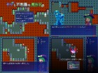
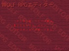

【注意】赤文字の「サイトへのリンク」や【ダウンロード】リンクは、現在のドメイン所有者が当時と変わっていて危険なサイトにつながる可能性がありますので、もしリンク移動時にブラウザの警告などが出た場合は移動しないよう注意してください。
（『緑色のリンク』と『青色のリンク』はそれぞれ「ページ内リンク」と「同サーバー内へのリンク」なので安全です）
部門別順位 → [熱中度] [斬新さ] [物語性] [画像/音声] [遊びやすさ] [その他]
総合グランプリ / 全ての応募作品 / エントリー番号順リンク / 総評 （どれもページ内リンクです）
第10回 WOLF RPGエディターコンテスト 部門別順位表
以下は「熱中度」「斬新さ」「物語性」「画像/音声」「遊びやすさ」「その他加点」の６項目の部門別順位です。はやく【総合順位】を見たい人はこちらをクリック！
各部門の得点は「平均点の順位ポイント（最大30点）」「総計点の順位ポイント（最大15点））」「中央値」の
合計点で算出されます。なお、有効投票者数は452名、のべ評価作品数は4537作品でした。
1.【熱中度】部門
| 順位 | 作品名 | 平均点（ﾗﾝｸP） | 合計点（ﾗﾝｸP） | 中央値 | 熱中度 得点 |
| 1位 | 【コトダマッスル】 |
7.45 (1位:30点) | 1147 (1位:15点) | 8点 | 53点 |
| ◆熱中して最後まで一気にプレイしてしまいました。 ◆妙な所で煩わされることなく、最初から最後までずっとハイテンションが維持できて爽快だった。 ◆ダレる前にスパっと終わらせる丁度いい長さなどとてもよくできた作品だと思います。 |
|||||
| 2位 | 【サラと不思議な魔法石】  |
7.18 (2位:29点) | 1128 (2位:15点) | 7点 | 51点 |
| ◆RPGとマインスイーパを組み合わせるアイデアが面白い! こんなゲームを待ってました!! ◆すべての罠に旗を立てるとブロックが消えることで、残りブロックが少なくなったらローラー作戦でヤマをはったり、色々な楽しみ方ができて楽しい。 ◆絵も可愛いし問題を解きながら数字を追いかけて右往左往するのは楽しかった。 |
|||||
| 3位 | 【未完のエリザ】 |
7.18 (3位:28点) | 940 (8位:12点) | 7点 | 47点 |
| ◆最初に4章と明記されたおかげでプレイする方はモチベーションが維持しやすい。 ◆全体的に無駄がほとんどなくて非常に遊びやすかったです。 ◆先へ進むためのギミックが章ごとに異なるため、この先はどうなるんだろうとワクワクしました! |
|||||
| 4位 | 【君は空を渡り地に響く、おおきなものになりたかった。】 | 6.99 (5位:26点) | 965 (7位:12点) | 7点 | 45点 |
| 5位 | 【フロースラントの魔法屋さん】 | 6.84 (7位:24点) | 1046 (5位:13点) | 7点 | 44点 |
| 6位 | 【エウレカ・クラン】 | 6.98 (6位:25点) | 851 (11位:10点) | 7点 | 42点 |
| 7位 | 【すっぽんクエスト】 | 7.03 (4位:27点) | 675 (18位:7点) | 7点 | 41点 |
| 7位 | 【ウシのチキンレース】 | 6.57 (11位:20点) | 1097 (3位:14点) | 7点 | 41点 |
| 9位 | 【あなたは呪われてしまいました】 | 6.73 (9位:22点) | 908 (10位:11点) | 7点 | 40点 |
| 10位 | 【じじまごRPGmini】 | 6.55 (12位:19点) | 995 (6位:13点) | 7点 | 39点 |
| 11位 | 【My VitrioL】 | 6.66 (10位:21点) | 506 (23位:4点) | 7点 | 32点 |
| 11位 | 【花まるプリンセス】 | 6.75 (8位:23点) | 452 (28位:2点) | 7点 | 32点 |
| 13位 | 【ＡＮ ＥＡＲＴＨ２ ～3つの地球と未来ドロボウ～】 | 6.15 (20位:11点) | 1057 (4位:14点) | 6点 | 31点 |
| 14位 | 【パズル問答】 | 6.28 (16位:15点) | 810 (13位:9点) | 6点 | 30点 |
| 14位 | 【夢遊猫ハローワールド】 | 6.52 (13位:18点) | 548 (21位:5点) | 7点 | 30点 |
| 16位 | 【狩る狩るガールＴＶ】 | 6.51 (14位:17点) | 534 (22位:5点) | 7点 | 29点 |
| 17位 | 【クリッターズ】 | 6.23 (17位:14点) | 692 (16位:8点) | 6点 | 28点 |
| 18位 | 【ディアボロスフォビア】 | 6.33 (15位:16点) | 494 (24位:4点) | 6点 | 26点 |
| 19位 | 【ポケットタッキュウ】 | 6.23 (18位:13点) | 573 (20位:6点) | 6点 | 25点 |
| 20位 | 【メツァルナ】 | 6.02 (24位:7点) | 716 (15位:8点) | 6点 | 21点 |
2.【斬新さ】部門
| 順位 | 作品名 | 平均点（ﾗﾝｸP） | 合計点（ﾗﾝｸP） | 中央値 | 斬新さ 得点 |
| 1位 | 【あなたは呪われてしまいました】  |
7.59 (1位:30点) | 1024 (4位:14点) | 8点 | 52点 |
| ◆まさかゲームのファイルをいじくり回すゲームがあるとは思わなかった。 ◆メタ視点で楽しめる非常に斬新なゲームでした。自分の手で謎を解いていく楽しさが良かったです。 ◆ゲームが現実に影響を及ぼす没入感が素晴らしく、能動的にゲームをする感覚が非常に良かった。 |
|||||
| 2位 | 【サラと不思議な魔法石】 |
6.96 (3位:28点) | 1092 (1位:15点) | 7点 | 50点 |
| ◆マインスイーパーとRPGを組み合わせて、足し算ではなく掛け算的な効果を生み出したすごい作品だった。 ◆一見噛み合わさなさそうな2つの要素の親和性は非常に高い。基本はマインスイーパー部分で、2択を迫られた時の救済要素もちゃんとある。 ◆「マインスイーパ」の確約された面白さに「サラと不思議な魔法石」ならではの面白さを加えることで、新しい感覚を生み出すことに成功している。 |
|||||
| 3位 | 【メツァルナ】 |
7.27 (2位:29点) | 865 (7位:12点) | 8点 | 49点 |
| ◆操作方法もおもしろく、慣れていく感覚が心地いいタイプのアクションゲームでした。 ◆独自システムを多数用意しながら、半分くらい無視してＯＫという思い切ったバランスで、クリア後も別のスタイルで遊びたくなる。 ◆戦闘における立ち回りが、パズルを起動する為のリソース取得量と関わっていて面白い作品。 |
|||||
| 4位 | 【君は空を渡り地に響く、おおきなものになりたかった。】 | 6.57 (6位:25点) | 907 (6位:13点) | 7点 | 45点 |
| 5位 | 【魔女の塔】 | 6.44 (8位:23点) | 1063 (2位:15点) | 6点 | 44点 |
| 6位 | 【未完のエリザ】 | 6.49 (7位:24点) | 850 (10位:11点) | 7点 | 42点 |
| 7位 | 【すっぽんクエスト】 | 6.61 (5位:26点) | 635 (18位:7点) | 7点 | 40点 |
| 8位 | 【コトダマッスル】 | 6.20 (12位:19点) | 955 (5位:13点) | 6点 | 38点 |
| 9位 | 【ＡＮ ＥＡＲＴＨ２ ～3つの地球と未来ドロボウ～】 | 6.05 (14位:17点) | 1040 (3位:14点) | 6点 | 37点 |
| 10位 | 【エウレカ・クラン】 | 6.33 (10位:21点) | 772 (13位:9点) | 6点 | 36点 |
| 11位 | 【AnimalCurling】 | 6.74 (4位:27点) | 418 (29位:1点) | 7点 | 35点 |
| 12位 | 【ポケットタッキュウ】 | 6.43 (9位:22点) | 592 (20位:6点) | 6点 | 34点 |
| 13位 | 【夢遊猫ハローワールド】 | 6.21 (11位:20点) | 522 (21位:5点) | 6点 | 31点 |
| 14位 | 【クリッターズ】 | 5.86 (17位:14点) | 650 (16位:8点) | 6点 | 28点 |
| 15位 | 【わらわらすぴりっつ】 | 5.81 (19位:12点) | 656 (15位:8点) | 6点 | 26点 |
| 15位 | 【メタルメサイア -鋼の救世主-】 | 5.85 (18位:13点) | 643 (17位:7点) | 6点 | 26点 |
| 17位 | 【もう二度と君に会えない】 | 5.99 (15位:16点) | 437 (26位:3点) | 6点 | 25点 |
| 17位 | 【エライザの食卓騎士】 | 6.12 (13位:18点) | 416 (30位:1点) | 6点 | 25点 |
| 17位 | 【狩る狩るガールＴＶ】 | 5.93 (16位:15点) | 486 (23位:4点) | 6点 | 25点 |
| 20位 | 【フロースラントの魔法屋さん】 | 5.59 (24位:7点) | 855 (9位:11点) | 6点 | 24点 |
3.【物語性】部門
| 順位 | 作品名 | 平均点（ﾗﾝｸP） | 合計点（ﾗﾝｸP） | 中央値 | 物語性 得点 |
| 1位 | 【未完のエリザ】 |
7.84 (1位:30点) | 1027 (3位:14点) | 8点 | 52点 |
| ◆ストーリーが美しくて気に入りました。決して長すぎない文章量で的確に世界観をプレイヤーに伝えてくれています ◆演出が抜群にうまく、シナリオも一冊の小説を読み終えたかのような心地よいものがあった。 ◆ホラーと身構えていたがそれは序盤だけで後はめまぐるしい冒険の連続だった。 |
|||||
| 2位 | 【コトダマッスル】 |
6.81 (5位:26点) | 1048 (2位:15点) | 7点 | 48点 |
| ◆あらゆる問題を筋肉で解決していく脳筋なストーリーはどことなく安心感を持って楽しめる。 ◆特に最後はタイピングゲーにしか出来ない盛り上げ方で熱かったです。 ◆派手な演出と熱いストーリーに惹かれて一気にクリアしてしまいました。 |
|||||
| 3位 | 【すっぽんクエスト】 |
7.73 (2位:29点) | 742 (13位:9点) | 8点 | 46点 |
| ◆A級映画のようなシリアスな作風とB級映画の奇天烈さが同居した凄まじい作品。 ◆謎の多いストーリーと魅力的なキャラクターに最初から最後まで引き込まれっぱなしだった。 ◆バカゲー臭のするタイトルに反してSF小説の設定にあってもおかしくない重めの世界観が特徴的。 |
|||||
| 4位 | 【My VitrioL】 | 7.55 (3位:28点) | 574 (16位:8点) | 8点 | 44点 |
| 4位 | 【ＡＮ ＥＡＲＴＨ２ ～3つの地球と未来ドロボウ～】 | 6.46 (9位:22点) | 1111 (1位:15点) | 7点 | 44点 |
| 6位 | 【メツァルナ】 | 6.53 (6位:25点) | 777 (11位:10点) | 7点 | 42点 |
| 6位 | 【エウレカ・クラン】 | 6.49 (8位:23点) | 792 (8位:12点) | 7点 | 42点 |
| 8位 | 【夢遊猫ハローワールド】 | 6.51 (7位:24点) | 547 (18位:7点) | 7点 | 38点 |
| 9位 | 【花まるプリンセス】 | 6.93 (4位:27点) | 464 (25位:3点) | 7点 | 37点 |
| 9位 | 【じじまごRPGmini】 | 6.16 (13位:18点) | 936 (5位:13点) | 6点 | 37点 |
| 9位 | 【魔女の塔】 | 6.09 (14位:17点) | 1005 (4位:14点) | 6点 | 37点 |
| 12位 | 【カヤミセツナ】 | 5.93 (17位:14点) | 860 (6位:13点) | 6点 | 33点 |
| 13位 | 【ディアボロスフォビア】 | 6.29 (11位:20点) | 491 (22位:5点) | 6点 | 31点 |
| 14位 | 【狩る狩るガールＴＶ】 | 6.20 (12位:19点) | 508 (21位:5点) | 6点 | 30点 |
| 15位 | 【エライザの食卓騎士】 | 6.34 (10位:21点) | 431 (27位:2点) | 6点 | 29点 |
| 15位 | 【君は空を渡り地に響く、おおきなものになりたかった。】 | 5.67 (19位:12点) | 783 (10位:11点) | 6点 | 29点 |
| 17位 | 【サラと不思議な魔法石】 | 5.41 (23位:8点) | 849 (7位:12点) | 5点 | 25点 |
| 18位 | 【緋色の研究所】 | 6.04 (15位:16点) | 411 (29位:1点) | 6点 | 23点 |
| 19位 | 【ウルファールライヒの栄光】 | 5.96 (16位:15点) | 399 (30位:1点) | 6点 | 22点 |
| 20位 | 【あなたは呪われてしまいました】 | 5.30 (24位:7点) | 715 (14位:9点) | 5点 | 21点 |
4.【画像/音声】部門
| 順位 | 作品名 | 平均点（ﾗﾝｸP） | 合計点（ﾗﾝｸP） | 中央値 | 画像/音声 得点 |
| 1位 | 【メツァルナ】 |
8.30 (1位:30点) | 988 (8位:12点) | 9点 | 51点 |
| ◆冒頭から画像のクオリティと使い方の上手さに引き込まれた。本編でのアニメーションやデザイン面もとても丁寧。 ◆画像＆音楽＆世界観はトップクラス・・とゆうか別格でした！ ◆キャラ画像が独特で可愛く、特に操作する自キャラがよく動く所がとても良かった。 |
|||||
| 1位 | 【フロースラントの魔法屋さん】 |
7.56 (3位:28点) | 1157 (1位:15点) | 8点 | 51点 |
| ◆グラフィックもレベルが高く、画面上のUI、BGM、その他ほとんどの要素が素晴らしかったです。 ◆キャラクターの画像やものを作っているときの画像もかわいらしく、良かったです ◆スクショに代表される雰囲気が素晴らしいゲーム。 |
|||||
| 3位 | 【じじまごRPGmini】 |
7.42 (4位:27点) | 1128 (2位:15点) | 8点 | 50点 |
| ◆このまま売れるんじゃないかってくらいGB時代を思わせる絵やBGM、見せ方が素晴らしい。 ◆レトロ テイストな雰囲気に、BGMやSEも凄く合っていて、クリアまで心地よくプレイ出来ました！ ◆ドット絵がぬるぬる動くのがすばらしい! |
|||||
| 4位 | 【未完のエリザ】 | 7.60 (2位:29点) | 996 (7位:12点) | 8点 | 49点 |
| 5位 | 【カヤミセツナ】 | 7.17 (6位:25点) | 1039 (4位:14点) | 8点 | 47点 |
| 6位 | 【コトダマッスル】 | 7.12 (8位:23点) | 1096 (3位:14点) | 7点 | 44点 |
| 7位 | 【エウレカ・クラン】 | 7.29 (5位:26点) | 889 (11位:10点) | 7点 | 43点 |
| 8位 | 【すっぽんクエスト】 | 7.14 (7位:24点) | 685 (17位:7点) | 7点 | 38点 |
| 8位 | 【きみのかんじょーいれないで】 | 6.47 (12位:19点) | 1009 (6位:13点) | 6点 | 38点 |
| 10位 | 【わらわらすぴりっつ】 | 6.66 (10位:21点) | 753 (15位:8点) | 7点 | 36点 |
| 11位 | 【ディアボロスフォビア】 | 7.05 (9位:22点) | 550 (21位:5点) | 7点 | 34点 |
| 12位 | 【クリッターズ】 | 6.46 (13位:18点) | 717 (16位:8点) | 6点 | 32点 |
| 12位 | 【夢遊猫ハローワールド】 | 6.49 (11位:20点) | 545 (22位:5点) | 7点 | 32点 |
| 14位 | 【ＡＮ ＥＡＲＴＨ２ ～3つの地球と未来ドロボウ～】 | 6.03 (20位:11点) | 1037 (5位:13点) | 6点 | 30点 |
| 14位 | 【風雷嬢】 | 6.42 (14位:17点) | 552 (20位:6点) | 7点 | 30点 |
| 16位 | 【パズル問答】 | 6.05 (19位:12点) | 781 (14位:9点) | 6点 | 27点 |
| 17位 | 【メタルメサイア -鋼の救世主-】 | 6.06 (18位:13点) | 667 (18位:7点) | 6点 | 26点 |
| 18位 | 【とめさんのお宿にて～ほのぼの日常編～】 | 6.11 (16位:15点) | 538 (23位:4点) | 6点 | 25点 |
| 18位 | 【君は空を渡り地に響く、おおきなものになりたかった。】 | 5.91 (22位:9点) | 815 (12位:10点) | 6点 | 25点 |
| 20位 | 【サラと不思議な魔法石】 | 5.74 (24位:7点) | 901 (10位:11点) | 6点 | 24点 |
5.【遊びやすさ】部門
| 順位 | 作品名 | 平均点（ﾗﾝｸP） | 合計点（ﾗﾝｸP） | 中央値 | 遊びやすさ 得点 |
| 1位 | 【コトダマッスル】 |
7.61 (1位:30点) | 1172 (2位:15点) | 8点 | 53点 |
| ◆細部までストレスなく遊べる配慮がありました。 ◆爽快感のあるタイピングゲーム！タイピング攻撃のエフェクトやSEが気持ちいい！ ◆タイピングゲームなのに入力設定がないというのに驚きました。いちいち設定しなくても最初から柔軟なローマ字入力に対応しています。 |
|||||
| 2位 | 【ウシのチキンレース】 |
7.22 (3位:28点) | 1205 (1位:15点) | 7点 | 50点 |
| ◆短時間で終わるゲームなのでリトライが操作に使うキーと同じなのは遊びやすかった。 ◆短時間に気軽にプレイでき、気づいたら何度もプレイしていた。 ◆ミニゲームとしては過不足なく良い作品でした。単純ゆえについ何度もやってしまう。 |
|||||
| 3位 | 【エウレカ・クラン】 |
7.34 (2位:29点) | 896 (9位:11点) | 7点 | 47点 |
| ◆UIと操作性の良さが市販のゲームと遜色ないくらい、快適でプレイしやすかったです。 ◆遊びやすくする為の工夫が随所に見受けられ、一見複雑そうなシステムながらもすんなりと理解する事ができました。 ◆最初は複雑そうだと思ったが、チュートリアルが丁寧ですぐに理解できた。 |
|||||
| 3位 | 【未完のエリザ】 |
7.17 (4位:27点) | 939 (8位:12点) | 8点 | 47点 |
| ◆周回要素があるものの、ヒントが用意されているところがプレイヤーとしてサクサクと進めることができてよかったので加点させていただきました。 ◆トゥルー回収周りの親切さがありがたい。 ◆各章の難易度も易しすぎず難しすぎない程度のためいい意味でサクサク進めることができました。 |
|||||
| 5位 | 【サラと不思議な魔法石】 | 6.64 (6位:25点) | 1042 (3位:14点) | 7点 | 46点 |
| 5位 | 【じじまごRPGmini】 | 6.64 (5位:26点) | 1009 (5位:13点) | 7点 | 46点 |
| 7位 | 【パズル問答】 | 6.53 (7位:24点) | 842 (12位:10点) | 6点 | 40点 |
| 8位 | 【わらわらすぴりっつ】 | 6.52 (8位:23点) | 737 (14位:9点) | 7点 | 39点 |
| 9位 | 【フロースラントの魔法屋さん】 | 6.15 (13位:18点) | 941 (7位:12点) | 7点 | 37点 |
| 10位 | 【きみのかんじょーいれないで】 | 6.07 (16位:15点) | 947 (6位:13点) | 6点 | 34点 |
| 10位 | 【カヤミセツナ】 | 6.13 (14位:17点) | 889 (10位:11点) | 6点 | 34点 |
| 12位 | 【夢遊猫ハローワールド】 | 6.30 (11位:20点) | 529 (19位:6点) | 6点 | 32点 |
| 12位 | 【ディアボロスフォビア】 | 6.35 (10位:21点) | 495 (22位:5点) | 6点 | 32点 |
| 14位 | 【ＡＮ ＥＡＲＴＨ２ ～3つの地球と未来ドロボウ～】 | 5.91 (21位:10点) | 1017 (4位:14点) | 6点 | 30点 |
| 14位 | 【花まるプリンセス】 | 6.43 (9位:22点) | 431 (30位:1点) | 7点 | 30点 |
| 14位 | 【ハイスandカルト】 | 6.18 (12位:19点) | 519 (21位:5点) | 6点 | 30点 |
| 17位 | 【すっぽんクエスト】 | 5.99 (18位:13点) | 575 (18位:7点) | 6点 | 26点 |
| 17位 | 【君は空を渡り地に響く、おおきなものになりたかった。】 | 5.94 (20位:11点) | 820 (13位:9点) | 6点 | 26点 |
| 19位 | 【My VitrioL】 | 6.08 (15位:16点) | 462 (25位:3点) | 6点 | 25点 |
| 20位 | 【とめさんのお宿にて～ほのぼの日常編～】 | 5.94 (19位:12点) | 523 (20位:6点) | 6点 | 24点 |
6.【その他】部門
| 順位 | 作品名 | 平均点（ﾗﾝｸP） | 合計点（ﾗﾝｸP） | 中央値 (1点以上 のみｶｳﾝﾄ) |
その他 得点 |
| 1位 | 【ＡＮ ＥＡＲＴＨ２ ～3つの地球と未来ドロボウ～】 |
+1.74 (1位:30点) | 299 (1位:15点) | 4点 | 49点 |
| ◆凄まじいまでのネタの濃度をしっかり支えるRPGの仕上がりが素晴らしい。行動に対してレスポンスが返ってくるのも嬉しい。 ◆最初の場面から予想の上を行く壊れっぷりであり、そのテイストのまま進む物語もほかでは見たことのない壊れっぷりで最高です。 ◆KICKシステムはすごい！ 本当にすごいんだ！ |
|||||
| 2位 | 【未完のエリザ】 |
+1.60 (3位:28点) | 209 (2位:15点) | 3点 | 46点 |
| ◆章ごとに分かれたステージにそれぞれの謎解きがあり、どれも作り込まれていて面白かった。 ◆とにかくすごろくが面白くて何回もやってしまった。他人にプレイさせたくなるシステム。 ◆トゥルーエンドがとにかくすばらしい。プレイ跡には心地よいふわふわした気分になれた。 ◆今回のウディコンの中で一番心にくるものがあった。 |
|||||
| 3位 | 【夢遊猫ハローワールド】 |
+1.65 (2位:29点) | 139 (9位:11点) | 5点 | 45点 |
| ◆100を超える仲間モンスター全てに特徴的なスキルセットが設定されていたり、全モンスター、キャラクターに解説文が書かれていたりと、圧倒的な作り込みを感じられた。 ◆やりこみ要素の面白さ、作者のケモノ愛を高く評価してその他に加点しました。 ◆相変わらずアレの大きいゲームですが、「移動」システムも加わってより戦略性の増した素晴らしいゲームだと思いました。 |
|||||
| 4位 | 【すっぽんクエスト】 | +1.48 (4位:27点) | 142 (7位:12点) | 3点 | 42点 |
| 5位 | 【コトダマッスル】 | +1.28 (6位:25点) | 197 (3位:14点) | 2点 | 41点 |
| 6位 | 【メツァルナ】 | +1.21 (8位:23点) | 144 (6位:13点) | 3点 | 39点 |
| 7位 | 【君は空を渡り地に響く、おおきなものになりたかった。】 | +1.12 (10位:21点) | 154 (4位:14点) | 2点 | 37点 |
| 8位 | 【AnimalCurling】 | +1.31 (5位:26点) | 81 (21位:5点) | 2点 | 33点 |
| 8位 | 【あなたは呪われてしまいました】 | +1.07 (13位:18点) | 145 (5位:13点) | 2点 | 33点 |
| 10位 | 【クリッターズ】 | +1.11 (11位:20点) | 123 (12位:10点) | 2点 | 32点 |
| 10位 | 【緋色の研究所】 | +1.25 (7位:24点) | 85 (20位:6点) | 2点 | 32点 |
| 12位 | 【ディアボロスフォビア】 | +1.15 (9位:22点) | 90 (18位:7点) | 2点 | 31点 |
| 13位 | 【フロースラントの魔法屋さん】 | +0.93 (15位:16点) | 142 (7位:12点) | 2点 | 30点 |
| 14位 | 【狩る狩るガールＴＶ】 | +1.10 (12位:19点) | 90 (18位:7点) | 2点 | 28点 |
| 15位 | 【サラと不思議な魔法石】 | +0.85 (17位:14点) | 134 (10位:11点) | 2点 | 27点 |
| 16位 | 【My VitrioL】 | +1.03 (14位:17点) | 78 (22位:5点) | 2点 | 24点 |
| 16位 | 【エウレカ・クラン】 | +0.87 (16位:15点) | 106 (17位:7点) | 2点 | 24点 |
| 16位 | 【じじまごRPGmini】 | +0.81 (19位:12点) | 123 (12位:10点) | 2点 | 24点 |
| 16位 | 【カヤミセツナ】 | +0.82 (18位:13点) | 119 (14位:9点) | 2点 | 24点 |
| 20位 | 【ウシのチキンレース】 | +0.75 (23位:8点) | 125 (11位:10点) | 1点 | 19点 |
総合グランプリ
総合グランプリ順位は「熱中度」「斬新さ」「物語性」「画像/音声」「遊びやすさ」「その他加点」の６項目の「総合得点」に、「平均重視度（％）」を掛けて得られた値を総計したポイントで決定されます。
皆さまの投票から得られた平均重視度は以下の通りとなりました。
熱中度 78.0 ％ 斬新さ 52.4 ％ 物語性 61.8 ％ 画像/音声 53.7 ％ 遊びやすさ 74.1 ％
※その他加点は自動で「50％」となります。
【1位】『未完のエリザ』(エントリー番号【10】/ 総ポイント175.0点)
熱中 36.7点(3位)+斬新 22.0点(6位)+物語性 32.1点(1位)+画像音声 26.3点(4位)+遊びやすさ 34.8点(3位)+その他 23.0点(2位)
熱中 36.7点(3位)+斬新 22.0点(6位)+物語性 32.1点(1位)+画像音声 26.3点(4位)+遊びやすさ 34.8点(3位)+その他 23.0点(2位)
- 【ダウンロード】
【運営ﾊﾞｯｸｱｯﾌﾟからDL(安全/99MB)】 - 作者 : ナイデン内田
- プレイ時間 :2時間～4時間
- 作者コメント:
- 『…この曲を演奏した者は呪われる…』
ピアノ弾きの少女が 呪われた音楽の世界に迷い込む、ファンタジー系探索型ＡＤＶ
※多少のアクション・微ホラー要素が含まれます
※タイトルが未完となっていますがゲーム自体は完成しています
5種類の異なるステージを攻略していきます
序章 猫ふんじゃった
・だるまさんがころんだ
第一楽章 天国と地獄
・捕獲した羊で道をつくる
第二楽章 月光
・変化の杖を駆使して探索
第三楽章 運命
・すごろく型性格診断
第四楽章 田園の孤独病
・画面内に誰もいないと死ぬ
エンド数2つ
公式HPに攻略あり
【ゲームプレイ配信はご自由に】
【動画への映像使用(3分以内)はご自由に】
-
【一般投票コメント】
[熱6新6物8画9遊8他+3] 様々な試みが盛り込まれているにもかかわらず、テンポが悪くなったり、プレイヤー側に負担となるようなデザインになるなどの欠点が存在しなかった。構成力が非常に高く、完成度は随一と言ってよい。
[熱7新6物8画7遊7] まず題材の設定が成功だったと思います。改変に怒る芸術作品とその想いを理解しようとする少女ピアニストという設定は特殊ですが、多くのリメイク作品やメディアミックス作品に接し、その出来栄えに一喜一憂している我々にとって、縁の薄いテーマではないんですよね。肝心のゲーム内容も、他の同類作品がこうだから、というのではなく、一つ一つの要素を咀嚼しながら作られているのが分かる出来栄えでした。
[熱10新9物8画8遊9他+5] 非常に完成度が高く、最初から最後まで楽しめました。各章ごとに変わるゲーム性で飽きさせず、難易度もさほど高くないものの手ごたえを感じさせるボリューム感があり。個人的にこの手の探索ゲームで公式HPに攻略が完備されているのは安心感があって好きです。特にエンド分岐への道のりがパスワード制のため一貫したデータで拾う必要が無いのは助かりました。追加点は同封されいてるmp3ファイルの可愛さです。ゴリラは最強。
[熱7新6物9画9遊8] 絵・物語・見せ方など探索系のADVとして高水準にまとまっていて安心してプレイできる。図書館にある大量の雑学にはへぇしたくなった
[熱9新6物10画8遊9他+3] トゥルーエンドの演出がかなり凝ってて達成感があった。普通にプレイしてたら見過ごす箇所も力を入れてあり感心した。
[熱8新9物9画10遊7他+6] ゴリラの出演は大きい
[熱9新7物8画8遊8] シナリオの作り方が上手いっすね。最初に4章（+1）と明記されたお陰でプレイする方はモチベーション維持し易いし、多分作る方も組み立てやすいのではないでしょうか。登場キャラクタに嫌味が無いしストーリー全体を通して洗練されていると思います。3章のすごろく心理クイズは有りそうでなかった。面白い。4章の孤独の世界はプレイする上で移動に制限が掛かってストレスが溜まるのはちょいと残念。真エンドは二周クリア必須と思いきやチャプターモードまで作ってくれたのはディモールト・ベネ。
[熱8新6物9画7遊6他+4] ホラーゲームに付きものなアクション部分をワンヒットではなく体力制にしてあるのでストレスが少なかったです。また全体としてバラバラに見える多くの人がスルーするであろう数々のテキストが一つの流れとして用意されていて、これにより一つの世界観を作り上げていました。
[熱8新8物9画9遊9] 全体的に無駄がほとんどなくて非常に遊びやすかったです。何よりストーリーが美しくて気に入りました。決して長すぎない文章量で的確に世界観をプレイヤーに伝えてくれています (あまりにも完成されすぎていてまさか前作に該当する作品があるとは思わなかった程です)。シリアスに徹しすぎていないのもグッド。真エンドへの謎解きも懸念されるほど難しくはなくて丁度いい感じでした。メニューの左下にある状況依存型のメッセージがすごく面白いですね。マリンちゃん可愛すぎ。実はゴリラ = ネタの人みたいなイメージで印象が良くなかったのですが、この作品ですっかり作者さんに対するイメージが一転してしまいました…これからは応援させて頂きます♪ 棺桶時計の動く夜などなどプレイしなくっちゃ！
[熱10新8物10画8遊10他+7] 相変わらずのナイデンさんワールドに心を奪われました。特に今回は今までのシステムを一新してパズル・変化の杖・すごろく・孤独病と４つのシステムを用い斬新さも押さえていると感じます。readmeもさることながら同梱の声、メニュー画面の遊び心、相変わらずのゴリラ愛と、今までの集大成だと感じます。面白い作品をありがとうございました。
[熱9新8物9画8遊7] 一度クリアすればトゥルーエンドのヒントがほぼ分かるので、何度も周回することも無くクリアできて楽しめました。 だるまさんが転んだシステムはおまけを見るまで気が付きませんでした。 一度設定したパッドなどのキー設定は、タイトルから反映されているとプレイしやすいと思います。
[熱9新8物10画8遊10他+7] 今回のウディコンの中で一番心にくるものがあった。演出が抜群にうまく、シナリオも一冊の小説を読み終えたかのような心地よいものがあった。またすごろくの三国志ネタ（諸葛亮と魏延）にピンときてニヤニヤしたとともに、改めて自分の場合はどうするかということに考えさせられた。
[熱9新8物10画8遊7他+2] 周回要素があるものの、ヒントが用意されているところがプレイヤーとしてサクサクと進めることができてよかったので加点させていただきました。ストーリーも絶望的な局面から始まってハッピーエンドになったので達成感を感じました。
[熱7新7物9画10遊8] 「完成」について考えさせられるストーリーでした。絵やUIも素晴らしかった。状況に従ってメニュー画面の背景が変わるのが面白かった。
[熱10新8物8画8遊8他+2] こんなに熱中するとは思いませんでした。ストーリー性も結構良かったですし、またやってみたいくらいです！
[熱7新4物7画6遊8他+4] トゥルーまで頑張って良かったゲーム。月の森の住人のリアクションが楽しくて寂しくてもの悲しいので世界を救えた時は喜びも一入。フレーバーテキストとゲームの説明がよく混ざっていて導入が自然ですんなり世界に入れる。クリア時の爽やかさがこのゲームを最後までプレイして良かったと思わせる。最後までゴリラたっぷりで非常に面白かった
[熱7新7物7画7遊7] v1.03 章ごとに異なるシステム、ストーリー展開が良い。変身する所では反応や会話が細かく変わり、すごろくも豊富なシーンがあり作り込まれている。
[熱7新6物7画7遊8他+2] 様々な音楽をテーマとした物語とステージが素敵でした。先へ進むためのギミックが章ごとに異なるため、この先はどうなるんだろうとワクワクしました! また、行き先の表示やクリア後のヒント部屋など、プレイヤーへの配慮が非常に行き渡っていました。簡単すぎず難しすぎない難易度も良かったです。その他加点はゴリラ愛がとんでもなく伝わってきたので。
[熱6新7物7画8遊8] 演出を含み、主に主人公のキャラ立てが秀逸で魅力的だった。芯が強くて可愛い。エリザの狂気を体現したような気持ちの悪い敵のデザインも素晴らしい。追いかけっこ系のホラーゲームが苦手なプレイヤーでも、バリエーションが豊かで飽きずにめげずに続けられた。寄り道のオブジェクトも含め、細部まで作り込まれている美しい作品だと思った。
[熱6新7物7画8遊6] 音楽の楽章をイメージした世界を探索するアドベンチャー。微ホラー要素あり。おそらく一番ホラー要素が多いのは序盤。ゲーム紹介文にもある通り、楽章ごとに異なる様々で独特なルールの元にゲームを進めていくことになる。追いかけっこ要素などもあるが体力にはかなり余裕があり、課題の意味さえ分かっていればさほど難しくない。どちらかと言うと奇妙な世界を歩き回る雰囲気ゲーとして楽しむべき作品と思われる。ただし雰囲気ゲーとして少し惜しいのは、一部楽章の世界と全体テーマである音楽との関連が少々薄いところか。隠し要素もあり真エンドへの条件になっていてノーヒントですべて回収するのはかなり難しいが、クリア後にヒントも見られるのでその辺は安心。本作のタイトルの意味、本来の曲がどのようなものであったか、真エンドを見てぜひ確認してもらいたい作品。
[熱10新8物7画6遊8他+5] すごろくのシステムや視界に自分以外の誰かがいないとゲームオーバーになるシステムが今までの作品にない技術で、工夫が感じられました。また、トゥルーエンドへ辿り着くためには、断片的な情報を解読していかないといけないのでやりがいがありました。
[熱10新9物7画10遊7他+3] 細部にまで行き渡った設定で彩られたストーリー。未プレイの人は、開始５分で行ける資料室みたいな所にいってみよう。そして全部読もう。「本編とは全く関係ないどうでもいい部分」にもしっかりとテキストを用意する作者様の本気が伺えます。言うまでもありませんが、本編にも力が注がれており、美しいマップと斬新な世界観に、心奪われます。スクショを見た通り、中身はホラーですが、ガチホラーなのは最初の部分だけなので、そこを乗り越えれば誰でも楽しくプレイできると思います。後、一番良いＥＤを見るためには、「人の心を推察するだけの推理力」が試されます。私はラストの推理で１０回ほどやり直したのですが、もうこれジャンルを推理ゲームにしてもいいかもしれない。
[熱9新7物7画7遊8他+2] リフレインに関する伏線と締めが好きです。雰囲気やチャプタータイトルも凝っててよかったと思います。トゥルー回収周りの親切さもありがたい。あとホラーのわりに人形が終始癒しで最後の一枚絵も可愛かった。
[熱9新8物10画8遊7他+7] トゥルーエンドがとにかくすばらしい。プレイ跡には心地よいふわふわした気分になれた。思った程難易度も高くなく、最後の問答も一発でいけた。
[熱9新7物10画8遊9他+7] どの世界も独自性があり一定のやりがいを感じられました。中でも月光の世界は１０１種類の変化ということで、そのつくりこみにも感心させられましたし、オーブを集めた後の滅んだ世界がとても切なくキュッと胸に染み込む思いでした。これ一つで複数のゲームを楽しめた感じがします。名作をありがとうございました。
[熱10新8物8画8遊8他+8] ストーリー、ゲームシステム、キャラクターすべてがハイレベルで形成されたゲームです。また、性格診断すごろくはとても深く練られていて何回もプレイしてしまう中毒性がありました。微ホラーならぬ美ホラーだと思いました。その独特な世界観と発想力に加点します。
[熱9新8物9画9遊8他+6] すごろくがかなり斬新かつ一つ一つドラマがあり作りこまれていて、全部のマスに止まるまでやりこんでしまいました。本編のお話も良い展開でした。マリンちゃんは羊を頭に乗せて首が折れないのでしょうか？飲食物で例えるとお寿司のようなゲームでした
[熱6新6物7画7遊5] トゥルーまでクリアしました。いろんなステージがあって面白かったです。
[熱6新4物7画8遊7] ひつじかわいい
[熱8新7物9画8遊7他+2] サイコロステージが楽しかったので加点。
[熱8新6物8画8遊7他+3] シナリオは同作者作品の中でもトップクラスに好きです。感情移入しつつ幾つものお題に立ち向かっていけました。細かい作り込みも圧巻。恒例の豆知識が詰まっているのも、私自身調べる行動に対してのレスポンスがあると喜ぶタチなので好みです。ギミックに関しては過去作にあったようなデジャブを猛烈に感じるものではなく、アレンジを加え無駄を無くそうとする試行錯誤も感じつつ、新鮮に楽しめるようになっていました。特にサイコロ凄いですね。遊び心と技術が揃ったギミックだと思います。
[熱9新7物9画10遊8他+8] ホラーと身構えていたがそれは序盤だけで後はめまぐるしい冒険の連続だった。途中だれることがなかったのがすごいと思う。つくりこみも凄まじくこのゲームを骨の髄までしゃぶらせていただいた。ひと夏の楽しいゲームとの思い出をありがとう。
[熱9新9物9画8遊9他+3] ５つの世界。５つのルール。そして全編を渡ってのホラーな世界観、一つのストーリーに帰着し、エンディングで大団円。久々に「ゲームやった感」があった。お気に入りは「田園の孤独病」！
[熱9新5物9画9遊9他+5] しっかりとした世界観と、プレイヤーを飽きさせない工夫が好感触です。二番煎じなシステムではありますが、うまいことゲームに取り入れていたと思います。
[熱9新5物10画9遊8] 未完であることの意味など、なかなか考えさせられる点が多かったです。楽譜の思いや苦しみをステージで表現しているところなど、ゲームと物語を上手く融合させていて感心しました。
[熱9新8物9画7遊8他+6] 変化の杖の種類と会話のバリエーション、すごろくのつくりこみ、孤独病の発想を評価。音がだんだん不協和音になっていくなど演出の使い方がうまい。唯一絵に統一感がないのが悔やまれる。１枚１枚で見た時はかなり良い。
[熱7新7物8画10遊10他+7] バランスのとれた優等生のような作品です。とにかくプレイヤーへの配慮がすばらしく、一番苦戦した孤独病のステージでも2回のやり直しでクリアできました。また、永遠と眺めていたくなるような波のアニメーションや画像が切り替わっていくトゥルーエンドの演出は、一種の芸術性を感じました。これからもこの路線でがんばってください。
[熱10新6物9画9遊10他+3] 同氏の過去作に加えて新たな要素があって新鮮な気持ちで楽しめました 難易度もほどほどで遊びやすかったです。 ストーリーもよく ゲームシステムもおもしろく 主人公はかわいく敵キャラは個性的で素晴らしいと思いました キャラクターデザインを加点対象にさせていただきます！ ちょっとだけ残念だったのはトゥルーエンドを見るためのキーワードが周回しなくても分かってしまった事です…時間のないウディコン期間には逆にありがたかったとも言えますが。とはいえ 全体的にはとても素晴らしい作品でした さすがの安定感です！
[熱7新4物9画7遊7] 丁寧に作られたアドベンチャーゲーム。全体的な雰囲気、世界観が良く纏まっていて、ステージごとのミニゲームも難しすぎず、快適にプレイできる。キャラクターのセリフのパターンや、双六で発生するイベントもきっちり作り込まれていて楽しめた。
[熱9新8物10画8遊6他+6] ホラーは苦手だが全く問題なかった。ずば抜けて物語性が強い。一つ一つ章区切りとすることで物語の構成をわかりやすく伝えてくれる。システム面ではすごろくによるタロット占いが印象的。未プレイの人にはとにかく最後までプレイしてもらいたい推し作品。唯一難点を上げるならば羊を捕まえにくかったこと。
[熱10新9物10画10遊8他+2] 非常に面白かったです♪ウディタでここまで出来るのか！？っと衝撃でした！画像&音楽良し！物語良し！ゲーム性良し！たまに出るゴリラ良し♪熱中させていただきました(о´∀`о)あえて言うと序章の猫集めた後の出口が分からず1時間ほどさまよったことですかね！？あそこはたまたま偶然に出口見つけてクリアしましたがノーヒントでしょうか！？ちょっと分かりずらかったですね(・∀・:)
[熱9新7物9画8遊9] 大団円で終わる暖かなお話です。ひとつのゲームに複数の要素がうまく取り入れられておりテンポ良く進みます。
[熱8新8物10画8遊8他+8] 今作は前作と異なり展開に無理やり感がなかったのが好印象。５つのシステムも単体で見たら荒さはあるもののゲームとして最低限の水準は満たしていた。特にすごろくはかなり考えさせられる内容で最大限の評価をしたい。
[熱9新7物10画8遊10他+7] 毎度クオリティの高い作品で参加されていましたが、今回は特にパワーアップを感じられる作品になっていました。完成度、作りこみ度、演出力を高く評価し加点します。
[熱8新5物6画7遊9] 各ミニゲームの出来が良くバラエティに富んでいて飽きさせない。 ただその多様性の分、全体で一つの物語という感覚は弱かったかも。
[熱5新5物5画6遊5他+1] キャラがかわいい。
[熱6新4物6画8遊5他+5] 毎年ハイクオリティでプレイヤーへの配慮を感じます。なので、ホラーなのに安心してプレーできました。ストーリーもまとまりがあり没入できた。いつもの作者さまゲーではあったので斬新さは低めにしました。
[熱7新6物8画7遊6] ストーリーがかなり気に入った。難易度は低めに作ってあるのか、遊びなれていない自分でも最後まで遊べる難易度になっている。あと、作者がゴリラ大好きなのはわかった。
[熱6新5物7画8遊5] 敵の攻撃を避けるために、ただ逃げるだけでなく、それぞれ個性的な方法が用意されているのは、飽きが来ず長く楽しむための工夫として機能していた。全体的に恐ろしさと美しさがよく表現されている。
[熱7新7物6画7遊8] すごろく面素晴らしい。本筋とは関係ないが図書館雑学のチョイスにも感心。
[熱9新8物7画10遊10他+1] いつものナイデン内田さんの作品とちがう仕様が多くてびっくりしました。モアイに追いかけられると思っていましたが、全く違う追いかけられ方をしましたし、画面にアクターが居ないとゲームオーバーになる仕様は初めましてでとても良かったです。加点は斬新さに+で今までの作品とのギャップの意味があります。
[熱10新9物9画10遊7他+3] “未完”といいつつ完成度の高い不思議な探索ADV。文学的な物語とナイデン内田さんのいつものオフザケが絡まって不思議なシンフォニーを奏でている。いままで自分がプレイしたナイデン内田さん作品ではストーリーとアクションのバランスが良く、かなりの良作かなと思われる。アクションも工夫があり、なによりも演出と絵がいい。そのぶん尖った部分、狂気的な部分が丸くなったように個人的には感じてしまったが（見慣れてしまった感じがする）……いままでとは少し違った雰囲気を持ってきたところは素晴らしいと思う。
[熱9新7物10画6遊9他+5] とにかくすごろくが面白くて何回もやってしまった。他人にプレイさせたくなるシステム。
[熱6新7物7画8遊7他+6] ホラーゲームは始めてだったけどストーリーも優しく静かな印象を感じましたそしてマリンさんタフっていうか強いな・・
[熱10新8物9画9遊9他+5] 説明文とスクリーンショットを見て今年はこれだ！と思うくらい引き込まれるものがありました。各章の難易度も易しすぎず難しすぎない程度のためいい意味でサクサク進めることができ、途中で中だるみといったものが一切ありませんでした。演出もとてもよく、とくにEDでのイラストラッシュはこれまで感じたイメージ通りで非常に良かったです。強いて気になる点をあげるなら、音楽を題材にしているのでそれにちなんだ謎解きやパズル要素があってもよかったかと思います。最後にマリンちゃんがとてもかわいいので妹か娘にください。
[熱5新4物8画6遊6他+1] とても作りなれた感じのする作品。ストーリーがよかったです。
[熱7新6物6画7遊6他+1] 呪われた楽譜の世界から脱出するちょいホラゲーム。グラフィックのクオリティやゲーム性がかなり高く、フリーゲームとは思えないほど。一部オリジナルのグラフィックが使われているようなので加点。
[熱8新8物10画8遊8他+5] オープニングから最後のトゥルーエンド＆おまけの花火まで逐一演出が見事でした。深く練られた作品だと思います。すごろくの部分は他の人がどういう選択をするのかなど見てみたいですね。
[熱8新7物9画8遊8他+4] 章ごとに分かれたステージにそれぞれの謎解きがあり、どれも作り込まれていて面白かった。特にすろごくを題材にしたステージは単体でもかなりの遊びごたえがあり、全てのイベントを見たいと思った。たいへん読み応えのある物語で、プレイが終わった際には満足感もひとしおだった。作者様は毎年参加されているので、次回作があればぜひプレイしたいと思う。
[熱4新2物5画5遊5] ゴリラ要素少な目でよかった。楽章ごとのミニゲームをクリアしながら物語の展開を進めていくのが面白かった。ただ個人的にはミニゲームは苦手だが、詰まりにくい程よい難易度だったと思う。
[熱10新8物10画8遊6他+2] トゥルーエンドでじんわり泣いた。天才の主人公が単に能力をひけらかすのでなく、もとの作者を優先して物作りに誠実なのが一番好きなところ。ミニゲームの性格診断すごろくも独立して完成度が高く、もっと続けば良いのにと思うほど楽しめた（他点2）。
[熱7新7物9画9遊8他+2] 飽きづらい工夫が良い。すごろくの結果が嬉しかった
【2位】『コトダマッスル』(エントリー番号【11】/ 総ポイント174.3点)
熱中 41.3点(1位)+斬新 19.9点(8位)+物語性 29.7点(2位)+画像音声 23.6点(6位)+遊びやすさ 39.3点(1位)+その他 20.5点(5位)
熱中 41.3点(1位)+斬新 19.9点(8位)+物語性 29.7点(2位)+画像音声 23.6点(6位)+遊びやすさ 39.3点(1位)+その他 20.5点(5位)
- 【ダウンロード】
【運営ﾊﾞｯｸｱｯﾌﾟからDL(安全/90MB)】 - 作者 : ダブリス竈
- プレイ時間 :30分～1.5時間程度
- 作者コメント:
- 【ジャンル】筋肉と言葉で紡ぐタイピングゲーム
【ストーリー】
長年続くウサギニア国とイヌトピア国の争い。
言紡師（げんぼうし）と呼ばれる、言葉に眠る力を呼び覚ますことができる少女が
とあることから二つ国の命運を決める旅をすることになる…
【コメント】
タイピングゲームとして自分ができるだけのものを詰め込みました。
作品要素として「タイピング」「筋肉」「ケモノ」が盛り込まれておりますので
それらの要素が好きな方に一人でも笑って楽しんでいただけばと思います。
【更新内容】
v1.01
メニュー説明等の紛らわしい文言の修正、及び追加
エンドロールの最後にメニューへ戻るアナウンスの追加
ゲーム全体の音量を小さい方向へ調整
バグ修正はございません。
セーブデータはv1.00のものをそのままお使い頂けます。
セーブデータを移行する場合は1.00のSAVEフォルダを1.01にコピーください。
音量がデカく皆様にボリューム調整を余儀なくしていたこと申し訳ございません。まだ大きめかもしれませんがマシになっているかと思います。
v1.02
メニュー操作にて左右キーとEnterキーも入力可能に致しました。
V1.03
お題の誤植の修正
お題の一部削除
8/20
ダウンロード先をアップローダ直からブログ経由に変更致しました。
ダウンロードまでひと手間増えて申し訳ありませんがよろしくお願いします。
8/22
プレイ頂いた皆さま、これからプレイいただく皆さま、本当にありがとうございます。
とても幸せな体験になりました。
【ゲームプレイ配信はご自由に】
【動画への映像使用(3分以内)はご自由に】
-
【一般投票コメント】
[熱9新7物7画10遊10他+3] スピード感のある戦闘、展開で爽快でした。特に最後はタイピングゲーにしか出来ない盛り上げ方で熱かったです。また、超高レベルの画像/音声が贅沢に使用されており、かつ、細部までストレスなく遊べる配慮がありました。バグが無く全体的な完成度が高いと感じたので、その他加点とさせていただきます。
[熱8新7物7画8遊8] タイピングバトルを最大限アツくしたゲーム。物語の重要な場面では、変則的な戦闘スタイルの敵に幻惑され硬直するとか、言葉を紡ぐ意思の力で悪を滅ぼすカタルシスとかが、しっかりプレイヤーにも同期されるように打ち込む言葉が練られている。
[熱10新9物9画9遊9他+2] タイピング・ケモナー・筋肉というバラバラの諸要素を、まさに力技で纏め上げた秀作。でありながら、全体的に意外なほど統一感がある。なぜだ。必殺技キーワードのせいか。ゴリラ、マッスル、打鍵。やっぱ筋肉って最強だわ。立ち絵の明暗・少しずつ埋まる地図・タイプキー予測・各ステージのレベルデザインと説明の巧さなど随所に意識が行き届いていて遊びやすく、おかげで妙な所で煩わされることなく、最初から最後までずっとハイテンションが維持できて爽快だった。
[熱10新7物6画9遊7他+4] 爽快感のあるタイピングゲーム！タイピング攻撃のエフェクトやSEが気持ちいい！キャラも個性的で、短編にも関わらず終盤の展開にはつい感情移入しました。全体的なUIも優れており、見映えとしてもハイレベル。物語性の後押しとして、最後の演出には深い感心を覚えました！
[熱9新9物10画9遊10他+4] ケモノや筋肉にあまり興味がなくスルーしたことを後悔した作品。シナリオは腹抱えて笑ったし、ただタイピングするだけでなく、特殊ルールのステージがアクセントになっててとてもよかった。その他は物語性に+4。タイピングの問題文による演出(最終ステージ)には本当に驚いた。こんな表現できるんだ！
[熱6新6物7画7遊9他+1] シンプルで遊びやすいタイピングゲーム。筋肉ムキムキのおっさんが獣人世界に飛び込んでくる異質さがウケたので+1点
[熱9新8物7画9遊10他+8] 筋肉こそ全て！筋肉こそ正義！筋肉こそ希望なのだよ！
[熱8新7物8画8遊9他+2] タイピングゲームなのに入力設定がないというのに驚きました。いちいち設定しなくても最初から柔軟なローマ字入力に対応しています。連続して遊ぶ際には若干テキストのスキップが遅く感じられますが、とにかく遊びやすくて好印象なゲームでした。作者さんの対応が丁寧な事や応援の意味で加点 2 です。
[熱9新6物7画6遊9] タイピングゲームを久々にプレイしましたが、ギャグやシリアスいろいろ織り込まれてて飽きずに最後までプレイできました。タイピングのお題もバリエーションに富んでいて練習としても最適だと思います。非常にプレイしやすかったです。犬の王国に住みたい…
[熱10新7物8画3遊8他+3] 素晴らしいタイピングゲーム 売れそう
[熱8新7物8画9遊6他+5] ただのタイピングゲームだと思いきや、計算を求められたり難読語を打ち込んだり、飽きない工夫が随所に見られた。物語も最初から終わりまでスキがなく完成度が非常に高い。
[熱6新3物6画6遊7他+1] 敵も味方もケモノだらけ。しりょう等のフレーバーテキストがよかった
[熱7新7物7画9遊9] UIもグラフィックも綺麗に作り込んであって、打ち込む文字が表示されるのも親切。ストーリーも楽しめた。優しくて丁寧で骨太なゲームでした、まるでイシカワさんの僧帽筋のように！
[熱6新6物5画4遊4] 筋肉でマッスルなタイピングゲーム。単なるタイピングではなく、ステージによってはちょっとしたギミックがあったりや出題の傾向が特殊だったりなど特徴づけをしてあって飽きにくいつくりになっている。あらゆる問題を筋肉で解決していく脳筋なストーリーはどことなく安心感を持って楽しめる。難易度は５段階用意されており、本作はローマ字入力限定だが基本カナ入力を使用している自分でも難易度を「ややむず」に下げればどうにかクリアできた。普段の入力形式や習熟度の違いによる体感難易度の差が生じやすいタイピングというジャンルで幅広い難易度調整ができるのはありがたい。ダメージ時に一時的に文字の表示が消えたり、ミス時と入力完了時の効果音が似ていたり時間切れとタイプミスによるダメージのどちらなのか見分けが付きにくいなど少しリカバリの難しさに違和感があるかもしれない。
[熱8新6物7画7遊7] タイピングは得意ではないのですが、派手な演出と熱いストーリーに惹かれて一気にクリアしてしまいました。タイピングゲームならではの工夫もあり、アイデアが光る作品だと思いました。
[熱8新7物7画8遊8他+4] 筋肉は正義
[熱8新7物8画7遊10] 筋肉と言霊を題材にしたタイピングゲーム。難易度「ふつう」でクリア。無難といえば無難だがまとまりのあるストーリー。スピード感があるゲーム性。タイピング内容に一味加えているのも面白い。一時間程度でプレイできるタイピングゲームとしてはかなり良い出来で、最後まで不満なくプレイできました。
[熱8新7物7画9遊9他+1] ただ単にタイプさせるだけのゲームにとどまらせなかった工夫が素晴らしいと感じたので＋１。
[熱6新6物7画6遊6] 素晴らしい筋肉とかわいいケモノと熱い展開があってよかったです。
[熱9新9物8画9遊8他+4] ラストのボス戦はその他加点の文字通り、「上記で説明できない魅力」がありました。それと筋肉加点。
[熱8新6物6画7遊10] 単純なゲーム性に、ほんのひとひねり加えてあるお陰で飽きずに楽しめた。
[熱9新7物8画5遊6] タイピングゲーは苦手だしかな打ちが基本なので難易度お気楽が無かったらクリアできませんでした。ほのぼのでキャラとシナリオが好き。
[熱8新7物9画8遊7他+5] ラストシーンでの熱い演出の後、キャラクターたちの台詞がタイピングのお題になるのはこのゲームならではだと感じた
[熱9新5物8画8遊10他+5] プレイヤーへの配慮が素晴らしいです。熱中して最後まで一気にプレイしてしまいました。ゲームへの強い愛も感じます。是非次回作もおもしろおかしい世界をお願いします。
[熱10新7物9画8遊10] システム面では全く問題なく遊べ ストーリーやキャラクターも素晴らしかったです！ 終盤 タイピングではなく難読漢字クイズになった場面では苦戦しました…海馬は「かいば」でもいいんじゃないですかぁあ… ラスボス戦の演出もグッときました！ ここでミスったらせっかくのセリフを噛んで残念なカンジになってしまうので緊張しました… 最後まで楽しませていただきました！ ナイスマッスル！
[熱10新9物8画8遊9他+6] すごい作りこみ！
[熱6新6物6画6遊8] 完成度の高いタイピングゲーム。入力時のエフェクトの小気味良さが心地よく、色々な入力形式をカバーしていて遊びやすい。世界観や物語のノリも良く、テンポ良く楽しめる。
[熱8新5物8画9遊8他+2] Ver1.00でクリア。超王道ストーリーで展開する打鍵音の超気持ちいいタイピングゲー。難読漢字問題では右側に表示される入力候補欄がちょウホう(重宝)しました。タイピングゲーはレベルデザインが難しそうなイメージがありましたが、少し変わった問題を出す、必殺技を取り入れるなど工夫が見られ、最後まで楽しめました。溢れ出る筋肉愛にその他加点。
[熱9新8物8画8遊5] ver1.00をプレイ。筋肉は筋肉（実態）であり、筋肉（希望）である。あらゆる解決手段に筋肉が必要であり最適解である。タイピングゲームで日本語を打つときのゆらぎ（例：じゃ＝ja,jya,zya）を1文字単位で候補を表示することで全対応しているのは純粋に凄い。しかし次に打つべき文字を1文字だけ表示にしたことで、タイプミスなどで一旦タイプが止まった際のリカバリが直感的でないという弊害も生まれてしまっている。タイプミスをしたあとに正しい文字を打とうとしても、自分がどこでタイプミスしたのか直ぐに判断できない。
[熱5新5物6画5遊8他+1] けもけもぉ～
[熱9新6物7画8遊7] 「むずい」でクリアまで。キー入力可能なタイミングがちょっとわかりにくかった点（開始時とミスってダメージエフェクト入った後が特に）、ラスト負けるとスキップしても結構長い点以外はとてもよかったです。上記2点もそんな大問題ではないです。ウディタ製タイピングゲーで発生しがちな入力取得漏れっぽい現象も多分起きませんでした。
[熱10新4物7画6遊9] 題材や内容に目新しいものはありませんでしたが完成度や遊びやすさが素晴らしいと思いました。
[熱7新9物9画9遊10他+7] タイトルに惹かれる。タイピングとしては普通にお題を入力するという体裁だが、各話ごとに出題に捻りがあって良い。プレイ中はさほど熱中しなかったものの最後のステージで一気に熱中できた。遊びやすさの面でも入力文字をどのパターンでも受け付ける点や難易度設定ができるところ、物語スキップもでき素晴らしい。全体的な完成度の高さと筋肉に加点。
[熱9新8物10画9遊10他+2] 非常に面白かったです♪一気にクリアさせていただきました♪ゲーム性良し！物語良し！テンポ良し！操作も分かりやすい！特に良かったのはイシカワさんですね（笑）文句なしの今回の全作品キャラの中でのもオンリーワン&ナンバーワンキャラです（笑）個性が凄い♪ゲームも悪いところは特にありません！！・・・あえて言うならゲームが短かくてアッサリ終わってしまったことですかね！？素敵な作品ありがとうございました(о´∀`о)
[熱9新7物8画7遊10] タイトルで引かれてプレイしたのですが、ゲームシステムがとても印象に残りました。もちろん、キャラクターデザインやBGMやSE、メニュー画面のデザインなども良いのですがタイピングゲームとして、様々な楽しみ方があるのだなぁと思わせてくれる内容でとてもゲームとして楽しめました！
[熱9新7物7画7遊10他+5] プレーヤーがどんなキーの打ち方しても対応するようになってて好き。すごい。短いストーリーの中でもキャラがちゃんと立ってて面白かったです。ウホ。
[熱8新7物6画6遊10他+4] タイピングゲームにおいて最大の不満である文字列の正規入力を取り払い、多様的な入力をシームレスに受け入れている。地味ながらも優れたUIを確立している。
[熱8新6物7画7遊10他+2] 快適なタイピング要素に加点
[熱7新7物6画6遊6他+2] 筋肉のキャラクターがギャグテイストなキャラクターなのですが 物語の一番の本筋ではふざけを入れずに しっかりお話を進めていたことがとても好感触でした。それに最後の変身シーンの外しはとても面白かったです。
[熱9新6物8画8遊9] すばらしいタイピングゲームです。演出、キャラ、ゲーム性、すべてにおいて完璧でした。
[熱7新6物7画6遊6他+5] キャラクターの掛け合いが面白いです。Fキーでカーソルを左に、Jキーで右に動かすというシステムを見たときになるほどこれはキーボードを使うゲームなんだなと理解できてよかったです。ゲームを終わるのところのキャラの絵がとてもかわいいです
[熱5新5物5画6遊5他+1] 主人公がかわいい。
[熱9新8物8画9遊9他+2] ウディタ製タイピングの最高傑作かもしれない。ラストのセリフ打ち込み展開に熱さを感じたので加点。
[熱8新9物8画8遊10他+3] 筋肉とタイピングという水と油がちゃんと混ざり合っており、それでいて不条理ネタのままでは終わらせない展開、ダレる前にスパっと終わらせる丁度いい長さなどとてもよくできた作品だと思います。ラストバトルのセリフの使い方に感心したので少し加点します。
[熱9新8物7画8遊9他+2] タイピング系ながら、ステージによってはそれ以外の要素が大きいものもあり、最後まで面白く遊べた。また救済措置となるヒントや、タイピング系で重要な複数の入力方法を容認しているのはすごく遊びやすかった。
[熱5新3物8画5遊8] ステージごとに出題のテーマ性があり、それでも飽きや疲れが来る頃には終盤間際という設計は好印象。タイピングゲームというジャンル、主人公の言紡師という設定、そして筋肉への愛を見事に融合し、フリーゲームならではの異彩を放った名作。道中のあらゆる問題の語彙が「この世界らしさ」「彼女らしさ」を演出するワードに厳選されていたなら、空気感としては満点といえただろう。ゲーム性そのものは純粋なタイピングソフトの域を出ず、ゲーム的な面白さがストーリー以外にあまり見られなかったことが残念。
[熱9新7物8画8遊10] 行き届いた細心の配慮と綿密な設計、そして大胆なアイディア。名作です。
[熱9新5物8画6遊7他+2] 打鍵時のエフェクトが気持ちいい。ストーリーが熱い！
[熱10新10物9画6遊5] タイピングゲームをここまで面白くできるのかと感動した。時間で敵から攻撃を受けるとタイピングが止まってしまって若干ストレスだった。
[熱7新6物8画8遊7他+3] ラストバトルの演出がすばらしい。
[熱9新10物10画10遊6他+2] 非常に熱い展開で最高にうほでした！筋肉最高！しいて言えば、ログ・スキップ機能があれば良いなと思いました。
[熱8新7物7画6遊9] イシカワさーん！かっこいいぜ！タイピングゲームとして、特に同じ読みに対する複数入力候補を取りこぼしなく処理してくれるので、安心してプレイできました。
[熱9新8物7画6遊7他+8] 謎の筋肉との一体化と共感がたまりませんそしてラストでクライマックス迎えます
[熱7新6物5画5遊7他+1] その他加点はそのマッスルな心に。ネタかと思いきや意外とタイピングソフトとして遊べる。ただのネタゲーじゃないぞこれ。
[熱5新4物5画5遊9他+1] 難易度選択から文字入力の判定の広さまで、快適さに特化したゲームだと感じました。プレイしていて不満な部分はほぼありませんでした。惜しむらくは「タイピングゲーム」の枠組みを超えられていないところ。あともう一つ、この作品ならではの強みが欲しかったです。
[熱6新6物6画6遊6他+4] ウホウホタイピングゲーム。ただのタイピングゲームではなく、数式の解や、なぞなぞを打ち込むバトルイベントもあり、ゲーム性が高い。ストーリーも斬新なキャラたちが登場するが、本筋はいたってノーマル。バランスが良く、弱点が少ない作品である。オリジナルのグラフィック、プログラムが使われているようなので加点。
[熱8新7物6画8遊8他+4] 基本的には普通のタイピングゲーだが、必殺技の存在やライバルやラスボスとのバトルの特殊ルール・テーマによる演出が良かった。ただ、それ以外のバトルで使われる言葉が変に長い上に世界観といまいちマッチしていない、バトルのイメージからもかけ離れた言葉が多かった印象。いっそ筋肉関係の言葉で固めたほうが面白かったと思う。
[熱8新7物7画10遊10他+5] 最終盤演出の納得感および、かわいいケモノとかわいいイシカワさんに加点します。非常に素晴らしい作品でした。
[熱10新9物9画8遊8他+6] ワードセンスも良く、ギャグも効いていて面白かったです。鎧を弾き飛ばして真の姿になった時は大笑いしました。お話もホロっとくるようないいお話でした。筋肉は希望！
[熱10新5物10画7遊10他+2] 全体的な完成度の高さでその他加点しました。(1)ストーリーが秀逸でした。道中で出会う人たちとの出会いと別れ、黒幕の裏の真の黒幕、最終戦の一つ前が強くて最終戦は演出特化な点など、王道な展開が綺麗にまとまっていて満足度が高かったです。(2)マリア戦の変則ルールや、必殺技を使わないと時間が足りない戦闘がスパイスになっていて楽しめました。(3)ルール自体は普通のタイピングゲームながら、「日本語だけ見て打つ」「ローマ字を見る」「画面右の入力候補を見る」「間違えてもいいから早く打つ」「間違えないように慎重に打つ」と色々な作戦を許容してくれる幅の広さがあるので楽しめます。
[熱8新8物9画8遊9他+5] 腹抱えて笑った。ほっこりした。
[熱7新7物9画9遊9他+6] ガール・ミーツ・マッスル 最高でした
[熱10新8物9画10遊10他+9] 素晴らしかったです。ケモがうさぎなのも好印象。怒涛の展開を前に、筋肉愛に目覚めそうになりました。クライマックス戦闘の演出がとても好みです。
[熱9新4物5画7遊9他+2] タイピングゲームにはどうしても教材的な一面が多く、ゲーム性に乏しいこともままあるが、このゲームは起承転結もはっきりしていて十分物語に集中することも出来た。随所に挟まれる強敵の出す難題も、親切設計な作りだからこそイラつくこともなく向き合えるからハマったのだろう。最終面での盛り上がりは素晴らしく、だからこそもう一捻りあれば最高だった、
[熱8新5物8画8遊10他+4] プレイヤーにとても親切なタイピングゲームでした。難解読文字の部分でも右に表示されている候補を見てピンと来させる仕様など、とてもすばらしいと思います。
[熱10新8物9画8遊10] 小気味いい会話にわかりやすいタイピング、気持ちのいい演出。タイピング部分は毎回趣向を凝らした内容になっていて、設定・ストーリーともよく絡めてあり熱中して遊ばせていただきました。テンポのよさのみならずアツいストーリーに沿って進むので途中一切だれることがありませんでした。いい作品をありがとうございました。
[熱8新6物8画7遊6] タイピングゲームでの参加作品に意表を突かれました。ストーリーの筋肉推しで更に意表を突かれました。終盤の長文入力で指が疲れました。ラストバトルの文章演出がとても好みで、プレイして良かったと思えました。
[熱10新8物7画8遊10] タイピングゲーということでプレイ。秒速4タイプ前後くらいあれば最高難度もクリアできると思います。ただのタイピングゲーではなく、敵の攻撃を必殺で防いだり、特殊なギミックがあったりと飽きない工夫がされていました。物語は好みがわかれそうですが、設定が良く練られていて、ストーリーが進むとより詳細にわかっていくのが良かったです。
[熱8新6物7画6遊8他+6] ケモノにまさかの筋肉という異色の組み合わせでしたが、イシカワさんのブレない姿勢に終始笑わせてもらいましたw合間に入る挿絵も可愛くて（一部筋肉でしたが）見てて楽しかったです。ラスボス戦のセリフのタイピングが、個人的には激熱な演出で燃えました！
[熱10新6物7画6遊7他+2] 筋肉愛と個人的に好みのエンディングで加点＋2
[熱6新5物5画5遊6] 遊びやすいタイピングゲー、物語の進行がテンポよく飽きずに進めることができる。特にラスボスの演出は熱い。
[熱8新5物5画7遊9] 【良かった点】・とても遊びやすい・かわいいイラスト【気になった点】・難易度設定がタイピングにあまり関係ないところ
[熱5新7物3画6遊8他+2] ウディタのゲームでタイピングゲームというのはなかなか面白くいと感じました。クロエさんが可愛いので加点させていただきます。後日談的なものがあったら素敵ですね。難しくてもいいので。
[熱9新8物6画6遊8他+1] イシカワさんの名前の由来に気づいて、作者さん郷土愛（多分）を感じた。それは作中のキャラクターたちの、自分の国を守りたいという思い、筋肉を信じる心に繋がっていくんですね。
[熱7新8物7画8遊8他+1] やはり筋肉こそ最強。タイピングゲームとしてよく出来ていて、理想的なカーブで難易度が上がっていく。ボス戦ではタイピングの目先が変わるので飽きさせない。物語はコミカルに筋肉で、王道的に楽しめる。後半のゲームシステムに合わせた展開は素晴らしかった。その筋肉とウホに+1。
[熱8新6物6画7遊9他+2] スキップでイベントの早送り、とにかく簡単なモードがとても快適だった
[熱4新4物5画10遊10] グラフィック、メニューやインターフェースがこなれ過ぎていて市販のノベルゲーム並。
[熱8新6物6画8遊10] 「タイピング」と「筋肉」というテーマなのでひたすら高速タイピングを要求されそうだが、実際はかなりライト。簡潔な物語の中に色々なタイピング要素が詰まっていて、アミューズメント性が高かった。
【3位】『エウレカ・クラン』(エントリー番号【57】/ 総ポイント147.5点)
熱中 32.8点(6位)+斬新 18.9点(10位)+物語性 26.0点(6位)+画像音声 23.1点(7位)+遊びやすさ 34.8点(3位)+その他 12.0点(16位)
熱中 32.8点(6位)+斬新 18.9点(10位)+物語性 26.0点(6位)+画像音声 23.1点(7位)+遊びやすさ 34.8点(3位)+その他 12.0点(16位)

- 【ダウンロード】
【運営ﾊﾞｯｸｱｯﾌﾟからDL(安全/136MB)】 - 作者 : カザ＆ソロー
- プレイ時間 :2～5時間
- 作者コメント:
- ――翼を、取り戻してあげたい人がいるんだ。
神の遺産が残ると噂される禁断の地『エウレカ』へと向かう主人公と、四人の仲間――クランの物語。
Q1. どんなゲーム？
・マウス操作のコマンド選択型ノンフィールドサイドビューRPG
・プレイ時間は2時間（サクサクプレイ）～5時間（じっくりプレイ）
・確率で出現するコマンドの中から最適と思う行動を選択していくバトル
・主人公男女選択式の基本明るめ時々シリアスなストーリー
・目パチ口パク機能付きADVシステム
・色んなクラスにクラスチェンジできる成長システム
Q2. どんな人にオススメ？
・自分好みにキャラクターを育成するゲームが好きな人
・独自システムによる戦闘を楽しみたい人
・シンプルながら格好いい技が好きな人
・豊富な表情、イラストが彩るストーリーを楽しみたい人
Q3. ゲームのポイントは？
・コマンドの出現率はアーツ値と呼ばれる値である程度コントロールできます。
うまくアーツ値を制御して自分好みのコマンドが出るよう工夫しましょう！
・自分と敵の行動順差によって武器毎に異なるダメージ補正がかかります。
うまく行動順をコントロールして最大ダメージを叩き込みましょう！
Q4. 何か難しそう……
・ゲーム難易度を選べるようになっています。
さくっとクリアしたい人には難易度イージーがオススメ！
逆に歯応えのある戦闘を楽しみたい方は難易度ハードがオススメ！
【ゲームプレイ配信はご自由に】
【動画への映像使用(3分以内)はご自由に】
-
【一般投票コメント】
[熱10新7物8画8遊10他+8] UIと操作性の良さが市販のゲームと遜色ないくらい、快適でプレイしやすかったです。独自の世界観や用語もあり、それを上手く戦闘システムに落とし込んでて違和感なくゲームの雰囲気を堪能することができました。
[熱10新9物9画9遊8] 自分の使いたい技を使えるかどうかが確率で決まるというシステムに最初は戸惑いましたが、慣れてくると戦略を考えたり、メンバー毎に役割を振り分けたりと自分の思い通りのプレイが出来るようになっていき、文句なしの面白さでした。ストーリーも読み応えがあり、引き込まれました。
[熱9新9物8画6遊9] 戦闘システムとUIまわりが非常によくできていると感じました。常に選択の余地があるためじっくりプレイしましたが、２週目プレイするとしたらなるべく時間をかけずに効率的に動くという方向でプレイしてみたいです。
[熱10新8物8画9遊9] テンポが良く、ランダム性もあって飽きの来ない戦闘が素晴らしい。口パクのある立ち絵・見やすいUI・実績など他の部分も作り込みの深さが感じられる
[熱10新7物9画9遊10他+6] 瞬きとテキストに合わせて動く口元。統一感のある立ち絵。多彩な技のサイドビューバトルはとても引き寄せられるものがありました！
[熱10新8物7画7遊9] 全実績解除を目指しつつ、何周したかも分からない程にプレイさせて頂きました。遊びやすくする為の工夫が随所に見受けられ、一見複雑そうなシステムながらもすんなりと理解する事ができました。ただ、トライアルであってもゲーム難度は非常に低い為、スーパーハードのようなモードがあれば是非とも挑んでみたい所です。
[熱9新10物7画8遊9他+4] 元々サイドビュー戦闘のRPGは好きなんですが、本作はランダムに技が出現してよく使う技ほど出現率が上がる仕様にリアリティがあって斬新に感じました！ 武器の技能Lvの鍛え方によって職業が分岐する点もワクワク感があって良かったです。サガっぽい技名にも、にやりとしました。惜しい点があるとすれば、システム面の完成度が高いだけにもっと高難易度でやってみたかったことでしょうか（全体的に簡単だった）
[熱6新4物5画7遊7] これでもかと説明がされ迷うことなく進められた。夜会話はキャラの掘り下げにぴったりと再認識。教えたガールかわいい
[熱8新7物6画6遊9] 戦闘がサクサクと進み快適に楽しむことができました。操作性がとても良く、ヘルプも充実していて遊びやすかったです。
[熱6新6物6画7遊7] 独自の戦闘システムながら、あまりシステムを把握できていない状態でも進めるような配慮がありがたい…と同時に、このシステムが生きるのは、もう少々シビアな難易度ではないか？というジレンマを感じました。とはいえ、制作経験十分な作者さんが組んでいるだけあって完成度は高いレベル。プレイヤー目線だとなかなか気づかないですが、プレイ後一歩引いて作り手目線で見ると、ストレスを感じさせない工夫が色々見えます。
[熱8新8物9画9遊8他+2] 独自システムの完成度が高く、細かい配慮も十分で、きちんと面白く仕上がっているのがすごい。ただ、戦闘のテンポが遅いのが気になりました。
[熱10新7物9画9遊9他+8] 魅力的なキャラクターによる、続きが気になる感情移入し易い物語であり、区切りが付けやすいので時間がなくてもマメにすすめられました。
[熱9新6物5画6遊7] 操作性が良く、遊びやすかった。パラメータが多めだったので理解まで時間がかかった。
[熱9新7物7画7遊6] こだわりの見える作り込み、プレイヤーに親切なUIで好印象。アーツ関連やジャストキルのようなやりこめるギミックが豊富。しかし手間が嵩むこともあり一長一短。トロフィーもゾッとするぐらい用意されていて周回プレイには持って来い。
[熱8新8物7画8遊8他+1] 独特のシステムを補強するしっかりした説明があり、戸惑うことなく遊べました。戦闘もドンドン動いて楽しいですし、シナリオもいい塩梅でシリアス、コミカルのバランスがいい。素敵な作品でした。
[熱7新6物6画8遊7] 最初は複雑そうだと思ったが、チュートリアルが丁寧ですぐに理解できた。
[熱8新9物7画8遊8] 実績解除で周回が前提なのでエンディングスキップ出来るようにして欲しかったです。
[熱7新6物8画9遊6] 特にハイレベルな画像素材とアニメーションの目立つ作品。描画量は相当なものだろう。それを5人（主人公の性別を分けたら6人）分、全装備種作っていると思うと頭が上がらない。物語もまたこの手の壮大な世界設定につき物な大それたものではなく、等身大であるが故にまとまっていて良い物語性を創り上げていたと感じた。
[熱7新7物6画9遊5他+2] Ver1.09。仲間との絆を描きつつ綺麗に纏めた作品。短編ながらキャラ性が良く出ています。アーツという独特なシステムが斬新で、更に戦闘グラフィックがよく動くので迫力があります。ジャストキルというレアドロを確定させるシステムに関しても、敵を選んだ時点でどの種類のアイテムを落とすのか分かるのが良いですね。どの敵にジャストキルを狙うのか取捨選択が出来るため、テンポ良く進める事が出来ました。一方でアーツシステムに関しては、遊びやすさを考慮してもう少し練って欲しかった所。というのも、アーツ(戦闘中選べる行動枠)は最大12。武器をキャラ毎に固定化しても、行動を圧迫するために補助アイテムが持てない等の不便さが目立ちました。
[熱9新8物8画8遊10他+1] 難易度選択、実績、二周目要素と盛りだくさんでなかなかやりがいのあるゲーム。実績の中にはなんとなくで遊んでいれば達成できるものと、やりこまなければ達成できないものがあり、初心者からおすすめできます。
[熱9新6物8画7遊10] 独自の戦闘システムを使っていながらとても分かりやすく親切で 独自システムにありがちな「まず必死になって覚えないといけない」という面倒がなく快適に遊べました。 システムに凝ったゲームはシナリオ面が手薄になりがちな中 このゲームはシナリオ・キャラクター設定もしっかりしていてその面も素晴らしいと思いました。 今回はウディコン期間中ということでイージーモードで遊んでしまいましたが もう一度ノーマル以上のモードでしっかり遊んでみたくなる一本でした。
[熱8新6物8画7遊8他+5] キャラ育成、アイテム収集などのやりこみ要素が非常に多く、何度でも遊べるようになっている
[熱7新7物7画8遊8] 教えたガールがかわいい
[熱8新8物9画10遊10他+2] 非常に面白かったです！完成度がとにかく高い！快適なプレイ環境とサクサク進む物語と戦闘が良かったです♪技の多彩さとエフェクトがカッコよかったです！キャラの仲が良くて会話パートが良かったです♪称号集めが楽しそうです♪エンディングが奇麗で小説を読んでいるような感覚になりました！みなさんコメントされておりますが戦闘難易度は確かに簡単ですがこの物語性とストーリー・・更に画像の奇麗さを堪能させるためにもこれはこれで有りだと思いました！スピード感があって気持ち良かったです♪キャラアニメーション＆立ち絵アニメが素晴らしい！！素敵な作品ありがとうございました！
[熱9新7物7画9遊10他+5] バトル選択肢ひとつでキャラの性質がコロコロ変わるのが楽しかったです。回復薬が使えなくなる可能性があるのが難しくもありましたが、ベリーハードでもそんなに敵が強くなかったので詰まずにすみました。キャラのまばたきや、サイドビュー時の動き・エフェクトがとても細かく視覚的にも楽しめました。
[熱7新7物8画8遊5他+2] ほのぼのパーティ物語。こういうスタンスだと、もっと日常よりな冒険譚になりがちだが、何気に大冒険、なのにスッキリ纏っている。そんなに主張しないテキストの中でキャラクターも活きていて、文才を感じる。ノンフィールド制にすることで作業量を減らしつつ、戦闘周りのシステムに注力されているのも現実的で、バランス感覚に優れている。全般に創作活動全般で制作慣れしているのを感じる。不満という程でも無いが、挑戦的なアーツのランダム性と、習得時の選択回数とのバランスはもう少し調整が欲しいかな。複数の中から結果も見つつ選べるので、別段困らないっちゃ困らないのだけれども。低ＬＶで覚える割にデバフとか次ターン行動加速等の優秀なスキルがどんどん埋もれて行ったりするのが残念ではある。レアドロップを狙おうとすると、威力だけが正義では無くなるからね。戦術に幅を持たせるためにも、後で習得したアーツが優位過ぎる現状のシステムは、もう少し改善の余地があると思う。
[熱7新6物6画8遊8他+2] 【Ver1.05】マウス操作の全自作システムＲＰＧで、気配りの聞いたオートターゲット・予測ダメージ表示などなど、とにかく遊びやすさにこだわって作られたことを感じた作品。シナリオも全体を通してギャグ・ポジティブな印象が強く、難易度も低めで良い意味でお気楽に最後まで楽しめた。せっかくＷ主人公な割に、性別が異なるだけで、物語の展開がほぼ同じだったのは少し勿体なく感じたかも。また、行動順によるダメージ変化のシステムも、利用頻度によって選択肢に出てくるか変わるシステムとは少し相性が悪く感じました。[その他:ボリューム+2]
[熱9新9物8画9遊10他+2] RPG特有のおつかいや探索といった面倒くさい要素がないことや、マウスでクリックするだけのお手軽操作がとても遊びやすかった。星１０個では評価しきれないので加点。
[熱10新6物8画9遊10] チャレンジモードまでプレイ。素晴らしいゲームでした。まず雰囲気が良いです。ずっと浸っていられるような、もっとこの世界を見たくなるような第一印象の良さがありました。次に操作に慣れてくると、ユーザビリティの高さにも気づかされます。このゲームで優先的に意識する部分はジャストキルなのですが、その部分だけに集中して遊べるよう、UIから自動操作まで徹底されています。なので本当に快適にプレイできました。また、物語ですが正直最初は可もなく不可もなく、当たり障りのないものかなと思いましたが、最後の方では主人公に感情移入できるようになっており、ゲームとしてのピークを感じさせてくれる素晴らしいものでした。一点だけ気になったとこを言うなら、ラスボスにラスボス感がなかったことくらいですかね。
[熱7新6物7画8遊8] ハードでクリアしました。全体攻撃と全体回復が強く、上位装備が全て上位互換、相性の影響がそこまで大きくない仕様の関係で、中盤以降は全体攻撃&回復連打でゴリ押し出来てしまい、あまり試行錯誤する余地が無いように思いました。画像、音楽の使い方や、物語は好みでした。ただ、敵があくまで障害物として出現するような形なので、RPGにする必要性をあまり感じませんでした。
[熱5新5物5画6遊5他+1] タウがかわいい。
[熱8新6物5画10遊7他+5] 丁寧な作りや見ための美しさに加点。楽しい作品ありがとうございました。ストーリーは、ライバルキャラなどとの衝突いったドラマ性があればもっと良かったかも。
[熱9新7物7画9遊8] ストーリーを作った以上、それをどうしても人に読ませたいと思ってしまいがちだとおもうけれど、びっくりするほど素早くスキップできるので、その配慮がまず素晴らしいと感じました。技が出現率にによって手札に現れるのはカードゲームっぽくて新鮮だった。グラフィックもすごかった。ジャストキルでレア確定も面白い試みだと思う。教えたガール、紫苑絶命剣など、某ゲームを彷彿とさせる諸々ににやりとしました。あと、残像剣の演出が特に格好いいと思ったし、分身剣は喪神無想を感じさせるし、キャラの動きも素晴らしかった。そういう部分に気を配れる人の作るゲームは面白いゲームだと思う。
[熱7新6物7画7遊9他+2] どういえばいいか分からないけど面白かったです。PTメンバー入れ替え以外の操作には一切不満がありませんでした。
[熱9新8物9画8遊9他+1] 独自戦闘システム・実績システムによって、いろいろ変わった遊び方ができる点が良い。ほぼ狙った通りに動かせるが、一部思い通りにいかないところ、そしてその原因がはっきりしているので対処法もありそうと思えるのが面白くなる点。登場人物の個性もしっかりしている。
[熱5新4物5画7遊8] とても丁寧に作られているのが触ってみてわかりました。操作性も良いし、とっつきやすい良いゲームだと思います。UIが優秀なゲームだと感じました。絵の方も、このまま描き続けていったらもっと上達しそうな感じの絵でこれからも楽しみです。もう１、２回は絵描きが覚醒してレベルアップしそうな絵に思えます。
[熱7新7物7画9遊8他+1] とにかくスキルエフェクトが最高に格好良い！ UIやチュートリアルにも力が注がれており、快適なゲームプレイを楽しめました。些か難易度をが控えめでしたが、サクッと遊ぶには十分な出来でした。
[熱8新8物10画10遊10] 優れたUIと数々の配慮もあって、直感的にプレイができる。技の演出がすばらしい。ストーリーがよくまとまっている。
[熱7新6物4画6遊7他+1] ただ強力な装備＆強力な技で敵を倒すのではなく、敵との距離、敵の残りHP、属性などを考えながら戦うのが面白かったです。
[熱5新4物8画6遊7] ストーリーは無難な構成で楽しめマシアが、バトル関連は、高度な戦略の要求に応えられる設計ではない印象を受けました。ユーザーへの配慮は優れており、漫然とコマンドを選択しても全滅しないので、その点は快適だったと思います。自分自身の操作によって様々な演出を、片手間に楽しむには適していると感じました。
[熱6新6物6画6遊8] 見事なUI。複雑に見えるシステムもスッと頭に入っていくほど洗練されている。一方でバトルしかりアーツしかりストーリーしかりそこに必然性が見当たらず、1つのゲームとしてのまとまりが感じられなかった。
[熱10新9物6画8遊9他+6] とにかく戦闘が軽快で演出も心地よく、技 や 魔法 は消費を気にせずバンバン撃てるので、気づけば夢中でプレイしてました！ 仲間との会話イベントも個性的で面白く、適度なシリアスが良いスパイスとなっています。 秀逸で多彩なシステム と 充実のヘルプ、やりこみ要素が多々ある点も嬉しい！！
[熱7新6物7画8遊9] 初見ハードでもクリアできるほど戦闘バランスがしっかりしているが、その分予想外の展開になりにくく飽きる場面があった。ただ、メインストーリーやキャラクターとの会話で作業感が軽減されている。
[熱10新7物8画8遊9他+4] いわゆるやりこみ要素の称号であるが、取得方法が明確に記載されていて適切な難易度であった。
[熱6新8物5画8遊7] ロマサガのシステムや名称を踏襲した部分が多々あり、謳い文句通りの少し変わった戦闘を経験できる。超過ダメージでオーバーキルすればボーナス経験値、HPをピッタリ0にしてで倒せばジャストキルでレアドロップなどのボーナスを得られ、ただ強い攻撃を繰り返せばいいものではない深みを与えているのだが、一目でどのアーツがどれだけダメージを与えられるか表示してくれればこのシステムを活用しやすかったもののそうではないので入力とキャンセルを繰り返さなければならないのは少し面倒。絵は未熟さを感じさせるが戦闘中のドットはよく動くし口パク差分を作る等の努力が見られ、将来に期待できる。
[熱9新6物7画9遊10他+3] 画面の見やすさ分かりやすさやカーソルの自動移動など、とにかくUI面での配慮が群を抜いて素晴らしかった 遊びやすさに+3点を送りたい
[熱9新8物10画9遊9他+2] 各要素とも高レベルにまとまっているけど、その中でもほろ苦さを感じさせる作劇がお気に入り。
[熱8新8物7画10遊8他+5] 戦闘ではキャラクターが格好良く動くし、ADVパートでは表情豊かなだけでなくまばたきまでする。素敵だ！
[熱7新7物7画7遊8他+1] ポニテ主人公に惹かれてプレイ。技の使用率について考えさせられるものの、難易度はキツすぎず装備も金策ナシで揃えられるので、サクサク遊べました。温泉イベ良かった…(加点)
[熱8新10物9画9遊10他+4] ランダムを調整するノンフィールドRPG。使った技ほど出やすくなるシステムに、ジャストキルなどのシステムも相まって、通常の戦闘でも考えながら戦っていくことができて楽しい。ADVパートの物語は良くて、絵も綺麗。称号要素などのやりこみ要素も完備と隙が無い印象を受けた。その完成度と斬新なシステムに+4。
[熱7新6物5画6遊8] ゲーム内の説明が丁寧でよかった。
[熱5新5物3画9遊9] スピーディにすすめ、戦闘での情報量も多すぎず少なすぎずほどほどに多くプレイヤーが処理しきれる範囲でシステムが組まれていてフレンドリー
【4位】『すっぽんクエスト』(エントリー番号【26】/ 総ポイント142.1点)
熱中 32.0点(7位)+斬新 21.0点(7位)+物語性 28.4点(3位)+画像音声 20.4点(8位)+遊びやすさ 19.3点(17位)+その他 21.0点(4位)
熱中 32.0点(7位)+斬新 21.0点(7位)+物語性 28.4点(3位)+画像音声 20.4点(8位)+遊びやすさ 19.3点(17位)+その他 21.0点(4位)
 【紹介動画を見る】(新ｳｨﾝﾄﾞｳ)
【紹介動画を見る】(新ｳｨﾝﾄﾞｳ){kind=link}
{kind=link}
{kind=link}
- 【ダウンロード】
- 作者 : えりやぬす
- プレイ時間 :７時間～
- 作者コメント:
- 【人類最後の失恋劇】
１５０年間の冷凍睡眠から目覚めた主人公が現代とのギャップに悩みつつゲテモノ生物と格闘したり、 昔のことを思い出しながらトイレのすっぽんを振り回す４日間の終末ＳＦＡＤＶ。エンド数：３
ウイスキー工場や、冷凍睡眠シェルター、周囲の自然の中を散策したりイベント演出、世界観を楽しんで頂けたら幸いです。
※ドット絵レベルのグロ描写や下ネタが随所にあり※
中盤からシリアス展開になります。
【以下の要素が含まれます】核戦争 冷凍睡眠 ウイスキー工場 人造人間 ブレインマシン 超感覚知覚 謎理論 謎マシン 共感覚 サイコ〇ス ピカレスク ゾンビ
・・・・・・・・・・・・
主人公にひっかきまわされグチャグチャになっていく１５０年前の人々や、彼の目覚めで狂わされていく現代人たちのおかしみや、悲しさといった人間模様を刮目して欲しい。
※主人公にどっぷり感情移入したい…と、思ってプレイすると面食らいますのでご注意を
※本作は完成していますが、バージョンアップしながら終盤のイベント追加、コンテスト期間の都合でカットして完成させてしまった描写が足りない部分の加筆を重ねています。
【ゲームプレイ配信はご自由に】
【動画への映像使用(3分以内)はご自由に】
-
【一般投票コメント】
[熱10新10物10画9遊6他+9] A級映画のようなシリアスな作風とB級映画の奇天烈さが同居した凄まじい作品。狙ってこのような作品を作っているのではなく、作者の個性の賜物であると感じました。その個性と世界観の作り込み、完成度の高い映画的演出、やり込み要素とスチルの多さを評価して加点します。人を選ぶ作風ではあると思いますが、自分にとっては最高のゲームでした。
[熱10新9物8画9遊8他+6] 謎の多いストーリーと魅力的なキャラクターに最初から最後まで引き込まれっぱなしだった。ストーリー上のミニゲームやおまけ要素で、エディターの様々な要素を引き出していて、その点でも飽きが来なかった。ストーリー進度で変わる庭の様子や、時間帯ごとのBGMの使い分け、ピアノシーンなど音の使い方にこだわりを感じ、プレイヤーを物語・世界観に引き込むための非常に効果的な演出がなされていた。
[熱9新10物8画7遊5他+3] オープニングを見終えたプレイヤーはきっと「どうしてこのタイトルなんだ！？」と叫ばずにはいられないだろう。深く練られた世界観に凝った演出、雰囲気あふれる高品質な一枚絵やマップから織りなされる……この……何……？ といった風に掴みはバッチリで、良い意味でとにかく形容に困る作品。本筋はギャグ路線かと思いきや、後半にかけてグイグイと不穏な空気が漂ってくるギャップも見どころ。どちらの意味でも真夜中のプレイはお勧めできない。他の追随を許さない奇抜さと、要所要所の下ネタにかける謎の潔さ、エンド1のえも言われぬ読後感を加点とした。
[熱8新8物10画7遊6他+6] 繊細で美しいグラフィック、破滅のその後を紡ぐ寂寞としたストーリー、それぞれの業と病を抱えた登場人物たち、ちりばめられるシモネタ、そしてすっぽん片手にゲテモノ狩り。温度差で風邪ひきそうです。とにかく唯一無二の、一言で語れないRPG。
[熱7新5物9画9遊8] バカゲー臭のするタイトルに反してSF小説の設定にあってもおかしくない重めの世界観が特徴的。
[熱9新9物10画9遊8他+7] 本作のような圧倒的なボリュームで、尚且つマルチエンドなものは私の知っている中でもほとんどないです。色んな選択肢でキャラクターの反応を見るのが楽しかったです！
[熱8新6物10画6遊6] タイトルで損をしていると思います……。どうみてもコメディに見えてしまいます。もちろん頻繁にギャグをやっていますが、シナリオがよいので引き込まれます。ただ、復帰不可能なフラグミスがあり、それだけが辛かったです（シナリオが長いゆえでしょうが……）。また、エンド分岐が中盤にあるため、やり直しが面倒になっているのがつらかったです（それでエンド１だけしか見ていません）。ただ、シナリオは本当によく、自分自身の恋愛を考えさせられました。物語を見せたいという気持ちが非常によく伝わってきます。過去が徐々に明らかになるのも主人公の設定とマッチしていて無理なく引き込まれました。本当に面白かったです。これからも応援しています。
[熱10新6物10画6遊2他+7] 物語に夢中になり進めれば進めるほどひきこまれた。圧倒された
[熱5新6物9画5遊5他+2] 終末系ＳＦアドベンチャー。ＲＰＧ的要素も若干。最初のうちは、150年もの冷凍睡眠から目覚めた主人公が変な生き物を食べさせられそうになったり、変な生き物にいろんな意味で食べられそうになったりしながら悪戦苦闘しつつ生き方を模索していくお話。しかし物語が進むにつれて、裏に隠れていた陰謀が動き出したり各登場人物が忘れていたことを思い出していき、滅びに向かっていく世界の中で繰り広げられる【人類最後の失恋劇】へと物語は進んでいく。よく動くキャラクター達による演出が見事。序盤の癒し存在だったぬるぬるトカゲとの別れあたりからいろいろもう戻れないのかなという物悲しさを感じたり。多々ある下品な描写、空気を読まないふざけた生物など好みの分かれやすい描写もあるものの、ふざけた部分と真面目な部分で緩急付けてくるこういうタイプのシナリオは個人的に好き。そういう意味では一見ふざけている「すっぽんクエスト」というのも途中でふざけられたくない人を選別するという意味では実は意外と適切なタイトルだったのかもしれない(加点+2)。一部場面の移動速度の遅さがちょっと煩わしい部分や採集クエストのノルマが面倒な部分もあるが、それを乗り越えた先にあるエンディングは必見。
[熱10新9物10画9遊8] エンド1のみクリア。SFをベースにした心理ドラマで、重厚なシナリオと緊張感のある演出で魅せる傑作。回想シーンも効果的に使われており、最後まで、何が来るか何が来るか、とドキドキしながらプレイした。後でもう一回プレイして、エンド２や３も見てみるつもり。ただ、戦闘要素や、素材集め＆製作要素はやや蛇足だった気がする。また、何ヶ所かどこ行けばいいか分からなくなったところがあり、もう少しヒントがあってもいいかな、とは思った。
[熱8新6物7画6遊8] ないすすっぽん。
[熱7新7物7画8遊4他+3] スチルと効果音、明るさを用いて雰囲気を作り出すのが非常に上手い作品。主人公が住む家は家庭的な雰囲気で彩られており、時間帯による変化も素晴らしい。森林など散策していて空気感が楽しめるのも良いですね。シナリオとしては、性質上仕方ないとはいえ断片的に出てくる情報に困惑します。事件・人物・組織ごとにメモを取り整理していくと、ほどんどは納得出来るように伏線が用意してあるのも凄い所。
[熱10新10物9画9遊8他+4] まず タイトル画像とゲームタイトルとの激しい違和感に惹かれてプレイしました。 シリアスな境遇の主人公とギャグや下ネタとのギャップに終始笑わされましたが ストーリー性がとても高く キャラクターも魅力的で夢中で最後までプレイしました！ ギャグの面白さを加点対象にしたいと思います。 やり込み要素も多く END回収もしやすくて最後まで楽しくプレイさせていただきました。
[熱10新8物10画8遊9他+7] 変なタイトルに釣られて手を出したら思いのほか面白かったです。
[熱10新4物9画9遊6] Ver1.0.13にてエンド1～3をコンプ。最終盤、若干説明が足りてないような印象を受けはしたが(ゾンビ絡みの部分やシュンリのミオへの想いの変化など)、全体的には満足でした。シナリオを追いたくてなかなか止め時が見つからない作品でした。マップ、環境表現(足音や水のせせらぎetc)、イベントでの画面演出などなどお手本にしたいなぁと思うところもたくさんあり、自分にはとても良い作品であったと思います。
[熱9新9物10画10遊9他+3] 非常に面白かったです！特に演出力は全作品の中でＮＯ1だと思います！物語もグイグイ引きこまれる魅力がありました！次にどんな展開が起こるのかまったく読めなかったです！ＥＮＤ3つも良かった！！キャラが主人公（←意外に）を含め僕は人間臭さを感じました（笑）オマケ部屋の豊富さも全作品1かも（笑）ただひとつ！イベントがちょっと長く感じる場面（ひたすら歩くだけのとことか）があったのでマップの雰囲気を楽しむ意味もあるとは思うのですがちょっと気になりましたね！他には説明も解りやすくバグもなかったし非常に楽しめる作品だと思いましたよ！素敵な作品ありがとうございました！！
[熱7新4物9画10遊6他+5] マップが細かく作られていて、小ネタも多く探索していて楽しかったです。イベント時のキャラドットの動きが凝っていて、丁寧に制作されている印象でした。世界観もこだわりを感じました。
[熱7新7物8画7遊8] 【Ver1.0.14】オープニングから世界観に惹かれ、シュンリの過去などが絡みだす中盤以降は、かなり物語の続きが気になりました。とにかくシナリオを見せるための演出が光る作品。操作方法の丁寧な導入、使っている素材を上手く活かしてたマップの作り込みなど、隅々まで丁寧に作られた良い作品だと思います。人魚のイベント・モノを調べた時の反応などにおける、独特のセンスも好きです。
[熱9新9物10画10遊7他+4] 物凄い勢いで虚構と謎を作り出して、それを少しずつ解き明かしていき、最終ステージ（エンド3）の爽快感と疾走感のある演出を経て、明るく前向きで清々しい読後感のエピローグで占める！こういった流れを完璧にこなす作品は、ゲームだけでなく小説や映画を含めても稀有で、それをやってのけたこの作品は最高に素晴らしいものです。虚構と謎やそれを解き明かす演出（美しい挿絵を含む）はずば抜けていて、このレベルのゲームは記憶の中では1,2個程度です。とにかく11時間があっという間に過ぎていきました。加えて、やり込み要素とおまけが物凄く充実していて、かつセンスが大好きだったのでその他加点をさせていただきます。
[熱5新5物5画5遊5他+1] 凝った世界観にしようという気持ちが感じられた。
[熱8新8物10画8遊6] すっぽんの正体が明らかになる物語の後半から雰囲気が変わってから終わりまでプレイが止められなかった。分岐が分かりづらかったのが惜しい。
[熱10新6物10画9遊9] とても引き込まれるシナリオ。キャラや多くのオブジェクトに反応があり、探索するのが本当に楽しい。詰まってしまわないように配慮があり、ストレスフリーなのが好印象。
[熱10新10物8画7遊6] 個人的には何も不満はありません。作者さんの作り出した物語を十分に堪能させてもらえたと思っています。強いていえば、婚約者との最終的な別れ方がうやむやで明かされないのが、やはり気になります。（事故の後、死んではいなかったのに、その後「彼女はもう誰のものでもなくなった」みたいなセリフが出てきたので）
[熱9新8物8画7遊7他+2] びっくり箱・おもちゃ箱のような作品。何が飛び出るかわからない面白さがある。そのバイタリティに加点です。
[熱10新9物7画9遊8他+6] ゲテ生物 といった ゲームらしさ も感じつつ、登場人物の 個性 や セリフ が光っている作品でした。 物語の先が気になり続け最後まで眼を離せず、記憶に残る BGM や SE の演出も心地よく、説明しすぎない想像の余地が残る展開ばかりで、良い意味で期待を裏切られました。 プレイヤーへの細かい配慮も嬉しいですし、オマケ要素が盛り沢山な点も良かったです。
[熱10新6物8画6遊6他+6] やや操作性に難あり。追いかけっこが面倒ですが、何度かやり直せばクリアできるレベルです。ストーリーが秀逸で、今期最高の出来なのではないかなと思います（多少混乱がありますが、ノリと雰囲気で保管するものなのだと思われます）。タイトルはふざけてますけれども、ポストアポカリプス好きにはたまらん雰囲気なのではないでしょうか。
[熱8新7物10画8遊8他+8] 全参加作品で最も物語を感じました、特に世界観が良かったです。また魅力ある悪役として主人公シュンリを描くのは難しかったろうと思う所も評価したいです。
[熱8新9物10画9遊6他+6] バカゲーかと思いプレイしたら見事に裏切られました。シナリオ、映像、音楽、どれも印象深く忘れられない物語です。後半の盛り上がり方が良い。オチとところどころ挟まれる面白い選択肢に加点
[熱3新5物7画4遊3他+2] 独自の世界観を評価しました。ただゲームとしては改善できる点がまだまだありそうな感じです。
[熱7新5物9画6遊4他+6] 終末世界アドベンチャー。奥深いストーリーを、細部まで作り込まれたマップやデザインが後押ししている。ただ、キーとなるイベントの場所が分かりづらかったりする部分が多く、モチベを損ねてしまうことも。物語やキャラについては人を選ぶが、うまくマッチングすれば評価はかなり高い。オリジナルのグラフィック、キャラチップ、マップチップ、曲が使われているようなので加点。
[熱8新9物10画10遊8他+6] シネマ的な演出や、丁寧に練られた世界観がとても魅力的でした。舞台と物語の大筋はシリアスですが、所々ではさまれるギャグや日常シーンのおかげで、気持ちが重くなりすぎる事もなく楽しく遊べました。主人公の断片的な記憶の点と点が少しずつ繋がり、全貌が見え始めると同時に熱い展開が繰り広げられる終盤は特に熱中しました。序盤はのんびりとした気持ちで遊んでいましたが、壮絶な記憶想起の追体験をすることでプレイヤーも緊迫感を感じざるを得なくなり、日常の象徴的な存在のミオに寄り添ってほしくなるという構成には舌を巻きました。そういった意味で「過去の主人公」への感情移入は難しくとも、「現在の主人公」は十分に自分の分身のように感じられました。エンディングは美しく悲劇的なEND1、喜劇的でハーレムなEND2、無限の未来を感じさせるEND3、それぞれの趣きが明確に異なっていて味わい深かったです。あとミオとダナとひよこが可愛いです。
[熱8新8物9画7遊7] ギャグとシリアスの振れ幅が大きく、ちょっとお下品なネタも散りばめられていたはずなのにしっかりラストは感動させられる作品だった。エンド1しかまだ見ていないが、悲劇的ではあるが納得のいく素晴らしいラストで上質な映画を見たような後味だった。
[熱6新4物6画4遊3] 現世を離れ未来に命を繋ぐ物語の構造から火の鳥を思い出した。
[熱8新8物10画8遊6他+3] ストーリー主体のRPG。開幕から映画のような演出力の高さを見せつけられ、シリアスに身構えるといきなりギャグに転じる。節々のギャグもさることながら、後半のシリアス展開は非常に面白い。真っ当にやれば戦闘は大して難しくなく、ストーリーを楽しみやすくなっていた。そのギャグからシリアスまでの素晴らしい物語の幅広さに+3。
[熱9新7物10画9遊10他+5] 素敵でした。途中から時間を忘れていました
【5位】『サラと不思議な魔法石』(エントリー番号【16】/ 総ポイント141.9点)
熱中 39.8点(2位)+斬新 26.2点(2位)+物語性 15.4点(17位)+画像音声 12.9点(20位)+遊びやすさ 34.1点(5位)+その他 13.5点(15位)
熱中 39.8点(2位)+斬新 26.2点(2位)+物語性 15.4点(17位)+画像音声 12.9点(20位)+遊びやすさ 34.1点(5位)+その他 13.5点(15位)
{kind=link}
- 【ダウンロード】
- 作者 : 白玉餅
- プレイ時間 :3~4時間
- 作者コメント:
- ★ 罠を分解して利用しちゃうマインス○ーパー風RPG
床の数字をヒントに罠を避けつつ先に進もう！
落ちているアイテムや分解して手に入る罠を集めて戦力
強化し、立ちはだかる敵をやっつけてしまえ！
ストーリーを含むダンジョンはおよそ3,4時間くらい
ですが、クリア後にストーリーを含まない高難度の
長編ダンジョンを用意しています。
物足りないと感じた方はよかったらやってみてください！
人生で初めて完成させたゲームですがよろしくお願いします！
7/29追記
説明書のみ見たい方はこちらをどうぞ
https://drive.google.com/open?id=1g7Oz91mF8V5rsbmgkxKx4kRC0VetHa1o
【ゲームプレイ配信はご自由に】
【動画への映像使用(3分以内)はご自由に】
-
【一般投票コメント】
[熱10新6物7画7遊9] マインスイーパーが好きなので楽しく遊べた。操作説明も丁寧で遊びやすかった。アイテムを駆使すれば運任せになる部分も失敗せずに開けられて、もやもやしなくて済むのも良かった。ラスボス戦で仲間が気になるメッセージを出していたが別ENDがあったのかな？あるなら他のENDも見てみたい。
[熱9新8物6画7遊8] マインスイーパー＆RPG＆ローグライクの古典的とも言える3つのゲームをうまく混ぜ込んでいるのが素晴らしい。本来なら一発即死のマインスイーパーも罠やエンカウントするだけなので苦手でもプレイしやすい
[熱6新7物6画5遊6他+1] マインスイーパーが好きなので楽しくプレイさせて頂きました。発想力とそれを実現出来たスキルに加点。
[熱9新10物7画8遊8他+6] マインスイーパとRPGの組み合わせは今までに無く、良い感じに調和してたのがGood!
[熱6新7物5画6遊4] キャラクターの絵に愛嬌があり、終始ゆるめのやり取りも好み。
[熱9新8物6画7遊9] かなり熱中して遊ぶことができた。まだクリア後のダンジョンはすべてこなせていないが、いずれやると思う。マインスイーパーをやっていると必ず直面する理不尽なゲームオーバーをアイテムを使うことで回避できるというのがとてもよかった。
[熱9新6物5画5遊8] 既存のゲームをうまくPRGに落とし込んでいて面白かったです。マインスイーパーをやったことがない人にも救済措置が優しく優しい作りだと感じました
[熱8新7物6画6遊7] メインシナリオ、追加マップをクリアしました。一味違ったマインスイーパーで面白かったです。 フロアクリア時の隠れている敵を全部倒していけば、敵が強くて詰むことも無かったのでそれほど難しくはなかったです。 罠の分解スキルはよく使うのでショートカットボタンから一発で使えると便利なのではないでしょうか。
[熱10新7物5画5遊7] しっかりマインスイーパーしていて面白かった。いい意味でRPG要素がいらないと感じたくらい。
[熱6新6物4画5遊6他+1] 久しぶりにマインスイーパやった気がする。独自性が加えられていて良かったです
[熱8新4物6画6遊6他+2] 見慣れたマインスイーパー画面をかわいい人外娘がウロウロするのは新鮮で驚いた
[熱8新9物8画8遊8] v1.11 マインスイーパーとローグライクの見事な融合。マインスイーパーをやったことがなくても、丁寧なチュートリアルで理解できる。全体のクオリティも高く良ゲー。
[熱6新8物6画6遊6他+1] RPGとマインスイーパを組み合わせるアイデアが面白い! こんなゲームを待ってました!! 地雷や罠によってダメージを受けたり状態異常をかけられたりするのが意外とキツく、でもそれが面白い。お助けアイテムやテクニック集があるので、マインスイーパが苦手な方でも安心、うれしい。終盤イベントの、技能欄を活用した発想が素敵でした!
[熱10新10物6画8遊8他+10] 奇跡の融合度に10点！マインスイーパとローグライクを掛け合わせて、何の矛盾も不自然さもないのがすごい……まるで同じシリーズを何度も遊んだことがあるかのように、システムがスッと入ってきて気楽に遊べる。本当に楽しくていいゲームだった。100時間遊べる無限モードなどがあればもっと良かったかも、と思っていたら更新で追加モードが付け足されて至れり尽くせり。
[熱7新6物5画4遊6他+2] どう見てもマイン○イーパーな構造のダンジョンを進むローグライク気味なＲＰＧ。しかしどんなにマイ○スイーパが得意だろうと油断はならない。先に進むと罠マスが多すぎてマ○ンスイーパの解法だけではどうしようもなくなる場面が増えてくるのだ。そういった場面ではスキルやアイテムでどう切り抜けるか、あるいはどこまで節約できるかという勝負になってくる。先に進むだけなら魔法陣と鍵さえあればいいのだが、しっかり探索すれば見つけた罠を拾って戦闘などで再利用したりと、その成果が得られるのは好印象。しかし、ダンジョン内の探索中のＢＧＭにいかにも戦闘あるいはアクション的な派手な曲がそこそこ使われていていくらか違和感があった。もう少しダンジョンらしい曲、あるいはパズルっぽい曲にした方が良さそうなものだが。モンスターや妖怪的なキャラデザインが好みなので少々加点。
[熱7新9物5画5遊7] RPGとマインスイーパを組み合わせるというアイデアには脱帽です。決して奇をてらっているわけではなく、しっかり遊べるレベルになっているのは凄い。
[熱10新9物5画7遊8他+3] ややローグライク風の要素のあるRPGにマインスイーパーを足すという、そうそうお目にかかれない発想。どちらも気が付けば長時間やってしまうゲーム要素、もちろんこのゲームには凄く熱中しました。ドットで描かれたキャラクターも可愛らしく、特に主人公の友達のスラリンの仕草がキュートです。マインスイーパー部分は、個人的には目印を付けるのだけでなくマスを開けるのもマウスでできれば助かるかも……とも思いましたが、マスを開ける＝道が開けるというゲームデザインなので、特別マイナス要素というわけではありません。戦闘やメニュー画面など基本システムそのままの部分もありますが、それを補って余りある、斬新な発想を要素同士喧嘩させず、しっかりと１つのゲームに仕上げた完成度で加点しておきます。
[熱7新8物3画4遊4] マインスイーパー風。とても新しい。が、最終的に敵に勝つためにはレベル上げが必要。そうすると罠を見抜いても結局バトルを仕掛ける必要があり、緊張感が薄れた。その辺りが違っていたらもっと熱中していたと思います。
[熱9新4物5画5遊6他+4] マインスイーパー＋ＲＰＧという他に見ない良いゲームだった。
[熱9新9物8画8遊8] マインスイーパしつつ遊べるRPG、新鮮で楽しかった。キャラもかわいい。終盤の雰囲気もいい感じだった。ラスボス戦で独自システムの罠とかマジックエッセンスが使えなかったのが不満と言えば不満。
[熱4新10物7画4遊9他+1] マインスイーパ×コマンド形式戦闘RPG！こういうゲームやってみたかったって感じでした！
[熱4新6物5画4遊6] マインスイーパーとRPGの組み合わせの発想は面白かったと思います。
[熱9新10物9画8遊9他+5] ジャンルの組み合わせとしてのシステムが面白く、楽しめました。それ以外にも、キャラクターの掛け合いが特徴的で楽しく、個性の強いほんわかできる雰囲気が好きです。
[熱7新7物2画4遊6] ダンジョンがマインスイーパー風というのは斬新だった。しかし、バトル部分は簡単すぎて退屈だった。
[熱10新9物6画8遊8他+4] エンディングまでセーブを忘れてプレイするくらい楽しいゲームでした。邪魔にならないチュートリアル、コンテストに丁度いいくらいの本編ボリューム、意欲的なシステム、ストーリーの淡白さを上手く補うキャラ図鑑等々、素晴らしかったと思います。エンディング後も遊べるのでプレイ目安時間の倍は遊びました。コンテスト後に長時間プレイを想定した調整や追加等が出てくれないかと期待してしまいます。慣れるとスコアアタックしたくなる飽きの来なさに【＋３】、 一つ目への溢れるこだわりに【＋１】です。
[熱7新8物6画6遊7] マインス○ーパとRPGがうまく組み合わせられていて楽しかったです。
[熱8新9物7画7遊8他+1] マインスイーパーとRPGを組み合わせたゲーム。パズルが苦手な人でもゴリ押しで突破も可能、フロアをきれいにクリアするとほぼノーリスクで戦闘用アイテムを調達できる、根幹のアイディアを軸にしっかり作りこんだ作品でした。楽しかった！
[熱6新7物4画4遊8] シナリオまでクリア。ほどほどに考えながらも楽に進めたので快適でした。クリア後ダンジョンは難易度が高そうでむしろこれからが本番なのでしょうか？
[熱9新9物6画7遊6他+2] マインスイーパーとローグライク風の何かをうまく組み合わせたものだなぁと感心させられたので加点。ゲームバランス的にのっぺりしている感じがしたのでメリハリがあればもっと伸びてたかもしれません。
[熱8新7物7画6遊8] マインスイーパをやっていて萎える、運に任せなければいけない状況をアイテム使用などで突破できるのが良い。でも面白さの大半はマインスイーパな気がする。
[熱10新7物4画7遊8他+4] RPG+マインスイーパーの融合！ローグライクっぽい(意味被り)楽しさもしっかりとあります。非常に楽しめた作品。今作の特徴はなんと言っても、難易度の幅広さ。土台は不自由なマインスイーパーですが、倉庫システムやアイテム持ち込みシステム…更にアイテムが非常に便利なので、楽々に突破するも良し、縛りプレイをしてやり込むのも良し。調和の取れた良い作品です。
[熱10新10物6画8遊10他+4] ユーザビリティの高さ。快適。単にマインスイーパ単体としてもかなり出来の良い作品。
[熱10新10物5画5遊7他+5] 戦闘は大味でしたが、マインスイーパーの運ゲー部分がRPG要素と合わさることによって意味のあるリスクリターン管理に昇華されているあたり良くできていると思いました。この組み合わせのシステムを閃き、その上で綺麗にまとめ上げたことに加点。
[熱8新7物5画7遊7] Ver1.01でクリア。マインスイーパ好きにはたまらないゲームでした。ペナルティをゲームオーバーではなくトラップ発動だったり敵との戦闘にするなど、RPG要素をうまく融合させることができていると思います。キャラの眼の前のブロックしか調べられない性質上、場合によって壊せないブロックが生まれるのは致し方ないのかな？そのあたりアイテムでカバーできるので、やっぱり良く出来てるなぁと思います。しかしながら、このままボリュームを増やしていっても同じことの繰り返しになり、飽きてしまう気がするので、ボリューム面でもちょうど良い塩梅であったのではないかなと、感じました。
[熱8新7物7画7遊7] ver1.03をプレイ。マインスイーパーとローグライクRPGと組み合わせたゲーム。一見噛み合わさなさそうな2つの要素の親和性は非常に高い。基本はマインスイーパー部分で、2択を迫られた時の救済要素もちゃんとある。ただ戦闘部分はやや極端で、階層を降りる前に敵マスを全て倒してから次の階層へ進むようにプレイすると難易度がかなり低下し、敵マスを全部無視すると難易度が上がりすぎてしまう。
[熱9新10物6画6遊9] マインスイーパーを、ウディタに取り込んだのは驚きでした。操作方法も分かりやすくて、熱中出来ました。
[熱8新9物6画6遊9他+4] マインスイーパーとRPGを組み合わせて、足し算ではなく掛け算的な効果を生み出したすごい作品だった。公開後のバージョンアップで旗立てや追加ダンジョンなどいろいろ追加されて面白さがどんどん増えてよかった。アイディアとそれを再現する技術力に加点。要望を上げるとするとマインスイーパー部分での頑張りがRPGバトル部分にもう少し強く反映されたほうがいいと感じた。
[熱9新9物9画8遊10他+2] 非常に面白かったです♪キャラが可愛い♪マインスイーパー＆ＲＰＧの組み合わせが斬新でした！チュートリアルが分かりやすくゲームのテンポも難易度もちょうど良かったです(*‘∀‘)ｇもうちょっとあのメンバー達とメインストーリーの冒険をしたかったですね！
[熱8新8物6画6遊7] マインスイーパーにローグ系ＲＰＧの要素を足したような作品。通常のマインスイーパーと違い、ペナルティが罠の発動という形式。それゆえ、開ける場所が確定しきれず二者択一などの場面で立往生してしまうことがない。そう、思い切って開けてしまえば良いのだwww なんと言うことでしょう！これだけで初手の爆死やＡかＢかで悩んだ末の爆死による「萎え」が消え去り「マインスイーパー面白ぇ～」に化けるのです。うん。まぁ、あくまでゲーム性はマインスイーパー依存なんだよねぇ。ほぼマインスイーパーなんだよ。マインスイーパーのアレンジとしてはかなり「アリ」なんだけどね。マインスイーパーの楽しさを再確認させてくれる素晴らしいアレンジではあると思う。
[熱10新10物4画5遊8他+6] マインスイーパーと不思議のダンジョンの組み合わせがここまで熱中度の高いものになるとは思わなかった。フロアクリア時からの罠回収などの快楽度も高く、多くの発見と学びがあった。非常に優れたゲームデザインであり、ボリュームアップやバランスの改善、クリアスコアの実相などを行ってゆけば、名作になる素質を感じた。
[熱8新6物5画5遊5他+1] RPGとマインスイーパーの融合という発想力に加点します。
[熱6新5物5画5遊5他+1] マインスイーパ要素が面白かった。
[熱10新10物7画7遊9他+5] とても楽しかった。すべての罠に旗を立てるとブロックが消えることで、残りブロックが少なくなったらローラー作戦でヤマをはったり、色々な楽しみ方ができて楽しい。厳しくトライ＆エラーが求められるわけでもないバランスも自分好み。かといってユルユルというわけでもなく、発動すると焦ってしまう罠もあって楽しい。RPG的な要素も楽しく、とても熱中して楽しめました。キャラクターもかわいらしく、本当にいいゲームだと思いました。ローグライクとマインスイーパのハイブリッドって、金を取れるアイデアじゃないかと思うくらい面白かった。少しブラッシュアップしたらなんか色々イケんじゃねえの、と思うくらい楽しかったので、その他に加点させていただきました。
[熱7新8物5画5遊9他+1] マインスイーパーが苦手な人でも問題なく遊べる配慮を感じる。クリアまでなら短いので遊びやすさという点ではかなり楽で良い。唯一遊びやすさで減点するなら斜め移動したいのにできないーと感じることが多いことくらい。
[熱9新8物5画5遊7他+1] マインスイーパーの理不尽なところをなるべく排除したつくり。グッドです。クリア後のおまけが本番かもしれないけれど、ひとまずストーリークリアでの評価。
[熱8新5物6画5遊6] 「マインスイーパ」の確約された面白さに「サラと不思議な魔法石」ならではの面白さを加えることで、新しい感覚を生み出すことに成功している。ウディタらしいマインスイーパの新形態として、十分な完成度。
[熱9新7物5画4遊6] 慣れると、とても面白かったです。
[熱6新7物4画4遊6他+5] マインスイーパとRPGを合わせるという発想が斬新で、なかなか面白くプレイすることができました。ただ面白さの多くはマインスイーパに依存しており、RPG部分は練りこみ不足かなと。それと、プレイしたver1.12では大きくはないものの気になるバグがいくつかありましたので遊びやすさを減点しています。それにしてもこのゲーム、やり方次第でもっと化けそうなのでもったいない・・
[熱10新10物6画7遊10] マインスイーパーのチュートリアルや、アイテム、スキルなどでマインスイーパーをやったことのない人でも遊べる。パズル要素の面倒くささをカバーするような、遊びやすさへの配慮を感じた。
[熱10新7物8画8遊9] こんなに熱中してゲームを遊んだのは久しぶりです。キャラクター達の優しい世界が素敵でした。マインスイーパーとRPG、それぞれのバランスもとてもよかったです。
[熱3新7物4画4遊3他+1] オリジナリティのあふれるシステムが魅力的でした。
[熱9新5物5画4遊7他+8] RPGとマインスイーパを組み合わせる着眼点がいいです。
[熱6新7物3画5遊5] モノアイにコダワリを感じます。
[熱6新6物4画4遊7他+3] マインスイーパー風ゲーム。ただのマインスイーパーとは異なり、アイテムや特殊技能を使うことで、様々なアドバンテージが得られる。オリジナルのプログラム、グラフィックが使われているようなので加点。
[熱7新8物5画7遊8他+1] キャラクターが可愛かった。パズルが苦手な自分でもガチャガチャプレーでクリアできる程よいバランスが良かった。
[熱10新9物7画7遊9] パズルゲームだと思ってプレイしたらローグライクだった！？爆弾マスの扱いを罠または敵として、爆弾を特定しながら時にはあえて罠マスを発動させたり罠を回収したり敵を倒して経験値を稼いだりと、マインスイーパーの面白さにうまいことローグライクの面白さが落とし込まれている。爆弾をすべて避ける以外の選択肢があるのが良かったと思う。
[熱7新10物5画7遊7他+5] マインスイーパーに特有の運ゲー要素を救済するアイテムを用意したり、いざとなれば力技で先に進めるようにしている懐の広い設計がプレイヤーに優しく感じました。欲を言えばWASDキーで移動し、それ以外はすべてマウス操作で完結していると非常に快適になると感じました。
[熱10新9物7画6遊8他+3] バグもなく、マインスイーパー部分も楽しかったです。キャラクターたちが魅力があって可愛いかったです！
[熱7新6物7画7遊8他+3] 遊んでいて不満点がない。絵も可愛いし問題を解きながら数字を追いかけて右往左往するのは楽しかった。マインスイーパあるあるを見事に解決してみせた所は加点。
[熱9新8物5画6遊9] 先へ進むだけなら爆弾を全部開ける必要は無いものの、全開けして罠を回収したらボス戦が楽になる、というゲームの進め方に幅があるところに面白さを感じました。マインスイーパなのに幅１マスの道を塞ぐ避けようがない爆弾があるのに笑いました。
[熱8新7物5画5遊6他+2] 元々マインスイーパーが好きなのでのっけからかなり好感触でした。要望として、チュートリアルを飛ばせるようになれば良いな、と思いました。クリア後の高難度ダンジョンに挑戦するにあたり、最初からやり直すときも、これがスキップできればなあと思ったので。それから一周目で手に入れたアイテムや仲間を引き継いで遊べるようになると嬉しいです。後、自分が遊んだ1.05時点でのバグとして、確か初級ダンジョンのボス戦後だったと思いますが、主人公の立ち絵が一瞬、スライムが居る状態のものに変わったり。1.05で見つけたものなので今は修正されているのかもしれませんが、一応報告させていただきます。（※マインスイーパーにローグライクやRPGの要素を取り込んだことにより、本家マインスイーパーとはまた異なるゲーム性が生まれたこと、それによって非常に楽しめた点を評価したく、その他加点を入れさせて頂きたいです）
[熱10新7物7画7遊8] クリア後ダンジョン全て踏破しました。基本は某戦争編を思い出すマインスイーパだけれど、リソース管理と経験値稼ぎの要素が合わさって独特の楽しさがあった。ワープの罠はちょっとズルい気がするけど、後半即降りはローグライクの基本だししょうがないよね！
[熱9新9物6画7遊9他+4] マインスイーパー×RPGなゲーム、お助けアイテムがあるのでマインスイーパーが苦手でも大丈夫な感じ、またクリア後のおまけも熱中できる。キャラクターがかわいい!!!アイちゃんとカラカサちゃんめっちゃかわいい!!!!!
[熱9新9物7画9遊10] マインスイーパーとRPGを合わせたようなゲームでした。かなり丁寧な作りになっていて、マインスイーパーが苦手でもプレイしていくうちに上達できるようになっていました。マインスイーパーで開けたブロックから仲間キャラやアイテムが手に入り、それを駆使して魔物と戦うのが面白かったです。終始しっかりと遊べて楽しい作品でした。
[熱4新5物3画4遊5] マインスイーパーをベースにしたパズルゲームだが、特殊能力を使うことで正当な解法を用いなくともクリアまで導けるのが難解さを緩和していて良い。
[熱7新6物4画5遊5] 【良かった点】・マインスイーパーとアクション・アイテム、ローグライクの組み合わせ【気になった点】・戦闘バランス
[熱8新8物6画4遊8] 痒い所に手が届くマインスイーパ。罠感知アイテムや９マスごっそり爆破できる技など様々な手段がとれて楽しい。解除した爆弾を自分たちの戦闘に活用できたり、たまにブロックの中から装備品が出るシステムも面白く、最後まで熱中してプレイできた。クリア後の追加ステージでも新しくワープの罠などがあり、モンスターも強くなっているし、ローグライク性もあるので今後も時々引っ張り出して遊んでしまうと思う。公開開始後からもバグ改善と更新おつかれさまでした。大変楽しめました。ありがとうございます。
[熱7新9物6画7遊8他+2] マインスイーパーとRPGを融合させた作品。地雷ペナルティがピンキリながら致命ではないため、多少ポカをやらかしても何とかなるため、二者択一の場面などでもどうにかなって良い。罠を取得して先頭で使えるシステムも面白く、それで窮地を乗り切る楽しみもある。更におまけダンジョンではいろいろな攻略方法が楽しめる。物語はそつなく良くて、キャラも可愛くて良かった。そのゲームシステムの素晴らしい融合に+2。
[熱6新8物7画7遊7] Windowsの定番ゲームにこういうアレンジがあるのかと感心した。
[熱9新6物5画6遊8他+2] ついつい続けてしまう魅力がある。
[熱10新10物8画9遊9] すごい面白い。マインスイーパーとRPGを融合させるアイディアが面白い。しかも快適そのもの。キーリピートを早くするとコマンドが選びにくくなる所以外操作性に対して不満がない。運ゲーになるところも道具でカバーできている。音楽がすごい雰囲気にあっていて熱中性を高める。これはたまらん
[熱10新6物6画10遊8] 主人公のやられ顔（＞0＜）とスラリン覚醒時のBGMが好き。
[熱8新7物7画7遊7他+1] マインスイーパーを用いる発想に加点
[熱8新4物5画6遊9] マインスイーパーとローグライクをうまく融合させてる。救済措置も多くて遊びやすくて良いと思いました。
【6位】『じじまごRPGmini』(エントリー番号【13】/ 総ポイント137.8点)
熱中 30.4点(10位)+斬新 11.5点(--)+物語性 22.9点(9位)+画像音声 26.9点(3位)+遊びやすさ 34.1点(5位)+その他 12.0点(16位)
熱中 30.4点(10位)+斬新 11.5点(--)+物語性 22.9点(9位)+画像音声 26.9点(3位)+遊びやすさ 34.1点(5位)+その他 12.0点(16位)
{kind=link}
- 【ダウンロード】
- 作者 : 鏡読み
- プレイ時間 :1~2時間
- 作者コメント:
- ジャンル：RPG
６０過ぎのジイさんとマゴのような年齢の女の子の歳の差デコボココンビが織りなす冒険譚。
テンポ感のあるサイドビューバトルとぴょこぴょこ動くドット絵。
ちょっとレトロな世界観と４色表現が好きな方にオススメです。
story
『祝福の子』という特殊な存在になってしまったマルナ。
悩める彼女の下に『祝福の子』にまつわるアイテムの探索依頼が舞い込む。
彼女はジャンズを引っ張り、『祝福の子』にまつわるアイテム千年樹の水を手に入れるため聖域と呼ばれる樹海へ飛び込むのだった。
【ゲームプレイ配信はご自由に】
【動画への映像使用(3分以内)はご自由に】
-
【一般投票コメント】
[熱9新8物7画10遊8他+6] レトロ テイストな雰囲気に、BGMやSEも凄く合っていて、クリアまで心地よくプレイ出来ました！ 戦闘もサクサクで煩わしさを感じず、それでいて適度に難しく、気づけば熱中していました。 全体的にプレイヤーへの配慮が見られ、あらゆる拘りが見られつつ、変に複雑すぎない点も良かったです。
[熱8新5物6画8遊8他+5] ジャンズとマルナの掛け合いや信頼関係がとても良かったです！重いものを背負う少女と飄々とした老剣士、素晴らしい組み合わせ。戦闘も慣れればさくさく進む快適さと気を抜いたら新しい敵に簡単に持っていかれる緊張感が相まってダレずにテンポよく進められました。
[熱9新6物7画10遊7] このまま売れるんじゃないかってくらいGB時代を思わせる絵やBGM、見せ方が素晴らしい。戦闘もテンポが良くて、やるかやられるかが極端なので気が抜けない。マルナちゃんの頭ポンポンしたい
[熱6新6物7画8遊6他+2] 掛け合いが可愛いかった。画像もGB風な感じで好印象。
[熱8新9物8画9遊7他+5] 戦闘のテンポが良く、快適に遊べました。頭ポンポンしていたい
[熱10新6物7画7遊9他+4] キャラクターの良さと雰囲気がとても良かった。短すぎるのは残念だが、もっと遊んでみたいと思えた。
[熱7新7物9画8遊9] 短編PRGとして良い戦闘のバランスでした。物語自体も非常に面白く、主人公同士のかけあいにほっこりしました。
[熱7新6物6画9遊6他+1] 短いRPGだけど全体的に見てテキストとグラフィックの雰囲気がマッチしていました。
[熱9新7物7画9遊9他+4] 非常にテンポが良くて終始快適にプレイできました！ 4色グラフィックにGB風ドット絵が見事、BGMもぴったりで本当にGBのゲームをプレイしているかのようです。1時間ほどですぐ終わってしまったことだけが残念…あと1～2時間遊びたかった
[熱9新8物9画10遊10他+2] ドットアニメがすごい！かわいい！戦闘・探索のシステムも簡単だけど個性的でとてもよかった。テンポもよかった。BGMもチップチューン大好き人間としては最高でした。「ゲームボーイ」風をそのままクオリティアップしたら...といった感じのこだわりを感じたので+2点させてください。
[熱7新5物7画7遊7他+1] ドット絵がぬるぬる動くのがすばらしい!バトルのテンポが速いのでそこまで気にならないが、エンカウントが多い気がする。エンカウントが多いため、探索するのがちょっとつらい。また最後のボス戦の演出が良かった。道中、EX技を使う機会がなかったので、このまま使わずにクリアしちゃうかなと思ったけど、最後のボス戦でEX技をぶっぱできるのが良かった。
[熱7新5物7画10遊6他+6] よく動くGB風のグラフィック・BGMの完成度が非常に高い作品でした。シナリオもラストバトルの演出など熱い要素があってとても楽しまさせていただきました。 気になった点としては、（私がプレイしたバージョンだと）装備画面で選択した装備品と現在の装備品とのパラメータ比較値が表示されない点がやや不便に感じました。
[熱8新7物8画10遊9他+5] レトロ感へのこだわりがとても凄い作品でした! キャラクターはよく動き、戦闘は爽快感があってとても楽しいです。敵をスマッシュしたときが気持ちいい!ピコピコでテンションの上がるBGMもステキ。 ジャンズとマルナのほのぼのした会話に癒されつつ、夢中で遊べました!そしてラスボス戦の演出のかっこよさに、思わず泣きそうになりました…!!
[熱6新6物7画6遊7他+1] 最初の選択肢を見た時点でポンポン余裕でした。
[熱6新5物6画8遊5] ゲームボーイ的な雰囲気の画面で遊ぶ短編ＲＰＧ。戦闘だけでなく、移動中やイベントシーンでも良く動くちびキャラのアニメーションが魅力的。短編向けにゲームシステムもシンプルでよくまとまっており戦闘も各スキルや装備に固有の特徴があって工夫されている。弱すぎるザコ敵との戦いを省略したりといった気遣いもある。ただ、某所にあるアイテム探しのヒントがちょっと少ない為マップを総当たりした結果いつの間にかレベルがカンストして進めば進むほど体感難易度が下がっていくように感じてしまった（一番最初の敵が一番苦戦したような気もする）部分があるかも。ＢＧＭもチップチューン調で、作者様の自作曲であるとのこと。ウディタの同梱素材曲を担当されている方の作品ということもありサンプルゲームで有名なあの曲のアレンジ版が使われていたりと言うウディタファンにはうれしい仕掛けもあったり。
[熱6新6物6画8遊7] 短編ながらしっかり作り込まれていて遊びやすかったです。よく動くドット絵と耳に残るBGMが魅力的でした。
[熱7新4物7画9遊7] 可愛らしいグラフィックとキャラクターにサクサク進むシステムで気持ちよくプレイできる良い短編RPGです。
[熱5新3物5画5遊7] RPG。一時間ほどでクリア。最初、すぐに全滅して戸惑ったが、小まめに休憩すればいいと分かれば難しいところはなかった。それさえ守れば戦闘は簡単で、ただスキルを使うだけになってしまい、やや単調な印象。マップも、やや面倒なところもあったけれど、普通に進める。まずいところはないのだけれど、小さく纏まった印象の作品。
[熱6新4物6画5遊5] こじんまりとしたかわいらしいRPGでした。
[熱8新6物6画6遊8他+5] 戦闘でキャラクターが素早く動く様子や簡潔でわかりやすいUIはデフォルメされたキャラクターに対する画面の広さを生かしており、このゲームの個性的な特徴になっている。レトロゲー風ではあるが画面切り替わりに一工夫されていて、快適なテンポでゲームが進んでいくのが良い。開始直後の難易度がやや高く、通常攻撃のみでは太刀打ちできないのにはじめ困惑したが、戦闘の敗北がほぼゲームの進行に影響しない点が良くも悪くもminiであることを印象づけられた。
[熱4新7物5画7遊7] グラフィックに個性が出ていて、レトロな雰囲気が良かった。
[熱9新6物6画7遊10他+1] 前作？は未プレイでしたが楽しめました。ボス戦の全力モードの演出がよかった。
[熱5新5物5画8遊6] 絵の雰囲気がすごくいい。
[熱8新7物7画8遊8] 短編なのが惜しまれる。
[熱4新6物3画7遊3] ドット絵で割と動くのに驚きました。BGMもチップチューンで統一されており良い感じ。普通に遊ぶ分には、最初が少しキツいぐらいでお手軽に楽しめる作品だと思います。少々エンカ率が高いですが休息コマンドの兼ね合いもあるので致し方なし。SPボーナスは一定Lv毎にして頂けると助かります。Lvを上げるのは楽しい事ですが、現状ではボーナスが手に入らなかった喪失感も付随しています。
[熱8新7物7画9遊7他+8] このゲームのアニメーションから得られる爽快感は他にない。そして新たな祝福の子という存在・・・と思っていたらしっかりとシリーズとしても繋がっていたのは個人として嬉しく思った。
[熱9新6物6画8遊8] キャラクターがかわいらしく 操作もシンプルで終始安心して遊べました。 序盤は全力攻撃はいざという時の為のものだと思っていたので苦戦しましたが惜しまず使うようになってからはサクサク進めて快適でした。 長編も遊んでみたいと思いました。
[熱6新3物7画9遊6] 戦闘はとてもスピーディーに進み、キャラもよく動き、大技を繰り出した時の気持ちよさが大変良いです。反面移動の場面ではちょっとかったるいかな、という印象を持ちました。
[熱9新5物5画9遊9] 短いながらも全部の要素がハイレベルに仕上がっており、最後まで熱中してプレイできました。戦闘も爽快感があってサクサク進んでいけるし、キャラもかわいいドット絵に加えて個性的なテキストでプレイしてるうちに好きになりました。唯一残念だと思うのはやはり短いので、少し物足りないと感じました。
[熱6新4物5画6遊4] 割と古めのバージョンでプレイ。マップ移動の操作性が妙に悪いのと、全力モード切り替え関連のコマンド入力がやや面倒だった点以外はそこそこよかったです。
[熱8新7物9画10遊9他+3] とても面白かったです♪キャラが良い！キャラアニメが細かくて凄い！！テンポ良し♪会話内容が良い♪最終戦のカットインが良過ぎです（笑）BGMも本当に良かったです♪←ここ10点満点です(о´∀`о)あえてゆうなら熱中しきる前に物語が終わってしまったことですかね！？もうちょっと長く遊びたくなってしまいました♪素敵な作品ありがとうございました♪
[熱7新7物7画10遊6] レトロで統一性のある雰囲気が素敵でした。休憩中のジャンズとマルナのちょっとした会話がほのぼのしていて良かったです。
[熱5新7物6画9遊5] レトロゲーム調の統一感があり、雰囲気が出ている。2人のキャラクターや会話がかわいらしく魅力的。戦闘バランスが大味な点がもう少し改善できれば。
[熱9新6物7画9遊7] 【Ver1.00】堅実に作り込まれたレトロ風味の短編RPG。首をふにふにしているマルナ可愛い、頭ぽんぽんされるマルナかわいい。休憩やアイテム取得時などの、ちょっとしたやりとりが心地よく良いコンビであることが感じられて好き。ラストはBGMも合わさった熱いシーンもあり、最後まで楽しくプレイできた。
[熱8新6物6画10遊8] とても上質なテキストとグラフィック、サウンドを備えており、さくっと楽しむことができました。ゲームプレイに関しては、体感的に一つのダンジョンをクリアして終わり、くらいの印象があり、物足りなさを感じる部分もありましたが、ラスボスは十分に歯ごたえがあったことで締めの印象は良かったです。
[熱6新5物6画6遊5他+1] 頭をぽんぽんするゲームです。こういった癒しはとても朗らかな気持ちになれます。画面もGB風につくりこんであり好感触です。これで戦闘のバランスさえ良ければ。
[熱10新4物5画5遊9] 目的がシンプルにまとまっていて遊びやすい。遊び方が視覚・感覚で理解できる点が好印象。
[熱9新3物6画8遊6他+1] よく動くドット絵が素晴らしく、キャラクターのやりとりが楽しかったです。ラストバトルの流れは王道ながら、熱いBGMとあいまってテンションが上がりました。じじまごコンビの魅力に+1点。
[熱5新5物5画6遊5他+1] 女の子がかわいい。
[熱9新5物9画10遊7他+3] ジャンズとマルナの掛け合いが楽しい！ 好き！ ドット絵のキャラクターたちがピョコピョコと動くのも楽しいし、背景がスライドして表示される演出も格好良い。全体的な雰囲気も統一されており、高水準の作品でした。
[熱9新7物9画10遊8] キャラの動きがかわいい。癒される
[熱0新7物7画9遊10他+7] GBライクでありながら、演出は非常に凝っていて非常に斬新な印象を受けました。ゲームシステムもテンポを損なわず最後まで楽しく遊ぶことができました。ただ、爺と孫が旅している理由についてが語られていないため、設定を活かしきれていないところが惜しいところです。miniとはいえ、物語があっさりしすぎている印象をうけました。
[熱7新6物6画8遊7] ポンポン。ポンポン。
[熱7新6物5画6遊6] ストーリーはやや唐突の感があるものの、綺麗にまとまった作品。
[熱10新5物8画8遊10] 昔懐かしのゲームボーイ風でとても好印象。細かい動きがかわいい。短時間でさくっと遊びたい人にオススメ。
[熱9新4物8画9遊9他+3] BGMが雰囲気に合っていてとても素晴らしいです。操作も分かりやすく、そしてノンフィールドRPGにふさわしいテンポでした。ポンポンは正義。
[熱7新8物9画10遊5他+2] ドット絵の動きがかわいかったです。ついついぽんぽんしちゃいました笑
[熱8新6物7画10遊9] 関連作品があるようだが、特に遊んでいなくとも面白い（長編作品の2章だけ読んだような気分になる） 戦闘システムに関してはよくわからなかったが、特に苦労することは無かった。主人公二人の会話のほのぼの感に癒されるゲーム。雑魚との戦闘も軽快に進むようになっていて良い。
[熱5新5物6画6遊6他+1] キーコンフィグが欲しかった。もうちょっと物語長めにして長く遊びたかった。ドットキャラが良く動く戦闘が良かった。
[熱6新8物7画7遊6他+2] 熟練の技とプロのような完成度を感じました。尚且つ新しくもあり、しかも小気味良い戦闘だなと思います。
[熱4新3物7画8遊6他+1] ほのぼの楽しめるゲーム。息抜きにちょっとずつ遊ばせていただきました。目新しさはないものの、画面のかわいらしさと統一感は高く評価してます。
[熱5新6物6画6遊6他+7] じいさんと孫が旅するRPG。珍しくキャラチップの作りが丁寧、かつ豊富な種類がある作品（グラフィックと重なるからかもしれないが）。バトルや休憩時のキャラの動きも細かい。曲も良い。オリジナルのグラフィック、プログラム、曲が使われているようなので加点。
[熱8新7物7画9遊7他+1] グラフィックが丁寧でかわいいのが一番印象に残った作品でした。ただ一つ気になったのが、戦闘時のコマンドのUIがちょっと分かりづらく、時々誤操作をしてしまったことです。戦闘システム自体はテンポがよく、非常に遊びやすかったです。ぽんぽん。
[熱7新5物5画8遊9他+4] 〇レトロな雰囲気でテンポも良く戦闘もストレスなくプレイ出来た。〇休憩コマンドのおかげでアイテムの心配をそこまでする必要が無かった◎いつもなでなで。いつだってなでなで。かわいい。◎掛け合いが楽しい。△敵の強さが急に変わりすぎて驚く△前作があるのかストーリー上の単語や、急展開に付いていけなかった。 全体的に謎が多い。〇↑しかし謎が多いというのも作品の広がりを感じさせる一つの技法でもあり個人的にはあり。上の△と相殺。
[熱7新7物8画10遊8] 過去作があったのでしょうか？そちらは未プレイですが充分楽しめるような配慮を感じました。戦闘は比較的単純でスピーディー。にもかかわらず油断するとあっさりやられてしまうので、短いながらも緊張感をもって選択の楽しさを味わえました。サウンドがゲームの雰囲気とマッチしていたのが非常に印象深かった点と、マルナのドット絵がかわいかった点が高評価の一因です。
[熱8新6物7画9遊7] 物語がどんどん進んでいき、飽きのこないまま気が付いたらクリアしていました。宿屋のような回復システムが無い代わりに、マップ上で休憩して回復できるのが面白いと思いました。（少し回復した直後に即戦闘になる事もありましたが）気になった点を上げるとするならば、隠し通路を発見するのが大変だった事くらいです。
[熱9新6物8画10遊10] レトロゲーが好きなのでプレイ。グラフィックも音楽もレトロゲー風に作られていて、終始懐かしい雰囲気を味わいながらプレイができました。ドット絵はよく動き、とても可愛らしい。バトルはとてもシンプルで、かつ負けたら直前からやり直させてくれるため非常に親切な設計でした。後半のエンカウント率が高く、装備収集やマップ探索が少し大変だったという面があるものの、終始楽しめるよい作品でした。
[熱9新6物8画8遊8他+8] グラフィックが可愛らしく、BGMも素晴らしい。昔あったゲームボーイを思い出させてくれるようでとても懐かしい気分に浸ることが出来ました。ストーリーも良くまとまっていて、続きがあればもっとプレイしてみたいです。とても素晴らしい作品でした。
[熱9新7物5画7遊6] 【良かった点】・テンポが良く、爽快感がある戦闘・ハイクオリティなドット絵、音楽【気になった点】・システムに大幅な改修が必要だとは分かってはいるが、一度でも踏破した道は可視化されるともっとプレイしやすかったと思う・主人公の背景ストーリーの少なさ（次回以降に期待）
[熱7新7物5画6遊7] GBのような画像に惹かれた。休憩中やアイテム入手時などの掛け合いも楽しい。森を進むごとに背景やマップの背景も変えてくれたら、もっと冒険感が出たと思うが、エリア名やこまめに変わる音楽から雰囲気を想像しながら楽しめた。戦闘は敵へのダメ―ジがジジとマゴのどちらの攻撃なのかわかりにくく、少し目が忙しかった。物語はシリーズ物の途中にある番外編という印象。前作があるようで気になったので、そちらも探してやってみたい。
[熱7新8物7画10遊9他+4] サクサク進むRPG。マップ移動も戦闘もテンポよく進み、かといって簡単すぎるわけでも難しすぎるわけでもないちょうどいいバランスになっている。物語は続編らしいが単体でも楽しめ、キャラも魅力的でピョコピョコ動いて可愛らしい。4色ドットで織りなす世界は良い感じにGB時代の雰囲気を感じる。やや戦闘数が多いきらいがあるが、ある程度強くなるとSmashで秒殺できるためやはりサクサク進められる。そのポンポンに+4。
[熱7新4物7画7遊6] キャラクターの動きや会話がコミカルでかわいらしく，個性が出ていて，とても良かったです。ストーリーも良くまとまっていて，この長さの短編としては十二分だと思いました。
[熱8新5物6画8遊8] イベント時などに背景が紙芝居みたいな移動の仕方をする所が良い。単なるGB風にとどまらず、こだわりが感じられる。雰囲気作りは何気ない所にも及んでいて、休憩時も退屈させないよう多種多様のメッセージが仕込んであるところがにくい。
[熱8新4物6画10遊6] BGMとドット絵がいい（特にカットイン演出）。約2時間で1回だけクリア、マップ踏破数は27だった。
【7位】『ＡＮ ＥＡＲＴＨ２ ～3つの地球と未来ドロボウ～』(エントリー番号【1】/ 総ポイント133.6点)
熱中 24.2点(13位)+斬新 19.4点(9位)+物語性 27.2点(4位)+画像音声 16.1点(14位)+遊びやすさ 22.2点(14位)+その他 24.5点(1位)
熱中 24.2点(13位)+斬新 19.4点(9位)+物語性 27.2点(4位)+画像音声 16.1点(14位)+遊びやすさ 22.2点(14位)+その他 24.5点(1位)

- 【ダウンロード】
- 作者 : スパイ０３
- プレイ時間 :10時間(本編5分)
- 作者コメント:
- ◆思い出せ、合言葉は「金と暴力、そして愛！！」◆
あの伝説的迷作『ＡＮ ＥＡＲＴＨ』が超パワーアップして帰ってきたぞ！！
ゼッタイヤバイＲＰＧ！
【ＡＮ ＥＡＲＴＨ２ ～3つの地球と未来ドロボウ～】
前作をやってない？そんなキミも大丈夫！
おとなもこどももおねえさんも！
乗るしかない！！ このビッグウェーブに！！！
◆血湧き肉踊るＳＴＯＲＹ！！◆
今度の舞台はとある地球のとある州、〈ノーディンバップ州〉！
田舎町〈エーデルワイスストリート〉に住む主人公のキッパーは、ひょんなことから近所の悪ガキを核爆弾で吹き飛ばし、空に穴を開けてしまった！！
そして・・・
『親方！空から女の子が！！』
空から降ってきたのは、キッパーが思いを寄せる女の子バニラだった！
だけど、そんなのありえない！
バニラは小説のキャラクターなんだから！！
思いもよらない出会いから、世界をまたにかけた大冒険が始まる！！
◆全米国人のあごが外れた！！驚愕のＮＥＷシステムがこれだ！◆
・ほぼすべてのNPCにケンカを売れる！！ KICKシステムでフィールドを駆け巡れ！！
・自由に町を移動して攻略する半オープンワールド！！
・300種類を超える完全オリジナルな狂人たち！
・最強の自作グラフィック＆BGM！
・さらに刺激的に進化したHMBGS(ハイパームーブメントバックグラウンドシステム)
・無料
≪百聞は一見にしかず≫
今すぐ決断的にプレイングNOW！！
[更新のアレ]
〈8/5〉細かい微修正。セーブデータ互換性あり
〈8/3〉法律に反するバグを修正＆その他日修正。セーブデータ互換性あり
〈8/1〉多種多様な細かいバグを修正。セーブデータ互換性あり
〈7/22〉終盤で進行不能になるバグを修正&その他微修正。セーブデータ互換性あり
【ゲームプレイ配信はご自由に】
【動画への映像使用(3分以内)はご自由に】
-
【一般投票コメント】
[熱10新8物9画8遊9他+4] タイトル画面と紹介を見て、ハチャメチャRPGだと思ったが、ストーリーが案外しっかりしてて終盤は感動しました。雑魚モンスターも全部違うデザインで遊んでて全然飽きないし、一度はじめたら気づいたら最後まで遊んでしまいました。ここ数年プレイしたフリゲの中で間違いなく一番面白かったです。加点：本作が初プレイで、２→１の順番で前作も遊びましたが、色々感動しました（ネタバレのため詳細は伏せます）。むしろ２→１でプレイしたほうが感動が大きいのではないかと、思ってしまうほどストーリーの構成がすごかったです。
[熱4新7物7画5遊7他+1] 登場人物全員キックできるのがすごく面白かったです！
[熱6新10物7画8遊5] ゲーム起動したら別ゲーが始まったり、街の住人にすらバトルを挑めたりと去年のウディコンにあった1に引き続き、良い意味でも悪い意味でも頭がおかしいとしか思えないゲーム。これがエントリー番号1番で最上位に来てるって卑怯やろ・・・、ついDLしてしまうやん。そして今年もやっぱりココイチのカレー最高！
[熱10新10物9画9遊9他+10] ブラックジョークだけではなく、しっかりした物語の下地もあるＲＰＧ。すべてのキャラクターに喧嘩を売れて、敗北、逃亡（土下座）、勝利の3パターンが用意されている細かさ。半フリーシナリオで途中の攻略順を変えられるなど、ボリューム含めて個人製作とは思えない完成度。音楽も素晴らしく、作り込みもすごい。パロディはアウトな気がする。
[熱8新8物9画6遊8] 前作から続いてネタの切れ味が増したせいでほぼ全編アウトです。ありがとうございました。細かすぎて伝わらないネタも多いですが、前作が楽しめたヒトならほぼ問題なく遊べるかと思います。新要素のキックもよく、シナリオも前作同様後半から別ゲーレベルでのめりこみます。あとモナカちゃんがかわいいです。年増メスケモとかダメです。ただ、攻略順が限定されないので、多少どこへいったらいいかもたつくことがありました。ただそれはメモである程度解消されるのかなーとは。もっとも、アイテムが多すぎるのでページ分けなどはしてほしいと思いました。
[熱9新6物8画6遊7他+9] ストーリーが壮大で前作とのつながりを感じられて面白かったです。後新しくスライディングでキックしていくアクションが面白かった。すべてを破壊できてストレス吹っ飛ばせそう。個人的に家の入口など斜めの入口に入りづらさを感じた。
[熱9新8物7画7遊10] 前作から引き続きプレイさせていただきました。今回も前作のノリは残しつつさらにサクサク快適にプレイできるように配慮されていてだれることなくエンディングまでプレイさせていただきました。ストーリーも感動しました…
[熱10新10物10画10遊10他+10] テキストのぶっ飛び具合がすごいし、どのキャラクターも魅力的で全員推しになりました。クリアした後、このゲームに脳のリソースを全て割いてるくらいにはゼッタイヤバイオススメRPGです
[熱8新6物6画7遊8他+4] ふざけたテンションが最後まで続く怪作。ハチャメチャなキャラクターたちと物語がパロディ要素と風刺ものとごちゃ混ぜになり色々とぶっ飛んだゲームになっているが、ハチャメチャという点でバランスがとれていて非常によくできている。パロディ要素丸出しなふざけた見た目だが中身は丁寧に作られたバランスの良いゲームでいい意味で見た目に騙された
[熱10新10物10画6遊9他+10] AN EARTHシリーズを２から初プレイ。パロディを知っている分余計楽しめたが、なくても十分に楽しめるので大変満足。熱く燃えて、可愛く萌える展開に一夜を忘れさせてくれた。一参加者としては悔しいが、モナカちゃんがかわいいので許すことにした。ねこみみ博士マジ天使。
[熱8新6物8画7遊8他+2] 吹っ飛んだ『オススメRPG』っぷりは健在というか、むしろ増している気がするクレイジーな作品。NPCにまで喧嘩を売れるなんておかしい(褒め言葉)。そして終盤からのシリアスは前作をプレイしておくとなおさら思い入れが増すと思うのでやろう！永久に無料でプレイできるスペシャルエディションだしな！ ただしちょっとアイテム欄が煩わしいのが残念。加点はココイチに行ったことがない自分の好物をココイチのカレーにしようとしてくる仕様に対して。アレはズルい。
[熱10新10物10画10遊9] 前作同様、凄いゲームだった。これだけのボリュームがあるにも関わらず飽きもせずに最初から最後までぶっ通しで遊んでしまった。個人的にドハマリした点は各地の個性豊かな狂人(敵)を見るのが楽しみで、戦闘を面倒臭がるどころか片っ端から喧嘩を売ってしまう事。何から何まで素晴らしい迷作でした。
[熱3新5物4画4遊4] スライディングが独自のシステムとして面白かったです。
[熱8新7物6画7遊8他+1] ゲーム特有の「キック」コマンドにおけるキャラクターの反応が多彩で、やりこみ要素として楽しめるようになっている
[熱2新3物3画3遊3] 飲食物で例えるとコーラ味のチューインガムのようなゲームでした
[熱6新7物6画6遊8] 色んな物を調べたくなる。
[熱10新6物9画10遊8他+6] 間違いなく、最高の中指だ。貫いてる。
[熱10新9物9画9遊7他+1] 前作共々最高にぶっ飛んでる作品でした。個人的な満足度が非常に高いです。是非前作もプレイしてこの感覚を味わって欲しいです。画像音声共に他では見られない物が非常に多く、トんだ物語ですが真面目な筋も通っていたり。ラストまで付き合えるならぐっと魂を掴まれるでしょう。私はこの世界に引き込まれました。一方、とにかくぶっ飛んでるだけあって完璧に人を選びます。過剰ともいえるパロディ、反社会的な会話、スラング、殺意、その他諸々。そういったものが許せない人はプレイしない方がよろしい。許せるのなら是非、最後まで。そして、前作へ。
[熱10新6物7画9遊8他+4] ページを開いた瞬間に飛び込んでくるぶっ飛んだサムネ、ゲーム開始のっけからプレイヤーをふるいにかけるノリ、ギリギリセウトなパロディなど、一見するとB級映画のようなガワなのだが、蓋を開ければ真面目でシリアスな王道RPGと、ギャップの振れ幅がとにかく凄まじい。前作同様グラフィックの作り込みと行き届いた親切設計は健在で、やればやるほど作者の本質はどこなのか分からなくなると共に、その特有の世界観に惹き込まれる。終盤の展開は道中の笑いやネタが無ければ乗り切るのが辛かったほどで、一度クリアすると誰かに話したくてたまらなくなる内容だが、しかし簡単には言葉にできない見事なタイトル回収を加点とした。ぜひ前作とあわせてプレイしたい作品。（---銀チョコは神---）
[熱10新9物10画8遊10他+10] ぶっとんだ発想、ゲームシステム、ストーリーで驚きの連続。そのうえで引き込まれる話や展開、常に笑わせてくれて中だるみもなくずっと面白いゲームでした最高！次回作も期待！
[熱10新8物10画8遊8] 合理と狂気の混ざり合った世界、こういうの好きです。前作とのつながりも上手く作られており、作中何回も鳥肌が立ちました。流石のオススメRPG。
[熱9新9物9画9遊7他+6] ReadMeからこんなに笑わせてくれるゲームは他にない！ ゲーム前のおまけ(？)要素も楽しく加点対象にさせていただきました。 前作もプレイしましたが新要素も追加されていてまた新たな楽しみがありました。 多少不満だった点は自由度の高さ故にどこへ行ったらいいか若干分かりにくい点でしょうか。 シナリオイベントもすっ飛ばしてけっこう先に進めてしまうので 後でだいぶ戻るハメになってしまいました。しかし バカゲーと思わせておいての後半の熱い展開や見事な伏線回収はさすがだと思いました！
[熱6新5物8画6遊7] 色々なパロディネタが盛り込まれた破天荒なRPG。セーブ、回復ポイントがたくさん設置されているので、物語に集中できるのが良い。前作に引き続いて色々なものを拾って武器に出来たりするのも面白い。終盤からの話の展開と表現方法に引き込まれた。
[熱9新5物9画7遊8他+6] 物語が非常によくできており、前作をプレイした自分はあまりの展開に思わず言葉に詰まりました。またシステムや小ネタもボリュームアップしていて飽きることのない道中でした。自分は今までプレイしたフリーゲームの中でこのANEARTHシリーズが一番好きです。ココイチのカレー最高！！
[熱10新9物9画10遊9他+10] ココイチのカレーが最高なので加点＋551です
[熱8新6物7画10遊10他+9] 売り文句の通り暴力で解決できる、誰にでもケンカを売れる、全部ろくでもないのに集めてしまう称号……今年もカオスでぶっとんでるオススメＲＰＧ
[熱9新9物10画8遊8他+2] 非常に面白かったです！パロディ色が強いですがそこまで気になりませんでした（笑）クスっと笑える場面が多数！オイっと思わずツッコむこともありました（笑）ちょっとアイテム欄が埋まり過ぎて回復アイテムが探しにくかったです！キャラがみんな個性的で非常に良かったです♪キャラチップや世界観も面白い♪でも1番すごいと思ったのは物語性です！最後は感動させていただきました！！！素敵な作品ありがとうございます！
[熱7新6物7画8遊7他+4] 前作をプレイ済みだったので、新鮮味は薄かったもののそれでも面白いと思わせる作品の熱量はさすが。RPGとしては、回復ポイントが多すぎるのは緊張感に欠ける気もするが電話という形で何気なく配置しているのがうまいなと思った。
[熱9新9物7画9遊9他+5] 一見ふざけているが高度なセンスの塊。マザーライクで不条理な作風。アングラな世界観。一々キレが鋭い。次回作があれば確実にやる。前作も素晴らしかった。
[熱8新9物8画10遊9他+3] 前作（ウディコン版）プレイ済みです。前作も凄かったですが、今作もなんだか凄まじいことになっており、ギリギリなグレーゾーンで吹き荒ぶネタの嵐にはツッコミが追いつきませんでした。最初は躊躇いを感じても、ゲームを進めていく内にプレイヤーの感覚が麻痺してきて、ヤバイことを当たり前のようにじゃんじゃん行うようになってくるこの感じも懐かしいです。土下座と敗北と勝利で相手のセリフが変わったり等、作り込みも半端なかったです。そして前作との繋がりが衝撃的でした。まさかあれがああなってこうなるとは……。とにかく、ココイチのカレーは最高でした！……あ、加点は言動や行動は前作と変わらずアレで且つ、キックを華麗に避けやがるミカオ族のクレイジーキュートさ点です！もふもふ！
[熱10新8物8画9遊6他+2] このゲームシリーズをウディコン10で知ったため、前作AN EARTHから通しでプレイした。このゲームは、特徴的な反社会的ビジュアルや、どこかで見たことのあるグラフィック、名前の出せないキャラクターの数々など……作者のゲーム「愛」を感じさせる「狂気」じみた緻密なドット絵たちで、しっかりとしたストーリーを構成されており、前作今作ともにエンディングは私を唸らせた。特に前作をプレイしてからの2を終えた時の終盤は伏線回収の嵐。脳みそがビリビリと来る。ゲーム中に使われているBGMとドット絵とは両方共作者のオリジナルであるようだ。ストーリーの展開に合わせたBGMでの演出が巧みだ。JRPGが好きであればあるほどオススメ出来る作品。めちゃくちゃ面白かった。FUCK YOU FOR RELEASING!!
[熱8新6物9画7遊9] ストーリーが非常にいい。前作もプレイしているとおおっと思うシーン多数。
[熱7新7物7画9遊9他+5] 各所に散りばめられたネタの多さ・周到さには恐れ入りました。敵キャラのグラフィックや会話が全て違うので、反応を試すためにキックしまくりました。遮蔽物を壊して通れるようにしたり、迷路を無視できるようにしたり、プレーヤーにルールを破らせて遊ばせる工夫がされてて楽しかったです。
[熱9新8物8画6遊6他+5] これはまさに時間泥棒…！オレの未来が盗まれてしまった！！冒頭から人生の意味を問われ、「運命なんてクソっ食らえだ！」とばかりに全てを蹴り倒す…。そうだ！この痛みこそがオレが生きている証！！だワン。うん。犬だったよ。今回もまた犬だったよ。驚かないよ。もう驚かないワン！エンディングまで泣くんじゃない！アオ～～ン！！予想の斜め上を突っ走りながらも、のんびりと過ぎていく序盤～中盤の展開から一転、予想の斜め上を突っ走りながらも、回収されていく伏線…明かされていく衝撃の事実！過去作をやってれば「な、なんだってぇぇぇ！！」の連続になること間違い無しの終盤！圧巻である。隙が無い。ＳＦ＜凄く・不謹慎な＞超大作爆誕である…！
[熱4新5物5画2遊4] 独自の世界観を持ったゲームです。キックなどの要素もあり探索をだらけさせない工夫が見られます。
[熱9新8物8画9遊9他+4] まさかの続編ANEARTH。イカれた雰囲気で面白く進む。キックが快適で物語の最後のどんでん返しが好印象を与えた。
[熱3新5物5画5遊3他+1] キックが良かったです。
[熱5新8物5画10遊8他+4] サクサクと進んでよかったです。
[熱9新8物7画8遊8他+8] たかしくんという小学三年生の男の子が生きる意味を探して教室内を徘徊するゲームです。登場人物たちの「なに？」「なんでもない」や「ひとはしぬためにいきるのさ」などのセリフが胸に刺さります。またそれらのセリフはクリア後の特典のゲームのテーマのメタファーでもあるように思います。おまけのゲームのほうは最後までやりましたが話が難しくてよくわからなかったので他の方の感想を読んでください。キックという八つ当たりシステムを評価したいです。
[熱9新8物7画7遊8他+3] 頭がおかしいとしか言えない作りですが、すごく楽しいです。でもやっぱり頭おかしいと思います…最初っから飛ばし過ぎです。まず説明書から変です。でもゲームはしっかりしてて変態的です。時間が取れず余りプレイできませんでしたが最後までプレイしようと思います。
[熱5新6物5画5遊5他+1] はじめに割と関係ないゲームが入っているのが新鮮だった。
[熱9新9物8画8遊9他+6] 気が付いたらそんな予定はなかったのに最後までプレイしていた。やり込みはともかく、最後までならいくつか重要な点に気が付けば思いのほか楽に完走できる仕組み。詳しくは他の人のコメント出かかれるであろう。良い点が多く書ききれない。
[熱5新7物6画6遊5] ハイレベルな作品でした。パロディー色が強すぎるのがコンテスト作品向けではないと感じたので全体的に点を入れ辛かった(パロディー自体は大好きですが)
[熱10新9物9画7遊9他+10] やった作品の中で間違いなく一番おもしろい作品でした。最初の場面から予想の上を行く壊れっぷりであり、そのテイストのまま進む物語もほかでは見たことのない壊れっぷりで最高です。独自のシステムとしてすべての敵に戦いを挑むこともできるし、ルートの指定も無いため、プレイするごとに新鮮な感覚で何周かプレイできました。それでいて前作と同様ハイテンポでガンガン進むストーリーのおかげで最後ま熱量を持ったままプレイすることができ、エンディングを迎えたときは一種の清涼感すらありました。最後の展開の熱さや前作との関わりも絶妙だったため壊れたストーリーなのにまとまりがあり、最終的には感動すらさせられてしまいました。音声やグラフィックのチープすぎますが、このチープさがこのゲームの雰囲気作りに一役買っている面もあり、かなりうまく使いこなせているかと思います。
[熱7新7物7画8遊6] リーゼント長すぎません！？？遠すぎません？？！？
[熱10新10物10画9遊10] クソゲー(褒め言葉)。終始笑い転げながらプレイさせていただきました。町にいるモブキャラでも個性が激しく会話が面白いです。おすすめRPGです。次回作も楽しみにしてるます。Fuck you very much.
[熱8新8物6画9遊8] 前作プレイ済。相変わらずストーリーもキャラも良いが、前作との関連など、多少理解するのに時間がかかりました。多分前作プレイ前提＆初プレイの際の悪ふざけゲーム、パロまみれなな小ネタなど、クオリティは独特ながら高いがある程度プレイする人を選ぶ作品かも。終盤の重さと切なさは前作と同じく心に残った。タラタラしてんじゃねーよといい某海賊王や博士パロといい、作者の好きな物感じたものを全て詰め込んだおもちゃ箱のようなゲームだと思う。
[熱9新6物7画7遊9他+6] 前作をやっていなくても楽しめる新設設計。且つ、前作をやっている人がもう一度やり直したくなる素敵なゲームです。ケモナー必見。困ったときは腐ったミカンを投げよう。
[熱9新7物10画10遊8他+9] 非常に人を選ぶ作風であることは圧が凄まじいスクショから明らかですが、私は今回プレイしたゲームの中で一番楽しめました。とにかくキャラデザからストーリー、尖りすぎたテキスト、オリジナルのBGMまで全てがドストライクに好みです。今まで遊んだフリーゲームの中でも特に大好きな作品のひとつになりました。間違いなくオススメRPG。
[熱10新10物10画10遊8] 最低最高のゲーム！
[熱9新10物9画8遊7他+6] 前作と比べて「キックシステム」などのとんでもないシステムが追加され、面白いと思った。雰囲気とぶっ飛んだノリに加点。
[熱9新9物6画10遊9他+8] 続編と言うハードルを越えるポテンシャルがありました、マジ天才です。西尾維新と並ぶ頭脳と思います。 あまりにスゴすぎてプレイしたその夜、夢に見てしまいましたｗキックとっても良いよね！
[熱3新5物7画6遊4他+1] RPGではなくオススメRPG。良くも悪くもアンアースという独自のジャンルを突っ走ってる印象の作品
[熱10新10物10画10遊10] ダッシュ機能が特にありがたかった！快適！ココイチのカレー最高！
[熱10新9物9画10遊9他+4] スライディングをしかけたり、仲間を変えると対応が違ったり、色んなところにネタが仕込んである
[熱10新10物9画8遊8] KICKシステムはすごい！ 本当にすごいんだ！ 夢中でKICKしすぎてストーリーを忘れかけてもメモのお陰で助かった。街の人と会話(肉体言語)してるうちにレベルもいい感じに上がっていくので、戦闘で詰まらずにストーリーを最後まで楽しめたのが高評価。
[熱9新10物9画10遊7] 戦闘バランスは悪いが敵キャラを見たくてついついキックをしてしまう。敵図鑑とか今後追加してくれると嬉しい
[熱8新6物6画8遊8] 確立された世界観とゲーム性を面白く感じるのは、それだけ丁寧な作りになっているからだろう。こう、人を小馬鹿にしつつも訴える力があるのは凄いと思う。しっかりキレイにまとめてくれるところも嬉しい。
[熱10新9物9画10遊9他+6] NPCへのケンカ!勝利・土下座・敗北のセリフ差分!ヤバい狂人!!!!!カワイイ女の子たち!!!!!たかしくん!!!!!すべてがパワーの作品だ!!!!!ココイチのカレー最高!!!!!
[熱9新6物9画6遊8他+9] テンポとノリが良く、プレイしてるうちにどんどん世界観に引き込まれました。前半のギャグから一転、後半のシリアスな展開の差に驚き、作者様のシナリオの引き出しの幅広さに感心致しました。前作をプレイしてると、ニヤリとする場面もあり、驚きを隠せない場面もありの連続で、とても楽しめました。キャラクターの魅力も大変素晴らしいのですが、敵キャラの多さにも驚き、キャラ見たさに理不尽に蹴りを加えながらプレイを進めてましたw欲を言えば、クリア後に寂しさを感じてしまい、もう少しあのキャラクターたちのその後が見てみたいと感じてしまうほど、世界観にどっぷりハマってしまいました。また続編があれば、ぜひプレイさせていただきたいです！
[熱10新8物8画6遊6他+6] 説明書からエンディングまで楽しめる作品。イベントの密度が濃いので飽きが来ない上にテンポが好い。
[熱10新9物9画9遊8他+5] 物語、画像、音楽のほとんどを1人で作ってこのボリューム！膨大な数のNPCに蹴って喧嘩を売れるが、相手に勝つ・謝る・負けるのパターンにより全員それぞれのセリフが違う作りこみ。正規の物語そっちのけで、世界で一番強い男になりたくなってしまう。前作同様、前半は勢いと狂気のネタが強いが、仲間がそろい、後半で世界の核心が見えてくると鳥肌が立つようなシリアス展開に入る。まさに笑いあり涙あり、前作以上に想像の余地のある、心に残る作品になっている。自作曲はOSTフォルダ付き。サウンドテストと違って、ゲームを起動せずに聴けるのも嬉しい。このサービス精神と自作曲のクオリティの高さ、終盤の戦闘の物語・音声ともに演出が凝っていた点で「その他」に加点します。公開開始後からもバグ改善と更新おつかれさまでした。大変楽しめました。ありがとうございます。
[熱8新9物10画10遊8他+5] 凄まじいまでのネタの濃度をしっかり支えるRPGの仕上がりが素晴らしい。行動に対してレスポンスが返ってくるのも嬉しい。次々押し寄せるネタの洪水に身を任せていると、後半に一気に収斂していくストーリー展開も最高。全回復ポイントが増えたおかげで、前作までの難しさを個人で調整できるようになり、広くクリアしやすくなった印象。やや戦闘がパターン化するが、その分テンポが良いのでサクサク進める。その圧倒的なネタの物量に+5。
[熱5新6物6画8遊9] レスポンスがよく、また会話のテンポがよくぶっ飛んだメッセージにいちいち笑ってしまう
【8位】『フロースラントの魔法屋さん』(エントリー番号【48】/ 総ポイント128.5点)
熱中 34.3点(5位)+斬新 12.6点(20位)+物語性 11.7点(--)+画像音声 27.4点(1位)+遊びやすさ 27.4点(9位)+その他 15.0点(13位)
熱中 34.3点(5位)+斬新 12.6点(20位)+物語性 11.7点(--)+画像音声 27.4点(1位)+遊びやすさ 27.4点(9位)+その他 15.0点(13位)
{kind=link}
- 【ダウンロード】
- 作者 : ud
- プレイ時間 :3～4時間
- 作者コメント:
- お店経営シミュレーションゲームです。
戦闘シーンはありません。
フロースラントの魔法学院に入学した主人公イルマ。
工房で作ったアイテムを売ってお金を稼ぎながら、
卒業を目指します。
彼女を無事卒業まで導くことがゲームの目的です。
みんなと仲良くすることが攻略の鍵です！
【ゲームプレイ配信はご自由に】
【動画への映像使用(3分以内)はご自由に】
-
【一般投票コメント】
[熱8新2物6画10遊8] 絵が凄いきれい。オートアップデートによるプレイヤーへの気遣いが嬉しい。この手のゲームにありがちなだるい探索によるアイテム採集がオートになってるため、快適にゲームを進められる。
[熱8新7物4画7遊7他+3] 資金をどう稼ぐか、試験に合格するためにどう日数を調整するか……など、考えることが多く頭が疲れますがそれ以上に楽しくて熱中してしまいました。リザルトでキャラからコメントがあるのが地味に嬉しいです。
[熱10新10物6画9遊10他+10] ほのぼの経営SLGと見せかけたマクロ経済ゲーム、個人的に今ウディコンで一番好きな作品です。上質なBGM・画像、ストレスのないUIの経営SLGという時点でハイレベルですが、この作品ではそこに、「店の客は冒険者のみ」「冒険者の予算は主人公が支払った賃金のみ」というルールを加え、経済循環をシステムに組み込んでいます。しかも単に組み込むだけではなくそれをゲームの根幹に置き、ゲームの攻略にあたり理解不可欠な要素にしています。こんなゲームは（ボドゲを除き）見たことがありません。これまでその他★10を付けたことはありませんでしたが、このゲームは経済循環をファンタジーの雰囲気を損なわず表現したという点で、個人的には間違いなく伝説級と言い切れるゲームなので、その他に★10を加点させていただきます。
[熱10新9物6画9遊9他+4] お店経営系ゲームでは異例のリソース管理ゲー。錬金したり冒険者に素材収集依頼したり維持費（10G）払ったりレシピ買ったりと常にお金がカツカツで楽しい！ 序盤ずっと所持金が1桁～十数Gで、これでクリアできるのかと不安になったものの素材数と冒険者の質が充実して余裕が出てからは達成感がありました。まさかカツカツなお店経営がここまで楽しいとは…。リソース管理の醍醐味が詰まった名作だと思います
[熱10新5物4画8遊4] アトリエから色々なものを取っ払って調合＆運営に特化したSLG。シンプルゆえに金のやりくりが非常に厳しいが、ギリギリでクリアできる絶妙な難易度になっているので頭を捻りながら進めていくのが楽しい。
[熱8新6物5画9遊4他+2] 洗練されたUIがとても素晴らしかった。
[熱9新6物4画8遊8] 典型的な経営シミュなのだが、綺麗な立ち絵とウェイトの少なさが印象的な作品だった。特に、ウェイトの少なさのおかげでプレイしていてストレスを感じる部分が少なく、初回でゲームオーバーになったが特に抵抗なくもう一度プレイできた。折角いい立ち絵があるのだし、キャラの個性も立っていたので、もう少し会話イベントとかが欲しかったか（特に冒険者）。それと、3年後にゲームクリアという事がOPでちらっと言われただけなのがちょっと不親切かなと感じた。素材の収集に３か月以上かかるせいで、別のセーブデータから戻っても賢者の石を作れず終わったので…周回要素があればよいのだが。
[熱10新7物6画9遊9他+9] 今回のコンテストで一番長い間プレイしていました。難易度は高めですが、周回して攻略したいと思えるようなシステム面での優秀さがあったと思います。グラフィックもレベルが高く、画面上のUI、BGM、その他ほとんどの要素が素晴らしかったです。惜しむらくはシナリオ面で、ストーリーと呼べるようなイベントの類がまったく無かったことでした。あとはストーリーが良質であれば完璧なクオリティのゲームだったかと思います。とはいえこうしたスタイルのゲームももちろんあるので、とても楽しくプレイさせていただきました。
[熱10新6物7画9遊10] 難易度調整が素晴らしい。適当にプレイして時間をつぶそうとと思ったらあっさりとゲームオーバーになった。試行錯誤を重ねて5回ほどゲームオーバーになったのちに、ようやくクリアすることができた。セクションごとに注意すべき点が変わっていったので単調な作業にならなかった。続編があるなら要素を付け加え過ぎないシンプルなままのものを遊びたい。
[熱9新6物5画9遊7他+1] 高難易度ながらも、進行度合いを見てもう少しで行けそうと思わせるのが上手く、UIやグラフィックも綺麗にまとめられた作品でした。
[熱9新8物7画7遊7] 最初は理解不足で普通の採集＆販売ゲームのつもりでやっていて、何度もゲームオーバーになりましたが、冒険者の所持金を意識したり、まとめて錬金すればクリアできるようにできていたので楽しめました。 次は賢者の石を作ってのクリアを目指したいと思います。
[熱9新7物6画10遊10他+8] 最初は、資金維持・課題クリア共にまともにできない状態からプレイを重ねていくごとに徐々にプレイが上達していく過程が楽しかったです。この手のゲームだと終盤になると楽になり雑なプレイでも攻略できてしまう作品が多い印象ですが、この作品は最後まで緊張感を楽しめたという点で、その他加点を付け加えさせていただきました。オートセーブ機能や豊富なセーブファイル数などのプレイヤーに対する配慮もあり遊びやすかったです。
[熱7新4物3画8遊4] 可愛い見た目に意外とヒリヒリするゲームバランス、でもコツを覚えたらじわじわお金が溜まっていく感じが絶妙だった。クリア後に個別のコメント貰えるのもやり込みがいがあって良い。
[熱9新7物5画7遊7他+2] 最初は結構シビアで上手く経営できず苦痛に思ったが、何となくセオリーが分かってきてからは熱中していた。最初の手の打ち方が分かりづらいという点では不親切かもしれない。完全に作業ゲーだがテンポはいいしそこまで退屈ということもない。不思議と楽しかった。クリア後のコメントがあるのは個人的に嬉しいです。
[熱10新10物6画9遊10他+4] お店経営といえばお金がどんどん増えていくのを楽しむイメージがあっただけに、経営がカツカツなリソース管理ゲームの側面が強い本作にハマるとは思ってもいませんでした。お店経営ゲームの新境地が開かれたような衝撃！
[熱8新7物5画8遊7] 金髪ロングに緑色の服のエルフさんっていいよね。
[熱8新8物5画7遊4] 効率良く進めようと思うと頭がパンクしそうでしたが面白いです。25Gで1か月旅してくれるリッカちゃんが好きです！(全員してくれます)
[熱8新5物6画8遊6] 働けど働けどカツカツ経営で家賃を忘れたり時間が足りなくて試験に落ちたりゲームオーバーになることが多々ありましたが、やりごたえのある難しさでつい時間を忘れて遊びました。
[熱6新5物4画8遊6] 詰将棋のようなプレイ感でした。冒険者たちが育つのが楽しかった。
[熱8新7物6画7遊8] 最初はカツカツでバランス厳しいなぁ思いきや、コツをつかむとお金が面白いように回っていくところが面白かったです。
[熱9新7物7画8遊9] 操作やルールはシンプルで明快なため、こういうゲームの経験が浅い自分でも少ししたらコツを掴んで楽しくプレイできました。中期的な計画ができるようになるとその結果がうまく行くか気になって、中断するタイミングが見つからずにクリアまでほぼ一気にプレイするくらい熱中しました！一番安全な採取ではレベルが上がらないので意識的なレベル上げを決断するタイミングが出てきたり（とくにレクトールさん……）、中盤以降稼ぎやすい（1カ所の採取で必要な素材が手に入る）アイテムが出てきたりと、課題のデザインも練られてるな～と感じました。
[熱10新9物7画8遊9他+2] 非常に面白かったです！ここまでリソース管理が楽しいゲームは初めてでした♪難易度は初見は難しいですが2・3回目とプレイしていくとむしろ適正な難易度で楽しめるのでちょうど良いと思います！ここまでクリアして感動＆頑張った自分！！と思える作品はなかなかありません！！素晴らしい作品ありがとうございました！！
[熱10新4物4画6遊4他+4] 冒険者と主人公の間で経済を成立させるというシステムは面白かったです。ただ、半年ごとの試験までのレベル上げがかなりきつめ、肝心のオートセーブからやり直しても積んでいるケースが有るといった点が気になりました(Ver1.1.1)
[熱8新7物6画7遊6] 金銭やりくりゲー。溜まってゆく「友好度」を消費して値切りやボッタクリをいかに効果的に使うかが攻略の鍵なのだが、テキストで若干良心に訴えるところがあり、躊躇してしまうところが遊びやすさにマイナス。開幕から割り切っていけば問題なさそう。
[熱10新8物8画9遊9他+6] 無計画にプレイするとすぐにゲームオーバーになってしまうが、キャラデザや雰囲気が好きだったので、何とかしてクリアしようと攻略法を考えた。その結果いっきにゲームが楽になり、とても楽しめた。このようなプレイヤーを引き付ける雰囲気や絶妙な難易度設定が優れたゲームであると感じた。
[熱5新5物5画6遊5他+1] キャラがかわいい。
[熱10新7物4画8遊7] 高難度なのにのめりこんでしまうマネジメントゲーム。アトリエ風の外見に騙されてはいけない、中身はガチガチのリソース管理ゲーで、ワーカープレイスメントの風味を感じる経済ゲーだ。序盤は資金難、中盤は冒険者育成、終盤は日数に悩まされる、頭使うの大好きな人向けお店シミュレーション。友情はお金に替えると親友がいなくなる。
[熱9新8物7画9遊8] アトリエシリーズを遊んだことはないけれど、あれは自らフィールドにでて冒険することが前提なのだと思う。それに対してこちらは完全に主人公が仕事と学業に徹していて、すごい。以前、ファンタジーRPGの世界は主人公が通貨発行権を持っていると書いてあるブログを読んで、なるほどと思ったのだけれど、このゲームは(RPGじゃないけど)経済の流れに主人公が一般人として参加していると感じられてとても新鮮でした。取得に時間がかかる素材は、冒険者が高レベルだったので失敗はしないとわかっていてもどきどきした。特別なイベントを用意しなくても、システムと設定がしっかりしているとプレイヤーは物語を感じるのではないかと思ったりしました。
[熱8新8物8画10遊8] スクショに代表される雰囲気が素晴らしいゲーム。序盤が難しいと思う面もあるが、ヒントも用意されている。
[熱10新5物4画7遊10] ガワをとっぱらって見てみれば数値管理ゲーム。しかし絵や音楽や雰囲気作りでとても良い味付けをしているので、最初から最後まで楽しく遊べました。途中でやめようかな、とプレイヤーに思わせる事がないゲームというのはきっぱりと優秀だと思います。あとUIがかなり凄まじく優秀という理由を踏まえて、熱中度と遊びやすさを最高点に押し上げました。
[熱9新7物6画7遊6他+4] 限られたリソースを駆使し、如何に経済を回すかに頭を悩まさせるのが本当に楽しい。徐々に冒険者を含めた総資金が増えていき、より効率的に資源を収集・錬金の選択肢が増えていくのが実に良い。ただ、序盤（特に開始2～3ヶ月ほど）にもう少し手厚いフォローがあると、より万人に楽しんで貰いやすくなると思う。あとローズマリー先生かわいい
[熱8新7物6画7遊8] 経済ゲームとしてもゲーム作りのお手本としても教材となりうる質の高いゲーム。
[熱10新9物7画10遊9他+4] 一応のゲームクリアはそう詰まらずできても最後レシピ狙いだと中々シビアなゲームバランスが素敵でした
[熱8新9物9画10遊10他+6] ほんわか魔法屋さんシミュレーションかと思いきや、非常にシビアなリソース管理ゲームで初回は一瞬でゲームオーバーに。しかし、すぐさまゲームのコツを教えてもらえるのでそれを参考に何度も何度も何度も…手を変え品を変えトライしました。洗練されたUIにオリジナリティの高いグラフィックがシンプルながら奥深いゲームシステムと相まって唯一無二の存在感のあるゲームとなっています。効果音やBGM、操作性など、全てが絶妙に組み合わさってストレスフリーなプレイ感でした。
[熱10新8物7画8遊10他+2] 最初はゲームオーバーに何度もなったのですが、徐々にわかってきて面白かったです。熱中しました。ウンガボボよ、永遠に！
[熱9新5物5画7遊9他+3] よくみるタイプのゲームだが、原料や通貨の取得方法が斬新で適切なゲームバランスだった。
[熱8新8物5画6遊8他+8] 遊んでみると効率を追求するデザインとなっていました。例えるならトップスピードを目指すエンジンです。アトリエって何なんだろうと言う問いに対する１つの答えのようでもありました。
[熱5新6物2画6遊4] 見た目に反して？ひたすら正解を探す詰将棋のようなイメージのゲームでした。ちょっとストイックすぎる気もしますが、周回プレイを考慮するとこれでいいのかもしれません。
[熱7新6物5画8遊6他+4] お店経営シミュレーションゲーム。UI、プログラムが素晴らしい作品で、特に繊細で美しいUIデザインが、和やかなファンタジー世界をうまく表現している。弱点らしい弱点がないのも特徴。オリジナルのグラフィック、プログラムが使われているようなので加点。
[熱10新6物6画8遊9他+5] 途中何度も破産しそうになりつつも、なんだかんだ必死こいて計算すればやりくり出来たので脳汁出ます。一時的に損をしてでも冒険者のレベルを上げなくてはならない転換点が出てくるのが、メリハリを生んでいて良くできていると思いました。 また、友情を金に換えるシステムが血も涙もなくて良かったです。ゲーム開始直後から唐突にキャラを立ててくる草さんもGood!
[熱6新4物5画9遊6] この手のゲームを然遊んだことがなかったので滅茶苦茶難しかったです。試行錯誤していく度に、ちょっとずつ上手いことお金が回り始め、利益が生まれてくるのが楽しい。特筆すべきはやはりUIデザインの美しさ。個人的には今大会でも他の追随を許さぬレベルなんじゃないかと思ってます。滅茶苦茶綺麗&分かり易い……。もはやスタート画面でカーソルかちゃかちゃやるだけで楽しい。気になった点としては、採集依頼に向かわせている冒険者が今どの採集地に行っているのか、どの素材をどれ位採りに向かっているのかが分かると個人的に助かります（名前とキャラの顔が一致しない&誰を行かせたかすぐに忘れるプレイヤー並みの感想）
[熱9新6物5画8遊7] 序盤は金策、中盤はレベリング、終盤は時間に悩まされるお店ゲー。この手のゲームは途中から安定した稼ぎが見つかって途端にヌルくなりがちなのだが、今作は上記のように考えることが多いため最後まで考えながらプレイできました。難易度はややシビアだったけど、ゲームオーバー時に聞けるレシピ購入タイミングのアドバイスのお陰でコツを掴めました。コレは最初から説明してくれても良かったかもしれない。
[熱10新6物7画9遊10他+2] 今回のウディコンで最も熱中してプレイしました。これほど神がかり的に思えるバランスの上に成り立つ経営ゲームに遭遇したことはないと感動すら覚えました。このバランスに対して加点させていただきました。食い気味に草を採取したがるレクトールさんが大好きです。素晴らしい作品をありがとうございました。
[熱8新6物5画6遊7他+5] 最初のプレイはハードモードでしたが、お金がたりなくなって破産したので、イージーモードでクリアしました。最後までお金と日数の計算で、試験までに間に合うかハラハラしながらプレイさせていただきました。やり込めばもっと効率良くプレイできそうですね、楽しませていただきました。
[熱10新6物5画6遊9他+5] 非常にふんいきの良い作業ゲーという印象です。ハードモード（デフォルト）だとかなり難易度が高く、何度も熱中して遊びました。ストーリー的な要素は少なめですが、キャラクターが一人ひとり魅力的で、むしろサクサク進められるのが好印象でした。テンポがよく、ストレスなく遊ぶことができました。すごく楽しかったです。
[熱8新3物4画8遊8] 内容自体はよくある調合販売系ゲームですが、きれいにまとまっており遊びやすかったです。ただレベル上げのバランスが少し悪く、後半の長時間の探索と調合に気づかずプレイするとそこまで順調にプレイしていても詰んでしまいそうな長さでした。もうちょっと奥深さがあったらもっと面白く感じれたかなと思いました。次回作も期待しています。
[熱10新7物6画8遊10他+5] 自転車操業な経営SLG。それがきつい方向けにイージーも用意されている。時には友情も犠牲にしつつ効率よく素材を集めて、売って、試験に合格していくバランスが絶妙に厳しくて楽しい。その上、操作はシンプルで余計な画面もなく、プレイ中の煩わしいことが一切ないので、ついつい熱中してしまう。画像も綺麗で、冒険者達に愛着が湧いた。その絶妙なまでのリソースバランスに+5。
[熱9新6物4画7遊7他+2] 初見で何も考えずにプレイしたときは理不尽に思えるほど難しかったのですが，効率や金の動きを考えて行動できるようになると途端に余裕が出てくる，良いバランスでした。こういったジャンルのゲームはある程度安定してくると単純作業になりがちな印象なのですが，一つ一つ考えながら行動しなければならないためか，そうなりにくかったように感じました。ただ，それでも後半資金に余裕ができるとかなり雑なプレイでも通用してしまったので，終盤に何か障害があっても良かったと思います。
[熱4新5物5画8遊7他+1] 数値のシンプルさが良い
【9位】『君は空を渡り地に響く、おおきなものになりたかった。』(エントリー番号【56】/ 総ポイント127.8点)
熱中 35.1点(4位)+斬新 23.6点(4位)+物語性 17.9点(15位)+画像音声 13.4点(18位)+遊びやすさ 19.3点(17位)+その他 18.5点(7位)
熱中 35.1点(4位)+斬新 23.6点(4位)+物語性 17.9点(15位)+画像音声 13.4点(18位)+遊びやすさ 19.3点(17位)+その他 18.5点(7位)
{kind=link}
- 【ダウンロード】
- 作者 : 北街
- プレイ時間 :5～8時間程度
- 作者コメント:
- 転生育成シミュレーション
"壮絶に闘って、そして死ね。"
【ゲームプレイ配信はご自由に】
【動画への映像使用(3分以内)はご自由に】
-
【一般投票コメント】
[熱10新8物9画8遊8他+8] 死んで強くなるノンフィールドRPGっぽいなにか。転生して強くなるのが大筋だが、転生に必要なものを集める必要があったり、寿命で倒れると転生できなかったりするので、繰り返しプレイの中にもメリハリがついて楽しく、ついつい続けてしまう。強くなるうちに倒されにくくなり、強者の無常を感じる。多量のテキストから形成される世界観の方は独特の雰囲気を醸し出していて良い。その圧倒的言葉の洪水に+8。
[熱9新7物8画7遊7] タイトルからOPの流れでもうやられました…。これといったストーリーが無くとも十分な物語性が生まれていました。【ver1.01】
[熱9新9物7画7遊7] こういうゲームを遊んだのは初めてだったので、とても新鮮でした。少し触ってみると不思議な中毒性があって、クリックを繰り返すだけで強くなったり怪我をしたりアイテムを入手できたりするので、今世で死ぬまで区切りをつけにくかった。それくらい熱中して楽しめました。アイテムからも世界観を感じられて良かった。種族毎にセリフをつぶやくのも良かった。ぷるん。ていうのがとても良かった。強くなってくると死ぬのに苦労するようになるのも面白かったし、種族によってコアとなる能力値が違うのも新鮮で良かった。
[熱7新6物10画9遊10他+3] 転生して強くなるというのはゲームとして良くありますが、それを達成するための過程が他のゲームに見られないくらい斬新だったので加点させていただきます。
[熱7新9物8画7遊6] 死を推奨する育成ゲームなんて初めて見ました
[熱8新8物8画6遊7他+2] 転生キャラごとにセリフが多くて楽しめました。
[熱9新7物4画5遊6他+8] 転生しながら強くなって何かを目指すというコンセプトが明確で、とても魅力的。この時点でとても楽しそうだし実際楽しかった！テキストも細かく用意されていて想像をかきたてる。このゲームの特に素晴らしいところは、導入とエンディング以上のストーリーが用意されていなくても頭の中で断片的なテキストと数値を繋げて壮大な話が出来上がるところ。無限に想像が膨らむタイプのゲームだった。
[熱6新9物6画4遊5] 転生をテーマにした育成シミュレーション。このゲームでは、戦いに敗れた無念を糧に（？）転生するため寿命を迎える前にあえて戦いで負けないと転生できずにゲームオーバーになってしまうというのが最大の特徴。レベルアップ時に育てる能力値は指定できるのだが、防御力を上げ過ぎると転生のタイミング調整が難しくなってしまうがだからといって上げなさすぎると通常の進行で困るという、なかなか見ないバランスが求められるゲームとなっている。また本作にはアイテムの合成・分解のシステムがあり欲しいアイテムを作るにはどういうルートを踏むか、という事も途中から要求されるようになってくる。キャラもアイテムも転生を繰り返していったり来たりするのだ。合成分解レシピは非常に多くに用意されているが、その中でもよく使うアイテムの合成経路を早めに絞り込んで把握することができればプレイがぐっと楽になってくるはず。何が必要か、計算づくでプレイするのが好きな人に向いているゲームだろう。ところで、どうやら本作にはＢＧＭがない仕様であると思われる。プレイの際には各自の好みの曲を流しながら遊べるように、あらかじめ用意してからプレイに望むといいだろう。※本作はおそらく、最もウディコンの開催期間内に多くの更新がされたゲームなのでプレイ時期によって内容に違う部分があるかもしれない事に留意頂きたい。
[熱6新5物6画6遊7] コマンド式で少しずつ強くなっていくタイプのゲーム。ネズミに転生したあたりまでプレイ。転生を繰り返して強くなっていくというアイディアは面白いが、死んでも転生できるため真面目に戦闘する気がなくなるという弊害もあった。アイテムなどが豊富で作り込まれている印象はあるが、戦闘などすることが若干ワンパターンな気も。
[熱7新7物6画7遊5] かなり作りこまれており転生先を考え魂を稼いでステータスを上げての作業が楽しかったです。そろそろ死ななきゃと思うのは新鮮でした。
[熱9新8物8画6遊8他+1] 敵に負ければ死ぬが終わりではない、強くなれば負けることはない、死ぬのにも工夫が必要、などの世界観がプレイを通して体感できるのが良かった。
[熱9新6物6画4遊7他+1] 熱中度に全振りしたと言ってもいい、いい意味での作業ゲー。v1.22でプレイしたが、プレイ開始してからコツを掴んでクリアするまで6時間ほどぶっ通しでプレイしてしまった。スクショのサムネイルで釣られて始めた人も多いだろうが、実際は見慣れた素材類が全てだったのが残念な所か。しかし釣られても満足感を得られる程度にはアイテム数やイベントが多く、今後のアップデートも予定という作者の努力が見えた作品だったので＋1。
[熱6新7物3画6遊4他+3] ver1.20。転生を繰り返して色々なモンスターになっていく作品。シナリオ自体は無いのですが、モンスター毎の特徴や台詞が細かく作り込まれており、更にモンスターは善と悪に分かれています。これにより行ける場所がモンスターによって違ってきますし、善悪においてそれぞれの立場というものが見えてきます。ミクロ視点で世界観を積み立てて、語らずとも物語性を底上げしている作品でした。物語性の点数としては低いですが、その分その他加点としました。倒されなければ転生出来ないので、倒してくれる相手を探すようになるとリロードが多くなるのは不便でした。
[熱10新7物5画5遊9他+2] 良くも悪くもサクサクと遊び勧められるのが好印象で楽しい。転生システムで色んな魔物になれて強くなっていくのが面白かった。ドラゴンエンドが好きだけど、魔物はスライムが一番好き。
[熱9新9物7画9遊7他+1] スライムから鍛え上げる物語。ただ、ヒントなどが少なく、かなりの数のスライムが天に召されました。それを含めても非常に面白いゲームだとおもいます。この後にもバージョンアップがあるとのことで、楽しみに待たせてもらいます。
[熱8新6物5画5遊6] やることの種類に比して冗長な感はあるが、十分楽しめた。
[熱9新9物8画8遊8他+6] 中毒性が高く、非常に面白くプレイできた。ただ、だからこそカルマが簡単に不足してしまうことや、途中で敵が弱く感じられて簡単に転生できなくなること。そして何より、転生先の少なさがもったいないなと感じた。もっと長時間遊ぶために転生先が増えると嬉しい。安定版が出るのを期待します。
[熱9新8物7画7遊8] 最初のうちはルールが分からず手探り状態でしたが だんだんと仕組みが分かっていくにつれて楽しくなりました。 完全に分かってしまうとやはり作業感は否めなくなりますが それでも全エンド見るまでやめられない魅力がありました。 無機質になりがちなシミュレーションゲームに味のあるテキストが文学的な雰囲気をプラスしていてその点にもとても惹きつけられました。
[熱10新8物7画8遊10他+6] 雰囲気が良いですね！
[熱6新7物4画5遊7] コツコツとキャラクターを育成していくシミュレーションゲーム。地味ながら、少しずつ強くなっていくのが楽しい。テンポが良いのでストレス無く楽しめる。終盤になるとイベントや敵も見慣れたものばかりになり、単調になってくるのが残念だった。強くなる目的など、何か分かりやすい指標が欲しかった。
[熱2新5物3画5遊3他+10] 雰囲気、タイトルやテキストセンスがとても好みです。前回の参加作品もすきでした。
[熱7新9物8画5遊7] 小さきものよ、輪廻転生を進めていくと手塚治虫の『火の鳥』の如き壮大なスケールを体感できるぞ。ビジュアル面としての評価は、独創的なＵＩときれいな背景だけど、欲を言えばモンスター素材も自作ならよりインパクトのある表現が可能だっただろうなとは思う。
[熱8新10物7画9遊9他+2] 非常に面白いです！こうゆうシステムのゲームは斬新で驚きました！アイテムが豊富で楽しいです♪なりたいモンスターへの道を逆算で考えるのが楽しかったです！素敵な作品ありがとうございました！
[熱7新9物9画7遊5他+4] 中だるみはあるが、最後のエンディングは愛おしく感慨深い。
[熱9新10物8画8遊9] テキストが自動で流れる上に、テキストログがなかったのが残念。せっかく面白そうなことが書いてあっても読めなくてはもったいないと思いました。
[熱9新8物7画6遊7] 楽しかったです。
[熱7新4物4画4遊6] ずっとぽちぽち出来るタイプのゲームです。どんどん強くなっていく姿を見るのは達成感があります。それと終了した時の切なさもグッドです。
[熱7新6物7画6遊6] 明確なシナリオやストーリーがあるわけではないですが、アイテムの説明欄やモンスターごとの台詞が良い雰囲気を出していると思いました。
[熱10新6物5画5遊9] 遊びながらやり方を理解する楽しさを強く感じ瞬く間に時間が過ぎた。
[熱9新8物7画6遊9他+3] Ver1.13でエンディング3個全部見るまでプレイ。面白かった。BBSを見ると難しいという意見も有ったが、育成が軌道に乗ってしまえば死にようが無いので、上手くそこまで持ち込めるかどうかのはず。そして軌道に乗せるのはそこまで難しくも無く、しかしある程度の試行錯誤も必要で、その攻略法を編み出すのが程良く楽しい。その後はエンディングまで延々作業が続く印象。でも数字が少しずつ増えて転生履歴が埋まっていくのは、それはそれで心地良い。全体の雰囲気やテキストも好き。独特の世界観があり、台詞を読むのも楽しい。使わなかった存在価値の良く分からないアイテムがかなり有って、その辺りのバランスは良くは無いのかなと思った。まあ、使えるアイテムを取捨選択するのも楽しい部分の内では有るが。多分、最小転生数クリアとか目指したりすると意味が出て来るのかも。その他加点は全体的な雰囲気に対して。
[熱5新6物5画5遊5他+1] スライムかわいい。
[熱5新6物5画5遊6] 面白いけどだんだん息苦しくなっていく感じがしました。
[熱8新8物7画7遊8他+1] 育成ゲームとしての基本は抑えている中で変化球も加えられており、面白いものだと思う。
[熱8新7物5画5遊8] ゲームというよりはシミュレーター的な、要するにシミュレーションゲームなのですが、うまく輪廻を表現している感じで死と再生を繰り返しながら巡り廻っている感じがして好きです。あまり凝りすぎた演出がない分操作性が上昇していて、それが熱中度の上昇に繋がっていると思います。ただ、飽きる時は一気に飽きるような感じですので、こう……忘れた頃に思い出したように定期的にするのが一番良い付き合い方なゲームな気がします。世の中を巡り廻っている感じ好きです。
[熱6新7物6画6遊4他+4] 途中までプレイ（Rank B）での評価になります。能力値を上げて徐々に倒せる冒険者が増えていくのが楽しいです。現時点ではそれ以上の要素を掴めておりませんが、街や製造/解体を利用するようになればまた違ったゲーム性を楽しめると期待しています。
[熱9新8物4画6遊6] とりあえずクリア。倒され続けないとクリアできないという変わったゲーム。人は選ぶと思うが、ハマる人は結構ハマるはず。
[熱7新6物5画5遊7他+2] 独特な雰囲気が魅力で、育成システムも面白いでしがテキストを読むほうに意識が行ってしまいます。最初は雑魚にすら勝てなかったスライムが、強力な魔物になって敵を瞬殺するようになるのは快感です（笑）
[熱5新5物6画6遊5] 過去作の「そうだ宇宙へ行こう」や「ファルセット・コルセット」などから受け継がれてきたマウス操作、UI・雰囲気が特徴的。ゲームシステムは一見とっつきにくさがあるが、遊んでいるうちに気付くこともあるので（各パラメータや寿命など）最初はフィーリングでプレイしてみるのもいいと思う。制作お疲れ様でした。
[熱8新8物5画7遊6他+2] 個人的な意見ですが、全体的な色合いやパラメータの配置が好ましかったです。作者の世界観を象ったようなシステムやUIのゲームがもっと増えるといいなあ。
[熱7新8物6画6遊8他+5] 戦って死んで生まれ変わるシステムは自分には新鮮に感じました。エンドの方は多少物足りない感じはしましたけどシステム自体が既に物語として完成していると思ったので自分としては高く評価をさせて頂きました。
[熱7新5物4画5遊6他+1] モンスターごとに細かい台詞の違いがあり、作業感を軽減させてくれる（＋１）
[熱10新10物8画7遊3他+8] こんなゲーム初めて
[熱10新8物5画6遊9他+7] ドラゴンまで到達してＥＮＤの１つは見ました。求道者のようなゲームデザインだと感じました。実現の為に用意されている超長周期経路の広大なパターン。その隙間にある凡バグすら何かの式を感じさせ美しいものだと思います！
[熱8新6物7画4遊4他+2] ゲーム中の時間のほとんどはごくごく単純な作業なのですが、それが不思議と楽しい不思議なゲーム。
[熱6新7物6画5遊6他+2] 転生しながらモンスターを育成するゲーム。哀愁漂う雰囲気と、転生を繰り返しながら大きな存在になっていくという神秘的な話が魅力。ただしシステムが少し分かりづらい。Readmeにでも詳しい説明があるとよかった。オリジナルのプログラムが使われているようなので加点。
[熱7新6物7画5遊6他+2] テキスト（地の文など）の雰囲気がよく、好みである。
[熱8新7物6画6遊6他+9] 深く共感のできるタイトルシステムも良い
[熱6新6物6画6遊7] 数値を上げていくゲーム。訓練して能力を上げて、敵を倒して金品を得て、寿命間際になったらカミカゼで特攻死して寿命リセット。やや作業感があるが好きな人ははまれると思う。
[熱8新9物8画10遊8他+7] スライムぷにぷに、設定とどこか気の抜けたようなメッセージとキャラクタ育成要素と、上手くいえないのですが、マッチしていてとてもよかったと思います。
[熱8新8物7画6遊7] 基本的に達成感が薄いのでステージ移動などでボスやラスボスがほしかった
[熱10新6物6画6遊6他+3] 断片的な情報から世界を読み解くのだが、そのテキストのセンスが一々レベルが高い。大天使の高次元の空気感や、デーモンの中ニかわいい感じなど、とても良い。
[熱9新5物5画6遊5他+3] 初期は簡単に倒されて大変で強くなったらなったで転生できなく大変になるバランスが楽しい。転生画面で現在のカルマや魂が確認できたり必要肉体などの数値も満たしたら個別で色が変わるとかしてくれると嬉しい。自分は今回今作が一番楽しめました！
【10位】『夢遊猫ハローワールド』(エントリー番号【6】/ 総ポイント126.5点)
熱中 23.4点(14位)+斬新 16.2点(13位)+物語性 23.5点(8位)+画像音声 17.2点(12位)+遊びやすさ 23.7点(12位)+その他 22.5点(3位)
熱中 23.4点(14位)+斬新 16.2点(13位)+物語性 23.5点(8位)+画像音声 17.2点(12位)+遊びやすさ 23.7点(12位)+その他 22.5点(3位)
{kind=link}
- 【ダウンロード】
- 作者 : 明野
- プレイ時間 :5~10時間
- 作者コメント:
- ケモショタBL要素などを含むRPGです。
たくさんの仲間をとっかえひっかえして冒険しよう。
パッチのみをDLする場合はこちらから
↓
https://u1.getuploader.com/tukiyo34/download/253
【ゲームプレイ配信はご自由に】
【動画への映像使用(3分以内)はご自由に】
-
【一般投票コメント】
[熱10新8物7画8遊7他+6] フロントビュー戦闘の王道のRPG。沢山の仲間モンスターを組み合わせて色々な戦い方が出来る奥の深さはカードゲームのような楽しさがある。レベル上げの必要性を減らしてバトルに集中できるようにしてある気配りも○。敵と味方がラインを移動する要素が組み込まれていて、味方のスキルやボス戦でのギミックとしてゲーム性と噛み合っていて新鮮さもあった。100を超える仲間モンスター全てに特徴的なスキルセットが設定されていたり、全モンスター、キャラクターに解説文が書かれていたりと、圧倒的な作り込みを感じられた。
[熱10新8物9画8遊8他+10] 見た目こそアクが強いものの中身は非常に質の良い正統派のＲＰＧ。やりこみ要素の面白さ、作者のケモノ愛を高く評価してその他に加点しました。
[熱8新7物7画8遊6] 仲間どうしのシナジーやピンポイントメタなどを考えさせる高い戦略性が特徴的。仲間・素材集めの段階で苦労しないよう配慮されているのが嬉しい。エントリー画像とは裏腹に、女の子が普通に可愛くて安心した。パーティ編成時、目当ての仲間が見つけにくいところは少し気になった。
[熱9新7物7画9遊9他+10] 相変わらずアレの大きいゲームですが、「移動」システムも加わってより戦略性の増した素晴らしいゲームだと思いました。何十体いるキャラも全てオリジナルなのが凄い･･･！
[熱5新4物5画5遊7] また出ました！ケモミミRPG！今作はなんと倒したモンスターもパーティーに入れることも出来る！
[熱8新7物7画8遊6他+5] 個性豊かなキャラクターもストーリーも魅力的で、仲間やアイテムを集めるコレクション要素も楽しかった。移動と攻撃範囲が重要になる戦闘は少し難易度が高く感じたが、装備やパーティ構成を見直して何度でも繰り返しトライしたくなる。UIも含めて丁寧で、愛（と性癖）の籠った作品という印象でした。
[熱10新8物6画8遊7] 歯ごたえのある戦闘と王道的ながら燃えるのストーリー展開のおかげで終始のめり込みました。敵は終盤になると雑魚でも強いが、ボスの演出と若干反則チック(初見殺し的な意味で)な所はむしろこのゲームの味なのかもしれない。レベルストーンという存在のおかげでPTを気軽に変えられるのはとても嬉しいが、わがままを言うと編成の際に仲間のステータスを簡単でいいから表記してくれたら良かったなぁ、と思ってしまう。また、せっかく移動の概念を取り入れているのだから残り移動回数の表記が欲しかったかも(移動回数を増やすとだんだんわからなくなってしまうことが多々あった)。キャラクターやモンスターたちのグラフィックが全自作なのは毎度尊敬する。
[熱10新9物7画9遊8他+8] ボスラッシュ寄りのゲームである分、前のＲＰＧと比べてその他の作業が効率化されていたのがＧＯＯＤ！図鑑からもそれぞれのキャラに愛を感じました。すべての仲間に得手不得手があり、腐るものが無いという点は好印象。パーティ編成を試行錯誤することも含めてハマることは間違いなかったです。
[熱2新5物4画2遊4] 飲食物で例えると激辛キムチ鍋のようなゲームでしたとある部位にツーンときました
[熱9新9物10画10遊7他+9] 股間に愛を感じた
[熱9新7物9画8遊10他+1] 非常に面白かったです♪丁寧なチュートリアルに分かりやすいマップと目的！シナリオのテンポも操作性も非常に快適でした(о´∀`о)戦闘バランスもボスが強いですが苦労して倒すのが楽しかったです♪キャラもみんな明るくて良かった！！中でもサンが良過ぎです（笑）楽しい作品ありがとうございました♪
[熱8新9物7画9遊8他+4] 相変わらずのセンスと作風に深い安らぎを覚える。
[熱7新7物7画2遊6] どきつい印象のイラストです。普通のイラストでプレイしてみれば評価も変わったかもしれません。
[熱9新8物7画8遊7他+7] とても楽しかったです。
[熱5新5物5画6遊5他+1] 安定のアレへのこだわりがすごかった。
[熱8新7物8画10遊7他+10] 安定の絵柄 ついにこの絵柄のゲームがないとウディコンをやった気分になれなくなるところまで達してきた。股間はJustice。走りやすさも、難易度下げれば非常に楽に楽しめる。ガチ勢ならわかる、ギギのかわいさとユピテルの嫁にしたいレベル。
[熱7新7物7画8遊8] 一部は縦に長過ぎる気がしないでもないですが。ゲームは横に広く丁寧な調整でした。
[熱10新8物10画10遊6] 仲間、戦略性、世界観、そして何より股間のボリュームがすごかった。移動と射程を最初は面倒に感じたが、進めていくにつれて面白いシステムだと思った。ヒヒイロマル君かわいかった。
[熱7新7物7画6遊7他+5] 移動の選択で攻撃を避けるのは自分は初めてだったので新鮮に感じましたやっぱり股間に真っ先に注目しました
[熱8新8物8画9遊9他+7] 画像の一部分を除いて、多くの人におすすめしたいRPGです。画像の一部分を除けば非常にとっつきやすく、レベリングも必要ないので気持ちよく楽しめました。あとは画像の一部分を好きになれば完璧です。
[熱8新5物6画6遊6他+7] 簡単に仲間の一番高いレベルまで他のキャラのレベル上げができるレベルストーンのシステムが良かったです。
[熱3新7物5画6遊5他+6] けものRPG。キャラの立ち位置が変更できる斬新なバトルシステムと、数多くのグラフィックや華やかなエフェクトが評価ポイント。ただ個人的には、股間が気になってゲームに集中できない。それでも作者には、自分の作風を貫いて欲しい。そう、それがフリーゲームの良さ！オリジナルのグラフィック、プログラム、キャラチップ、マップチップが使われているそうなので加点。
[熱9新6物7画9遊8他+5] 相変わらずケモと股間への情熱がすごい。シリーズ作だが、毎回システムやUIに大きな変化がある挑戦をしつつも、一定の統一感がある安心感もあり飽きがない。遊びやすさも考えられているうえに、シナリオも今作は過去キャラがほとんど出ず、シリーズ初心者に特にお勧めできる作品だったように思う。
[熱8新7物7画8遊7他+3] RPGでは控えのメンバーはレベルがあがらず決まったパターンに陥りがちですが、このゲームではそういった難点が解消されていて親切だなと思いました。
[熱3新5物2画4遊6] 途中までプレイ。モンスター仲間システム、範囲や敵との距離を意識した戦闘など飽きさせず遊びやすいシステムがよかった。
[熱8新7物8画9遊9他+8] 説明も丁寧でとっても楽しかったです。ちゃんとやり込める要素があって、しっかりRPGをしてたと思います。
[熱9新7物7画8遊9他+4] テンポを重視した作りでストレスフリー。この手のゲームでは仲間の足並みが揃わないのが一番のストレス源だが、クリック一つで何度でも最高Lvに揃えられるという英断を讃えたい。編成画面のモンスター名の文字が小さく、目が弱い身には少し読みづらいので、もう少しサイズを考えていただければありがたかった。
[熱8新8物10画10遊6] かわゆい商人くんに金的シュートしたら「MISS」って出た時のトキメキが凄かった。そしてクリア後のボスが鬼のように強くて泣いた。
【11位】『メツァルナ』(エントリー番号【55】/ 総ポイント120.9点)
熱中 16.4点(20位)+斬新 25.7点(3位)+物語性 26.0点(6位)+画像音声 27.4点(1位)+遊びやすさ 5.9点(--)+その他 19.5点(6位)
熱中 16.4点(20位)+斬新 25.7点(3位)+物語性 26.0点(6位)+画像音声 27.4点(1位)+遊びやすさ 5.9点(--)+その他 19.5点(6位)
{kind=link}
- 【ダウンロード】
- 作者 : フォジョリン
- プレイ時間 :4~7時間+y
- 作者コメント:
- 格ゲー仕立てのヴァニア系といった感じのゲーム性で、ゲーマーの間でメトロイドヴァニア（探索型２Dアクション）と呼ばれているジャンルに近いと思います。ただ、若干RPG色が強めです。
また、前作のパズル要素も改良して組み込んでみました。
【遊ぶ上での注意】
・キーボード+外付けマウスを使う前提の操作になっています
・メツァルナはめちゃ重なゲームなので、カクカクするなぁ～と感じた方は、他のアプリケーションを閉じたり、フレームスキップを調整するなどで対応してみてください
・ゲームの性質上、フルサイズウィンドウorフルスクリーンでのプレイを推奨します
（下2つはconfig.exeからいじれます）
【主な更新情報】
・パズルピースの彩度向上と形状設定-1.03
・ロード時間が約半分になるように改良-1.03
・プレイアビリティの向上（escキーの挙動など）-1.04
・バランス調整（主に終盤～隠し）-1.05
・一部の星座の性能を上方修正-1.06
・シナリオを本来予定していた流れに差し替え-1.07
<使用ソフト>
・WOLF RPGエディター
・OPTPiX SpriteStudio
【ゲームプレイ配信はご自由に】
【動画への映像使用(3分以内)はご自由に】
-
【一般投票コメント】
[熱8新10物8画10遊8他+4] マウスとキーを使うアクション(+パズル)。アクションの完成度がとにかく高く、さらに戦闘時のパズル要素もレベルが高い。特にパズルはアルカナシステムが加わって奥行きが凄まじい。しかしパズルが苦手でもアクションに極振りすることもでき、プレイヤーの得意分野に応じて楽しめる。UIもキャラも綺麗な上、物語も良い。あらゆる面で完成度の高いゲームだった。その素晴らしい完成度とプレイヤーに応じて楽しめるシステムに+4。
[熱9新8物8画10遊8] 作品の雰囲気が非常によかったです。操作方法もおもしろく、慣れていく感覚が心地いいタイプのアクションゲームでした。星座盤に関しては最後まで熟練はできませんでしたが、簡単な星座を組み込んである程度適当に回すだけでもなんとかなるのでちょうどいいバランスでした。全体的なクオリティの高さを楽しみつつ無事裏ボスまで倒すことができました。
[熱10新9物8画10遊10他+10] とにかく面白かった。全てにおいて琴線に触れるから恐ろしい。前作や前々作を抜きにしても完成度が高すぎる。もしジャンプゲージの制約が無ければ普通のアクションになっていただろうから、そこだけでもビビる。プレイヤーの成長と難易度のバランスが非常に優れているからこれだけハマるのだろうか。こういう尖った作品があるからフリーゲームは止められない。
[熱3新8物5画9遊2] 美しすぎるアクションゲーム。非常にクオリティが高いのですが、慣れるのに非常に時間が掛かる複雑なプレイフィールと、オープニングスキップ不可などの問題点が非常に惜しかったです。
[熱10新10物9画10遊9他+9] 絵が綺麗。キャラクターが皆可愛い！独特の雰囲気で統一されていて、尚且つアクション要素もとても楽しめました！
[熱5新8物6画9遊3] 雰囲気も内容もハイレベルで目を引いたゲーム。マウス操作とメトロイドヴァニアが衝突しているような操作性だけが惜しい。コントローラー操作に対応していれば……。
[熱8新10物7画10遊6他+5] 独自システムを多数用意しながら、半分くらい無視してＯＫという思い切ったバランスで、クリア後も別のスタイルで遊びたくなる。自作素材のクオリティもとても高い。一輪車やポールダンスなど、変な方面にも強い個性を感じた。ウディタはこんなこともできる！と示してくれた技術力に加点。
[熱8新10物8画10遊6] グラフィックやアニメーションが綺麗で、なれてくるとジャンプから色々アクション出来るので楽しめました。 全体的に文字が読みにくかったので、デザインよりも視認性を重視しても良いのではないでしょうか。 行動力ゲージが左上にあるとシビアな動作をしようとした時に、真ん中のキャラを確認しながらゲージも確認だと結構視線を動かさないといけないので、中央下部などにゲージがあると遊びやすいと感じました。 マップ切り替え時にマウスを中央に戻しておかないと、マップが変わった瞬間に走り出してしまうのが少し不便でした。 セーブポイント以外でも星座盤の確認や操作説明は開けると良いのでは。 星座パズルの練習モード見たいなものが欲しかったです。
[熱6新8物8画8遊3他+5] キャラ絵が動くのいいですね。
[熱9新5物6画9遊5他+4] 脳がパンクしそうな星座盤をスルーして脳筋プレイ可で助かった。キャラが非常によく動き特に星座盤発動時のモーションは無駄にかっこよく変な声が出るほど。UIが凝っていてチュートリアルを読んでるだけでも楽しい
[熱4新9物7画9遊2他+2] 美しい！！難しい！！！芸術すら感じる！！
[熱7新8物6画9遊6] 本編クリアまで。アクション＋格闘ゲーム。アクション部分はマウス操作とゲージによるジャンプが難しく、格闘部分は間合いの取り方が難しい。これらに慣れた頃に本編クリアができる……という感じでした（星座など複雑なシステムはほぼスルーしました）。本編までの部分では、格闘はヒットアンドアウェイで大体どうにかなりました。逆に言えば、敵の動きはやや単調な気も。攻撃や動きにバリエーションがあっても良かったかも。アクションも格闘も面白く、画像も美麗でしたが、シナリオはちょっと滑っている気もしました。
[熱3新9物7画9遊2他+2] 非常にとがった作品です。評価には苦しみましたがその独特のセンスに加点したいと思います。
[熱8新8物9画10遊2他+5] 操作性以外のあらゆる魅力を備えた作品だと感じた。普通の操作性であれば最高のゲームになれたと思う。
[熱8新7物7画10遊4他+1] キャラクターの仕草や各モーションの細かさ、術式パートの演出は相変わらず素晴らしいクォリティでした。そして遊びやすさが低いのも相変わらずでした。全体的に重くて処理落ちだらけだったので背景等を簡略化するオプション等が欲しかったです。
[熱10新9物10画10遊4] 前作よりかなりのレベルアップと見える。その分最初は理不尽に感じるが、ほとんど遊べないほどではないので大丈夫。但しこれ、普通にアクションゲーでは？
[熱8新8物4画9遊3他+4] 戦闘における立ち回りが、パズルを起動する為のリソース取得量と関わっていて面白い作品。グラフィックとBGMが素晴らしいです。テキストは味のあるキャラ性が滲み出る良さがありますが、シナリオ自体は非常に簡素。死期システムは、メトロイドヴァニアの長所の一つである探索の楽しさを阻害してしまっているので勿体無い。操作性は既存の操作から逸脱しているタイプで、慣れるまではかなり苦労します。アクション・パズル共に慣れるほどに上達した実感を得られる作品なので、腰を据えてプレイする事をオススメします。
[熱10新9物8画9遊7他+7] まさか昨年の作品を大きく上回るものが今年も出てくるとは思っていませんでした．パズルの奥深さがより進化し，新要素のアクションも丁寧に作られていてとても面白かったです．これからも応援しています！
[熱7新8物8画10遊6] 冒頭から画像のクオリティと使い方の上手さに引き込まれた。本編でのアニメーションやデザイン面もとても丁寧。右クリックの攻撃・回避などの複合効果も良い。
[熱8新9物9画10遊5他+5] 商業ゲームかと二度見したがフリゲで間違いなかった序盤さえ乗り越えれば楽しめるはず
[熱5新9物10画10遊6他+1] 今回の作品の中で1番驚いた作品でした！画像＆音楽＆世界観はトップクラス・・とゆうか別格でした！キャラの会話が面白いです！ＵＩもオシャレで素敵でした♪ただ操作性が難しい・・・プレイヤーを選ぶ作品だと思います！僕がこの操作性は苦手なだけなので好きな人は本当に楽しい作品だと思いますね！
[熱8新7物6画9遊6他+4] 完成度の高さだけ追求するのではなく、星座盤など活用しなくてもクリアできる敷居の低さもしっかり意識されていたように思う。細かいことを言えば、スイッチを踏んだ時のリアクションは欲しかった。
[熱8新8物8画10遊7他+3] 今年一番のクオリティ。やや操作には不満があるが、それを補って余る魅力を秘めています。
[熱3新4物1画7遊1他+2] 文字や会話のキャラクター名の表示方法などにこだわりを感じた
[熱7新7物6画8遊4他+2] 操作性にやや難があると感じましたが、ゲームそのものへの作者さんの情熱を感じさせる作品でした。
[熱6新8物8画9遊3] つくりこみの具合が商業レベルに匹敵しています。惜しい所はたくさん見当たりますが、この作者さんなら今回のウディコンのコメントの経験を生かして来年はもっとすばらしいものをつくりあげてくれると期待しています。
[熱8新8物7画9遊3] 技術力は今回のウディコン随一だと思います。ただ、少々操作が独特過ぎたことが惜しまれます。これは好みの問題になってしまいますが、覚える要素を半分くらいにした方がとっつきやすいと思います。
[熱7新7物8画8遊7] 星座パズルによる魔法が使える格ゲー風アクションといったような作品で、操作に慣れるのに時間がかかったものの、慣れると爽快なゲームでした。
[熱8新8物7画8遊7他+3] はじめは難しすぎると感じたパズルだが慣れればできる喜びがあって良かった。
[熱10新8物5画9遊7] 慣れればとても面白いです。アルカナまで手と頭が回りませんでしたが、星座パズルは回復と火力上げに役立ちました。あとは会話＆イベントのスキップボタンがあれば嬉しいです。
[熱10新8物8画10遊8他+5] 「この作品だけスケールが違う」というのが率直な感想でありそのまま加点理由となります。ロード画面のぽえみぃかわいい。
[熱6新9物5画7遊5] パズルが苦手なのでレベルを上げてゴリ押しすることができず難しかった。マップも埋められないような制限時間は探索ゲームには少し厳しい。
[熱8新10物9画9遊5他+1] ぽえみぃちゃんカワイイ(+1)。操作性が独特で、なれるまでに時間が必要。ダメージ系のトラップだったり、操作能力を必要とする地形配置はもう少し簡単でも良いかなぁ・・・。ゲーム自体はとても楽しかった、特にストーリーもなかなか引き込まれたし、キャラも立ってて素晴らしかった。過去作品（邪策の枷、Angerium）もやっておくと更に楽しめます！
[熱8新6物6画9遊4他+5] 技術力は群を抜いていると思います。
[熱8新7物9画8遊6他+8] クリアしました。知らずに裏ボスで詰まりましたが、レベルを上げて突破。慣れれば操作も快適なアクションであることが判りました。怪盗さんのモーションすごかったです。またキャラもシナリオも魅力は申し分なくラノベ風だなと感じました。
[熱7新9物8画10遊4他+3] 分かりやすさ・遊びやすさに繋がって居ないのが残念ではあるが、単体で見れば非常にハイレベルなシステムだった 真摯なバグ対応も含めて努力に加点
[熱5新6物6画9遊3他+8] 横スクロールアクションゲーム。ハイクオリティなグラフィックとデザインが評価ポイント。細かいキャラクターの動きも素晴らしい。操作が複雑で難しいのが唯一の弱点か。オリジナルのグラフィック、プログラム、キャラチップ、マップチップ、曲が使われているようなので加点。
[熱9新9物9画10遊7] 裏面までクリア。星座パズルは初見で無理だコレ……ってなりましたが、小さな星座が揃ってきた頃になると同じ色を繋げるだけで連鎖するようになって楽しかった。後レベルアップのステータス説明に「初心者向けのゴリ押しに向いている」って記述が無かったら詰んでた。操作に慣れてきた後は夢中で遊ばせてもらいました
[熱7新9物8画8遊4] オープニングでホラーなノベル系かと思いきやアクションだった。動きは激しくないが繊細な操作に慣れるまでが大変。星座の連鎖が決まると気持ちいい。せっかく説明があるのに文字がつぶれて読みにくいのが残念。
[熱4新6物5画10遊2] グラフィックが細かくプロの仕業ではないかと錯覚してしまう。いちいちアニメに見惚れる。
【12位】『あなたは呪われてしまいました』(エントリー番号【40】/ 総ポイント105.9点)
熱中 31.2点(9位)+斬新 27.2点(1位)+物語性 13.0点(20位)+画像音声 5.4点(--)+遊びやすさ 12.6点(--)+その他 16.5点(8位)
熱中 31.2点(9位)+斬新 27.2点(1位)+物語性 13.0点(20位)+画像音声 5.4点(--)+遊びやすさ 12.6点(--)+その他 16.5点(8位)
{kind=link}
- 【ダウンロード】
- 作者 : アトハ
- プレイ時間 :5分～10分
- 作者コメント:
- これは 手に取ったものに
死を運ぶ ホンモノの 呪いです。
【ゲームプレイ配信はご自由に】
【動画への映像使用(3分以内)はご自由に】
-
【一般投票コメント】
[熱4新9物4画4遊3] ゲーム外での操作をメインに物語を進める構成は稀に見る奇才のそれ。今年のエントリー作品の中で最も斬新なタイトルの１つといえよう。フリーゲームの新しい可能性を見せた怪作。要求される操作を推理する難度の高さが気になった。
[熱8新8物6画5遊7] いつの間にか必死に謎を解いていました。今回、クリアしたい欲が一番刺激されたゲームはこれだったと思います。ゲーム外に出力したファイルを活用する発想自体は過去に見たことがあるものの、ここまで徹底した作品は初めてプレイしたかもしれません。
[熱7新8物5画4遊6他+2] 「完敗です」まで遊びました。怖かったです（小並感）夏はこういうゲームやりたくなりますね！
[熱2新3物3画3遊2] いわれのない呪いをかけられる。雰囲気はあるのでちょっとだけ夜道や暗闇が怖くなるかも？
[熱8新10物7画7遊7他+9] まさかゲームのファイルをいじくり回すゲームがあるとは思わなかった。ちょっとした謎解きのおかげで楽しめました！
[熱8新9物7画6遊8] とても斬新なシステムでおもしろかったです
[熱9新9物8画6遊8] メタ視点で楽しめる非常に斬新なゲームでした。自分の手で謎を解いていく楽しさが良かったです。
[熱9新9物6画6遊7] 面白かったが情報がしっかり伝わりきれていないのでとても謎解きが難しく感じた。
[熱7新7物7画3遊6] 謎解きが簡単すぎず難しすぎずという絶妙なバランスでした。「完敗です」に対してはこちらこそ完敗ですと言いたかった位です(笑)
[熱8新10物5画5遊6他+6] ウディタ製のゲームでこんな遊び方するなんて目からウロコでした。最後の謎を解くのに、もう一度DLするとはね。最後まで楽しめました。
[熱9新7物6画4遊7他+5] .txt出力謎解きゲー。ゲームが現実に影響を及ぼす没入感が素晴らしく、能動的にゲームをする感覚が非常に良かった。夜中一人でのプレイを是非
[熱8新7物6画4遊6他+1] Game.exeの外側をも用いた謎解きというのが新鮮に感じた。最後の謎とおまけの謎にはだいぶ頭を悩ませたが、楽しめた。
[熱5新9物6画2遊6] ウディタの仕様を駆使したメタ的な謎解きが非常に斬新に感じました。謎が解け、次の段階に進めた時の達成感がよかったです。おまけの謎解きが解けずじまいでしたが楽しませていただきました。
[熱4新7物3画2遊5他+6] メタな楽しさに6点入れた。ゲームの枠を超えて頭を捻って考えられるこの手のゲームはやっぱり好きです。全体的に淡白で、アンジェと彼女の物語についてあまり興味が湧かないところが少し勿体ない。
[熱8新9物6画4遊6] ほとんど何を書いてもネタバレになりかねないという意味で、説明の難しいホラー系謎解きゲーム。ゲームを起動し、決定キーで文章を送っているだけではゲームはすぐに閉じてしまい謎と呪いは解けないままだ。いつも見ているアレを使い、普通見ないような場所に仕掛けを仕込み、あんな方法でプレイヤーからゲームに干渉をさせるとは。近い技術を使ったゲームは他にもいくつかあるが、ホラーゲームの臨場感を出すためにそれを使用するあたりがお見事。何故ここのこれはこんな不自然なものになっているのかといった違和感からプレイヤーに糸口を見出させるのも上手い。
[熱9新9物6画5遊6] ゲームのルールがメタ的でかなり新しいと思った。正直一発ネタのようなゲームではあるが、こういうゲームは嫌いじゃない。
[熱9新10物5画2遊5他+3] まさしく投票時の斬新さ10点の指標文章にある「こんなゲーム今まで一度も見たことない」。ウディタの仕様上こういうことができるのを、謎解きホラーゲームに落とし込むアイデアと、実際に作り上げる技術が素晴らしいです。遊びやすさの点、あまりにも普通のゲームと違う「操作」を要求されるので、どう評価していいかわからずこの点数になったのですが、別に理不尽でも遊びにくくもないのでその他加点で補っておきます。
[熱8新10物6画2遊6他+7] 他に見ない遊び方のゲーム。プレイしてて物語の中に引き込まれました。
[熱9新10物6画3遊6] 実はホラーよりも謎解き要素が強め。詳しくは言えませんがとにかく斬新なゲームでした。自分はどうにも解けない謎があったもののバージョンアップで改善されてなんとかクリア。文章には拙さを感じますが評価に値するゲームだと思います。
[熱8新8物7画6遊7] ファイルをいじる必要がある謎解きゲーム。最後とその前の謎には非常に苦労したけどなんとかクリア。謎自体はそこまで新しいものとは思わなかったけれど、見せ方が上手い作品でした。
[熱10新9物4画6遊6他+3] メタ視点から謎を解く謎解きゲーム。ゲームのキャラが画面の前にいる「あなた」に呪いを振りまく。呪いを解呪するためには、メタ視点から謎を解かなければならない。ファイルを追加したり削除したりしないと、クリアできない。そんな斬新なゲームが面白かった。なお、ツイッターで最後の謎かけを解いた方のツイートを見て、「自分最後の謎かけ解けてないじゃないですかー！！」って笑ってしまいました。面白いゲームを作られた作者様に感謝！
[熱10新10物7画4遊9他+3] ゲームの進め方が非常に斬新で面白いものでした。→その他＋３
[熱7新8物5画5遊6] 見たことがない変わった謎解きで驚きました。
[熱9新9物7画5遊5他+1] 深夜に遊んだのでかなりおっかなびっくりでした。怖かった。技術面でウディタでこんなことができるのかと驚きました。
[熱8新9物7画5遊8他+4] アイデアで上手く回している。斬新さは非常に高い。作品媒体を活かしたゲームと言える。画像などは無く、背景もデフォ。実質文字だけで進む。そういった意味で画像･音声は5にしたが、それで減点されるのは非常に惜しい程の作品なので加点した。
[熱6新9物4画2遊3他+2] ゲーム内ではなく、ゲームフォルダ内に出力される情報からヒントを得て謎を解いていく作品。斬新なギミックで、手紙のやり取りをしているような不思議な感覚があります。能動的に考えファイルを弄っていくので、ゲーム内容からは考えられない程に不思議と熱中していました。
[熱7新9物9画1遊9] 発想の転換が素晴らしかった。ホラーと言うより謎解き感が強かったけど、それだけに達成感があって充分に楽しめた。
[熱7新7物4画5遊6] 中々ないゲーム体験でした。ただ呪いの動機はありがちで、意外性はあまり感じませんでした。それにホラーだと最初からわかっているからからか、怖さもあまり。
[熱9新9物8画4遊6他+2] 素材は最低限ですがそれを問題としない工夫やアイデアが上手いと思いました。ツールを上手く使って効果的な演出を行っていたのも良かったです。
[熱2新2物2画1遊2] よく分からないまますぐに終わってしまった。これはいったいなんだったのだろう？
[熱8新9物7画6遊9他+2] 実行ファイル以外の要素をギミックに組み込んでくる作品すき。特にReadMeを謎解きに絡めてくるタイプすき。フラグ管理に趣向を凝らしたアイデアの塊のような小品で、進展するたび感心した。そういう角度でプレイヤーを参加させてくるか！ と。
[熱9新9物7画6遊3] よくある脅かし系のホラーゲームかと思っていたらしっかりした謎解きと珍しいシステムで驚かされました 同じくウディタを使う者としてとても興味深いゲームです。 しかし 残念なことに途中で積んでしまい最後までプレイできていません…もう少し分かりやすいヒントがあるとありがたかったです。
[熱7新6物6画6遊7] 本気でプレイヤーに挑戦してきていると感じる難易度で、それゆえにわかった瞬間の達成感もひとしおでした。最後だけはバージョンアップで大幅に難易度が下がるまでわかりませんでしたが……（汗）
[熱10新10物9画8遊10他+9] 斬新さ10点にに収まらない斬新さ、謎の質も凄まじく良い。物語もプレイヤーを引き込むことに十分で
[熱6新8物5画3遊4] メタ的な演出をふんだんに使ったゲーム。シンプルな紹介サムネイルや説明文とゲーム内容の作り込みのギャップも面白い。ゲームとゲーム外を上手く使って物語を紡ぐ手法は、呪いのゲームというテーマとマッチしていたと思う。
[熱7新4物5画3遊5他+7] Ver1.00で「完敗です。」まで到達。10分フェスの前作でも思ったのですが、最後だけ急に謎解きの難易度が爆上がりするのが気になります。届けるべき言葉の所は初見で「は？」とリアルに口にしてしまったくらいです。メタ要素をうまく利用した点にその他で加点です。
[熱5新6物5画5遊5他+3] 呪いのゲームの解呪というストーリーと実際にやることが非常にマッチしててその他+3
[熱10新10物6画7遊7他+2] 非常に楽しませていただきました！こんなウディタの使い方があるとは驚きです！謎解きも難しいですが考えてひねり出せばなんとかクリアできるのでとても良い謎解きでした( *´艸｀)最後だけヒント無しでは解けませんでした！悔しい！！でも納得の出来！素晴らしい作品ありがとうございました！！
[熱6新7物5画5遊6] このようなシステムの謎解きゲーは初めてでしたので、新鮮で楽しかったです。
[熱4新7物7画5遊3他+3] ごめんなさい。最初ファイルが増えてるのに気付かなくて「これだけ？」で終わってしまいました。その後、ファイルが増えることに気付いてからは、楽しく謎解きさせて戴きました。最後の謎解きも、タイムスタンプが変化するのには気付いていたのですが、削除したら呪われるしで、レジストリからWindowsのイベントログまで探して「初期化」の発想に至ったのは結構経ってからでした。ホラゲーとしては全く怖さは無いんだけど、パズルゲーとしては秀逸でした。
[熱6新7物4画3遊7他+3] 最近流行のメタデータを用いて進行してゆくタイプのゲーム。しかし最後の問題は同類のゲームでもまだ見たことのなかったアイデアで良かった。
[熱5新9物4画1遊5] 一風変わったゲームです。メタ視点での謎解きとはすごく斬新で感心させられることしきりでした。これにそれなりのグラフィックが備われば更に化けるかもしれません。
[熱9新9物5画2遊4他+4] 仕様から逆算して作られたような演出が面白く、短編ながら印象に残りました。 斬新な形式の謎解きに加点。
[熱6新9物6画6遊6他+1] 超短編で手に取りやすい。謎解きはあまり得意ではなく最後のほうで詰んでしまったが、謎解きが得意な人にはおすすめ。
[熱10新9物9画4遊4] 謎解きと物語のユーモアが高い熱中性を生んでいる。
[熱5新8物5画6遊6] 外部ファイルをいじって解決するという発想は斬新でおもしろいかと思います。謎解きもかなり面白い作品でした。
[熱8新9物6画6遊7] 『わたしは虜にされてしまいました』
[熱8新8物5画3遊6] 突貫工事感はあるが、ゲームとしての面白さは感じられた。
[熱9新9物8画4遊5] 「ゲーム」の枠組みを超えたホラーテイストADV。発想の勝利だと思った。
[熱9新8物5画5遊8] ゲームの枠を文字通り超えて呪いと戦い、呪いと対話していくシステムはとても良かった。謎解きも難しすぎずヌルすぎずやや簡単めの程よい難易度だったと思います。オマケの謎はファイルの更新時刻を調べれば割とあっさりわかってしまいました…
[熱4新7物3画3遊6他+1] 画像は全くありませんが、これで怖い画像があったらそれはそれで違う気もするし、何より怖すぎて遊べなかった可能性があるので、これでいいのかもしれません（笑）
[熱5新10物5画4遊4他+2] パソコンゲームだからこそできる斬新な作品ではある。
[熱5新6物8画4遊7他+6] 演出が良かったです。
[熱3新8物5画2遊4他+2] プレイヤーの意表を突いてくるホラーゲーム。ここではうまく説明できないが、とりあえずメタなことをしてプレイヤーに恐怖を味あわせてくる、ある意味すげえ怖い作品。自分にとっては、謎解きが難しすぎたため、残念ながら熱中度の点がそれほど高くない。オリジナルのプログラムが使われているようなので加点。
[熱10新10物7画5遊8他+4] 「斬新さ」の項目を満点にするだけじゃ物足りないほどに、唯一無二のアイディアが素晴らしかったです。「まさかこういう事か？」と恐る恐る謎を解き始めた時のドキドキ感がもう味わえないのは残念ですが、無事に"解けて"本当に良かったです。
[熱8新8物7画6遊7他+2] ゲームに仕掛けられたギミックが面白かった。
[熱9新9物6画8遊7] 作品自体は斬新さに引き込まれとても楽しめましたが、想定プレイ時間は書き方を工夫してほしかった。ただそれはウディコン全体を見て（応募作品の多さ）感じたことで１作品へのコメントは筋違いだとも思っています。
[熱9新8物8画6遊6他+5] ファイルをいじりながらゲームを進めていくという形式、とてもユニークで面白かったです。祈。
[熱8新9物7画5遊7] こういう作品大好き。謎解きも面白かった。説明文でホラゲだと思って敬遠してたのが勿体なかった
[熱9新9物6画4遊8] 自分で作品に干渉しているという感覚が強いので熱中できました。
[熱4新7物6画3遊1] データフォルダ内のファイルを編集することで進行する謎解きゲーム。かなり複雑になっていて、プレイ時間が1時間以上かかってしまった。初見時は最初に謎解きがあると分からなくて、そのままやめてしまうところだった。
[熱6新9物4画1遊7他+3] 意外なギミックに驚いたので加点＋3
[熱4新4物4画3遊3他+1] とにかく考えさせられた。演出もよくできている。
[熱7新8物4画4遊4他+2] 視点が新しく、相互的な操作性、擬似的な会話のようにゲームが進むことに、新しい面白さを感じました。前々からやりたいとおっしゃってた（火酒？とか）システムをよく織り込んだなと感心しました。ただ、（ターゲット層を絞ってらっしゃるのはわかるのですが）そこそこウディタやパソコン触れる人じゃないと面白さが体感できないのがすこし勿体無い……！
[熱7新6物4画1遊7] 【良かった点】・これも代替現実ゲームの一種になると思うが、こういった謎解きがあると一層没入できて楽しい【気になった点】・赤背景に赤文字やフォントの選び方など、文字を読ませることがメインにも関わらずそこに注力されていないのは気になった
[熱8新8物8画1遊8他+6] 最初のヴァージョンではクリアできず次のアップデートで解呪出来ました！あともう少し広い視野で見られたら初期クリアできたのにと残念に思いましたが、とにかくできない人の為に色々ヒントをくれた作者様には多くの配慮に好感を感じました。
[熱8新9物5画4遊5他+6] ゲームの外側でゲームを攻略するのが斬新で非常に楽しく達成感があった。
[熱10新8物6画2遊6] 本気で怖がらせないようにするための配慮（ウディタのロゴ等）があるのが良かった。
[熱5新7物7画5遊6他+1] ゲームウィンドウ外でゲームするのが新鮮
【13位】『ディアボロスフォビア』(エントリー番号【37】/ 総ポイント105.8点)
熱中 20.3点(18位)+斬新 8.9点(--)+物語性 19.2点(13位)+画像音声 18.3点(11位)+遊びやすさ 23.7点(12位)+その他 15.5点(12位)
熱中 20.3点(18位)+斬新 8.9点(--)+物語性 19.2点(13位)+画像音声 18.3点(11位)+遊びやすさ 23.7点(12位)+その他 15.5点(12位)
{kind=link}
- 【ダウンロード】
- 作者 : プレスト☆ROA
- プレイ時間 :目安5時間
- 作者コメント:
- ジャンル:RPG
難易度:やさしい
ファイルサイズ:約80MB
―――戦闘コマンドのカスタム！
作中に登場するアイテム『魔玉』を装備すれば
戦闘で使用できる技が追加される！
キャラによって装備できないモノもあるぞ！
―――特技は4つまで！
作中に登場するアイテム『魔玉』は4つまで！
「RPGの魔法の効果とか把握しきれないんだよねー」
なんて人にもカスタムで楽しい、戦闘で爽快！
―――アイテム収集要素！
作中に登場するアイテム『魔玉』に同じモノは無い！
集めれば集めるほどカスタムの選択肢が増える一石二鳥！
100種類近く登場する魔玉を君は全て見つれられるか！？
―――調子システム搭載！
キャラクターには『コンディション』が存在する！
5段階に変化する調子を見極めて勝利を掴め！
体力満タンを維持することが秘訣！？
―――戦闘BGMの変更自在！
進行すると手に入るCDプレイヤーを使えば
通常戦闘曲を好みの音楽で楽しむことが出来る！
70曲以上ある楽曲の中からお気に入りを見つけろ！
―――ほぼオリジナルのゲーム素材！
素材とはグラフィックや音楽のことである！
ゲームを製作する上で時間を取られた素材作り！
視覚も新しければ新鮮な気持ちで遊べるぞ！
これが俺のRPGだ！！！
【ゲームプレイ配信はご自由に】
【動画への映像使用(3分以内)はご自由に】
-
【一般投票コメント】
[熱8新8物8画10遊8他+3] 本格的なRPG。かなり難易度は低いけれど、シンボルエンカウントのおかげで調整が利くので自分の加減で楽しめる。物語は王道的展開で進む原動力になる。途中の演出も良い。それらを下支えする自作素材の暴力も凄まじく、キャラは魅力的で曲はテンション上がる。その圧倒的リソース力とその素晴らしい組み合わせに+3。
[熱9新6物8画8遊6] とにかくキャラクターが魅力的！仲間同士の掛け合いから敵まで見所が多いです。敵シンボルが若干多めな気がしますが、味方が育ちやすいので雑魚敵が強すぎて詰んだというような事態はありませんでした。個人的にはラストダンジョンでの展開が少し急ぎ足だった気がしますが、それでも問題なく楽しいゲームでした！
[熱7新5物8画7遊5他+2] テンポの良いストーリーと手作り感のある各素材が良い雰囲気を出していました。イベント時の台詞回しが個人的に面白くて好きです。また、紹介文に「これが俺のRPGだ！！！」とあるとおり、随所に作者のこだわりや作品愛が感じられたので、その他加点をさせていただきます。
[熱4新4物8画10遊5他+3] このゲームの一番の魅力はなんといってもＢＧＭ。作者様の強いこだわりを感じるＢＧＭ郡に夢中になってしまいました。ＢＧＭを聴くために最後までクリアしたといっても過言ではありません。
[熱7新5物7画8遊8] 突出した個性はないが、色々な部分がよく作り込まれててキワモノが多いウディコンの中で普通に遊びやすいRPG。魔玉によって使える技が増えていくのが楽しみだけど意外なところに隠されていてすべて集めるのは難し
[熱10新8物9画9遊10他+6] キャラクターがお手製という感じがすごく伝わってきてすごくのめり込みました！御祟り様のシーンは最高でした。してやられたっｗｗ
[熱7新5物7画9遊6他+1] キャラクターが表情豊かで良い。音楽も良く、戦闘曲とマッチしたボス戦開始の演出は見事。難易度はとても低いが、悪夢イベントの最後にはやられた。手の込んだ取扱説明書に加点。
[熱8新7物7画9遊8他+4] まだ序盤しか触っていない状態での感想で恐縮ですが、暖かみのあるグラフィックとインタラクティブミュージックが良いと思いました。後で必ず続きやります！
[熱10新9物9画10遊9他+4] これだけのクオリティを保ちながらとんでもない量の自作素材を投入していることにびっくりしました。(リンネ戦のBGMが特に素晴らしい) これだけ雰囲気が素材とかみ合ってるのも圧倒的な自作素材の成せる業なのでしょうね...(素材同士のシンクロ率に＋4点です)魔玉が装備、戦闘技能、収集要素を兼ねていてとてもよかったです。初期バージョンのバグによってかなり大きなネタバレを受けたのが悲しかったのですが、それを差し引いても高得点を付けざるを得ませんでした。
[熱8新4物6画7遊6他+3] 道がわかりやすく迷わず行き止まりに行けた。悪夢のエラー演出にはやられた。起動時の読み上げボイスはグッとくる
[熱8新6物7画9遊7他+4] ドットで描かれる世界がとても良かった、テキストの雰囲気も相俟って歩き回って町の人に話しかけるだけで楽しい。敵のデザインの一つ一つも可愛くて個性的。演出・ストーリーも安定した作りで没入できた。
[熱6新5物5画8遊6] ポップなグラフィックが印象的なＲＰＧ。グラフィックや音楽の大半が自作と言う気合の入れよう。しかもアイテムとしてＣＤを集めることで好きな曲を通常戦闘のＢＧＭとして指定もできる。システム面では、手に入れたものの中からある程度自由に使える魔法を指定できる魔玉システムと、戦闘の状況で上下するコンディション維持システムが印象的。魔玉はコレクション要素でもありつつ、集めるほど戦闘に工夫ができるようになる要素。ＢＧＭ集めも相まって探索のしがいのあるゲームになっている。なお、本編の戦闘の難易度はだいぶ易しめ。コンディションを高く保てれば強力なＨＰ・ＭＰ自動回復が付くためあまりコストを気にせず強力な魔法をどんどん使える。他にもリスクの低いＭＰ補充魔法の存在もあり、このリソースの制限のゆるさを楽だと捉えるか、張り合いがないと捉えるか。戦闘にこだわりたい人はおまけ面からが本番になるだろう。物語は主人公が上記の魔玉を集める中で、世界を守るための戦いに巻き込まれていくといったもの。終盤はそれなりに盛り上がるものの、序盤は目的が弱く、牽引力がちょっと弱いか。
[熱7新5物6画8遊7] 丁寧に作り込まれており遊びやすいRPGでした。ドット絵やBGMもとても魅力的で、プレイする意欲を掻き立ててくれました。
[熱7新5物8画8遊8] 魅力あるキャラと王道RPGなストーリーで楽しめました。
[熱7新4物7画8遊8] いい雰囲気でキャラの掛け合いもいい。
[熱8新7物8画8遊7他+1] 再起動に見事にひっかけられてしまった…くそぅ！くそぅ！この手のメタネタは賛否両論が多いかもしれませんが私はアリだと思います。
[熱9新6物7画6遊7他+2] コンディションでMPが回復して魔法をバンバン撃てるのは非常に良い。反面、レベルを上げても殴りが強くならないのが不満ではあるが、世界観で銃と魔法（魔玉）の強さを魅せるためにわざとそうしているんだろうとわかる。チャージしたら高確率で絶好調が好調になってしまい、絶好調で前回と今回攻撃したほうがダメージ的に良かったってことになるのが多発したのと、雑魚が避けにくいのだけが難点。早い段階でニフラム的な自分よりレベルが低い雑魚はすり抜けできる魔玉が欲しい。
[熱7新5物6画7遊5] 戦闘は簡単すぎるくらいのバランスな印象。魔玉が増えてくると付け替えるのにも一苦労するので表示方法をデフォに頼らずにどうにかしてほしいところ。でも全体的にはよかった。
[熱8新8物9画10遊9他+2] 非常に面白かったです！メインストーリークリアまでプレイ♪画像＆ＢＧＭがほぼ自作でレベルが高いのがすごいです！ボス前演出がカッコよすぎます！物語も面白かったのでもうちょっと本編をプレイしたかったくらいです♪キャラが良い！！特にバーナトン（笑）あえて言うならギルドの隊長たちの活躍を見てみたかったですね♪素敵な作品ありがとうございました！
[熱5新5物5画5遊5他+1] 悪魔のシンボルがかわいい。
[熱8新6物6画7遊7] 見事なまでの飛ばし文句から繰り出されるよくできたゲーム。いいと思います。難しくはないけど一癖ある感じはなかなかいいバランス調整だと思う。初見殺しが一か所だけあるけど、まあご愛嬌と呼べるレベル。ほぼ自作でこれだけ作るとなると労力も結構かかったかと思うけど、その分面白いゲームにはなっていると思う。
[熱9新8物6画9遊9他+9] 戦闘システムがよく工夫されており、単調になりがちな戦闘も最後までテンポよく楽しく遊べました。BGMもよく、演出も斬新で非常にレベルが高い作品でした。ストーリーも全体の流れとしては熱い展開あり笑いあり涙ありで面白かったです。ただ、中盤のストーリーが少し薄く、キャラクターの心理描写もあっさりしすぎているため、ストーリーの深みが足りない印象を受けました。もっと伏線や感情表現を取り入れるとよりクオリティの高いストーリーになるかと思います。
[熱6新4物4画9遊8] グラフィックがとても丁寧で、曲も良かったです！
[熱10新10物10画7遊8] かなり熱くなるイベントが盛りだくさん。
[熱8新9物7画8遊7他+3] 虚を突く演出の数々と雪原の屋内・屋外におけるインタラクティブミュージックの採用（＋３）
[熱9新8物7画6遊8] 普通のRPGといった感じ。だけど御祟り様にはもうちょっと物語にかかわってほしかった。(完全に趣味ですすいません）（というか御祟り様殴るしか能のない上級悪魔の皆様よりも強いんじゃない？）
[熱7新8物7画8遊9他+7] ドットのアニメには驚きました。やっぱりドットですよ。表情差分も豊富で良かったです。当作品は王道シナリオなので、表現枠に限度があろうかと思いますが十分に楽しめました。あえて個人が王道に挑むというのもまた偉大な挑戦だと思います。
[熱5新6物7画10遊6他+6] SFC～PS初期世代の自分には突き刺さったゲームです。まず懐かしいタイプの説明書の時点でぐっときてしまいました。良質なBGMが自作というのがすごい！ゲーム自体は普通のRPGなのですが、とても好きになりました。
[熱5新6物4画6遊5他+6] 悪魔狩り少年の王道RPG。全体的にクオリティの高い作品だったが、欲を言えば、キャラクターの掘り下げがもっと欲しかった。詳しいレビューはブログかツイッターで書く予定。戦闘後の勝利の台詞や、クリア後のミニゲームなど、凝っている部分の評価も高い。オリジナルのグラフィック、キャラチップ、マップチップ、曲が使われているようなので加点。
[熱8新9物7画6遊7他+1] なんといってもボリュームです。フリーゲームなのにエンディング後要素とおまけがあって平均6時間は遊べるのは尊敬です。斬新さは悪夢のメタ演出、魔玉で使える技が変わる、コンディションの3つに新鮮さを感じたので9としました。気になったのは難易度が低いのと敵シンボルが多いことです。
[熱8新8物8画10遊7他+4] BGM、ドット絵がとても冴えていたと思います。
[熱9新8物9画8遊9他+4] 動線・ダンジョンの広さ・仕掛け・音楽、ストーリーとそれを補強するキャラクター・会話が心地良い。体力に応じるパフォーマンス、上昇しない攻撃力、店の品揃えが微妙に異なるのも ありそうで見かけないことなので良いと思った
【14位】『カヤミセツナ』(エントリー番号【5】/ 総ポイント104.2点)
熱中 14.0点(--)+斬新 7.3点(--)+物語性 20.4点(12位)+画像音声 25.2点(5位)+遊びやすさ 25.2点(10位)+その他 12.0点(16位)
熱中 14.0点(--)+斬新 7.3点(--)+物語性 20.4点(12位)+画像音声 25.2点(5位)+遊びやすさ 25.2点(10位)+その他 12.0点(16位)
{kind=link}
- 【ダウンロード】
- 作者 : 今門 楽々
- プレイ時間 :10～20時間程度
- 作者コメント:
- ほのぼの牧場経営シミュレーション。
ひと月が20日、1年が3ヶ月で過ぎゆく不思議な世界の田舎町。
荒れ果てた牧場で畑を作り、どうぶつを世話して、町の人々と出会い、恋をして、結ばれて……。
あなただけの2年間を過ごしてみましょう。
【ゲームプレイ配信はご自由に】
【動画への映像使用(3分以内)はご自由に】
-
【一般投票コメント】
[熱8新8物9画10遊8他+6] のんびりまったりな牧場経営SLG。家賃や生活費などの要素がないので、何にも急かされずゆっくりと進めることができて良い。キャラクターの数は多く、そのどれもが魅力的な絵とキャラをしていて、個々の物語も質が高くて面白い。初見でも期間の4分の1で全キャラ好感度MAXまで辿り着けてしまうほどゆるゆるなので、気合を入れてのんびりプレイしよう。途中でだれたらエンディングまで直行できるという配慮もある。その素晴らしいボリュームに+6。
[熱6新5物7画8遊8他+7] まず驚くべきは時間経過と連動した住民の行動。1分1歩単位で住民が歩くので、生活感がとても伝わってきた。そして圧倒されるほどのテキスト量！ これでもかという程のイベント量に毎日を過ごすのが楽しい。作品への愛を感じるゲームでした。
[熱10新6物7画7遊8他+2] 牧場物語系のゲームが好きなのでとても楽しくプレイ出来ました。RPGエディタでこの手のゲームを、ストレスなくプレイできるクオリティで作れるのは本当に凄い。イベントが豊富でやり込み要素も有りプレイのボリュームは満足でした。また、どのキャラクターも魅力的で結婚相手に悩まされました。同性のキャラクターも魅力的なので2週目は初回と違う性別でプレイしようと思います。冬場にやる事が無くなりがちなのはこの手のゲームではしょうがないのですが、もう少しやれることが有ると嬉しいかも。
[熱7新8物7画9遊8他+1] 面白かったです！画像が非常に高クオリティ！！キャラも多彩で行動もいろいろできるのでゲームの幅の広さに驚きです！素敵な作品ありがとうございました！
[熱9新7物8画9遊10他+6] 一歩歩くごとに時間が進み、周りの人も動き出すのが楽しかったです！
[熱10新5物7画6遊8他+2] まだプレイ途中ですが楽しんでプレイさせていただいてます。攻略可能キャラ以外の人々も魅力があり、イベントも楽しませていただきました。アイテムの説明もクスリと笑えるものもあり、動物もとてもかわいかったです。
[熱9新7物7画9遊8他+2] そこら辺に落ちてるものを持ち上げられるのが、自由度高そうでほのぼのした気持ちになりました。期間中は少ししかできませんでしたが、のんびり楽しんでいこうと思います。
[熱8新5物8画10遊6他+7] 熱途中までは時間を忘れて没頭するぐらい、やれる事が豊富で非常に楽しかったのですが、住民とのイベントを大体見終えて、結婚した状態まで到達してしまうと二年目以降（特に白の月）になるとやる事がなくなってしまった点が残念でした。 キャラクターのグラフィック・住民とのイベント等によりキャラクター達が魅力的に感じられて素晴らしかったです。（性別によって、違ったプレイが楽しめるという点でその他加点を付け加えさせていただきました。）
[熱5新8物7画7遊3] イベントの多さ、キャラクターやストーリーが良かったです。ただ、農業関連の収益率や一部の操作性（道具入れ、序盤の掃除と農業）がもうちょっとなんとかなればと。
[熱6新4物5画9遊8] システムが良くできていて遊びやすかったです。ほのぼのとした雰囲気も良く、のんびりと楽しませていただきました。
[熱8新8物7画9遊9他+1] こういうゲームを待ってたという感じです。スナ＋シマも好きだったので、進化して帰ってきたという感じがしました。ひとつ不満があるとすれば住民の好感度が上がりやすすぎたかなと。毎日の会話だけではイベント３～４つ見れる程度で、本気出せば同時攻略ができるって程度でもよかったのでは。あとは抽象的だけど雰囲気とか生活感みたいなものがとてもよかった。
[熱8新7物7画7遊6] 暖かい世界観の良いゲームでした。
[熱7新7物8画8遊7他+6] ほのぼのとしててとても好感触なゲームでした。少し間延びしてる印象を受けましたが何回も周回させる魅力があります。
[熱5新4物7画6遊5他+3] いわゆる牧場物語系ゲーム。 この類のゲームは大好物なのではじめの内は楽しく遊んでいたのだが好き過ぎてガッツリ稼ぐプレイングをするとゲーム内１年目の途中にして牧場部分をやり尽してしまうバランスだったのは若干残念。もう１つか２つ大量に資金や木材を消費する先が欲しかったかも。 キャラとの交流・恋愛要素は非常に満足できるボリュームだった。フリーゲームでこの人数の男女を攻略できるのはそうゴロゴロあるわけではなく、これだけのキャラクターとイベントと会話テキストを作成したという点は高く評価すべきだと思う。
[熱5新5物6画6遊6他+1] 1キャラあたり結構時間がかかりますねやることが作業になってくるのも寂しい感じがします不満点はそこくらいで全体的にまとまった良い作品でした飲食物で例えるとサンドイッチのようなゲームでした
[熱7新4物4画6遊8他+1] 市販されている類似システム作品の、ともすれば煩わしくもあるゲーム性を徹底的に廃し、農場ゲームとしても恋愛ゲームとしても遊びやすく作られた作品。充分に猶予のある定められた期間で、黙々と農作業に明け暮れるもよし、まだ見ぬペットを求めて探索に行くもよし、気になるあの人にアタックするもよしと、効率を考えずにのびのびプレイできる部分を加点とした。始終ファンタジックでほのぼのとした世界だけに、ゲーム内で読める書籍の（直球に）下世話な記述が世界観を損ねているように感じたが、ここは好みの問題かもしれない。
[熱10新6物9画6遊7他+5] 結婚相手とのイベントが豊富なのが楽しかった。結婚した後も記念日などを大事にしてくれるのが嬉しい。主人公を除いた人間関係模様もまた面白い。
[熱8新5物7画10遊8他+5] フリーゲームとしてはとても高いクオリティでまとまっていると思います。すごい。唐突に裸の少女を収穫した時はどういうこと！？と思いながらも笑いました。完成度の高さに加点。
[熱8新7物8画8遊7他+2] リアルタイムで住人と仲良くなると進行するストーリーはなかなか面白かった。ただ、出来が良いからこそ、マップの狭さが気になる。外に出れたり、もう１つ街や草原などの大きなマップがあれば最高だった。次回作に期待します。
[熱7新7物7画9遊8] よくできているだけに、他にもう少しやれることがあると良かったように思う。出産イベント時やその後も結婚相手の家族に何の変化もない等も残念。
[熱9新6物8画9遊8他+5] ほのぼのゲー好き
[熱7新5物7画8遊7] 牧場シミュレーションとしてシステムの作りがすごい！素材もやわらかい雰囲気で統一感がありフリーゲームではないかのような印象を受けた。
[熱5新3物6画6遊5] 安心して遊べる完成度の高いゲームです。牧場経営シミュレーションというよりも、生活しながら村人みんなと仲良くなっていくのが主な目的かと思います。維持費とか生活費はなく、貯めたお金の使い道も特にないので生活においてのゲーム性は低め。牧場モノとして本家に寄せていかないでオリジナリティを出してほしい。
[熱8新5物8画8遊7] とても牧場物語でしたが操作性は快適でシナリオもしっかり作られていてボリュームもあり面白かったです。演出面の時間や季節での町の変化も良かったですがタイトル画面の変化が特に好きです。
[熱6新5物5画5遊5他+2] キャラがかわいい。自由度が高い。
[熱8新7物7画7遊8他+1] 安定感のあるプレイができる良作。
[熱7新5物7画10遊9] スローライフが好きな人はハマる、切った張ったが好きな人はあまり向かないのではないかという感じで、ゲームの方向性がはっきりしていて良い感じだと思いました。絵の質が高いのも良い点。BGMもスローライフに合っている事でさらに加点。わたしは戦闘のない箱庭ゲームやオープンワールドも好きなので楽しく遊べました。
[熱5新5物5画7遊8] いい感じのスローライフゲーム。のんびり遊んでもクリアできるぐらい簡単だが、味のあるキャラクターたちから誰か一人を選ばないとクリアできないという部分は結構難しいかも。ほかの作品の合間に息抜きがてら遊んでみてほしいゲーム。
[熱6新6物8画7遊7他+4] 穏やかな世界観＆登場人物が良い人ばかりで優しい気持ちになれるゲームです。戦闘や壮大なストーリーもないのに今回のウディコンで一番心を動かされました。お金の使い道が少ないなどゲーム性が少し物足りないですが、それを補う魅力があります。
[熱7新4物7画6遊6] 要素の多さには満足。それぞれのシステムやキャラクターの掘り下げがもっと深ければより濃密な時間が過ごせたと思う。このタイトルでしか味わえないような格別の要素に乏しいものの、この手のフリーゲームとしてはよくまとまっていた。
[熱8新8物7画8遊8] なごむぅううううう。
[熱8新7物10画9遊8] 会話のイベントが多く、飽きずに最後までプレイできた。ティーダ君かわいかった。
[熱8新8物9画8遊10他+9] 各キャラクタに日常ルーティンが定義されていて生活している演出がされていました。やすやすとは用意できないものなので特に高く評価したいです。また騎乗も手間だと思うので好印象です
[熱7新3物6画8遊8他+7] ウディコンにおいて乙女ゲー要素のある作品に出会えるのは稀で、それだけにとても嬉しかったのです
[熱6新5物6画7遊8他+1] 難易度も緩めで好きなキャラと結婚でき、ほのぼのとした気分になれました。普段このジャンルのゲームはプレイしませんが、こういうの良いですね。
[熱5新7物7画9遊6他+1] かなり期待しつつプレイさせていただきました。序盤はできること、やりたいことも多くイベントもたくさん用意されていたため充実して遊べました。中盤からはお金の使い道がなくなってきて牧場経営の必要性がなくなり、好感度も上げ終わって婚約者とのイベントもすぐに終わってしまいました。1年以上ほぼペットを磨いて寝るだけの生活になってしまったので残念でした。この中盤以降やることがない問題さえ除けば期待通りのいい作品でした。ペットをたくさん飼えるなど、プレイヤーの自由な遊び方を大事にしている点に加点させていただきました。
[熱9新4物6画6遊6他+6] ゲームのやめ時がわからなくなるくらい遊ばせていただきました！楽しかったです！
【15位】『ウシのチキンレース』(エントリー番号【9】/ 総ポイント98.7点)
熱中 32.0点(7位)+斬新 8.9点(--)+物語性 3.7点(--)+画像音声 7.5点(--)+遊びやすさ 37.0点(2位)+その他 9.5点(20位)
熱中 32.0点(7位)+斬新 8.9点(--)+物語性 3.7点(--)+画像音声 7.5点(--)+遊びやすさ 37.0点(2位)+その他 9.5点(20位)
{kind=link}
- 【ダウンロード】
- 作者 : ギルバート宮村
- プレイ時間 :30秒
- 作者コメント:
- 【ver1.0.5 にバージョンアップ！】
あなたがどのようなウシだったのか確認できるようになりました。
一夏のウシ、振り返ってみませんか？
～～～～～～～～～～～～～～～～～～～～～～～
十字キーをガチャガチャしてウシチャージ！
絶壁ギリギリを目指して走らせよう！
～～～～～～～～～～～～～～～～～～～～～～～
片手で気楽にプレイできるゲームです。
牛肉を食べながらのんびりとお楽しみください。
【ゲームプレイ配信はご自由に】
【動画への映像使用(3分以内)はご自由に】
-
【一般投票コメント】
[熱8新5物3画5遊9他+2] ウシとしてチキンにならない為に、何が大切かという事をこのゲームは教えてくれました。ありがとうございました。んも～～～。
[熱8新7物2画5遊8] ウシがチキンレースするだけのギャグゲーかと思いきや、崖ギリギリで止めるのが難しくて何度もやってしまう。連打が早いともの凄い勢いでぶっ飛んでいくので笑える
[熱6新4物1画3遊7] 「ウシる」とは一体なんなのか。
[熱10新5物4画6遊9] 500頭は崖に落とした。崖ギリギリでウシが垂直に落ちる悲しみ。
[熱5新8物3画5遊8] 短時間で終わるゲームなのでリトライが操作に使うキーと同じなのは遊びやすかった。
[熱9新4物2画4遊10他+1] 遊びに来ていた子供にもやらせてみたが楽しそうに遊んでいた。
[熱7新8物4画6遊7他+4] 連続して遊んでいると最初のレバガチャが鬱陶しくなってきますが、概ねプレイしやすい良作ではないでしょうか。ダウンロードサイトやオマケにも全く手抜きがみられず丁寧で、作者さん自身も牛ネタに徹しているところも好印象でした (「こウシん」がとても気に入りました)。そういったゲーム外要素を評価して加点 4 です。
[熱10新5物2画6遊7他+2] 短時間に気軽にプレイでき、気づいたら何度もプレイしていた。
[熱8新4物2画4遊7他+1] ウシをきわめしモノになるまでやってしまった、すごくウシな作品です
[熱9新6物1画5遊10他+1] 決定含め全ての操作を十字キーのみにして余分な手の動作を無くしているのが良かった（加点）そのお陰で一発ネタのゲームだが集中しやすかった。
[熱6新6物3画3遊5他+2] 発想が面白かった。単純なだけに何回か繰り返し遊べてしまう。
[熱7新3物3画5遊9他+2] 単純ながら面白かったです。遊びやすさへの追加点、ゲーム外テキストの面白さでその他+2点
[熱3新4物3画5遊5他+1] 最初はチキンと評価されるが、コツを掴めば楽勝に。特に音が肝心。
[熱5新3物3画3遊6他+2] 牛ゲー馬鹿ゲークソゲー。ウシのチキンレースという字面がもう最高。_cowも見逃せない
[熱8新8物4画6遊6] v1.0.3 あっという間の瞬間ゲーム。ウシが何をそこまで駆り立てるのか。
[熱9新4物2画5遊8] も～！ ももぅもぅももぅ、ぶも～～～ぉお！
[熱6新7物2画5遊7] シンプルな操作とゲーム性、短時間で遊べる作品という事もあって何度も遊んでしまいました。 ユニークなクリア評価（称号？）要素も面白かったです。
[熱3新5物2画5遊7他+1] 十字キーだけで遊べるシンプルさがGood! ギリギリを目指して何度もやりたくなります。説明書も一見の価値あり。
[熱5新3物1画2遊7他+1] 見ての通りのミニゲーム、ウシキングの称号が悔しくて何度も遊んでしまう……
[熱6新6物4画6遊7他+8] ゲームシステムはレバガチャしてチャージしてウシを走らせ距離によってスコアが決まるだけのミニゲームである。一応走らせている間も微調整が可能であり、ただ眺めているだけにはならない、シンプルながら行き届いたゲームである。が、より注目すべきはゲームシステムではなく、説明書、ボクセルっぽく描画されるウシ、作中の評価文などと、全体的にウシ感が満ち満ちていること、それにより押し寄せるナニコレ感による印象強さだろう。ウシをじっくり観察できる謎機能も完備だ！そのあまりのウシさの前にはもはや加点するしかない。
[熱8新6物2画2遊9] 出オチに全力投球した作品です。嫌いじゃないです。地味にシステムの完成された良いミニゲームです。
[熱8新8物2画1遊7] 尋常ならざる牛への愛を感じました。
[熱9新6物4画4遊10他+1] 結果画面に評価が付いているところが良かったと思いました。
[熱5新4物3画6遊7] シンプルなレース系（？）ミニゲーム。数回でウシキングになったところまで。単純で分かりやすいけれど、ハマる要素もあり、ミニゲームとしてはなかなかの出来。シンプルさを失わない程度の物語を作る、フィールドを増やすなど、もうちょっと工夫すれば面白くなりそう。
[熱4新2物2画4遊7他+1] 手軽にプレイできていいと思います。牛の言語でreadmeが用意してあるのが親切だと思った。
[熱7新6物2画3遊7] 記録1580.4ｍ。プレイした時間は数分ですが、その数分は楽しい数分でした。規定値に近づけていくスコアアタックは、限界に近いところまで行ってしまうと、やりこみの意欲が弱まってしまうのがネックですが、継続的なやりこみを想定せず、瞬間的な楽しさに賭けた作品であるとしたら、この作品はこれで完成していると思います。
[熱8新6物6画6遊10他+5] ReadmeだったりU+Sモードだったりウシに対する熱烈なこだわりと、シンプルながらゲームとして十分完成されてる点、このゲームの素材はドット絵で、それがいい味を出しているがそれが故に「素材」が低くなりがちなことを考えて＋５。
[熱7新6物4画8遊8他+1] 今回のネタ枠（褒め言葉）。操作説明で笑わせて来るのはどう評価すればいいのか、物語性ってこれどう評価すればいいのか、と真面目に考えようとするとぎゅうぎゅうづめになります。何とも言えぬ雰囲気に【＋１】です。
[熱5新3物2画2遊5] 飲食物で例えると一口サイズのミルクチョコのようなゲームでした
[熱7新9物3画5遊9] 極短編ですが、クオリティが凄いです。ハマります。
[熱6新4物3画6遊9] 短い時間で楽しめた
[熱7新3物3画6遊10] ミニゲームとしては過不足なく良い作品でした。単純ゆえについ何度もやってしまう。
[熱8新4物1画4遊7] ウシorチキン！人は牛にも鶏にもなれるんだ。操作は簡単でレバガチャで1600mギリを目指すだけなのですが、一定以上の記録は繊細なレバガチャが必要で、ついつい熱中してしまいました。
[熱5新5物4画4遊6] 牛要素がぎゅうぎゅうに詰まった一発ネタ的な作品。スマホのアプリでありそう。だけどなぜ牛？いや、考えてはだめだ。感じるんだ。
[熱8新7物9画7遊7他+7] シンプルながらに奥が深く、やりこめばやりこむほどゲームを理解できて楽しめるのではないかと思いました！
[熱7新6物2画2遊10] ミニゲームとして楽しみました(*´▽｀*)
[熱6新6物4画4遊7他+1] こういうよくわからないけど勢い重視のゲームは好きです。
[熱8新5物2画6遊7] シンプルですがそれ故に熱中してしまいました。 クリア条件を設定していろんな地形のコースを進んでいけるようにしたらミニゲームではなく立派なゲームとして成立するだろうという期待が持てました。
[熱10新4物4画6遊10] 単純だけど（単純だから？）ついつい記録を伸ばしたくなってやり込んじゃうタイプのゲームですね。最初のバージョンだと溜めがどう距離に影響するかわからないまま走り始めたら眺めるしかないなのでやや物足りなさを感じていましたが、微調整が可能になってぐっと楽しくなりました。
[熱6新6物4画6遊8] 非常にシンプルな操作のミニゲーム。1プレイが短く、何度も繰り返しながら感覚を頼りにギリギリのラインを狙っていくのが面白い。
[熱6新2物2画4遊8] Ver1.0.0でプレイ。一発ネタとしては十分アリだと思う。そしてreadme_cowに笑った。
[熱4新5物4画4遊7他+1] 悪くはなかったけどリードミーとこウシんのほうが作品そのもの面白かったかもしれない。ということでその他+1。
[熱10新7物4画6遊9他+3] タイトルにそそられる。そして一度プレイすると止まらない。実にシンプルながら人を熱中させる魅力を持った素晴らしい作品。ウシへの愛を感じれたので加点。
[熱9新5物5画5遊10他+1] 問答無用で面白かったです（笑）シンプルイズベスト♪素敵な作品ありがとうございました(о´∀`о)←崖から落ちた牛たちは下に引いてある巨大なトランポリンで救われていると願わずにはいられません（笑）
[熱10新8物3画4遊8他+1] 自然と繰り返し遊びたくなるようなフリゲー特有の中毒性を感じた。
[熱10新9物2画6遊10] んむも～むむぅもも～……ゴホン！こちらはウシが崖ギリギリを目指すチキンレースですね。いやぁまさかゲーム本編より先にreadmeでウシに遭遇するとは思わず笑っちゃいました！本編でも、ウシが崖から落ちる勢いとSEに笑ったり、ギリギリを目指してガチャガチャするのを調節している内に熱中していたりと、シンプルながらも個性的で面白いチキンレースを楽しませていただきました！
[熱10新3物2画4遊10] 一瞬で終わるからこそ何回もやってしまいました。
[熱10新8物2画6遊9他+1] ミニゲームとして完成している。ついコンプリートまでやりこんでしまう熱中性がある。背伸びしようとしないで、できることを極めた点は好印象。また、製作者のウシに対するこだわりが随所に感じられ、徹底されているところは評価したい。
[熱6新5物4画4遊8他+3] ごめんなさい。もっとクソゲーだと思ってましたw シンプルではあるが奥深く、もっとギリギリの微調整を楽しみたくなる。１５９０まで出したので良いかな～、で終わってしまいましたが、もう少し詰めてみたい気もするw 数分でリフレッシュするのには良い。…ただ単発・出落ちの感は否めないが。
[熱9新7物4画6遊8他+2] 【Ver1.05】何度も繰り返し遊べるミニゲームとして良くできているゲーム。デジタルに突き詰めるもよし、アナログに感性に任せるも良し。リードミーの遊び心なども良。[その他:ウシが3D表示だったことの驚き+2]
[熱7新5物2画6遊6] 製作者の頭の中を覗いてみたいです。（ほめ言葉）
[熱7新6物2画6遊7] ウシる・チキる・がちゃがちゃするなどの言葉選びに痺れました。
[熱8新7物4画5遊6他+5] タイトル画面を見ただけでついプレイしてみたくなる何かがあります。一目でバカゲーだとわかるし実際バカゲーなのでいいです。
[熱8新5物5画5遊5他+3] つい何度もやってしまった。ハマった。
[熱8新6物3画7遊5] も～～～～～～～～。ももも～～～～う。
[熱10新6物2画4遊10他+3] クソゲーかと思ったのに気づいたら指痛くなるまでリアルで声出るほどやってた。1599.2ｍまで行けたので少し加点します。
[熱9新8物2画4遊9] シンプルだけど遊べる。何気に焦点を絞ったゲームの作り方が上手だと思わされました。
[熱9新8物3画5遊7] うし
[熱8新7物2画5遊7他+1] 全体がとてもウシだった。ウシのチキンさをウシで表現してるなどただのウシではないウシ度だった。ウシさが最高だった。
[熱7新7物4画9遊7] すごくウシ
[熱6新6物5画7遊8] ひひ～ん！ぶるるる…ひぃんひひんひぃん！ひひひーん？ぶほぉ…ひぃんぶひひーん！！ パカラッ！パカラッ！ パカラッ！ パカラッ！ パッ…。 …。
[熱6新4物3画7遊6] 指で連打して最高距離を目指せ！（落ちない程度に）
[熱8新8物4画5遊6] タイトルで笑った。友人と交互にやってとても楽しめた。
[熱10新10物2画5遊10] 単純なゲームなのに、何故か熱中して何度もプレイしてしまった。
[熱9新7物2画6遊10他+4] 繊細なビチョウセイを求められ、パターン化で簡単には記録を出せない、心地よい難しさと中毒性を得られました。 操作が非常に分かりやすく、１プレイ３０秒と短めなので、煩わしさを感じなかった点も良かったです！
[熱10新7物4画8遊10他+3] 中毒性が高い 1599.8mで限界でした……
[熱5新4物2画6遊6] 面白かったのですが、もう少しプレイを重ねたくなる要素があればな、と思いました。
[熱5新5物2画2遊6他+3] 牛への愛を伝わってきた。一発ネタの為、評価は抑え目だが謎の中毒性があった。
[熱6新8物2画4遊7他+7] ウディコンでまさかウシを走らすのに異常に嵌るとは思わなかったです・・
[熱7新6物2画6遊8] 今回のコンテストで遊んだゲームの中でネタ枠トップ。長時間遊ぶものではないが、ミニゲームとして想定されているプレイ時間の間十分楽しめる出来栄え。称号全獲得を目指すと中々時間を持って行かれそうである。
[熱8新4物2画5遊9] １５６０ｍくらいまで到達しました
[熱4新8物6画7遊3他+4] ウシへの強い愛とこだわりを感じました。ただちょっと疲れて死ぬかと思いました。
[熱8新3物1画4遊9] 不覚にも熱中してしまいました。1600ジャストは達成してないんですけど、崖が見えるところくらいまではやったんで良いってことにしてください。
[熱8新7物1画4遊9他+1] 分類不明。クリック連打でウシを崖のギリギリまで走らせる、いたってシンプルなゲーム。ゲームシステム上、物語性は皆無に等しいが、遊びやすさはナンバー１。ちなみに、兄夫婦が帰省した際、家族みんなコレで盛り上がった。オリジナルのプログラムが使われているそうなので加点。
[熱7新7物4画7遊10他+1] 良いミニゲーム。Twitterにスコアを投稿できるのは良いアイディアだと思った。
[熱9新5物3画5遊7他+5] 単純ながらついつい何度もやってしまいます。最初に連打しておしまいではなく、ダッシュ中に微調整できるのも「ウシりすぎた！」「チキりすぎた！」など、プレイに彩りが生まれて熱中しやすくなっていたと思います。あと、readmeが凝っていて面白すぎました。
[熱8新6物4画6遊6] やればやるほどウシくなる。
[熱7新9物5画7遊7他+3] なぜかウシがチキンレースするというそれだけのバカゲーだが、くだらなくていいと思う。ウシ語のread meとか小ネタも良
[熱7新5物2画6遊8他+2] 高度な3D技術を使って表現したのが美しい世界でも可愛いキャラクターでもなくウシというのが面白かったので加点しました。
[熱6新6物4画5遊8] ReadMeで敗北を悟りました。呆然としながらウシを回転させました。必要最低限にまで要素をそぎ落とされたシンプルなミニゲームでしたが、作者様のセンスとパワーが凝縮されておりました。
[熱9新8物6画7遊8他+1] ゲーム性は凄くシンプルなのに、何故か熱中してギリギリのウシをきわめしものを目指して頑張ってしまいました。
[熱6新5物2画2遊8他+1] ゲーム自体はすごくシンプルですが、ついつい出来るだけぎりぎりを攻めたくなるような魅力がありました。とても参考になります。
[熱10新8物2画6遊9] シンプルで楽しいゲーム、サクッとできるので友達とハイスコア対決にもいい!
[熱8新7物3画3遊7他+1] ミニゲームとして非常に楽しめた。ウシへのこだわりで加点＋1
[熱6新6物4画5遊7] 手軽に遊べてよかった
[熱7新3物1画4遊5] 【良かった点】・シンプル・悔しくて何回もやってしまう中毒性【気になった点】・シンプル
[熱10新7物2画8遊10他+3] 牛用の説明書があるところに好感が持てます。
[熱5新4物2画4遊9他+1] シンプルですね。とてもわかりやすい、いい時間つぶしゲームだと思います。
[熱9新6物3画5遊9他+1] 牛用の説明書付きという親切ぶり。何ｍごとに称号が変わるのか見るのも楽しみ。ぎりぎりのラインまで挑戦していると、数秒で終わるこの作品を気づけば小一時間やっていた。熱中度が高い！モウ夢中！疑似３Dのような、落ちていく牛の角度にこだわりを感じた。Twitter用のテキストがフォルダに追加されるシステムに「その他」加点します。
[熱6新5物4画6遊8他+1] 息抜きにぴったりなミニゲーム。と思えば熱中してしまうところもある。十字キーしか使わない簡単操作のため、とっつきやすくはまりやすい。最初のガチャガチャの比重が重いので、チキンレース特有のどこで止めるかという感じはあまりない。readme_cowの発想が好き。そのウシへの並々ならぬこだわりに+1。
[熱8新6物4画6遊9] なぜ一頭でチキンレースをしているんだろう？
[熱9新3物2画5遊9他+2] フォルダを開いたときと起動したときにそれぞれ分かるセンスの良さ。ビジュアルと音のかみ合い方が楽しい。チャージが連打ではなくガチャなのも助かる。ついむきになって何度も遊んだ。
[熱2新1物2画2遊3] 連打に応じて音程が上がるのがわかりやすい。
[熱5新4物2画5遊7他+1] 勢いに加点
【16位】『クリッターズ』(エントリー番号【7】/ 総ポイント95.8点)
熱中 21.8点(17位)+斬新 14.7点(14位)+物語性 10.5点(--)+画像音声 17.2点(12位)+遊びやすさ 15.6点(--)+その他 16.0点(10位)
熱中 21.8点(17位)+斬新 14.7点(14位)+物語性 10.5点(--)+画像音声 17.2点(12位)+遊びやすさ 15.6点(--)+その他 16.0点(10位)
{kind=link}
- 【ダウンロード】
- 作者 : Nojiyu
- プレイ時間 :１時間～
- 作者コメント:
- [!] ウディコン後は作者名のリンク先ページにて
不具合の修正、DLリンク切れなど対応します。
----------------------------------------------
"CRITTERS"は 8bit プラットフォームに影響を受けたタイトルだ. 君は"天空の使者"となって, 火の穴の奥にひそむ魔王"あくじ"を討伐する冒険に旅立つ.
君を待っているのはとてもシンプルな世界だ. 知恵と力, そして君自身の感覚を武器に, "CRITTERS"の世界に平和を取り戻してほしい.
【ゲームプレイ配信はご自由に】
【動画への映像使用(3分以内)はご自由に】
-
【一般投票コメント】
[熱8新8物7画8遊8他+2] 大変上質なRPG。中盤の武器選択に関しては敵の強化バランスが絶妙でいい意味で悩ませてもらいました。フィルター機能には感嘆、加点です。
[熱9新7物6画8遊8] 古典的RPGながらルーレットによる戦闘と適度な敵の強さでボタン連打にならないのが良い。音楽や画面フィルターであえて古さを感じさせるようにしながらも使い放題にワープやエンカウント防止が早期に手に入るので快適に進めることができる現代的な親切感もある
[熱9新9物6画7遊5] 鬼気迫るかつてのゲームへのこだわりを感じます。それでいて戦闘システムは新鮮で、最後までのめりこむことができました。くすりとするような部分もありますが、ストーリー性は薄めで昔懐かしの感覚を強く感じました。概ね不満はありませんが、後半でちえが覚えることなく買えるのが少し違和感を感じました。
[熱9新6物7画6遊4] 昔あった操作感に懐かしさを感じながら遊びました。施設の並びがそのまま攻略順になっていて迷わないので最後まで遊べた。
[熱8新7物5画8遊7] レベルもサクサクあがったし色々プレイヤーに配慮してくれててプレイしやすかった。掲示板でも言われていたが、移動速度だけプレイしててストレスを感じた。
[熱4新5物4画6遊3] レトロなグラフィックや音楽はもちろん、画面フィルタまであるというこだわりがすごい!レトロゲームっぽさを感じるテキストも楽しいです。ルーレットによる戦闘はなかなか緊張感がありました。
[熱7新7物5画9遊3] グラフィック・文字・音楽とこだわりが徹底されてて、レトロゲーへの清く美しい情熱を感じます。
[熱10新9物8画10遊10他+6] ＦＣライクなところが優良。アタリ乱数を自分で決めてしまうルーレットも良かった。懐古厨である自分にとって良ゲーと呼べるだろう。欲を言えば、コマンドを開いた時などに特有の音ノイズがあればと。
[熱6新6物4画8遊5他+9] 驚異的ファミコン感のあるＲＰＧ。このコンテストには他にもレトロ風なゲームはいくつかあるが、ブラウン管っぽい画面のノイズ、ドットの滲み、表示のずれ、画面の小ささ、こだわりのフォント、２種類の音源のＢＧＭ、画面の切りかわり方、他にもいろいろ……本作ほどにファミコンらしさを出したゲームはほかにないだろう。そのために若干遊びやすさが犠牲になっている箇所もあるがそれでもあえてレトロ感のために突き抜けたこだわりぶりだ。そんなレトロな雰囲気を追求しきった心意気に大量加点。ゲーム性面の特徴は、ルーレット式戦闘システムにより武器防具や技の個性を出していること。ルーレットを回して止まった場所の色で効果が変動するのだが、装備や技によって色の配分や並び方が異なるため狙ったところに止めるのが得意な人向けと狙うのが苦手な人向けの装備と個性付けがなされている。個人的にはいちげきの剣の尖った感じがお気に入り。ただし最終的に最強装備は一択となってしまうため尖った感じの装備が好きな自分にとって少し残念だったか。ファミコンで実際に遊んだわけでない自分までどういうわけか「懐かしい」と思ってしまう魅力がある。
[熱10新9物5画10遊10他+9] レトロ感に拘り抜いて作られた一品。何よりも完成度が洗練されており、目指したコンセプトが一貫して実践されている。その全てが違和感なく噛み合っており、とてつもないテストプレイが繰り返されたのではないだろうか？ある種の単調さでさえ作品の世界観を高めることに貢献しており、面白さを超えた充足を与えてくれる。目押しのできるルーレットも何気によくできており、プレイを飽きさせることがない。全面的にゲームに身を委ねられる安心感がそこにある。惜しいといえば、もう少しストーリーを楽しみたかったけれど、それ以外は満点といえるゲームだと思いました。私はこれが一番好きです。
[熱8新6物7画8遊8他+2] 最初にフィールドに放り投げられる所から懐かしさ溢れ出す良作。コンパクトに纏められた作品なので飽きが来る頃にはラスト付近の安心設計です。全体の纏まりが素晴らしかったので【＋２】しました。紹介画面のルーレットが、逆に懐古主義なプレイヤーを遠ざけている気がするので、プレイしていないＦＣ好きはプレイしては如何でしょう(笑)。
[熱8新7物7画7遊8他+4] ファミコンへのこだわりとファミコンにある不便さを解消する便利なアイテムがあってよく作りこまれているなと思いました。
[熱8新7物5画6遊9] ルーレットを使う戦闘が面白く、武器やアイテムの特徴もルーレットで反映されていて面白かった。
[熱7新6物6画6遊7] 強制されるイベントが無くて自由な順番で世界を回れる。
[熱6新5物4画9遊4他+3] 8bitプラットフォーム作品をリスペクトした一本。ゲーム自体の難易度やシンプルさも当時をリスペクトしたと言える作品で、戦闘は大味だし最近のゲームに比べれば勿論ストーリーもシンプルだ。一方リスペクトした、というだけあって画像と音声の作りには愛を感じるし、今時のゲームとして評価すれば点数が高いとは言い難いが、当時を再現したという文言の元ならば最高クラスの点を出せる一本だった。再現度、素材の良さ、オプションで「ブラウン管TV」を思い起こす設定があったのを加味して＋3。
[熱7新6物2画7遊4] 昔懐かしレトロ再現ゲーム。シナリオ自体は非常に簡素。バランスとしてはかなり攻撃側が強い作品となっていますが、だからこそ一撃で倒せる装備・Lv・一撃で倒せる敵の選別・ルーレット目など考えて進めていく楽しみがありました。足が遅い点が非常に気になりますが、FCを再現しつつも便利な道具があるので結構快適です。
[熱7新7物7画10遊8他+7] 8Bitへの拘りが凄まじい。起動から全て、雰囲気さえも作り出している。フィルタや音楽形式を切り替えられるのも、ここまでの拘りがあるからこそ用意されていることに評価点。ルーレット式バトルはバトルのテンポを上げる効果もあるので良い。
[熱4新3物3画5遊5他+3] configが凝ってるのでその他加点
[熱7新6物6画6遊9他+1] 面白かったです♪シンプルだけど何故か楽しい♪難易度もちょうど良いですね(*´꒳`*)g装備品を集めるのが楽しかったです♪マップの仕掛けも良かったです♪あえて言うならちょっと歩くのが遅いかな？楽しい作品ありがとうございました♪
[熱7新6物5画8遊6] コミカルな雰囲気と戦闘の適度な緊張感がよかった。ただレトロの再現度にこだわるあまり、遊びやすさが犠牲になっているとも感じられた。
[熱5新8物7画8遊5他+1] ファミコンの良さをグラフィックやBGMにしっかり落とし込まれていて、ドット絵やメニューウィンドウに至るまで、とことん80年代リスペクトを感じた。
[熱6新6物7画10遊6] レトロな世界にルーレット式のバトルがなんともユニークなゲームです。最初は慣れなかったバトルシステムも、ゲームを進めていく内に慣れてきて、ちえを駆使しつつ最高点での攻撃や防御を連続で出せるようになったりして楽しめました。アイテムでショートカットやエンカウントの有無が選べるのもありがたかったです。ただ、移動するスピードもレトロなゲームを思わせるようなこだわりを感じる遅さなので、移動速度の設定を選べると、さくさく進めたいプレイヤーとしてはありがたいかもしれませんね。音楽やフィルター設定にとてもレトロゲーム愛を感じるので、レトロゲーマーさんにおすすめだと思います。
[熱6新6物5画6遊6] クリアまでプレイ。戦闘画面がデザイン含めて魅力的でした。ルーレット要素は長短あったと思いますが、青マス狙いが楽しかったです。個人的にはもう少し装備やルーレットなどにカスタマイズする幅があればより楽しめたかなと思います。現状だとそこまで自分で工夫する箇所がなく、レールに乗って進んでいく感が強かったので。
[熱6新6物6画9遊7他+6] これはもうファミコンのゲームです。BGMやグラフィックはもちろん、動作の遅延や画像の荒さ、言葉の言い回し、不便ささえもあのころのゲームを思い起こさせます。たとえば町に入った瞬間真っ暗の画面に一瞬キャラだけが表示され直後町のグラフィックが表示されていくなど、ファミコンのあの感じを徹底して再現しています。もちろんただ再現するだけでなく最低限今のプレイヤーが不満を持ちそうなところがないよう配慮されています（無駄なエンカウントをなくすアイテムがあるなど）
[熱5新6物5画5遊5他+1] 古き良き感じのデザインでよかった。
[熱7新5物5画8遊8] 戦闘のルーレットが非常に感触よくできていて、目押しがうまく決まると気持ちいい。
[熱10新7物6画8遊8] ブラウン管のにじみまで再現したようなドットが凄い。ひょっとして、主人公がフィールド移動するとNPCや宝箱などが揺れるのも、ファミコンの再現なのでしょうか？ルーレットの戦闘も楽しかった。武器や盾によってルーレットの目が変わるのも楽しかった。新しい武具を入手するのが楽しみでした。
[熱7新8物6画8遊6他+4] ルーレットを用いた戦闘システムはあまり見慣れないものの、直感的で自然に馴染めました。中盤辺りからは強い出目を目押し出来るようになり、キャラクターと共にプレイヤーの成長も感じられて楽しめました。ラスボス戦で"ちえ"が尽きてしまい、「あと1メモリ！」って所で敗けたのが悔しかった……！
[熱6新6物5画9遊5他+4] ルーレットは一長一短があると思いましたが、ただレトロなだけで終わらせない努力が見えました。移動速度や文字の見づらさなど、現代のゲームとして見れば気になる点も多くありましたが、やりたいことをとても素直に丁寧に追求していると感じました。
[熱5新9物4画9遊7他+2] 徹底した8bitグラフィック、画面フィルター表示機能などレトロに対するすさまじい熱意を感じた。
[熱10新10物9画10遊9] ルーレットが意外にゲームを面白くしていて良かった。ストーリーも良い。
[熱8新8物7画7遊8他+7] 姫までは助けました。目押ししやすいルーレットでルーティンを楽しめるように工夫してありました
[熱4新4物4画6遊3他+1] ちょっと遊びにくかったかな？レトロな雰囲気の再現を評価してその他加点。
[熱6新5物4画6遊6他+7] レトロRPG。ルーレットでダメージが決まる高度なバトルシステム、レトロな雰囲気を忠実に再現したグラフィックが光っている。これといった短所はないが、この手のゲームはどうしても物語性が弱くなってしまう。残念ではあるが……。オリジナルのグラフィック、プログラム、キャラチップ、マップチップ、曲が使われているそうなので加点。
[熱8新6物7画7遊7] 古き良きRPG。目押しルーレットも退屈になりがちな戦闘のアクセントとしてよく機能している。ただ、アイテムと魔法のギミックの代わりとなっている「ちえ」は、攻撃/防御系が非常に弱く、回復して通常攻撃が最適解となってしまうのが残念。とはいえ全体的にはなかなか作りこまれており、面白かった。
[熱6新8物6画9遊6他+5] 懐かしさ
[熱9新6物5画8遊10] レトロな雰囲気で遊びやすくて地味に面白いゲーム。特殊アイテムを買えばエンカウントを完全にコントロールできたりセーブ拠点にワープできたり。戦闘システムが斬新かつ面白い。ただのザコ戦闘なのに、狙ったところに止まると妙にうれしい。あのタイトル画面やキャラのドット絵、音楽も、レトロゲーの雰囲気バリバリでていてイイ。
[熱6新4物4画6遊4他+2] このもたつく移動がノスタルジーだよね。遊びやすさは低めの点数だけど、それがイイと思ったので加点。
[熱7新4物4画5遊5] きっと見る人が見ればこのレトロ感のすごさが分かると思うのですが、残念ながら自分にはよく分かりませんでした。ただ、がんばっているということは伝わっています。
[熱8新4物4画6遊8他+6] 某国民的RPGを彷彿とさせるレトロゲー風でありながらも、敵の出現を抑えるアイテムがあったりとプレイヤーにも配慮されている部分が好感を持てました。グラフィックやサウンドまでほぼご自身で製作されていたのでしょうか？違和感なくゲームにのめり込むことが出来ました。ラスボス戦のBGMは、先述のRPGを知っていると、曲調がよく似ていることから思わずニヤリとしてしまいましたw
[熱6新3物2画3遊3] レトロ風の雰囲気が詰まった作品。初期ドラクエを想起させる1対1戦闘、「ちえ」により状況を有利に出来るのが便利。ルーレットで攻防の数値が決められるのも緊張感を生んでよい。
[熱7新7物6画7遊6] レトロへのこだわりが凄まじい。レトロチックな戦闘では、目押し可能なルーレットシステムが攻撃面でも防御面でも緊張感を演出していて面白い。物語も必要最小限度で構成されたレトロな雰囲気の中、サブストーリーも用意されていて楽しめた。
[熱5新7物5画10遊5他+2] ファミコン風にしては戦闘は目押し可能のルーレットとなっていて新鮮などとそんなことは些細なことで、ファミコン風を貫いた事が非常に素晴らしい。ファミコン風のフィルターを選べ、音楽までファミコン風が選べるこだわりっぷり。会話で「しらべる」を選ばないといけない点も逆に美点。
[熱7新4物6画7遊7他+1] レトロなシンプルさに加点
【17位】『狩る狩るガールＴＶ』(エントリー番号【47】/ 総ポイント89.3点)
熱中 22.6点(16位)+斬新 13.1点(17位)+物語性 18.5点(14位)+画像音声 12.9点(--)+遊びやすさ 8.2点(--)+その他 14.0点(14位)
熱中 22.6点(16位)+斬新 13.1点(17位)+物語性 18.5点(14位)+画像音声 12.9点(--)+遊びやすさ 8.2点(--)+その他 14.0点(14位)
{kind=link}
- 【ダウンロード】
- 作者 : Dot蜥蜴
- プレイ時間 :1～3時間
- 作者コメント:
- 死にまくりの凶悪な横スクロールアクション。
主人公はモンスター退治の様子を動画にして投稿し、再生数を伸ばす新しいタイプのモンスターハンターだ。体を張って、日銭を稼ごう！
注意：やや高難易度のため、ゲームパッドの使用を推奨します。セーブデータの引継ぎはver.1.12以降なら可能です。
・ver.1.03 海辺のステージの敵を減らす＆変更
・ver.1.05 総スコアの計算ミスを修正/ボスのＨＰ上昇
/トゲの復活地点修正
・ver.1.07 主人公の武器の当たり判定を修正(大きく）/残機の価格を一律1000Ｇに（値上げを廃止）
・ver.1.08 主人公の挙動とカメラワークの若干の修正
・ver.1.10 カメラワーク修正、ショップの文字はみ出し修正
・ver.1.12 宝石の当たり判定を大きく、足場の地形判定も見直し（キャラが半分はみ出しても落下しない）/イベントのスキップ時の不具合修正
・ver.1.15 ラスボス手前のステージのトゲの復活位置修正/セリフの一部を修正/クリア後のチャレンジモード追加
・ver.1.17 滑空中、左右移動がロックしてしまう不具合修正
【ゲームプレイ配信はご自由に】
【動画への映像使用(3分以内)はご自由に】
-
【一般投票コメント】
[熱7新7物8画7遊8他+6] キャラの操作が快適で勢いもあって、キャラを動かしててとても楽しいゲームでした。
[熱8新9物5画5遊9他+3] 自分のゲームプレイを誰かが見て、応援して、褒めてくれるというのは励みになりますね！"配信"に寄せられるコメントがどれも優しくて、素敵な仮想体験ができました。
[熱3新5物5画6遊4] 昔懐かしい風味の2D横スクロールアクション。敵や罠の配置が嫌らしくてなかなか難易度は高い。しかし、このガール、狩ることよりも回転して飛ぶ能力の方が半端ないのでは・・・？
[熱3新5物6画5遊2] ちょっと操作が難しい。
[熱7新8物7画7遊7他+2] 少しアクションが難しかったけど、何とかクリア。回転しながら斜め移動は他には無いんじゃないかな？
[熱8新5物9画7遊6] ドンブリ舐めたり頭に被ったりするロリババア最高や！
[熱7新5物6画7遊6他+2] アクションゲームとして面白かったです。動画サイトと収入の話もよかったです。作者自身が攻略動画をだしてるのもゲームとリンクして面白かったです。
[熱8新8物8画9遊8] 評価によってクリア後の視聴者コメントが変化するので何度でも繰り返し楽しめる良さがあります。操作性も爽快感があって良かったです。
[熱10新7物6画7遊7他+4] タイトルで見事にコンセプトを表現していた。プレイ後の評価がコメント風で付くのも面白い
[熱8新3物5画5遊6] ゆるいキャラとゆるい物語で雰囲気がゆるく日常感がでていた
[熱8新8物9画8遊7] v1.08 頭のネジが外れた設定とストーリーが良い。動画配信設定が上手くゲームに組み込まれていて、コメントがモチベにつながる。ロックなBGMも雰囲気にマッチしている。ジャンプに追従するカメラの動きが激しい。
[熱6新7物6画6遊6他+1] 動画投稿サイトをテーマにしたストーリーやシステムが面白いです!操作はけっこうクセがありましたが、慣れればそれはそれで楽しい。ローリングによる高速移動が気持ちいい! 失敗しても収入が入るので武器や残機数を強化できる上、敵の撃破率が表示されるのでどこまで進んだかわかるところがとても親切。プレイしながら上達していることを強く感じられて、とても楽しめました!その他加点は飯テロ動画が可愛かったので。クリア失敗が続いたときのちょうどいい癒しでした!
[熱8新6物5画5遊8他+2] ハンマーを投げて戦い、その様子を撮影して動画投稿サイトに投稿するアクションゲーム。高評価なプレイをすると再生数が伸び、再生数に応じてお金が手に入るという仕組み。お金を払うことで主人公を強化できるので、困ったら強化を積んで再挑戦も可能な親切設計。難易度は２通りから選ぶことができ、自分の選んだハードモードだと洞窟ステージなどは強化をフルに積んでもなお手ごたえのある難易度。ジャンプ時の縦移動速度がかなり速めに設定されており、（落下の速度も速いが、そちらは強化次第で軽減可能）始めのうちは癖のある操作感に振り回されがちだが、慣れれば慣れるほどスピード感あるプレイングが可能だ。制御が難しいが決まれば一気にステージを駆け抜けられる回転系技もあり、スコア（再生数）の追求しがいがありそう。ラーメンタイムに笑ったので少々加点。何故パスタなんだ。
[熱8新6物8画6遊7] オーソドックスなアクション。ノーマルでクリア。ゲームの内容はオーソドックスだが、動画の再生回数と結びつけたのが面白く、やる気が湧いた。アクションとしては「回転」が面白い。これをもっと活用するマップがあればもっと良かったかな……。ジャンプ等の操作性はあまり良くないが、そのせいで適切な難易度になっている印象。
[熱7新8物6画6遊6他+1] 唐突なラーメンで笑わされてしまった加点。
[熱5新5物5画4遊2] 操作性に難ありです。慣れれば爽快感があるかもしれません。
[熱9新7物6画7遊9] 作るのが難しいアクションゲームにもかかわらず とても操作性がよく最後まで快適に遊べました。 動画配信するために戦う、という設定もおもしろく キャラクターも個性的で楽しませていただきました。 ラスボスが割とあっさり倒せてしまって拍子抜けだったので もうちょっと強くてもよかったかもしれないと思いました。
[熱9新5物7画8遊8他+5] Ver1.03難易度Hardでクリア。慣性の無い横スクACT。良いプレイが報酬に繋がり、自分の強化ができるようになるというシステムが、ストーリーとうまくマッチしていて上手いなぁと思いました。木づちの当たり判定がちょっと小さいかな…？多くの素材を自作されているのでその他加点です。
[熱10新8物9画10遊9他+2] 非常に楽しい作品でした！キャラがみんな個性があって面白いです♪会話のセンスが最高（笑）アクションパートは初期バージョンプレイでしたが絶妙のバランスで難易度は難しいですが決して理不尽ではなく良いと思います！ＦＣ世代の自分としてはあれくらいの難易度なら苦労してクリアできるので喜びが感じられて良かったです( *´艸｀)弾の当たり判定＆棘の当たり判定も全然あり♪スクロールもまったく気になりませんでしたね(*‘∀‘)ｇあえて言うならもっと回転アクションしまくりたかったので回転系のボーナスステージがあれば回転しながらコイン取りまくりたいですね（笑）素晴らしい作品ありがとうございました！！
[熱10新8物8画7遊7] ゆるくて軽くて面白い。作者さんのセンスが光る作品。アクションが苦手でも成長要素があるので投げずに最後まで遊べるとおもいます。
[熱5新5物6画5遊5他+1] キャラがいい。
[熱8新7物8画8遊8他+4] まずキャラクターが魅力的でした。かわいらしい外見なのに口調が落語に出てきそうな感じで、発生するイベントも楽しい。ラーメンのミニゲームも楽しく、つい真剣に目押しをしようとがんばってしまった。自分がアクション下手なせいもあると思うけれど、ジャンプが少し難しく感じました。キャラがすごく魅力的だったので加点させていただきました。
[熱10新7物9画8遊9] 軽快なストーリーとアクション性が魅力的である。スコアアタックなどやりこみ要素も熱い。
[熱5新5物7画5遊4] ゆるいイラストと全くゆるくないステージのギャップに心が折れそうになったが、時代の流行をよく表現していると感じた。
[熱7新6物7画6遊6] ポップでいい感じにゆるゆるな雰囲気でした。下に引っ張られる感覚には最後まで慣れませんでした…。
[熱5新8物7画7遊4] 操作が難しい。
[熱10新8物6画8遊9他+6] アクションの クセ の 強さ や、ボス の 適度な難しさ が、良い具合に特徴として際立っていました。 ショップで主人公を強化できる点や、高速移動 と 大ジャンプ を回転しながら行う点も面白かったです。 特に、壁で跳ね返りながら斜め移動で上に登るアクションは、意外すぎて初見では笑ってしまいました。 やりこみ要素の幅の広さや、タイムアタックの可能性も強く感じる作品です！
[熱6新8物8画8遊7他+3] 年齢なんて誤魔化せるさとか言いつつコメントではロリババア呼ばれてるので実際年齢は隠してなさそう可愛いくて木槌の持ち方でフォーク持っててそうだ、これも実質狩猟なんだって気付かせてくれ可愛かったです ゲームの中身は実際ハード
[熱7新7物6画7遊8] バージョンアップでコインとの接触判定やジャンプの挙動が改良されたらしく、良質なアクションゲームだった
[熱8新7物9画6遊7他+4] 現行Ver1.12での評価です。前バージョンでは、宝石を無理に取ろうとしたり、敵を何とか倒そうとしている内にタイムアップや落下事故を招くシビアな操作性でしたが、Ver1.12からはすごく動きやすくなっていてよかったです。ストレスがなくなったことにより、全体的な評価に色がついた印象もあります。個人的には、よっちゃんやアリスといったキャラクターがものすごい魅力的に思えました。作者さんのゲームのキャラクターは、愛でたくなる子が多いですね。イベントシーンを早く観たいのに、ステージをクリアできないもどかしささえあったほどです。けっこう苦労しましたが、もう少しこの世界を味わいたいなとも思いました。次回作にも期待しております！
[熱9新9物10画7遊9他+7] テキストが神がかってます。ラーメンの動画で金を集めようとか誰が考えるんだよ、と思います。v1.12以降は当たり判定増加があり、ローリングでドスドスと転がりながらコインを集めることもできて、アクションゲームとしても気持ちよく遊べるようになりました。
[熱5新6物5画5遊6他+5] アクロバティックなアクションゲーム。ジャンプだけでなく、くるくるしながら加速して移動できる、難易度の高い作品。オリジナルのグラフィック、プログラム、曲が使われているようなので加点。
[熱10新8物9画7遊7他+7] ローリングアクションが、なかなか他では見ない独自性の強い爽快なアクションだったと思います。(残念ながら私個人はあまり使いこなせませんでしたが。)各種判定が妙に小さいせいで理不尽に難易度が上がっていましたが、最新バージョンでは快適にプレイできるようになっていて、つい何周もしてしまいました。 前作からそうでしたが、テキストセンスがずば抜けていてクセになります。江戸の仇を討つパリジェンヌとか、絶対頭おかしい（ほめ言葉）。フォークでラーメン食べたり、その手をわざわざ動かしていたり、テキスト以外の節々にも作者のギャグセンスが垣間見えます。 普段表舞台に出ない主人公が隠れた実力を発揮して有名人になり、絶頂を迎えたところで再び表舞台から去る…。テキストやキャラが色々狂っている一方で、そんなある種王道なストーリーという点も、話がカオスになりすぎずバランスが取れていたように思います。よっちゃんや幼馴染みのアリスが、ハチャメチャな言動ながら他人に敬意を持って接する良識人だったりなど、キャラの好感度が地味に高かったのも良かったです。 余談ですが、プレイ後しばらく街のBGMが脳内ループしてました。
[熱9新6物5画6遊9他+2] 頭空っぽにしてプレイできるゲームというのもなかなかなく、特にこういうアクションゲームは簡単すぎるか難しすぎてすぐに投げてしまう。それでもこの作品は丁度いい難易度と、プレイに応じたリターンがあるのでクリアまで一気に続けられた。ラーメンの仕組みを取り入れたのは成功だったし、あれがなければ続かなかったかもしれないから動画作成もゲーム作成も大変だと思った。
[熱9新7物8画7遊9] 動画配信という最近のネタを盛り込みつつうまく作品に落とし込んでいた点を特に評価したいです。
[熱8新5物4画4遊7他+5] まだ見続けていたいぐらい掛け合いが面白かったので加点＋5
[熱4新4物3画4遊4] よくあるアクションと思いきや、ローリングを使用したスピード感が新鮮。某動画サイトを利用した金稼ぎという設定も面白い試み。
[熱7新7物8画7遊7他+1] 動きが面白い
[熱9新6物6画6遊6他+2] テキストや演出に作者のセンスが光っていて良かったです。動画へのコメントパターンが多ければもっと楽しかったかも
【18位】『魔女の塔』(エントリー番号【12】/ 総ポイント89.1点)
熱中 13.3点(--)+斬新 23.1点(5位)+物語性 22.9点(9位)+画像音声 11.3点(--)+遊びやすさ 11.1点(--)+その他 7.5点(--)
熱中 13.3点(--)+斬新 23.1点(5位)+物語性 22.9点(9位)+画像音声 11.3点(--)+遊びやすさ 11.1点(--)+その他 7.5点(--)
{kind=link}
- 【ダウンロード】
- 作者 : 二代目天ぷらマン
- プレイ時間 :20分前後
- 作者コメント:
- 女の子と一緒に実験をしましょう。
難しい要素無しでサクッと終わるので
気軽な気持ちでプレイしてみてください。
【ゲームプレイ配信はご自由に】
【動画への映像使用(3分以内)はご自由に】
-
【一般投票コメント】
[熱9新8物9画5遊7他+6] 何もわからない状態から始まり、少しずつ操作や世界観を掴んでいく感覚が非常に楽しかったです!短編でありながらも深みのあるストーリーに没入できました。自分のプレイが物語に反映されているような感覚がとてもよかったです。 ゲーム終了コマンドを生かした演出も良いです。強制終了にストーリー的な意味があるのが素晴らしい!
[熱5新8物6画6遊6他+3] ゲームプログラムである事すら世界観に組み込んだ意欲作でした。短いテキスト量ながらもテキストを追う為に繰り返しプレイさせる仕組みを作り、結果的にプレイヤーに世界観を問いかけるのに成功していると思います。
[熱8新9物6画8遊6] 最初はなにをしていいゲームなのかわからず数回繰り返すたびに少しずつ理解していく…という感じのゲームでした。個人的にはＳＦ好きでこういったゲームも大好きですが、人によっては合わないと思われるゲームでした。
[熱10新6物7画5遊7他+3] 一瞬ゲーム終了したとびっくりしましたが、何回も起動することでゲームが変化するのは斬新でした。二人の魔女が可愛い
[熱7新6物7画6遊6他+2] 連打謎解きゲー。徐々に明らかになる世界観にひきこまれる。シナリオがゲーム内容と一致している。女の子かわいいしお姉さんもかわいい
[熱8新8物8画6遊7] 全てが謎に包まれた状況から、徐々に明らかとなっていく真実。SFファンタジーな雰囲気が良い
[熱6新8物9画5遊5他+3] 最初はゲームのルール・ストーリー共によく分からなかったのですが、進めていく内にストーリーが徐々に明らかになっていくの感じがよかったです。 随所に入る特殊なストーリーの演出もよかったです。
[熱10新8物10画6遊7他+9] 壮大で壮絶な時間の繰り返しが分かった瞬間、ぞわっと鳥肌が立ちました。プレイ時間は短かったですが、ずっと記憶に残るだろう大好きなゲームです。
[熱10新9物9画8遊6他+5] 歴史（特に冷戦時代）を知っているとその分面白くプレイできた。連打ゲーなのはちょっと痛いところではあるが、斬新な演出、そしてループ脱出モノであるという点は極めて優良と言える。
[熱5新3物5画4遊4] ろくに説明されず、放り出される形で始まるゲーム。右上のアイコンそれぞれを選ぶと何かが起こり、いろいろ試していくうちに少しずつ状況が変わっていく。１回目は各表示が何なのか、何をすると何が起こるのか、何がしたかったのか、そのためにはどうすべきか、「ゲームオーバー」時にああなるのはなぜなのか……ろくに分からないまま終わってしまうと思われるが、ゲームの段階を進めたり、試行錯誤の回数を重ねるごとに少しずつ明らかにされていく。始めは手におえないかもしれないが、失敗を重ねるごとに簡単になる（というかそうでないと事実上無理なように設計されている）ので、あきらめず何度も試してみよう。最終的にジャンルを定義するなら連打ゲーだが、プレイ感覚としてはどちらかと言うと「連打ゲー」部分を演出としたメタＳＦノベルに近いか。近いタイプのゲームを遊んだことがあると意外性を感じにくく、逆に遊んだことが無い人にとっては不親切かもしれない。
[熱5新8物6画5遊3] 投げずにプレイしていると徐々に全貌が明らかになってくるのが面白いです。
[熱7新7物4画6遊5] 設定まで読み込まないと理解できない点が多く、それらをもう少し作中で言及してくれればさらに楽しめたのではと感じます。特に魔女が切り替わる理由あたり。
[熱10新10物9画8遊9] とても奥深いゲームでした。操作自体は簡単でサクサクと進められる中、少しずつ明らかにされていく情報を集めるのがとても楽しかったです。クリア後の設定メモで考察の答え合わせができた所も非常に満足でした。
[熱7新9物7画6遊6] 人類滅亡とループを題材にした先鋭的な作品。最初、何をすればいいか分からず戸惑うが、やっているうちにどうすれば（なれば）先に進めるか分かってくるという構成はなかなか上手い。物語自体は結構典型的なのだけれど、見せ方が斬新で面白かった。ただ、毎回ゲームを終了までさせる必要があったかは疑問。スタート画面に戻すくらいで良かったのでは。
[熱7新8物7画6遊5他+5] 不思議な世界観のゲームでした。何回も起動させ、何回も同じシチュエーションを繰り返していくことに妙な不気味さを感じさせられましたが、逆にそれが良い味を出していたので加点します。
[熱9新8物7画7遊7他+3] ゲームの進め方（「起動」から「終了」まで）が世界観とマッチしていたのが良いと思いました。→その他＋３
[熱7新6物6画6遊7] ゲーム中では少々説明不足なものの、何をすべきなのか、どんな物語かは少しずつ分かってくる。何の説明もなくゲームに放り出されるのが主人公の心情とマッチしていて面白い。操作はボタンをひたすらに連打するだけだが、周回ごとにゲームを一々強制終了されるのが少々面倒。タイトル画面とループ演出をゲーム内に作り周回につなげるのであれば、もっとスムーズな表現ができたのではないか。
[熱7新3物5画4遊8] 最初の何も分からない所から、徐々に見えてくる手探り感。熱中できました。
[熱8新10物6画4遊5] 説明位は入れてほしいが、まあ遊べない程ではない。今後は遊び手に立って作るといいかも。但し内容とストーリーは個人的には好きなものだった。
[熱6新4物5画6遊4] 短編SFな物語はよかった。ただキャラクター性、やり取りが希薄で、物足りなく終わってしまう感じ。連打ゲームなところも疑問。
[熱6新9物7画7遊6他+4] とても不思議な世界観を生み出していた。ゲーム性はクリックするだけだったものの、続きが気になりつい最後までプレイしてしまった。
[熱9新6物7画7遊8] 何もわからないところから物語が始まって、徐々に知っていくのが楽しかったです。こういう世界観好きです……。
[熱7新8物8画5遊6] 全く意味のわからない状態から、何度も続くループの中で少しずつ世界設定が明かされていくゲーム。1回1回のループがゲームの起動と終了で表現されているのも面白い。丁寧に設定されたSFの世界観を普通とは違った手法で体感する事が出来た。
[熱8新8物8画6遊5] 07/22verをプレイ。珍しいタイプのゲーム。最初は何をすればいいかわからないと思うが、2～3回繰り返せば何をすべきなのか理解出来ると思う。作中で全てが語られるわけではないが、少なくとも「何が起こって、何をしようとしているか」はちゃんと説明されており、物語の見せ方が素敵。ただ「プレイヤーの困惑」を逆手に取ったこの手法は「1度目のプレイで意味不明なままプレイを止めてしまう」危険性もはらんでいると感じた。
[熱8新10物8画6遊6他+4] ゲームプログラムの使い方がまず斬新。そしてシナリオのもっていきかた、表現の仕方も斬新。プレイヤーの「？」から「おおぉなるほど！」と随所で思わせる仕掛けが実に素晴らしいので加点。一つだけ要望を上げるとすると、クリア後のおまけテキストはエンディング後にゲーム側からテキスト出力されるほうがダウンロードまで行く手間がなくて良いと思った。
[熱7新8物6画6遊5] いきなり始まる実験への参加で、記憶を持たない主人公の感覚がリアルに味わえた。多くを語らない美はあるけれど、すこしずつ資料ログが残っていくなど本編中にも興味深い世界設定を呑み込みやすいつくりなら尚良かったかな、とは思う。途中のイベントでいきなり画面が赤くなる演出は少し心臓に悪かったです…
[熱5新9物7画6遊6他+1] 凄い斬新なゲームでした！最初は意味が分かりませんでしたが意味がわかってからは面白かったです♪お話しはちょっと自分には難し過ぎましたが（笑）ありがとうございました！
[熱6新4物5画6遊7] 説明なしに始まって面食らったが、一度ルールが分かってしまえば簡単なゲームだった。何度もexeを起動させるのはわかりやすくてよかった。ただ、クリアしたあとにダウンロードできるテキストを読んでもストーリーが腑に落ちずモヤモヤとした。
[熱9新8物9画7遊7他+6] かなり好きです。説明がなく、何も分からない状態から少しずつ物語を明かされるのがわくわくしました。研究室にクラシックのＢＧＭという組み合わせも好きです。スタート画面がなくいきなり始まるところや、毎回ゲームが自動的に落ちる演出もストーリーにあっていていいと思います。
[熱8新10物9画7遊6他+2] 【Ver1.00】遊んでいるうちに世界観が分かってくるタイプの良アイディアゲー。プレイヤー含めて、３人のキャラクターがいると思い込んでいたので、しばらく理解が追い付かったが、登場人物が２人しからおらず、毎回視点を交換してるということに気付くと同時に、オープニングとエンディングの見え方が一気に変わり、テンションが上がった。この状況、たしかに熱い百合ゲー……ゲームの進行方法含め、今ウディコンの中でトップクラスに好き。[その他: システムとシナリオの調和+2]
[熱6新6物7画5遊4他+2] 設定からの情報の出し方が美しいゲーム。また関係性消費での魅力もあるように感じられた。
[熱8新8物7画7遊7] 手探りで進み、真相にたどり通くシステムに面白みを感じました。最初は説明不足もいい所だと思いましたが、逆にそれが良い味を出していると思い直しました。
[熱6新8物6画5遊5] 気軽に楽しめるショート・ショートのような作品でした。内容や雰囲気、素材のセンスが個人的に好きです。クリア後の設定メモの共有方法が最後までプレイした割合を把握できるナイスな方法で斬新でした。
[熱5新5物5画6遊5他+1] 2回やった。2回目の魔女がかわいかった。
[熱5新6物6画6遊6] 「？？？？」→「……？」→「！？」→「！！！」→「……あーーーーーなるほどーーーーーそっっかあああああ」っていうゲーム。
[熱5新8物8画5遊5他+8] ゲームとしてはアレですが話はとても好きなので大幅加点します。
[熱8新5物5画5遊4他+4] 不親切な作りと言っちゃえばそれまでなんですけど、わたし的にはこういういきなり放り出されて試行錯誤する系のアプローチは大好きです。日本のゲームにはこういうのは少ししかありませんが（フリゲだと英字５文字の超有名フリゲくらい）、洋ゲーだと結構商業ゲーでもこういうのありますね。MODゲーで。MOD文化で。こういうのって「何やって良いのか分からない」と、プレイヤーの反発も招きやすいデザインだと思うのですが、わたし的には上げ膳据え膳ゲームよりも脳の活性化が起こりやすいので好きです。和ゲーでは反発を食らいやすい、放り出して、自分の感覚だけを頼りに「さあ好きなように動いてみろ！」ってゲームデザインにした作者さんの勇気を称えて、その他に＋です。あ、でもひとつだけ難点を。詰んだ時にゲームそのものを起動し直しだけは面倒でした。
[熱5新8物8画2遊2] 雰囲気は良い。が、もう少し工夫の余地があるように感じる。
[熱7新7物6画6遊7] 序盤なんだかよくわからなくて手探りなゲーム。だんだんと作品の意味がわかっていって収束する物語はプレイ時間を考えると壮大で良い出来だと思います。ゲーム性はあまりないけれどカチカチ押したりほっといたりして増える数字はテンポもよく、結構楽しかった。
[熱9新5物6画4遊6] 全く説明のない状態からスタートして最初は意味がわかりませんが、困惑する主人公の様子をよく表現できていたと思います。システム自体も3回ほどで把握できました。試行を通じて物語の全貌が徐々に見えてきますが、そのペースは唐突すぎず遅すぎずで自然に物語世界へ入り込めました。 欲を言うならばクリア後資料でのみ触れられている設定(並行世界を潰しているなど)ももう少し本編に反映されていたらと個人的には思います。
[熱9新8物7画6遊7] 先がどうなるのか気になるのでついつい夢中になって連打してしまいました。それだけに、世界観等の説明が少なすぎたのは残念でした（特にオマケテキストに書かれていることは一部作中で説明してもよかったと思います）。また、仕様上止むを得ないとは思いますが、何度も再起動を要求されるのは面倒でした。短いながらもしっかりとしていた作品だったので、そうしたところが改善されればよりよかったと思います。
[熱8新8物7画8遊5] 爽快感がありました。やっていくうちにどんどんわかっていく感じが良かったです。
[熱6新9物7画6遊8他+4] 【その他加点】物語やゲーム性はともかく、雰囲気は今回のコンテストで遊んだゲームで一番。キャラも可愛い。 事前の説明は一切ないが、それも含めてゲームとして成り立っており、そもそもできることが選択するかz押すかのどちらかなので、日ごろフリゲをしていれば操作に迷うことも無いだろう。資料も見たが、ストーリーも基本的にゲームだけしていれば理解できる。難点があるとすれば、作業自体はzボタン連打のみなので、雰囲気にはまったあたりで行動パートがただの作業ゲーになることか。物語としても、設定の表面をなぞるようになっていて、想像できることが色々あるのは良いがゲームとしては少々薄い。もっとイベントがあって良かった。
[熱9新8物7画7遊7他+2] 説明をせずとも十分にゲームとして成り立っている設計が面白かった 真新しいとは言い難いが、そう作れるものでは無いと思う センスに加点
[熱9新8物9画6遊7] (1)世界史の流れに沿った意味深なワード・不穏な拳銃のアイコン・ゲームのルールについての説明が無いことによって、物語への想像力や不安が掻き立てられました。見事な演出だと感じました。(2)クリア後の設定メモですが、こちらもゲームの一部なのでゲーム本体と別にするよりはウディタから直接出力した方が良さそうに思います。
[熱8新7物7画6遊5] 何もわからないまま実験が始まって、次第に世界観に触れていく。歴史の最後を開いたときの衝撃、良かったです
[熱4新8物5画6遊5他+1] 不思議な世界観のゲームでした。キャラ同士でユリユリさせたくなりますね。
[熱5新7物6画5遊3] クッキークリッカーのように画面上の数値を増やしていくゲーム。しかし、ルールの開示がないためプレイ開始時に何をしていいのかわからなかった。主人公の記憶喪失という設定と絡めて考えると面白い演出だと思うが、遊びづらい。ゲーム内で読み取れる物語設定の他に、裏設定としてゲーム外開示される情報も多い。
[熱8新6物5画4遊6他+1] ループ、視点が切り替わるなど、メタな部分を駆使して斬新さを引き出されていました。
[熱3新5物6画7遊5] 【良かった点】・謎の多いストーリー・システムを用いたループ演出【気になった点】・ゲーム中にもっと説明がされるともっと良かったと思う
[熱6新7物7画7遊6] ゲーム的にやることはあまりないが、物語の雰囲気が良い。4桁の数字でなんとなく分かっていたが、後半になるにつれて物語の向きが分かってきて面白い。ゲームの雰囲気と設定が上手くマッチした作品だった。
[熱7新8物9画4遊6他+5] ゲームが強制終了されては再起動するという動作が，最初は意味が分からなかったのですが，内容が進んでその意味に気付いたときはちょっとゾクゾクしました。説明もなく始まる連打が必要そうな（実際にはほとんど必要ないわけですが。）ゲーム部分も良いアクセントになっていたと思います。全体として物語を引き立てる良いゲームデザインでした。とても面白かったです。ただ，「設定メモ」が別ダウンロードなのは面倒なので，せめてパス付zipとかだとよかったです。
【19位】『My VitrioL』(エントリー番号【21】/ 総ポイント88.5点)
熱中 25.0点(11位)+斬新 2.6点(--)+物語性 27.2点(4位)+画像音声 3.2点(--)+遊びやすさ 18.5点(19位)+その他 12.0点(16位)
熱中 25.0点(11位)+斬新 2.6点(--)+物語性 27.2点(4位)+画像音声 3.2点(--)+遊びやすさ 18.5点(19位)+その他 12.0点(16位)
{kind=link}
- 【ダウンロード】
- 作者 : spleen
- プレイ時間 :2~3時間
- 作者コメント:
- 竜殺しの毒を持つ青年と、竜の血を引く王女を中心としたＲＰＧです。
シリアスな雰囲気を基調とした世界観で、
キャラクターの葛藤などを綴る独白調の文章表現が多めです。
エンディングは3つです。
【ゲームプレイ配信はご自由に】
【動画への映像使用(3分以内)はご自由に】
-
【一般投票コメント】
[熱10新4物10画8遊9他+10] 序盤からストーリーに引き込まれ、最後まで先の分からない展開に夢中になってプレイさせていただきました。飛び抜けた文章力と、力の入ったグラフィック、ゲームも丁寧な作りでとても遊びやすかったです。このような素晴らしい作品をプレイできて、とても満足しています。ありがとうございました。
[熱9新7物9画6遊6] お堅いけれどじっくり読みこんでしまう高い文章力と丁寧な心理描写で最初から最後まで夢中になって遊んでしまう作品でした。やや物語が短いところはあるけれど、NPC含めどのキャラも自分なりのしっかりとした考えを持って行動していて感情移入が出来ます。ときどきクスッとさせられるギャグも入ったりはしますが、全体に漂う雰囲気はキャラクターの優しさを感じられつつも静かで切なかったです。甘ったれたようなところがないのが非常に魅力的だと思いつつも、全部の結末を見た後だと愛着を持ってしまったキャラクターたちに対してもっと幸せになれる道があったらよかったのにとも思ってしまいます。過度な陰惨さも甘さもない良質なファンタジーはどこかにありそうで意外と見かけない感じ。泡沫・浄化のエンドがとても好きです。王道ファンタジー世界観が好きならおすすめしたい作品。
[熱8新6物9画6遊8] RPGとして見ると文章の比率が圧倒的に多く、かつ詩的で文学的な表現が目立つにも関わらず、どこまでも軽妙なテンポと可読性の高さを持ち続ける筆力は圧巻の一言。過去作ではやや難易度が高めだった戦闘部分のゲームバランスも調整されており、三作目の今作が最も遊びやすい印象です。読後はずっしりと心に残るタイプのお話で、誰もが幸せになれる結末を求めてプレイすると好みが分かれるかもしれませんが、それも含めて素晴らしい作品でした。
[熱7新5物9画7遊6] ウディコンでは希少?な純ファンタジー系のRPG。小さめの世界ながらキャラや世界観の設定がしっかりしていて報われない結末が切ない。意外に戦闘の難易度が高いのでLv上げしないと辛い場面もあったりする
[熱6新3物8画5遊4他+2] キャラクターの心理描写が秀逸で非常に読ませるテキスト。ゲーム離れしたきめ細かいテキストによるキャラ立ちが印象的なキャラクターにつながり非常に個性的。ゲームの都合よりキャラの心情を優先したような物語がキャラクターを強烈に記憶に残らせる
[熱9新7物9画9遊8] v1.0 画力の拙さはあるが、圧倒的な文章力で魅せる。理に適っているストーリー展開。色褪せて薄暗いグラフィックはダークファンタジーな世界観がよく出ている。逆に竜と竜骨の雰囲気が浮いていた。戦闘バランスは敢えて貯金を使わなかった場合、序盤が厳しいが、それを乗り越えたら良好。
[熱5新5物9画4遊6] 文学作品のような重厚なストーリーは圧巻でした。ゲーム自体も遊びやすく、楽しませていただきました。
[熱9新6物9画7遊7] 相変わらずのハイレベルなテキストと、それに合わせた素材の使い方に好感が持てる。微妙な立ち位置に揺れる主人公の内面描写がしっかりとしていて、周りの仲間たちがその立ち位置に関係なく優しく接してくるすれ違い的なものがちょっと辛かった。だからこそたまに入る男同士の軽口のたたき合いが癒しになるし、ヒロインとの会話(だけじゃないけど)で変わっていこうとする主人公を応援したくなった。今回は全体的にビターな感じで終わりますが、主人公の精神的救いはちゃんとあってしっくりこない、ということはなかった。
[熱8新6物9画7遊7] ストーリー重視のRPG。一時間ほどで3つのエンディングを見ました。短いゲームにもかかわらずシリアス・重厚なシナリオで、作品に引き込まれました。ちょっと短いかな？ という気はしないでもないものの、その中で一つの物語を纏め上げたのは素晴らしい。戦闘では何回か全滅しましたが、レベル上げしなくても装備など工夫すれば倒せるようになっており、良いバランスに感じました。
[熱6新6物7画5遊6] 運命に翻弄される登場人物たちの葛藤が、定型的に陥らずしっかり描かれている点に好感が持てました。一方で、主人公がパーティーメンバーに入っていない時間が多い構成は少し疑問。前半は物語の軸が掴めず、ゲームに入り込めない感がありました。最終的にその点は挽回されましたが。
[熱6新2物5画7遊7] 物語の雰囲気と画像・グラフィックがマッチしていてよかった。
[熱6新4物7画6遊9] 雰囲気がよい。
[熱4新3物4画5遊6] 短編で気軽に遊べますし、文章も読みやすい。画像音声としてはフィールドがスカスカなのが気になりますが、BGMチョイスは良いと思います。シナリオは非常に短いです。戦乱などのストーリーはゲーム外で消化しており、ゲーム内では一つのテーマ、一つのエピソードに絞った作品でした。
[熱9新6物10画6遊7他+2] 短編ながらも登場人物の心理描写がしっかりとされていて、物語は非常に楽しめました。自分の納得できる結末を選べるというのも良かったです。
[熱6新5物8画7遊6] 物語を楽しむタイプのRPG。世界観の設定やキャラクターの心情が丁寧に描かれていて、飽きる事なく楽しめた。自作のキャラクターグラフィックが演出する独特の雰囲気も良かった。
[熱10新7物9画8遊8] この手のRPG大好きです。操作法もすぐに分かって、ストーリーにも引き込まれました。仲間の連携も、とてもおもしろかったです。ななめ移動が出来るとbetterだと思います。
[熱9新7物10画6遊8他+1] とても面白かったです♪物語が意外な方向で進んでまったく先が読めませんでした！結末3つともがそれぞれ納得させられてありそう！テキストが凄すぎてこんなの書けません！脱帽です！！ＲＰＧ難易度もちょうど難しくて良かったです♪絵は人により好みがあると思いますが僕は普通の評価にとどまらせてください！非常に味がある絵ですが僕はもうちょっとＰＯＰな絵柄が好きなもので・・すいません！でも総合では熱中したし楽しかったです！次回作も絶対プレイします！！！
[熱9新9物10画8遊7他+3] キレイに纏まった短編。物語の紡ぎ方には極めて優れたものを感じる。セーブのしかたによっては一戦だけ詰みかねない部分があるが、そこも味わいがある。
[熱7新5物10画6遊8他+5] 美しすぎる文章にため息がでます。前作2作も遊びましたが今回も楽しませてもらいました。登場人物それぞれの信念がまずしっかり考えられてて、それゆえの思考や行動だということが展開の端々から感じられてとても好きです。
[熱9新6物9画7遊7] 逃げ道を完全に塞がれたようなとても辛いシナリオでした（涙）過去作同様各々のキャラの考えをじっくり読ませるテキスト力が凄まじいです。リーダー効果の新システムもキャラ表現に一役買っていて面白かったです。
[熱8新6物7画6遊7] spleenさんのファンで今年も楽しませていただきました。相変わらず巧みな文章で綴られているので、長いテキストもスラスラ頭に入ってきます。個人的なわがままでしかないですが、spleenさんの文章を長編RPGでみたいなあと前々から思っています。
[熱7新5物9画5遊5] 哀愁を感じられるすばらしいストーリーでした。RPG要素がない方が良いとすら思えます。
[熱7新5物8画7遊7] 選曲が物語に合い、良い雰囲気を作っていると感じました。特に城、聖山のテーマ、メインテーマは秀逸です。また、マップとキャラチップの使い方も物語に合っていたと思います。物語についてはきれいにまとまっていると思いますが、主人公への感情移入の機会が少ないように感じました。
[熱5新5物6画5遊5他+1] 世界観に期待が持てる。
[熱6新5物7画6遊6他+1] 悲しい後味がなんとも美しい。人物たちの想いを察すると切なくなる。しかし、キャラクターに感情移入し始めた所で終わってしまった物足りなさも感じた。主人公の決断に加点。
[熱7新5物8画6遊8] もはやストーリー重視ＲＰＧに定評のある作者さまと言っても過言ではない。今回はどの選択肢を選んでも苦いエンドになるいわゆる「鬱ゲー」だが、それでもなお最後まで引っ張る誘引力がある。ＲＰＧ部分もリーダー設定などに工夫が見られ、スタンダードながらも基本システムの良さを引き出した佳作。
[熱9新4物9画5遊6] 物語としての美しさより、登場人物たちの生々しさ、彼らがそれぞれの信念のもと行動しているかが重視されていると感じた。硬派なＲＰＧとして、小説を読んでいるような感覚で楽しむことができた。
[熱5新6物6画4遊5] ドラゴンの要求が絶対な状況から選択する話なので、物語として息苦しい方向にしか行かないのが少し寂しい…。似たような罪を犯した同族（弟）は追放で済ますのは、やはり身内びいきなのでしょうか。
[熱10新6物10画7遊8他+2] 虚実混交と言うべきでしょうか。2つ目のエンドに加点です。
[熱9新8物9画8遊9] とても素晴らしいRPGです。それぞれのキャラクターの立場や心情を素直に受け入れることができて最後まで深く物語に浸ることができました。バトル部分も面白く飽きずにプレイできました。
[熱6新4物9画6遊7他+6] 文章が凄く読みやすく頭にすっと入ってきましたそして世界観も独特の暗いけど陰鬱すぎる程じゃない淡々とした雰囲気も感じられました
[熱10新6物8画5遊9他+5] 前作、前々作と楽しませてもらった身としては、SSを見て一発でspleenさんだと分かったので、新作を遊ぶことができて嬉しいです。３種のエンディングは、主人公が葛藤した結果どう答えを出したか、周囲の人がそんな主人公にどんな反応を示すのか納得できる結末でどれも好きです。シリアスではあるものの、随所に（特に序盤からアルバートの）ユーモアがあって暗すぎない雰囲気なのもいい。鐘の女神について教えてくれる町人と、城でお茶を淹れているメイドの台詞が好きです。リーダーに設定しているキャラによって台詞が異なったり、ハイネと対立したエンドで町の人々の台詞が変わったりするところが地味に良かったです。今回はお金の心配はしなくて良かった（むしろ余る）のですが、サブクエが以前より減ったように感じたのでちょこっと物足りませんでした（見つけてないだけならごめんなさい）。
[熱7新5物7画5遊7他+5] 物語を十分に堪能できましたぜんぶのエンドも見ました。男女両視点での結びが用意されていたことは高評価です
[熱8新5物9画6遊10] 物語的にはそういう終わりは仕方ないですがプレイヤー的にはやや盛り上がりが煮え切らなかった。もう少しこの世界に浸っていたかった。
[熱7新4物6画6遊5他+1] ファンタジー王道RPG。予想に反して雰囲気がとても良い作品。操作もシンプルで遊びやすく、シナリオのレベルも高い。ただ、マップがすごい広い上、ダッシュができないのが少しストレスかも。オリジナルのグラフィックが使われているようなので加点。
[熱9新7物9画4遊7他+3] 映像からの演出力はあまり無い（しいて言えば、表情差分があると良い）が、長いセリフやモノローグから登場人物の表情や仕草が感じ取れるほど文章力が高い。途中まではRPGではなくノベルゲームのほうが良いのではと思えてしまうほど、読ませる力のある言葉遣いで、情景を思い浮かべることができた。しかし登場人物それぞれの視点に切り替わる演出、終盤の戦闘と選択は、この作品に必要なRPGの戦闘要素だった。この高品質な文章に加点しました。３つともエンディングはどれも切なくやるせない気持ちになりましたが、２つめの選択が１番好きでした。
[熱9新6物10画6遊7他+3] 小説のようなRPG。シリアス調の物語が素晴らしく、モノローグから演出の冴えから見事の一言に尽きる。格調高い文体で語られる主人公の葛藤は心を打つ。戦闘は割にシビアで、物語の雰囲気作りに一役買っている印象を受けた。その圧倒的な物語構成に+3。
[熱7新4物8画6遊8] 全体的に、90年代のスクウェアのような退廃美がある。この作者さん特有の展開として、もやもや系・ダウナー系が大好きなので、大変堪能させていただいた。ないものねだりを承知で言うと、彩度を抑えた上品なマップの中で、ポップな竜のホコグラがどうしても悪目立ちして見えたのが少し残念。その関連で、随所のひまわりの花が気になったのだがイベント等があったのだろうか？
[熱8新6物10画7遊9他+3] 台詞や言い回しが好きです
【20位】『わらわらすぴりっつ』(エントリー番号【39】/ 総ポイント87.5点)
熱中 16.4点(--)+斬新 13.6点(15位)+物語性 6.8点(--)+画像音声 19.3点(10位)+遊びやすさ 28.9点(8位)+その他 2.5点(--)
熱中 16.4点(--)+斬新 13.6点(15位)+物語性 6.8点(--)+画像音声 19.3点(10位)+遊びやすさ 28.9点(8位)+その他 2.5点(--)
{kind=link}
- 【ダウンロード】
- 作者 : すぷりー
- プレイ時間 :１時間くらい
- 作者コメント:
- ポイントを集めたり貯めたり使ったりして
色んなキャラクターを出現させるゲームです。
少しの育成要素もあります。
基本的にマウス操作のみで遊べます。
-----更新情報--------------------------------------
08/18 Ver1.4更新しました
├ ふりがなの色を修正
├ 図鑑を動く図鑑に（マウスオーバーで変化）
└ ↑に伴い一部精霊さんの差分を追加
08/14 Ver1.3更新しました
├ 一部誤字修正
├ ネタバレ曲.txt出力を追加
└ ネタバレすると強制セーブに
08/09 Ver1.2更新しました
├ ふりがなモードを追加
├ ネタバレ.txtを追加
├ 皆帰るボタンを追加
└ 一部クリア条件緩和＆一部ヒント再び表示
07/28 Ver1.1更新しました
├ 非アクティブ状態でも動くように変更
├ セーブボタン→オプションボタンに変更
└ BGMが上手く鳴るように裏で調整
【ゲームプレイ配信はご自由に】
【動画への映像使用(3分以内)はご自由に】
-
【一般投票コメント】
[熱10新8物8画10遊10他+6] 最初はただのクリックゲーだと思っていましたが、意外と頭を使ったり隠し要素を探ったりと、やりこみ要素もあって本当に楽しかったです。図鑑システムもとても素晴らしいです。説明も面白いですし、なによりキャラクターが可愛らしいです。
[熱3新7物3画7遊5] 精霊さんたちがとてもかわいくてよかったです
[熱8新5物4画9遊9他+4] MAPやキャラの雰囲気とゲーム性が合っていてとても良かった。全体的に優しい雰囲気で癒されました。操作も簡単で説明も分かりやすく、とても遊びやすかった。蛇の精霊さんだけ少し苦労しました。
[熱6新6物4画8遊9他+1] 雰囲気が好きでした。癒されます。
[熱9新5物6画9遊8] 図鑑の精霊さんたちがすごくかわいい。
[熱6新4物5画10遊8] 終盤のヒントには悩まされました。答えが分かったときはうれしかったです
[熱8新7物6画7遊7] ほのぼの系癒しゲーム。簡単な要素をアンロックしていく事自体が目的で、ゲーム性はさほど高くは無いながらもとっても癒される良作だと思います。各精霊さんのキーホルダーとか欲しくなっちゃいます(笑)
[熱8新6物5画7遊8他+1] 精霊さんたちに癒されました
[熱9新6物5画7遊6] 一時期流行ってたクリッカー系なゲーム。すき。雰囲気もかわいかった
[熱8新7物6画8遊8他+3] v1.1 ★は癒やし点。優しい世界、曲のチョイス、後半の演出が良い。おまけもちょっとした秘密が明らかになって良い。
[熱6新7物6画9遊7他+1] シンプルな操作感と、絵本のようなグラフィックがとても素敵でした!お出かけ妖精の効果でどんどん妖精さんが集まってくるのがとっても面白いです。 過去作に登場した妖精さんとまた会えて嬉しい! 新しい妖精さんもたくさん登場して可愛い!
[熱4新6物3画8遊8他+5] 精霊さんたちも可愛くてシステムも簡単、無心にカチカチクリックして遊べる。アンロック後のお楽しみもたくさん用意されているのがいい。図鑑も簡素ながら雰囲気があってついつい読み返してしまう魅力がある。
[熱6新7物5画5遊7] 画面に現れる精霊さんをクリックして集めたりなどして特定の条件を満たすことで隠れた精霊さんを出現させるゲーム。分類が難しいが、謎解き、試行錯誤、放置育成などの要素を含む。ゲームを進めると精霊さんを大量発生させる魔法や近くの精霊さんを自動収集する新種精霊さんが追加され、少しずつ効率よくアレコレできるようになっていく。精霊さんの集めた数により溜まるポイントを払うことでヒントを見たり精霊さんを強化したりすることもできる。少しずつ行動範囲を広げつついろいろ試すのが好きな人向けだろう。ゲームをバックグラウンド状態にしても動きつづけるため、自動収集精霊さんを配置して放置するというプレイも可能。とにかく集める楽しさに特化したゲームだ。
[熱6新7物2画7遊6] ユニークで可愛らしい雰囲気と精霊達が楽しかった。欲を言えばもう少し遊びたかったのと、もっと精霊に喋ったりコミュニケーションをして貰いたかった。可愛いのに触れ合いが少ないのが残念。さざ波や風の音、時には怖い音楽などの音の彩りもあれば良かったと思う。
[熱8新6物5画8遊7] 相変わらず可愛い精霊さんたちに癒される。今回多くの精霊さんが追加されたが、どの精霊さんも見ていて和む。ゲームは後半になると放置ゲーっぽくなるが、隠し要素がいい塩梅でそれを阻止していると思う。精霊さん図鑑のテキストが簡潔にあっさりしているの、好きです。
[熱9新7物6画10遊9] 可愛らしいグラフィックに惹かれてプレイしましたが、ゲーム内にはもっとたくさんの可愛いものがいました。この絵が好き！と思った人は間違いなくプレイした方が良いです。ゲーム内容もシンプルながら程ほどのやりごたえがあって楽しめました。図鑑のヒントは少し引っかかる点もあったので追加のヒントが欲しかったかも。
[熱8新7物6画7遊7] 前回ウディコンの作品と比べてすごく面白かった。作業感は仕方ないとして、テキストは少し分かりづらかったが、これも改善中のようなのでそこまでマイナスでもない。あと中央エリアの雰囲気がよかった。
[熱5新4物4画5遊6他+1] 試行錯誤を楽しむゲームとしてはちょっとしたミニゲーム感覚で楽しめる。
[熱8新9物7画7遊7他+2] 画像めっちゃ可愛いです。
[熱5新4物5画6遊8] ほのぼのゲーです。癒されました！
[熱7新7物5画8遊8] クリックゲーと思ったら全然違った。ラスト4つが同じパターンだったのが少し残念。精霊がかわいい。
[熱3新6物2画6遊3] ほんわかした収集育成(？)ゲーム。自動収集もありますし、軌道に乗ると稼ぎやすくなるので楽になります。ゲームとしては概ね遊びやすいのですが、謎解き要素に対して難解なヒントが散見されるのが残念。特にラスト4ステージは、今まで用いられていた画面の色彩が明るくなっていくという演出がないので…試行錯誤には苦労しました。このステージは良いBGMが流れてくる演出があるのに勿体無いです。
[熱7新5物6画7遊8他+2] とてもかわいらしく小さい子にプレイさせたくなった。癒された。
[熱7新6物5画9遊7他+2] 精霊さんシリーズとも呼べるお手軽パズルゲームの三作目で、かわいらしいキャラクターに癒されたいという方にオススメな作品。とにかくかわいい。どこを見てもかわいいという言葉しか出てこないほどにかわいい。それでいてゲームとしてのシステムはきっちりと作られており、毎作のことですが、お子様の知育ゲームとしても遊べそうです。思わず語彙力を喪失させるほどのかわいさに加点しました。闇の精霊さんは俺の嫁（どさくさ）
[熱7新7物5画8遊9] 誰でも遊べるマウスを用いたゲーム。グラフィックはシンプルながら可愛らしい。
[熱6新4物6画6遊6他+4] ほんわかかわいい雰囲気が好き。癒された。
[熱7新5物6画9遊6他+3] Ver1.0でクリア。ただクリックするだけに留まらない様々な「お題」がある点がゲーム性の面で良かったです。お出かけした精霊さんを帰すときに、一匹一匹いちいち画面右のアイコンをクリックして「帰す」を選び直さなければいけないのが、やや面倒くさかったです。過去シリーズから更にかわいい精霊さんが増えたのでその他加点です。
[熱6新4物3画8遊6] 極めて単純なクリッカーゲームだが、かわいいグラフィックと良質なBGMのおかげで最後までプレイできました。しかしいくつかのヒントが分かりづらいのと、一度見たチュートリアルは二度と見れないので、見逃したら進行に支障が出るかもしれない点は、少し不親切と感じました。
[熱7新6物6画6遊6他+1] 最後までプレイさせていただきました！面白かったです♪謎解きに近い印象です！精霊が可愛いです♪新しい精霊を発見できたときに感動しました（笑）ヒントがないとクリアできなかったです！素敵な作品ありがとうございました！
[熱9新6物5画10遊9] また精霊さんに会えるとは……！前作も遊んでいるので、ほのぼの可愛らしい世界に再び浸りたくなり、精霊さん達に会いに行きました。タイトル通りわらわら現れる精霊さん達や新たに出会えた精霊さん達の可愛さに癒やされたり、図鑑の精霊さんの説明にくすりと笑わせていただきました。癒やされる素敵な作品を公開して下さりありがとうございます。
[熱4新5物4画7遊4] 非常にかわいらしい作風で統一されている。アップデートでフリガナがふられるようになったが、確かに炸の精霊とか読みにくいので、雰囲気づくりのためヒラガナカタカナで統一したほうが良かった気がする。なんとなく手探りで始めていく感じで、どう進めていけばいいのか説明はない。達成率とか目標をゲージで表現するなどの明快さは欲しかった。
[熱9新5物4画7遊8他+1] 絵が可愛かった・・・！
[熱7新5物5画6遊6他+3] 精霊さんがかわいい。熱中した。
[熱5新8物4画6遊10] 低年齢層に向けた遊びやすいゲームとして評価しますが、キャラクターが可愛く、物語もほのぼのとして全体の雰囲気がまとまった良い作品でした。大人がやっても癒やされるゲームなので、ガッツリゲームをやるのに疲れた人は一度このゲームで癒やされてみても良いかもしれません。
[熱5新8物6画7遊5] スマホアプリで出てきそうなお手軽な感じが良い。がっつりやるというよりは、テレビでも見ながらまったりやりたいゲーム。集めるのにいちいちクリックしなくてはならなかった点が、少し面倒。
[熱7新6物6画6遊6] 可愛らしくて最後のマップまで楽しく遊べました。
[熱8新6物4画4遊6他+6] 精霊たちの可愛らしいデザイン。ほどよいアップグレード機能と放置してもほどよく進行するのでお手軽に遊べる。時間が無くても遊べるので助かる。
[熱7新6物5画6遊8] 仕掛けが豊富で楽しめました
[熱3新6物3画6遊7他+5] クリックで精霊を育てるシュミレーションゲーム。かわいらしいグラフィックと、暖かいUIが評価ポイント。ゲーム性について、大人にとっては物足りないが、子供向けのゲームとしてならば、とても評価が高くなる。オリジナルのグラフィック、プログラム、曲が使われているようなので加点。
[熱8新6物6画8遊7] 雰囲気が優しくて気持ちが柔らかくなりました。反面序盤の連打でマウスを握る指の筋肉が強張ってしまったー
[熱7新5物6画7遊6] かわいい。せっかくなら最後の四ステージの色がつくところも見てみたかったです。
[熱6新5物4画6遊7他+1] 特に難しい操作もいらず、精霊さんの力で徐々に開けていく世界観がいい。
[熱8新5物2画9遊6] 【良かった点】・サクサク遊べる、けどやりこみ要素もあるところ（育成要素をやりこむことでサクサク度も上がる）【気になった点】・少々分かりづらいヒント・多分所見であれば1時間じゃ終わらない
[熱8新4物3画6遊6他+2] 図鑑がとてもかわいらしかった。
[熱6新6物6画7遊7] クリックゲーム。精霊をクリックで集めてポイントを稼ぐのだけれど、進めていくと自動化もできるようになって、プレイの幅が広がって楽しい。ゆるふわなキャラクターがわらわらしていて、見ているだけでも癒される。各ステージごとに個別の特殊目標もあり、後半は結構考えることにもなって面白い。
[熱7新6物6画7遊10他+2] 快適で癒される。やる気が出ました
【21位】『花まるプリンセス』(エントリー番号【59】/ 総ポイント87.1点)
熱中 25.0点(11位)+斬新 8.4点(--)+物語性 22.9点(9位)+画像音声 2.7点(--)+遊びやすさ 22.2点(14位)+その他 6.0点(--)
熱中 25.0点(11位)+斬新 8.4点(--)+物語性 22.9点(9位)+画像音声 2.7点(--)+遊びやすさ 22.2点(14位)+その他 6.0点(--)
{kind=link}
- 【ダウンロード】
- 作者 : とんすけ
- プレイ時間 :2～5時間
- 作者コメント:
- おにぎり屋の娘、梅ちゃんがひょんなことからアイドルを目指すRPGです。戦闘は少な目で、ダンジョン探索もほとんどないのでサクサク進めます。ゲーム内にちょっとしたミニゲームがいくつかあります。
【ゲームプレイ配信はご自由に】
【動画への映像使用(3分以内)はご自由に】
-
【一般投票コメント】
[熱6新6物7画5遊6] 序盤は物語メイン、終盤は戦闘も厳しいRPG。物語主体ではあるが、戦闘バランスが凄まじくギリギリかつ絶妙で、程よく緊張感があって良い。合間に挟まれるミニゲームのおかげで中弛みもない。肝心の物語も、個人的に好きな展開だった。
[熱6新6物6画4遊7] アイドルになって1億円ゲットを目指すゲーム。暖かいストーリーと前向きで明るい主人公が魅力。キャラグラやキャラチップが合ってなかったり、マップチップにやや手抜き感があり、多少荒っぽさがあるものの、勢いとノリで突っ切れる作品。遊びやすく、話も暖かい……。
[熱6新10物9画3遊5他+8] 王道的なアイドル成長モノを、必要最低限のテキストと演出で十分に熱く描けること。そのシナリオに戦闘を違和感なく組み込んだこと、かつその先頭をデフォルトの素材とシステムだけで優れた雰囲気に仕立て上げたこと。どれもが驚愕に値する要素である。あらゆる点で荒削りな作品だが、他の誰にも真似できない光るものがある作品であり、今後に多くの期待が持てた。
[熱4新7物7画6遊6] アイドルとして生き抜くのは戦いみたいなもんなんだからそのままRPGにすればいいじゃん！みたいな斬新な内容。RPGとしてはそんな特徴的な部分はないが、コマンドがすべて歌ったり踊ったりなのは新しい
[熱7新7物7画6遊7] 全体的にお話が明るく難易度も低いので遊びやすいゲームでした。主人公のキャラクターが立っていて良いですね。本編の難易度は極めて低いのですが隠しボスはなかなか強敵で歯ごたえがありました。アイドルとかあまちゃんとか好きな方は是非。
[熱8新6物8画6遊7他+3] 文章が好み
[熱7新4物8画5遊3他+1] スクリーンショットの解像度に少々不安を覚えたが、ストーリーは王道で熱い。女児向けアニメを見ているような気持ちにさせられた（とてもいい意味で）。また、プレイしていると無性におにぎりが食べたくなったので、プレイ後におにぎりを食べに行った。おいしかった。
[熱8新4物8画4遊5他+6] 全体から感じる独特のパワーに6点入れたい。画像や言葉だけでは表現できない良さがある。仲間がいて、試練があって、目的があって、夢がある、王道の青春ストーリー。主人公の梅ほか、仲間やライバルのアイドルたちも個性豊かで可愛い。デフォ戦に近い戦闘にも一ひねり加えてあって、アイドルらしさが出ていた。
[熱5新5物5画4遊6] 30分ほどプレイ。アイドルを題材にした作品だが、ライバルとの対決などがコマンド式の戦闘になっている。……が、その戦闘が単調なのが惜しい。音楽ゲームにするとか、戦略性をもたせるとかすれば面白かったかも。
[熱9新7物9画6遊8他+2] おにぎりとアイドル、組み合わせがびっくりでした。
[熱6新6物7画5遊7] コンパクトで綺麗に纏まった作品。グラフィックは見慣れた物かと思いきや、メンバーも個性派揃いで結局名前覚えてしまうほど。こういう王道アイドル物って漫画やアニメだとあるんですけれど、ゲームだとなかなか無いですね。楽しかったです。
[熱7新6物6画5遊7] システム自体はRPGですが歌や踊りで敵を魅了するという設定は個性があって楽しめました。 ストーリーもよかったです。 クリアに必要なアイテム入手がランダムなのはきつかったですね…個別に入手するための条件などあればよかったと思いました。 ラスボス？は倒さなくても終われる仕様とはいえ やっぱり倒したくなってしまいますね。
[熱10新7物10画8遊10他+3] 非常に面白かったです！特に会話とテキスト＆テンポは最高♪ここは全作品プレイしましたがＮＯ1だと思います！非常にセンスを感じました！先がみたくなるストーリで熱中して最後まで一気にプレイさせていただきました！隠しボスが鬼強かったですが苦労して倒すのが良かったのでちょうど良い難易度だと思います！サムネとタイトルで損をしています！！次回作もプレイしたいです！！大いに期待しております(*‘∀‘)ｇ
[熱6新5物7画3遊5] 良いお話でした。グラフィック面が強化されればきっと他の人にもよさが伝わると思う。
[熱7新6物8画6遊7] しんみりして笑って最後に謎の感動がある不思議な作品でした。
[熱6新6物8画7遊8他+3] 可愛かった。
[熱5新5物6画5遊5他+1] 普通の戦闘を、コマンド名を変えてアイドルっぽくした姿勢が評価できる。
[熱7新7物7画4遊7他+2] キャラクターが素敵でした。どの子も応援したくなるような魅力を感じたため加点。
[熱9新7物9画4遊7他+4] 物語に惹きこまれた。感動した。全体のまとまりも意外に一番良かったと感じた。グラフィックも可愛いのでもっと作り込んでほしい。おにぎりはもう少し早く出してほしかった。ゲームで遊んだというより何か大切な作品を読んだような後味。
[熱8新4物8画5遊5] おにぎりで繋がる感動のアイドルゲー。アイドル達のかわいいだけでない一面がよく描写されている。自分が梅になりきるというより、梅を見守る親戚のような気分になった。肝心となるおにぎり収集が運頼みなことを筆頭にゲーム面の不満は多く残るものの、その全てを物語性ただ１点で覆す力作。ライバル達との戦いや家族と梅の触れ合いがもっと深く描写され、エンディングでの「１億」の扱いも薄味でなかったら、非の打ち所のない物語と言えただろう。この健闘を熱中度、物語性として評価する。サムネモザイクでだいぶ損をした作品だと思う。
[熱6新8物7画4遊5] お話や会話に引き込まれる魅力がありました。楽しかった。
[熱9新6物8画5遊7] とにかく演出のセンスが光っていました。ちょっとした工夫でこれほど受ける印象が変わるとは。
[熱8新4物7画6遊8] とりあえずクリアまで。裏ボスはアイテムが手に入らなくて挑めず。懐かしい少女漫画（恋愛要素なし）って感じのアイドルもの。起動してすぐくるくる踊ってるタイトル画面と元気いっぱいの主人公・梅ちゃんを見て「あーこれ絶対好みのやつ！」って感じました。キャラクターが熱いながらサッパリしていて、どのキャラクターも魅力的。特に麗華ちゃんはベタベタライバルっぽいけどいい友達だなと思えました。ちょっとラストがサクッと終わってしまう感じはしますが、後味がよく、魅力的なキャラクターに浸れる良作だと思いました。別に評価には影響させてないけど、サンプル画像がすごいぼやけてるのがもったいないなって思った。
[熱7新8物7画6遊6] 歌って踊る戦闘、斬新でした。
[熱5新5物6画3遊7他+1] 一見チープな作風に見せかけて、これがなかなかしっかりとしたお話でした。アイドルとRPGをうまく組み合わるという発想の勝利。製作者さんの「アイドルとはなにか？」という答えがしっかりと唱えられていて、拘りを感じました。演出面が強化されればホントに化けるんじゃないのか？……と個人的には思っちゃったりしてます。
[熱6新10物8画7遊5] アイドルRPG、斬新で面白かったです。
[熱3新4物7画3遊4他+1] 個人的には応援したい一作。
[熱5新2物6画6遊7他+2] テンQ氏の台詞は、年齢を重ねた人にしか書けないテキストなんだろうなとしみじみした。台詞の調整が上手く、今回一番スクリーンショットを撮った作品かもしれない。手描きのモングラにも味があってよかった。ゲームとしてはごく普通なのでもっとアイドルっぽいシステムでも見てみたいと思った。
【22位】『きみのかんじょーいれないで』(エントリー番号【8】/ 総ポイント85.6点)
熱中 10.9点(--)+斬新 7.9点(--)+物語性 11.7点(--)+画像音声 20.4点(8位)+遊びやすさ 25.2点(10位)+その他 9.5点(--)
熱中 10.9点(--)+斬新 7.9点(--)+物語性 11.7点(--)+画像音声 20.4点(8位)+遊びやすさ 25.2点(10位)+その他 9.5点(--)
{kind=link}
- 【ダウンロード】
- 作者 : みやの
- プレイ時間 :5分
- 作者コメント:
- きみは最近画面を見てる
心が入ってぬけだせない
朝になっても夜になっても
かたかたかたかた
【ゲームプレイ配信はご自由に】
【動画への映像使用(3分以内)はご自由に】
-
【一般投票コメント】
[熱3新6物5画9遊6他+1] 音の付いた紙芝居みたいな印象を受けました。音とピッタリ合う画面が心地よい。
[熱9新9物9画5遊10他+1] セリフなど一切ないのでキャラクターの行動でどういうことなのか察する感じ。5分という短い時間でクリアでき、言葉はなくてもちゃんと伝わるのがすごい。
[熱5新6物5画6遊5] お話はよくわかりませんでしたが、とっても雰囲気は良かったです♪ 今後に期待。
[熱5新9物5画10遊5] 雰囲気が好きだった。セーブ周りの仕様が理不尽だったけど、あれはあれで有りだと思う。
[熱10新6物6画6遊8他+1] 絵本を呼んでいる感じでのめり込めました。
[熱7新6物5画8遊7] 主人公可愛い。仲間にした謎の生物がイラストに反映されるのが細かい。決定で移動が所見では分からず戸惑った。
[熱8新7物8画9遊8他+4] 淡い色彩を主にした可愛いグラフィックにやさしい世界観が非常にマッチしていて、安らぐ気持ちで楽しめました。道中で出会うちっちゃな仲間たちもすごくかわいいです。 言葉が一切ないのに、主人公のやりたいことや伝えたいことが、動きや表情から伝わってきました。おまけ部屋で物語の真意を知ってから、本編の演出を思い返して考察してみるのも楽しかったです。 その他加点は、スタッフロールの演出がすごく良かったので。試しにフルスクリーンで見てみたら鳥肌…!!
[熱5新6物7画7遊5] 一度クリアするともう本編が遊べなくなるという少々変わったシステムを持つ短編アドベンチャー。なお、Saveフォルダを消すとおまけ部屋に行く。一回しか遊べないようになっていること含めて、本作の表現の技法なのだろう。一枚絵を多く使って、柔らかな世界が描写されている。本作には抽象的な表現が多用されているので、地形、キャラクター、行動、エンディングの壊れたアレ、クリア後に起動したとき表示されるもの、それぞれが何を意味しているか想像しながら楽しむといいだろう。ウディコンのゲームプレイの箸休めによい作品。
[熱7新6物5画8遊9他+2] 考察が捗るゲームだった。
[熱10新9物7画8遊9他+4] 基本的にゲーム内で台詞が無く、プレイヤー側で考察するようなゲームだったので、その分その世界観に熱中できました。そして一度プレイしたら二度とプレイできないというシステムも面白いと感じました。
[熱9新6物5画7遊7] ゲームとして語られる情報がほとんどないため、これはどういうお話なのかな？と疑問に思いつつプレイしましたが、おまけ部屋を見て納得。ゲームとしてはとても短いプレイ時間で見れる絵本のような世界なので、ウディコン巡回している人に是非プレイしてみて欲しい作品。
[熱5新8物4画7遊7他+2] 作者様にしか表現出来ない、独特な雰囲気と世界観。このゲームをプレイしている間、作者様の頭の中に、そして作者様の世界観に引き込まれます。ストーリー自体は、詳しい解説がないので、ノリと気分で理解するタイプ。考察する材料すら無いと言って等しいので、そこは好みがわかれるかな？なお、このゲームには、「ある一貫した命題」があるようです。本編中では語られませんが、作品の説明文を読む限りでは・・・ハイ、反省します(笑)皆様もやりすぎにはご注意くださいませ。
[熱5新6物5画6遊4] ゆるくラフなイラスト、ナイーブさを感じさせるドット絵。異なる味の画像素材が独特な世界観を作っていたように思います。分かりづらい表現も散見されましたが、同時に独創性に関する意識も感じられました。
[熱6新3物7画7遊7他+6] すごく暖かい気持ちになれるゲームでした。この世界観はほかの方には生み出せないと思いますので加点します。
[熱5新2物5画6遊3] 終始穏やか雰囲気が印象のゲームでした飲食物で例えると水ようかんのようなゲームでした
[熱6新6物6画8遊6] セリフなしで物語を感じさせるのはすごい。かわいいキャラに癒されました。
[熱6新7物7画6遊8他+1] ゲームのメッセージが優しくて素敵でした。最初にプレイしてよかった。
[熱6新8物4画7遊8] なんだかシュール。絵がかわいらしかったかな？
[熱5新4物4画6遊7] 物語や台詞もほぼなしでプレイヤーの感性に左右されるので、もう少し世界観を出してメッセージをわかりやすくしてもよかったかも。主人公は可愛かったです。
[熱7新6物8画9遊6] キャラクターがとても可愛くて和みました。作品テーマも合わせてウディコンの癒し担当。
[熱8新6物8画8遊8他+3] メッセージ性のとても強い作品でした。たくさんゲームをプレイしようとすると、作業になってしまう感じが沸いてくるのは私にも経験があります。プレイするからにはしっかりと作品に向き合いたいと思わされました。
[熱6新4物5画7遊7] とにかくキャラクターがかわいい。 プレイヤーへのメッセージを込めた作品という事ですが メタファーが分かりにくいですね…クリア後の解説を見た後でも分からない点が多くありました。
[熱6新5物6画6遊7他+2] 明確なストーリーが提示されないシンプルな世界観の中で、可愛いドットキャラクターとBGMが非常にマッチしていました。短い作品ですが、話に至る経緯や背景は世の中にありふれたあれやこれやを彷彿とさせます。（イントロで擬音程度だった文字表現が、中央や左の部屋で突然ハッキリと単語として明示される表現から察するに。）可愛いキャラクターに癒されて、もっとこのキャラたちと遊びたいなと思えました。加点は、審査プレイヤーを気遣ってくれる作者さんの優しさへ。
[熱10新9物8画7遊7他+9] タイトルからどんなゲームか想像がつかなかったが、プレイしてとてもほっこりできた。かわいいイラストがばんばん使われて伝えたいことが言葉がなくともちゃんと伝わってきた。伝えたいことを作品の表現にうまく反映している点、作者さんの想いがプレイした作品の中で最も強く感じることができたので加点。
[熱5新5物5画6遊7他+1] キャラが可愛かったです♪不思議な世界観♪ちょっとお話しが僕には難しかったです（笑）癒しの作品ありがとうございました(о´∀`о)
[熱5新6物5画8遊5] 【Ver1.00】ほんわかした雰囲気のゲーム。セリフは少なく、物語の多くが一枚絵で示され想像力で補完する必要がある。とりあえず主人公のイラストがとにかく可愛い。
[熱6新6物7画8遊5] ストーリーの明確な解説は無いですがキャラクター達の動きが可愛らしく不思議な感覚で遊べました。１回しか遊べない仕様も新鮮で面白かったです。
[熱5新2物6画6遊6] やさしい雰囲気のゲームです。作者の伝えたいことを詰め込んだ作品だと解釈しました。それをどう受け取るかは人によりさまざまだと思いますが、こういう作品が合っても良いと私は思います。
[熱8新5物8画8遊8他+3] 作者の想いが伝わった作品。やさしい雰囲気の世界でセリフはなくとも物語の進行に応じて色々考えさせられた。
[熱5新5物6画7遊5] 短編ではあるものの、前向きな雰囲気の良い作品だと思いました。また、かわいい一枚絵が豊富で癒されました。作者さんの癒しポテンシャルは相当高いと思うので、もう少し長めの前向きな癒しゲーを作ったらかなりの名作ができるんじゃないかと思いました。
[熱9新6物5画7遊5他+5] セリフがなく、イラストと効果音で示されるストーリーにこれは何だろう、と思っているうち作品にどんどん引き込まれていきました。独特の世界観と演出に+5点。
[熱7新5物5画6遊5他+1] たぶんクリア。絵がかわいい。
[熱5新5物3画8遊6他+3] ストーリーは難解でしたが雰囲気とキャラクターのかわいらしさに加点します。
[熱10新4物3画6遊9他+5] きっちゃんかわいい
[熱6新5物5画6遊7] ゲームは1日1時間！で遊びきれればいいんだけどねぇw
[熱4新4物8画5遊3他+2] ゲームとして楽しめるかでいえば正直な評価をつけざるを得ないが、その中に込められたメッセージ性を物語性、その他加点として加点する。我々に「大切ななにか」を思い出させる、優しいタイトルだ。
[熱5新5物6画6遊7他+3] 不思議な世界観とほんわかとしたイラスト。いいですね。癒されました。
[熱7新10物6画7遊8] 独特の雰囲気が好き。
[熱7新8物5画9遊9] イラストが豊富でゲームというよりは漫画とアニメの中間みたいな作品。主人公のメカクレちゃんと周囲のマスコットの愛らしさが良い。文章に頼らない演出面が魅力でもありますが、おまけ部屋の解説を読まないと作品の意図ははっきりわからなかった。雰囲気が可愛らしい作品です。
[熱8新6物5画6遊7他+7] こういうのすきです。多くを語らない感じがいい。
[熱7新5物7画8遊6他+1] こころの清涼剤と言うべき作品。
[熱5新6物6画8遊5] イラストがかわいく、一枚絵が多かったのが良かったです。
[熱10新10物10画10遊7] 優しい雰囲気のゲームで、ほんわかすることができた。エンディングの字が見ずらいのがちょっと嫌だったかも・・・
[熱6新6物7画7遊8他+4] 語ることなくゲームで表現する姿勢を評価しました。クリエイターとは、かくあるべきですね
[熱3新5物6画5遊5他+1] 雰囲気ゲーですが、好みだったのでその他加点。
[熱4新4物4画5遊6他+3] 自作のBGMとイラストが可愛いです。
[熱5新6物5画6遊6他+2] 幻想世界探索ゲーム（？）。言葉を使わずに、絵や音で物語を伝えようとする、不思議な作品。プレイ時間は非常に短いが、その短い中に、作者の気持ちがつまっている……気がする。オリジナルのグラフィックが使われているそうなので加点。
[熱4新5物4画7遊8] 雰囲気ゲーム。キャラは可愛いと思うが、オマケで作者が書いていたメッセージは少しも読み取れなかったのがマイナス。
[熱9新7物7画9遊10他+5] 独特な世界観とキャラクタの可愛らしさが両立されていて、短いながらも癒される作品でした。
[熱4新3物6画7遊7他+1] ゲーム性はとても薄いですが、メッセージ系に重視したゲームだと思います。きれいな雰囲気を枚数の多い絵で表現しており、想像以上に力を入れて作られているなという印象でした。
[熱6新6物7画7遊9] ゲームを起動する度にストーリーが進行していくという流れが新鮮でした。ゲーム内のギミックも衝撃的な物からコミカルな物まで楽しかったです。
[熱3新4物3画5遊5他+2] インターネット上で他人に向けられる感情？をモチーフにしたゲーム。作者様が箸休めになるようにと狙って作られたようなので数分でプレイが終わってしまう。点数としてはあまり高くつけなかったが短いなりにメッセージ性もあり嫌いではなかった。
[熱10新9物5画7遊9] 短編で気軽に遊べます。物語の展開が読みづらく、次はどうなるのかを予想しながらプレイするのが楽しかったです。あと、イラストがかわいい。
[熱3新4物5画4遊6他+1] ほのぼの感と可愛さで加点＋1
[熱8新6物5画8遊10他+6] 完成度が高く、またテーマもはっきりしている。画像の統一感が素晴らしいと感じた、またこまめに入れてあるスチルや愛着の湧きやすい愛らしいキャラクターなど、非常に親しみやすいものを感じた。
[熱5新6物7画6遊8他+4] 非常に短いゲームの中に、作者様の世界観が非常によく表れていると思いました。ドットがぴょこぴょこ動くところや、作中に出てくる小さな生物たちも可愛いです。プレイできるのは1回だけ、というのも斬新さを感じました。長時間熱中するゲームというより、雰囲気を楽しみながら「どんなお話なのかな」「この子はどんな子なのかな」と想像して楽しむゲームだと感じました。
[熱9新6物7画9遊9他+1] 数分ほどで終わる超超短編。ゲームというよりも絵本という感じ。ただ音楽とマップチップ、音楽とキャラグラフィックがめちゃくちゃ合ってて神秘的な雰囲気を出していて個人的にすごい好き！内容もいいのだがやはり短さがネック。この雰囲気をもうちょっと長く味わいたかっただけに、そこが残念。途中の演出が好きだったので＋１点です。好き
[熱7新9物6画8遊9他+4] 遊ぶゲームが多い中、作者様の思惑通りいい箸休めになりました。
[熱6新6物6画7遊7] とにかく短い物語だけれど、演出は良く、主人公の仕草は可愛いので満足感は高い。物語は雰囲気でなんとなく察するものなので、(答えはあるが)ある意味プレイヤー依存の印象。ウディコンの合間に遊ぶにはうってつけのゲームだった。
[熱7新4物4画6遊6他+2] 審査だからと意気込みすぎて，遊べば遊ぶほど楽しめなくなっていく。私も経験があるのですが，それを改めて思い出させてもらえました。
[熱5新4物4画6遊5] 綺麗な色の世界の、メタなメッセージ。作者の意図通り息抜きになりました。
[熱3新6物3画7遊6] とにかくキャラがかわいい。クリア後の作者の本音に優しさが感じられる。
[熱3新4物5画7遊7他+1] なんとなく好感を持ちました
【23位】『パズル問答』(エントリー番号【31】/ 総ポイント82.0点)
熱中 23.4点(14位)+斬新 5.8点(--)+物語性 6.2点(--)+画像音声 14.5点(16位)+遊びやすさ 29.6点(7位)+その他 2.5点(--)
熱中 23.4点(14位)+斬新 5.8点(--)+物語性 6.2点(--)+画像音声 14.5点(16位)+遊びやすさ 29.6点(7位)+その他 2.5点(--)
{kind=link}
- 【ダウンロード】
- 作者 : むぞくせい
- プレイ時間 :約１時間
- 作者コメント:
- 与えられた問題に対し
知恵をしぼって 頭をひねって
正解を導き出し 頭脳を鍛える修行、
それがパズル問答。
なぞなぞ・計算・ひっかけ問題など、
何でもありのクイズ勝負。
あなたは己のパズルの腕を磨くために
山へ修行に出る。
道中のお地蔵さんたちが出す試練や、
行く手を阻むパズルのお堂を
あなたは乗り越えることができるか？
【ゲームプレイ配信はご自由に】
【動画への映像使用(3分以内)はご自由に】
-
【一般投票コメント】
[熱7新5物4画6遊8] 脳トレできてる感があった。問題への回答が複数あるようなものがなく、それでいてここまでの問題数を作れる点がすごい。全体的な雰囲気がゲーム性にマッチしていると個人的に感じた。ヒント、大ヒントなど苦手な人への配慮もあって好印象。
[熱7新4物5画6遊7他+5] クイズの内容が良いのもありますが、何よりも整ったＵＩに惹かれました。ゲーム全体の統一感が素晴らしく、一つの世界としてまとまっているのが好印象です。
[熱9新1物5画5遊10] 過度な装飾がなくすっきりしてて読みやすい。問題の傾向はレントン教授っぽくて好き。自力で解きたかったけど何問かヒントを見てしまった。悔しい。
[熱10新8物5画6遊9他+4] 少し考えれば確かにそうだという問題が多くて面白かったです！
[熱5新4物3画6遊7] デザインのセンスが良い。
[熱8新4物5画6遊8] 安定して楽しいですね。二昔前に流行った脳内エステIQサプリみたいで自力で解けるとすっきりします。それほど意地悪クイズなどもありませんでしたし箸休めにちょうど良い。
[熱8新7物6画8遊8] 前作も好きでしたが、今作はちょっとしたストーリー的な要素も追加され、音楽も雰囲気に合っていてよりいい感じになっていると思います。個々の出題にも感心するのですが、二択問題はクリア自体は簡単であっても「よくこんな問題を考えられましたね」と更に感心したりもしました。
[熱6新5物5画6遊6] 前回のウディコンと同じくクイズゲーム。前作は結構難しくて折れましたけど、今回のは簡単でのめり込めました。
[熱8新4物3画6遊10他+5] 視覚的にクールにまとまっていてレスポンスも良く、快適で親切な作りだった。知的パズルの質も高く、すらすら解ける時もあればドツボにはまって歯噛みしながらヒントに手を伸ばすこともある、バランスの取れた作りだった。ヒントも「だから何なんだよ！」と思うような無意味なヒントは一つもなく、テキスト全体に知性とセンスを感じた。
[熱6新4物4画7遊5] 昨年に引き続き、謎解きパズル集の一作。見た目の派手さはないが、シンプルでフラットですっきりしたデザインは知力発想推理力を求められる本作にマッチしており好感触。問題数も30問と十分なボリュームがあり、純粋にパズルに没頭する時間を楽しむことができた。3-4などは解答に気づいた時ついニヤニヤしてしまった。ただし4-6は……他がそのものなのに対し回答だけは関連語、というのがちょっと違和感があったかもしれない。昨年あった自由回答問題の同義語が不正解となるという課題にも今回は回答形式を穴埋めにする、問題文を工夫するなどして少なくとも自分の気づいた範囲では引っかかることが無く理不尽さを感じずに回答することができた。
[熱8新8物6画10遊8] シンプルなUIでサクサク遊べる問題集。回答を間違えてもライフやスコアの減点などのデメリットはなく、ヒントも二段階用意されているのでとても遊びやすい。スッキリとまとまった良いゲームでした。
[熱5新4物4画5遊7] なぞなぞ・頓智がたくさんあるゲーム。ヒントを見ながら山頂まで到達。色々な種類のなぞなぞがあり、質もそこそこ。ヒントを見れば解けるような問題になっているのが良い。私は今一つ乗れなかったけど、こういうのが好きな人なら楽しく遊べそう。
[熱10新5物4画7遊7他+2] パズル・・・というかなぞなぞや論理クイズを解き明かすゲーム。某謎解きゲームに出てきそうな問題と言えばいいでしょうか。ほとんどの問題は面白くて不満のないものだったが、一方答えが全く見当が付かない問題には詰まる。どこかで答えを閲覧できるようにした方がいいかもしれませんねー。後、謎解きだけをメインにするゲームはありふれているし、その性質上ストーリーに力を入れづらいため、必然的に斬新さと物語性の評価を低くしてしまう事を作者様に謝罪します。その分最後まで熱中させていただきました。
[熱9新10物5画10遊9他+1] 問題は全てオリジナルだったんでしょうか？分量も丁度良く、新鮮なパズルゲームでした！
[熱7新7物4画7遊9] いくつかモヤっとした問題もあったものの、ヒントなども用意されているので遊びやすかったです。
[熱10新4物5画10遊9] シンプルイズベスト。作りがかなり丁寧でUIや暗転アニメーション、テキストのスマートさはプロフェッショナルな業のように思えた。
[熱7新5物5画7遊7他+3] 頭を活性させられた。面白い質問があり、最後までいけた時には達成感があった。
[熱6新6物5画6遊6] パズルというかクイズ、なぞなぞですね。 文字入力での回答は何となく分かっていても正解と同じ単語を導き出すのが難しいのでヒントで１文字明かしてもよかったかもしれません。 スマホアプリ向きのゲームだなと思いました。
[熱10新7物4画8遊8] ver1.01をプレイ。前作でよく見られた「答えはわかっているが文字数に合う回答がわからない」という問題が改善されており、ヒントも二段階になったため遊びやすくなっている。殆ど装飾がないのに質素ではなくオシャレと感じるのが相変わらず凄い。
[熱8新5物5画7遊9他+1] 楽しませていただきました♪クイズの難易度が適度に難しくて良かったです！ＵＩがシンプルでオシャレです♪ヒントもちょうど良いバランスで何度も見させていただきました( *´艸｀)素敵な作品ありがとうございます！
[熱7新4物4画5遊4他+3] ひらめきが試されるタイプのクイズが好きなので楽しめました。
[熱7新6物5画7遊9] 前作同様とてもシンプルでオシャレな画面で快適に遊べました。今回はバリエーション豊富なお地蔵さんの台詞や２段階あるヒントで１段階目で分かったか２段階目まで見たかでも達成度が違う気がするのが面白かったです。
[熱6新3物3画7遊7他+1] この手のゲームありがちな悪問がほぼなく、ミニマルなパズルゲームとして完成されていると思われる。
[熱6新6物4画4遊7他+8] 面白かったです。
[熱5新5物2画5遊7] 様々な問題が用意されていて面白かったです。 可能ならマウスで遊べるようにしてほしかった。
[熱8新3物3画6遊7] 計算問題がつらい。でも雰囲気も良いしプレイしやすいし、とても楽しかったです。穴埋め問題は、回答文を問題文のページで表示しておいてほしかった。
[熱7新5物5画6遊6他+2] いろんなジャンルの問題があってよかった。
[熱7新8物6画6遊9他+3] 少し趣向の凝ったクイズゲーム。ヒントも準備されており、解けたときの喜びをちゃんと用意されている。他のゲームと並べた評価項目では測れない面白さがある。
[熱5新3物4画6遊4] パズルではなくナゾナゾが主体なので正直期待はずれだったが、ほどよく頭を使う良問が多くそれなりに楽しめた。一部の問題の設問、説明文、ヒントの不親切さ、記述問題（自分の語彙ではなくあなたの語彙で回答しなければならないこと）が心残り。正答が分かった瞬間の快感は、こういったゲームならではだと思う。
[熱7新6物4画5遊6他+4] 一部ヒントが必要だったが全て納得できる問題だった。
[熱6新6物4画6遊6他+3] ペンの問題は良かったです
[熱7新6物2画9遊10] 気軽に遊べて楽しかったです。ヒントもあって親切。
[熱5新4物6画7遊8他+1] 仲間わけの問題が一番好きです。
[熱6新5物2画5遊7他+1] パズルというよりクイズゲーム。なぞなぞやひっかけ問題を解いていく非常にシンプルな作品。遊びやすく簡単だが、とても頭を使う。複数人で知恵を出しながらプレイするのが面白いかもしれない。オリジナルのプログラムが使われているようなので加点。
[熱9新8物5画6遊10他+2] 徐々に難易度が上がっていく問題文はもちろん、スッキリしたデザインのUIや二段階に分けたヒント機能など、プレイヤーが遊びやすい丁寧な心配りを感じました。個性豊かなお地蔵様たちとのほのぼのとしたやり取りにも和みました。
[熱6新2物5画6遊7] 若干の物足りなさはあったものの面白かった。ヒントの出し具合は良かった。
[熱7新7物7画10遊9他+7] とてもクールなデザインと楽しいとんちの難易度が良い感じにマッチしていたと思います。
[熱9新7物5画6遊9] オリジナリティがありいい問題が多かったです。物語性の評価が低くなってしまいましたが、作品としてはこざっぱりしていて今のままが好きです。
[熱5新3物4画7遊5] クイズ、なぞなぞが全30問あるが、全て解く必要はなく各章ごとに一定の問題をパスすれば次へ進める。わからない問題を無理に解く必要はないので、総当たり可能な問題を含めてクリアはそこまで難しくない。しかし、すべての問題を解こうとすると頭を悩ませてしまうのも、こういったゲームの醍醐味だと思う。去年も同形式のゲームで参加されていたが、今年のほうがUIやシナリオ部分の雰囲気が好みだった。
[熱8新6物2画8遊7] 【良かった点】・クイズの絶妙な難易度・フラットデザイン的な画面デザイン【気になった点】・BOSSの会話がないところ
[熱6新6物5画6遊8他+2] シンプルな作りで上品。
[熱8新6物5画6遊8] 頭の体操にはもってこいのクイズゲーム。シンプルで落ち着いた目に優しいUIの中で、ゆっくりと問題を解く雰囲気が良い。ヒントは二段階まで用意されているので、苦手な方でも楽しめる作りになっている。なお、個人的には3-1が好き。
[熱9新6物6画7遊7] 答えたいが適切な言葉が見つからない問題がいくつか。それとボタンの掛け違い「ではない」状態を想定したとき答えが違うなと思った。前回より納得いく答えが大半だった。
【24位】『メタルメサイア -鋼の救世主-』(エントリー番号【4】/ 総ポイント69.2点)
熱中 14.0点(--)+斬新 13.6点(15位)+物語性 11.7点(--)+画像音声 14.0点(17位)+遊びやすさ 13.3点(--)+その他 2.5点(--)
熱中 14.0点(--)+斬新 13.6点(15位)+物語性 11.7点(--)+画像音声 14.0点(17位)+遊びやすさ 13.3点(--)+その他 2.5点(--)
{kind=link}
- 【ダウンロード】
- 作者 : くろくま
- プレイ時間 :2時間程度
- 作者コメント:
- 最強のAIをプログラミングせよ！オートバトルRPG
■このゲームについて
自動で行動するロボット「メック」を戦わせるRPGです。メックは事前にプレイヤーが編集したAIに従って行動するため、状況を的確に判断できるAIを組めるかが勝敗のカギとなります。
■ゲームの特徴
・プレイヤーが編集したAIに基づく完全オート戦闘
・AIは簡単に編集可能（条件、対象、使用する技を選ぶだけです）
・無骨なメカやロボットが登場する世界観
■更新履歴
・8月4日：バグを修正（Ver1.06）
・7月31日：AI編集画面を改良（Ver1.05）
・7月30日：AI編集画面を改良（Ver1.04）
・7月27日：マップのバグを修正（Ver1.03）
・7月23日：マップのバグ修正＆バランス調整（Ver1.02）
・7月22日：マップのバグを修正（Ver1.01）
【ゲームプレイ配信はご自由に】
【動画への映像使用(3分以内)はご自由に】
-
【一般投票コメント】
[熱6新6物7画6遊6] キャラクター走らせてるだけでワクワクする。ロボには浪漫がある。
[熱7新7物6画7遊8他+8] AIの編集にロボのカスタマイズ、どちらも丁度いいバランスで実装されていて「万能」というのがなく、敵に合わせて考える楽しみがあって良かった。AIを改造して戦わせるゲームでAIの反乱を主題としているストーリーというのも熱くて楽しかったし、辞典やミッションごとの文章も作り込まれている。やや不親切で面倒だったAIの編集画面も更新で改善されて遊びやすかった。このゲームの特に良いと思った点は「楽しい不自由さがある」ということ。装備の種類は限られているし、万能の強いメックはないし、AIへの指示の内容も限定されるし、強いメックはEP不足に悩まされ続ける仕様。けれど選択肢が少ないからこそ様々な組み合わせを考える楽しみがあって、少ないキャパでやりくりしなければならないからこそ強敵を乗り越える喜びが強い。
[熱7新7物6画6遊8] ロジックを組んで戦う事自体は目新しいのですが、難易度が抑えられているせいか、ゴリ押しスタイルが有効になってしまうのが残念なところです。かといって難易度を高くしてしまうと解法パズルのようになってしまいそうですし、作者さんの方もその辺りの調整では苦労されたものと推測します。目玉の AI 戦闘が活かしきれているかは疑問ですが、非常に遊びやすいゲームとして楽しめました。
[熱6新6物3画6遊4] AIを組んでメカに戦わせるという発想が良かった。光線系の機体がお気に入り。ただし、ミッションを進めると以前のミッションは選べないことと、AIを組んでもそれを保存しておけないこと、行動の優先順位を並び替えできないことが気になったのでこれらを改善するともっと良くなると思います。
[熱6新9物7画8遊5] あれこれ組み換えてみるだけで(機体は成長してないのに)目に見えて強化してるのは面白かった。
[熱9新8物7画7遊8] v1.05 ロボゲーのロマンがありつつ、カスタマイズは複雑過ぎない塩梅。AI条件、入れ替え機能、クリア後要素といった部分に物足りなさはある。格納庫の背景はもう少し頑張ってほしかった。
[熱5新5物5画5遊5] ロボットを自分好みにカスタマイズできるシステムが楽しかったです!オート戦闘であるからこそ、自分で組んだAIが戦闘に大きく影響するのが面白い。敗北してもすぐにAIを組み直して再挑戦できたりと、親切でした!しいて言えば、もう少し達成感を感じられるような演出があればよかったなと思います。
[熱8新7物5画7遊9] ロボゲーであり、ＡＩセッティングする、というより定期更新型ゲームの条件行動の仕組みを一人で遊べるようにしたように感じる。何度もクリアできるサブミッションのおかげで資金不足は解決しやすく、サブミッションで無理やり稼がなくてもちゃんと計画的に買い物できればクリアには問題なく、戦闘の難易度も程よく楽しめた。ボリュームがもっとほしかった作品。
[熱5新7物5画6遊3] かなり面白そうな雰囲気ですがもう少し遊びやすさに改良の余地があるように感じます。
[熱6新2物5画3遊3] プログラムを組む形式でくるとはかなりチャレンジャーですね。こういうのは大分既存のゲームで出尽くしているので難しいところなんだけど。もう少し条件分岐にバリエーションが欲しいところ。（例えば、完全にランダムにするなど）
[熱6新6物3画7遊3他+3] 今作はver1.02よりも前では楽にクリア出来るらしいのですが、ver1.02では相当難易度が上がっていました。ゲーム全体としては綺麗に纏まりつつ、物語としてはかなりシンプルな事が特徴。しかしBGMも雰囲気に合ったもので、ゲーム性も相まって楽しく遊ぶ事が出来ました。ラストだけはAIの条件付けパターンが足りない部分もあり結構苦労しました。条件付けのパターンが増えれば活きてくるスキルもありますし、面白さに繋がる伸び代を考慮してその他加点と致します。
[熱7新7物5画7遊6他+3] メカ好きにはたまらないつくりとなっている。熱意に加点。
[熱5新6物7画6遊9他+8] 味のあるゲームの作りにどこか懐かしさを感じました。プレイしていて不満点もなく、有意義な休日がすごせたと実感しました！
[熱6新6物5画6遊5] 味方の行動条件を設定してバトルを行うRPG。それをロボットのAIと絡めた世界設定が面白い。キャラクターやスキルが多彩なのも良かった。設定した行動が上手くハマった時の楽しさは感じられるが、行動の優先順位が変更できなかったり、少し不便な面もあった。
[熱7新6物5画7遊6他+2] カラッとした雰囲気で負けてもリトライしたくなるちょうど良い難易度。ただエンディングもあっさりしすぎていてクリアした感慨が薄かったのは残念。
[熱5新4物5画6遊5他+3] ゲームバランスに不満は残るがアイデアが面白い。テキストに少し独自性を感じる。
[熱6新6物4画7遊5] AIの組み込みが肝なゲームです。都度AIを組むことを楽しさに捉えられる方にはハマると思います、
[熱5新6物5画4遊5] AI編集が楽しい。 続編があるなら編集内容の細かさや編集操作のしやすさを更に磨いていってほしいです。
[熱5新5物5画6遊5他+1] 自由度の高さが面白いと思った。
[熱7新7物7画7遊8] 制約の中、条件だけで設定するのが難しく、面白かった。
[熱9新6物7画6遊9他+6] メカ大好き人間なので最後まで楽しめた。
[熱6新7物7画7遊8] ＡＩのバリエーションに「敵が複数いる場合」や「自分のＥＰが一定以上」など欲しい条件がもっと多くあると思う。
[熱7新5物6画6遊5] 肝心のＡＩ周りの作り込みが甘く、また一部スキルがぶっとんでいるので、ＡＩづくりに若干の作業感をぬぐえなかった点が残念。準備だけしたらあとは丸投げな点はスポーツの試合を見ている感じがして楽しめた。
[熱7新5物5画5遊5他+4] マシン育成シュミレーション。自分のマシンを自由にカスタマイズし、自動AIで敵と戦わせるゲーム性が素晴らしい。ただ、繰り返し受注できるミッションは限られているため、資金繰りが不便だった。オリジナルのグラフィック、プログラムが使われているそうなので加点。
[熱4新4物6画6遊6] ゲームコンセプトは非常に好みだったのだが、メインの戦闘バランスがちょっと悪いように感じられた。使用できるスキルや装備の幅があまり多くなく、ゲーム中盤以降ほぼ手を加えることなくクリアまでいけてしまって、あまり達成感を感じられなかった。単一のパターンでは勝ちづらいような敵を出す等、もう少しこちらにAIを練らせる工夫があるともっと化けるかもしれない。
[熱9新6物6画6遊7] オートバトルが軸。戦闘はサクサク進むので快適。命令枠の少なさとIF系の細かい指定が出来ない点から、とにかくHPの低い敵を狙うのが最適解となってしまうのが少々残念。
[熱6新6物6画7遊3他+2] 途中までプレイ。敵に合わせてAIを組み替えるのは面白かったのだが、戦闘中勝ち筋を失った泥沼状態からタイトルに戻ると一々ロゴが表示され、あまりサクサク遊べなかった。おまけ画像のライオットがとても好きなので加点。
[熱6新6物5画7遊5他+1] グラフィックがメカメカしくて良いですね！SFC時代のゲームを彷彿とさせられました。
[熱7新4物5画6遊8] 【良かった点】・プログラミング型バトル・豊富な自機のバリエーション【気になった点】・マップの必要性がいまいち感じられなかった
[熱7新6物6画6遊7] 負けてもコンティニューができるため、心おきなく敵と戦い、傾向を見てからAIを練ることができて楽しい。戦闘の高速化もあるためテンポも良い。さらに、ストーリーは背景がしっかりしているにもかかわらず、個々のイベントは短く、AIシステムを十全に楽しめるようになっている。
[熱8新4物8画6遊6] 1戦闘、1ミッションが簡潔で、熱中して最後まで楽しめた。ストーリーも分かりやすく、また地球の毒だとか色んな設定が出てくるのを長々と全部説明せずに、主人公に関係する部分（兵士の雑談など）だけ詳述されるので、プレイの邪魔にならないのも良かった。 ただ、マップの仕掛け（転がる岩、飛べる穴、カメラの向きなど）についての説明があまりなくて、人によっては詰み要素になると思った。個人的には初見殺しでリトライが重なる競技会がちょっと辛かったが、AI設定の操作が簡単でゲームの肝を充分に楽しめたので、総合的な遊びやすさは標準よりやや高い6点に。
[熱8新7物7画7遊8他+1] 戦闘中にコマンド入力をしないのも良いなと思いました
【25位】『緋色の研究所』(エントリー番号【25】/ 総ポイント56.3点)
熱中 11.7点(--)+斬新 4.7点(--)+物語性 14.2点(18位)+画像音声 5.9点(--)+遊びやすさ 3.7点(--)+その他 16.0点(10位)
熱中 11.7点(--)+斬新 4.7点(--)+物語性 14.2点(18位)+画像音声 5.9点(--)+遊びやすさ 3.7点(--)+その他 16.0点(10位)
{kind=link}
- 【ダウンロード】
- 作者 : くい
- プレイ時間 :2時間半～4時間半
- 作者コメント:
- ジャンル：探索ホラー(戦闘なし)
※このゲームには暴力シーンやグロテスクな表現が含まれています。
また、仕様上詰みセーブとなってしまう状況があるため、セーブは複数に分けられることを推奨します。
主人公を操作して研究所を探索し、脱出しましょう。
2018/08/18追記
バージョンを1.13にアップデートしました。
報告頂いたバグを修正しました。詳細はご意見/バグ報告BBSに記載しています。
【ゲームプレイ配信はご自由に】
【動画への映像使用(3分以内)はご自由に】
-
【一般投票コメント】
[熱10新7物9画9遊10他+6] 端的に言えば、このゲームはいわゆる「館ゲー」或いは「探索型ホラー」と呼ばれるゲームの完成形だと私は感じた。或いは、陳腐ながら「最高峰」と言ってもいい。確かに、過去に似たゲームはあった。だが、あまりに難易度が高ければプレイする人数は減り、クリアする人数は尚更減る。しかしこの「緋色の研究所」は違った。暗闇の中に響く足音の緊張感はビックリ系のホラーにはない、持続性のある恐怖を作り出した。一方で暗くて見えぬという苛立ちには、視界を確保する術を持たせて解消させた。無尽蔵にそれらが使えれば全能感があるという指摘には、空腹、或いはバッテリー切れという制限を見せた。ならば常に食料、バッテリーを持てば良いだろうという安易な逃げ道には、所持数限界と各地の物資の残量というリソース制限で引き締めた。雑になりがちなストーリーは全てを資料で、かつ断片的に散りばめる事で自ら解き明かす楽しみを作り。それらを集めずとも脱出可能、集めれば全容が見えるというゲームと物語の切り離しの手法も見事。さらにはこの手のゲームにありがちな接触＝即死という選択肢を排除し。一方で、常に敵を徘徊させ、その足音をキャラの周囲に表示するという視覚聴覚に訴える手法で以って「敵」という存在を緊張と共に刻み付ける。その"音"という重要なファクターの為にあえて無音の世界にした作者の力量たるや、到底私の語彙程度では説明出来ない。とにかく、このゲームにおいては全てが素晴らしい。繰り返しになるが、このゲームは探索ホラーの最高峰だ。少なくとも、今まで遊んだ作品の中では間違いなく一級品。恐怖、演出、プレイヤーへの配慮、ゲームの難易度、これらをここまで調和させる事はとても難しいだろう。ましてや、このジャンルでは。最上級の満足度を得る事が出来た、故に私の全てを以って全力でこの作品を推させて頂きたい。
[熱7新6物5画7遊5] とても丁寧に作られていると思いました。持ち物の個数制限が初見では非常に辛く、この制限数をスタート時の設定で数個増やせればもっと良かったかもしれません。主人公の絵がすごく可愛らしいです。
[熱9新7物8画6遊8] やり残しありのエンド3パターンまで見ました。探索するにつれて各キャラの素性が段々分かってきたりして十分楽しめました。各キャラの知識でアイテム名が変わったり、できる行動が変わったりで面白かったです。 やり残しなしのエンドまで続けてみたいと思います。
[熱6新7物4画7遊5他+3] 難易度を自分で調整できるのは良かった。もう少し持てる数を増やしてもいいと思う。
[熱9新4物6画6遊5他+4] メニューを開いても敵が止まらず足音に怯えやり過ごし逃げ回るのが楽しい。限りある資源が焦燥感を煽る。協力するが最後まで面識のない主人公達が良かった。主人公の状態がEDに反映されるのが実に良い。暗く静かなゲーム内で古城一階の少女パートがひときわ目立って良かった。最後の汽笛のやり遂げた感
[熱7新4物6画6遊8他+1] ビックリ画像も突然響き渡る叫び声もないのに、やっぱり怖くてドキドキする。闇の中をさまようものに怯え、様々な制約に焦りながら駆けまわる、上質なホラーだった。怖さと難しさ、そして先に進む快感のバランスがとれた作品だと感じた。うまい！
[熱8新7物8画4遊6] 安直なドッキリ要素に頼らない、フリゲではかなりクオリティの高いホラーゲームだと思います。
[熱7新7物8画6遊8] キャラの特性の違いが面白い。
[熱7新7物8画5遊5] 所持アイテム6個制限に対し用途がありそうで無いっぽいフレーバーアイテムがそこそこ配置されているため、アイテム管理で四苦八苦する印象が強かったです。
[熱6新6物4画6遊4] ver1.11。ザッピングシステムが特徴的な探索ホラー。びっくり要素はほぼ無し。食料や回復のリソースと、敵の位置を把握するための音、メニューを開いていても時間が経過し敵が動く事。この3つの要素でしっかりと緊張感を味わうことが出来ました。アップデートの影響か血液を持ってもエンディング分岐出来なかった点は気になりますが、それを考慮してもやりごたえのある良い作品でした。
[熱9新8物7画8遊7他+4] 脅かし表現を抑えつつも、近くにNPCがいることを知らせてくれるインターフェースのお陰でスリルが味わえる。そのキャラでしかできないもどかしさとアイテム所持数が少ないというもどかしさ、アイテムの位置を考えなければならないというリスクもありゲームとしては玄人向けかもしれないが楽しめる
[熱8新6物7画7遊5] 探索・逃げ・隠れといったシステム面はとてもよくできていると思いました。 アイテムのシステムは面倒…持てる数が少ない・ダミーアイテムが多いのはストレスでした。 審査期間中にクリアできませんでしたが この後エンディングまで遊びたいと思います。
[熱7新6物6画6遊7] 敵からの逃避難度は易しく、探索しやすかった。持ち運べるアイテムの量が限られているので、書類はアイテム化せずその場で読む方が、アイテム移動の手間が省けてよかったかもしれない。
[熱10新8物9画7遊8他+2] 非常に面白かったです♪システムが非常に良かったです！小目的・アーカイブ・研究報告を集めるのが楽し過ぎました（笑）リソース管理（空腹・バッテリー）も緊張感がでて良いシステムですね！あれがないとゲームの難易度がぬるくなってしまいます！入れ替わりの要素が楽しくて斬新で発想がすごい！アイテムの数もあの数がちょうど難しくて良いバランスだと思います！エンド7つ全部見ましたがそこに行くまでの過程が非常に良かったし新館Ｂ1階を見つけたときはガッツポーズしました（笑）個人的には今回のウディコンの名作です！！非常に楽しませていただきました！！素敵な作品ありがとうございました！
[熱7新6物7画6遊6他+3] もう残り時間が無いのに時間が掛かった～w しかし、その価値はあった。ホラゲに分類されちゃうのが勿体無いくらい、ＡＤＶとして練り込まれていて秀逸の出来。手荷物の少なさが序盤はキツかったが、中盤からはその縛りが良いアクセントになっていたと思う。…まぁ、置き場所に困って安全地帯をウロウロする羽目にはなるんだけれども。二人の主人公をザップしながら行ける場所や集められる情報をコツコツ増やしていくのは本当に楽しかった。…キッチリ小目的集めとかないと終盤に行ける場所が見当たらずに右往左往するのは辛かったですが。一応、フルコンプで脱出。エンド分岐が良く分からないが、トゥルーっぽくは無い感じ…。時間掛かってるのは分かってたけど、ど～しても最後までやりたくなる魅力のある作品でした。
[熱7新7物7画6遊6他+2] 探索範囲がかなり広く、マップも現在位置が若干分かりにくい為、謎解きよりも移動に時間がかかる気がしました。持ち物の制限も有るため、アイテムをどこにしまったかが思い出せないとかなり迷います。キャラクターが怪我をしたり、アイテムを身につけると立ち絵が変わるところにこだわりを感じました。
[熱9新6物7画6遊8] 長編ですが世界設定が確立していて、システムやギミックも違和感がなく最後まで楽しめました。 メニュー画面のキャラ絵はもっと丁寧に描いてほしかった。
[熱5新5物5画6遊5他+1] 雰囲気が出ていた。
[熱8新5物8画6遊4] 不安や恐怖を静かに煽る演出はよくできており、近くにいる追跡者の方向が分かることも親切である。アイテム周りの設計はやや渋く、少ない所持上限や捨てられない鍵（これは後に改善されたようだが）など、進行アイテム、食料、バッテリーの３種類を管理するのに頭をつかう機会が多かった。「適当な棚にしまったが後に必要となったアイテム」を探す作業が必要になることも多く、プレイ時間が不必要に伸び、そうなると追跡者もただの障害物として冷静に見てしまいがちで、もったいない印象を受けた。ストーリーについては、アーカイブによって徐々にその全容が明かされていくので、より先を知ろうと探索・進行のモチベーションを高める仕掛けとして確実に機能している。全体的に、アイテム周りの設計を除けば、探索ホラーとしてとても楽しめた。
[熱9新10物9画6遊7他+5] それなりに広いマップでアイテム管理も大変ですが、“小目的”の機能やわかりやすいインターフェースである程度サクサクプレイできるのは素晴らしい。アーカイブで徐々に明かされる秘密や独特のシステムなどが一線を画している。その分詰み仕様なっているのは苦しい。IDカードの管理と食料の管理が苦しいので、EDコンプするにはなにかしらの救済措置が欲しいです。ENDコンプしたい……。
[熱9新7物8画7遊8他+9] インスパイア元のゲームは知りませんでしたが、とにかく楽しめましたＥＮＤ３だけ辿り着けません！視点によって識別や世界が異なっている点と安全地帯設置、ゾンビの移動に画面外且つ迂回処理があったことを評価しました
[熱8新8物6画8遊9他+5] 隠れながらの探索、じわじわ減っていく体力…プレイ中常に緊張感があった。ほとんど説明がないところから始まり、じわじわと全貌が明らかになっていくのがめちゃくちゃ楽しかった。ホラゲー好きは是非。緊張感の表現に加点します。
[熱6新5物7画6遊5他+1] 怖かったですが、頑張って最後まで遊びました。
[熱5新6物5画6遊6] 施設探索ホラーゲーム。空腹や視界の概念があり、より緊迫した状況を味わえるスリル満点の作品。
[熱8新6物7画6遊7] 過剰な脅かしがなく、ハイド&シークをしながら探索するゲーム性が良かった。小目的が参照出来て、今何を目標にすべきか、何が出来るようになったかなどが分かりやすいのも好印象。キャラクターの使い分けが、知識の面にも及んでいて研究者はカードキーの鑑定ができるなどの作りこみも面白い。バイオ的なリソース管理要素も後述の問題点を除けば良かった。もっとも大きな難点は、アイテムが行方不明になりやすいこと。一部のアイテムを除けば複数の入手先があるものの、マップの数がそれなりに多いため過去にどこかに置いてきたアイテムを探すのが非常に大変だった。また、鍵の類は明らかに一か所にしか対応してないようなものだけでも自動で捨ててほしかった。
[熱10新7物7画6遊10他+5] ホラーゲームはニガテで敬遠していたのですが、ビックリ系では無いという噂を聞いて初挑戦しました。メチャクチャ怖かったけど慎重に動けば敵を回避できるのと、少しずつ明らかになってゆくストーリーが気になって最後まで遊ぶことができました。クリアした際は食料がもうギリギリだったので、緊張感のある絶妙なバランス調整だと思いました(加点)！
[熱8新7物8画5遊8他+2] 好みは別れそうな作品ではあるが、個人的には楽しめました。敵の方向や距離が視覚的にわかったり、突然飛び出たりとか無駄にビックリさせる様な演出も無く、ホラーが苦手でも遊びやすい。ただし怖くないわけではない。例えばメニューを開いているても敵が近づいてきたり等。ちょうど良いバランスだと思います。アイテムの持てる数はもう一つくらいは多くても良いかと思うが、この少なさが探索ゲー、ホラーゲーとしては良いバランスかと思います。探索していて集まってくる情報から解ってくるバックグラウンド等は良い雰囲気で集めていてワクワクしました。いろいろな所に置いてきてしまったアイテムを探したり、これだと思って持ってきたアイテムが違ったり、時々投げそうになった事もありました。演出のためかとは思いますが、説明がかなり少なく序盤なかなか状況が読み込めなかったり、システム理解に時間がかかったり、処理の関係か低スペックのPCだとかなり処理落ちが出たり(このおかげで敵がいるかわかるので怖さが少し和らぎましたが)、敵が時々隠れた部屋の中に居座ったりいろいろ細かい気になるところもありますが良くできた作品だと思います。
[熱10新8物9画7遊8他+10] 正統派ホラー探索ゲーム。2人のプレイヤーを交互に入れ替え探索していくシステムがうまく機能していて面白い。また、アイテムが6つしか持てなかったり、メニューを開いていても敵が襲ってきたりと、常にメモ帳と緊張感が手放せない。そこかしこのレポートから見えてくる物語の背景も雰囲気が良く、総体として臨場感が素晴らしい。のめり込んで具合を悪くするほどの臨場感に+10。
【26位】『エライザの食卓騎士』(エントリー番号【41】/ 総ポイント56.0点)
熱中 3.9点(--)+斬新 13.1点(17位)+物語性 17.9点(15位)+画像音声 12.9点(--)+遊びやすさ 3.7点(--)+その他 4.5点(--)
熱中 3.9点(--)+斬新 13.1点(17位)+物語性 17.9点(15位)+画像音声 12.9点(--)+遊びやすさ 3.7点(--)+その他 4.5点(--)
{kind=link}
- 【ダウンロード】
- 作者 : 秋月ねこ柳
- プレイ時間 :2～7時間
- 作者コメント:
- 8/8更新(Ver1.22)
いただいたご意見を参考に、エンカウント歩数、逃走成功率や経験値、他、いろいろ調整しました！
パズルのようにテクニカルな戦いを求める人におすすめなＲＰＧ。
うまくスキルを組み合わせて、攻撃のタイミングを緻密に調整して敵の弱点を突いたり、攻撃が来ない隙を狙ってリスキーだが強力な技を打ち込もう！
敵の習性を知り、仲間のスキルを知れば一見どうしようもなさそうな敵にも勝ち目が見えてくるかも。
【ストーリー】
とある時代とある世界の山奥にあった「ヘラリハの村」。
ここには、その年成人を迎える若者たちが「食卓騎士」となり
食い意地の張った女神「エライザ様」の力を借りて
毎年裏山に湧く狂暴な魔物を退治しに行くという習わしがありました。
今年成人を迎えるアーサーはエライザの神殿に行き、
エライザ様に捧げる食材や料理を探すために
冒険を始める、はずだったんですが……
エンディングは３分岐（グッド／ノーマル／バッド）。グッドエンドへの道のりはだいぶ険しめですが、ぜひグッドエンドまで遊んでいただければと思います。
【ゲームプレイ配信はご自由に】
【動画への映像使用(3分以内)はご自由に】
-
【一般投票コメント】
[熱8新7物8画7遊7他+3] ウェイトタイム制による戦略性の強い戦闘、戦闘を重ねるにつれ最大HPが減っていくシステム、そしてマップ上を歩き回る犬により、緊張感のあるダンジョン攻略を楽しめました!戦法を変えたり新しいスキルを探してきたりして、倒せなかった敵を倒せるようになった時がとても嬉しい!! グラフィックやユニークな敵も魅力的です。また、ストーリーも非常に良かったです。エンド分岐に必要なモノのありかを見つけた瞬間には驚きました!!
[熱8新4物6画7遊3他+3] 明るい楽しそうな物語からのグロテスクな真相が良く特にタイトル絵がプレイの進み具合で意味が大きく変わるのが実に良かった。テキストだけでなくゲームシステムでの騙し方も大変よかった。ボス戦が戦い甲斐のある難敵でとても楽しめた。喫茶店でよく動くキャラ達がかわいい
[熱5新8物7画6遊3他+1] 難易度調整をして下さったおかげでクリアできました。
[熱4新7物7画4遊2] ３人目に関連する部分の見せ方が面白く、グッドルートまでプレイするモチベーションにも繋がった。一方で、ザコ戦闘のしつこさが遊びやすさに大きく影響した。エンカウント率・犬（犬？）の数をもっと減らすか、逃走成功率を上げてほしいところ。ボス戦はルーチンがしっかりしていて攻略しがいがある。
[熱4新5物5画3遊3] 犬……？
[熱7新8物7画7遊8他+5] なんと言ってもLPのシステムが画期的で、RPGとしての問題点を同時に解消できるグッドなアイデアだと思う。ウェイトを見せること、考えさせることによって、待ち時間考慮方RPGが初めての人でも分かりやすいと思った。
[熱9新9物9画9遊8他+2] 非常に面白かったです！ノーマルエンドまでクリアしましたがまさかの仕掛けに非常に驚きました！戦闘難易度がちょうど良くてマップの広さもバッチリです♪いろんなシステムが独自であって楽しいです( *´艸｀)宝箱探すの楽しいです♪ランダムエンカウントが高いですが回避可能とのこと。。。でも回避するくらいなら僕は戦いますね（笑）余った装備をお店に売りたかったです（笑）キャラが可愛い！でもあえて言うともうちょっと主人公がしゃべっても良いかな～しゃべってもらいたかったかな！？っと思いました！この後エンドまでプレイさせていただきます！
[熱5新5物5画6遊5他+1] 絵がかわいい。
[熱7新5物6画5遊5] すぐに理解の追い付かない流れるような狂気で、フリーゲームならではの面白さを感じた。敵の強さや戦い方など慣れが必要な部分もあったが、ゆるいグラフィックも相まってそれなりモチベーションが湧いた。
[熱7新7物8画6遊5] いいですねーこういうの。既に修正済みですが…仕様を理解した上でも雑魚敵関連には煩わしさがありました。また、逃げる選択に3操作掛かるのは辛かったです。
[熱10新10物10画9遊8] とりあえず1回遊んでみて欲しい。
[熱8新6物7画7遊6他+1] 考える楽しさ（＋１）
[熱3新8物3画4遊2他+1] とても斬新なシステムではあるのですが、遊び辛さが目立つイメージです。
[熱5新5物5画5遊6他+4] バトルにウェイトを挟むシステムが特徴のRPG。物語を進行させるイベントの場所が分からなくなってしまうことが若干あるが、それ以外は上手くまとまっている作品。バトルに勝利すると、敵がぶっ飛ぶ。面白い。オリジナルのプログラム、キャラチップ、マップチップが使われているようなので加点。
[熱7新9物9画8遊6他+2] CTBチックなRPG。エンカウントが頻度も量も多く、最初のクリア時は辟易する。しかし、真ENDを目指すにあたり、それらが注意深く配置されたものに気付いて感動した。物語も伏線回収の妙が素晴らしく、熱中して真ENDを目指してしまう。あらゆるものが真ENDにチューニングしすぎて、初見プレイ時はやや面倒に感じる部分が多かった印象はあるが、それを補って余りある戦闘の面白さがあった。そのパズル的RPGの面白さに+2。
【27位】『ポケットタッキュウ』(エントリー番号【14】/ 総ポイント55.3点)
熱中 19.5点(19位)+斬新 17.8点(12位)+物語性 2.5点(--)+画像音声 4.3点(--)+遊びやすさ 5.2点(--)+その他 6.0点(--)
熱中 19.5点(19位)+斬新 17.8点(12位)+物語性 2.5点(--)+画像音声 4.3点(--)+遊びやすさ 5.2点(--)+その他 6.0点(--)
{kind=link}
- 【ダウンロード】
- 作者 : ユメソバ
- プレイ時間 :30分～1時間
- 作者コメント:
- 卓球をモチーフにしたカードバトルゲームです。
ストーリーで強い選手を育成するもよし、
強いカードを集めて最強のデッキを構築するもよし
特に遊び方にルールはありません。
選手のステータスとカードの組み合わせで試合の勝敗が決まるので、どの組み合わせが良いか試行錯誤すると
面白いかもしれません。
短いゲームですが楽しんでいただけたらと思います。
更新履歴(詳細はReadMeを参照)
[Ver.1.10]
・一部のカードがショップで出現しない問題を修正
・カードのテキストを修正
・軽微なバグを修正
[Ver.1.09]
能力UP時のリセットのバグを修正
カードレベルのバグを修正
カードの能力を若干調整
[Ver.1.07]
激ムズ難易度のストーリーモードを修正
特殊能力を引き継げる問題を修正
ReadMeに実装されていない機能を記載
[Ver.1.04]
主に報告があったバグ修正(深刻なバグのみ修正)
[Ver.1.01]
ストーリーの試合数を変更
[Ver.1.00]
初回リリース
【ゲームプレイ配信はご自由に】
【動画への映像使用(3分以内)はご自由に】
-
【一般投票コメント】
[熱9新8物5画6遊7他+3] １枚ずつ交互にカードの攻撃力を競うルールで有りながら、「カードレベルのランダム性」、「カードの条件や相性」、「選手能力による補正」、など、試合が決して単調ではない点も面白く、斬新で良かったです！
[熱8新8物3画7遊5] 卓球を題材にしながら某サクセスとTCGを合わせたようなゲーム。相手より強いカードを出せば勝つと言う単純なルールだが、相性やカードの強弱にランダム性があるなど不確定要素が多くて一筋縄ではいかない。それらの要素を覚えるために最初はとっつきづらさがある
[熱7新8物6画5遊8他+3] 某野球ゲームをインスパイアしてるつくりで懐かしい気分を味わえた。ゲームとしても中々見ないルールで面白い。
[熱8新7物6画5遊4] カードの相性や引き運によってゲームとして考える部分があり、プレイヤーが色々工夫出来て楽しい。しかし説明書やUIがやや不親切で、手探りで遊ぶ部分はある。
[熱8新8物6画6遊6] 何だかんだと本コンテストの中でも長時間遊ばせて頂いた作品です。初期のバージョンではカードの効果が表記と異なっていたりする事もあり、とにかくルールを把握するのに苦労しました。まだまだ荒削りなところはありますが、更新によって大分改善されたように思えます。今後のボリュームアップなどに期待。
[熱8新7物5画7遊7他+3] バグや誤表記や未実装なものがあったものの熱中して楽しめた。もう少しいろいろな要素があったら化けていたかも。
[熱9新8物3画4遊4他+2] チュートリアルがなかったり、取扱説明書内の説明も不十分でルールがよくわからなったのですが、何度かプレイしていく内に徐々にルールが把握し面白さが理解してからストーリーモードをクリアするまで熱中して遊んでしまいました。 未実装部分の追加を楽しみにしています。
[熱7新6物3画5遊4他+1] カード相性含めた最終攻撃値が分かりにくいところが人を選ぶかな。チームメイトをサポートするだけでも優勝できるので、攻略の幅があって良かったです。
[熱6新8物4画5遊6他+3] ゲームのルールとして出来がいいだけに、ゲーム中にチュートリアルがなく、同梱の説明書を読まなければならないのは少しもったいなく感じた。
[熱10新8物5画7遊9] ストーリーを一気に進めました。シンプルですが中々楽しかったです。ストーリーの進行もテンポよくていいです。
[熱7新7物3画4遊4] 遊び始めると面白いし、システムの全てを把握しなくても最後まで進める設定には調整されています。ただそれでも、マニュアル以外にルールを把握させるための工夫は欲しかったと思います。チュートリアルモードを用意するなり、要素を少しずつ開放するなり、もしくは思い切ってルールをもっと単純化するか・・・
[熱9新7物3画4遊7] パワプ■卓球版。といってしまえばそれまでだが、設定ミスと作者がＢＢＳでいっていた特殊能力持ち越しが周回プレイの楽しみに活きたある意味レアな作品。バグを楽しめるというのは懐かしい感覚がして、試合そのものもかなり楽しめた。難は特殊能力で機能していないものやバグの可能性があるものを把握していながらそれにreadmeなどで触れていなかったことか。
[熱7新8物7画7遊7他+3] 卓球とカードゲームという異色の組み合わせはおもしろいですね。自分はカット系で組んだデッキが好みでした。
[熱8新8物6画6遊7他+7] センス○がほしくなりかなり熱中してやりこんでしまった。中毒性はかなり高いものがあるが、もっと色々なストーリーや遊び方を増やしてほしかった。
[熱6新6物5画6遊6他+1] 卓球をカード式バトルにする発想がとても面白かったです♪ＵＩも雰囲気にあってて良かったです！最初の操作とカードの意味がちょっと分かりづらかったですね！慣れればカードバトルがとても面白くなりました( *´艸｀)
[熱10新7物5画4遊6] 元卓球部の私に刺さったゲームでした。是非完成版ができたらプレイしてみたいです。
[熱9新7物7画7遊8他+4] どこかで見たことのあるようなデザインと卓球が融合したゲーム。カードを全部コンプリートするまでハマった。一部表記と異なる効果のカードがあったものの、逆にそれを利用させてもらい楽しませてもらった。ナックルカット強い。
[熱9新5物5画6遊6他+2] 基本のゲームシステムは某野球バラエティと某テニスゲーを混ぜた感じですが、それぞれの良い所が組み合わさっており、かなり楽しませていただきました。相手カードの破壊モーションやテンポの良いシステムにより卓球のスピード感や爽快感が表現されていて、作者のセンスの高さを感じました。UIやストーリー面に若干粗のある部分もありますが、その部分が改善された時はかなりの名作になる可能性があると思いますので、伸びしろの大きさにその他加点をさせていただきます。
[熱9新9物2画4遊6他+5] 卓球の要素とカードゲームの要素をうまくミックスさせたゲーム。卓球経験者の私は違和感なくシステムを受け入れて熱中することが出来た。実装されていないスキルやストーリー、不十分なインターフェイスや右クリックが効かない場面が散見されるなど不都合な部分もままあったが楽しくプレーすることが出来た。
[熱8新8物7画7遊8] 卓球をカードゲームにするという、着眼点が良い。
[熱6新8物4画5遊2他+4] 面白さのポテンシャルを秘めているが、如何せん攻撃力の予測が出来ない（説明が不足・『ヘルプ』が開かない？）。そこにゲームとしての魅力を匂わせるのだが、もう少しプレイヤーに歩み寄ってくれると嬉しかった。あと未実装機能（特殊技能？）は切り離す勇気も大切です
[熱8新7物5画5遊7他+6] ふたつのゲームが組み合わさっていますが相性が良いですねとても面白かったです、地区優勝は果たしましたがデータが消えてしまいました・・・卓球の戦術は知らないけどもなんとなく遊べます！あと坂東選手は許しません！
[熱7新8物3画5遊5] 攻撃力の計算がわかりにくくて、勝てるか勝てないかがハッキリしないのが難点だと最初は思っていたんですが、もしかするとキッチリ計算しきれないのがいいのかもしれない。勝てるか勝てないかだいたいギリギリくらいのところで伸るか反るかの勝負をするのが醍醐味なんじゃないかと、最後の方では思いました。実際のスポーツもそうやって勝負かけるわけですし。あとシステム上ブロックやハーフボレーでサーブできてしまうのが笑えました。ストップサーブが強すぎて笑えます。
[熱9新8物6画6遊5] 内容は面白面白かったです！ですがスキルに未実装が多いのは悲しかったです。表示自体をしない方法であれば気にならないのですが見えてしまうと…
[熱6新6物3画8遊4他+1] 作りこみの細かさで加点＋1
[熱6新6物2画5遊5] 【良かった点】・馴染みのあるUI・カードの種類の多い・ガチャ要素【気になった点】・実装されてない部分は排除しても良かったと思う・カードの勝利条件がいまいち分かりづらい今後の実装に期待
[熱6新8物4画6遊5] パワプロ的な卓球をモチーフにした一風変わったカードゲーム。相手より強いカードを出せば勝ちというシンプルなルールながら、豊富な特殊能力と相性で色々と戦略を練れて面白い。ストーリーモードの方では、限られた条件下で団体戦の勝利をつかむのが楽しかった。
【28位】『AnimalCurling』(エントリー番号【27】/ 総ポイント49.8点)
熱中 3.9点(--)+斬新 18.3点(11位)+物語性 3.1点(--)+画像音声 4.3点(--)+遊びやすさ 3.7点(--)+その他 16.5点(8位)
熱中 3.9点(--)+斬新 18.3点(11位)+物語性 3.1点(--)+画像音声 4.3点(--)+遊びやすさ 3.7点(--)+その他 16.5点(8位)
{kind=link}
- 【ダウンロード】
- 作者 : カーリングゲーム創研
- プレイ時間 :1.5～4時間
- 作者コメント:
- 【ジャンル】カーリングゲーム
平昌オリンピック銅メダルおめでとう！
カーリングをブームで終わらせない！
熱い動物園の飼育員の奮闘記。
スーパーショットを繰り出す、
ゆかいな動物たちにカーリングを教えるよ
所詮頭脳は動物！負けてもあきらめないで！
-------------------
※マウスで操作します。
※セーブ・ロードは自動で行われます。
※AI処理が重いかもしれません。
涼しい場所で遊んでください。
※ミニゲームの予定で作り始めたら、
こうなってたよ…沼は深いね。
-------------------
[8/19更新]1.02a
【ゲームプレイ配信はご自由に】
【動画への映像使用(3分以内)はご自由に】
-
【一般投票コメント】
[熱8新7物4画5遊9] カーリングについて知れた。このゲームの操作も難しいが、本当のカーリングはもっとすごいんだろうな、と思いをはせることができた。作者の思惑通り、私の中にカーリングが浸透しました。次のオリンピックが楽しみ(*´▽｀*)
[熱5新8物4画6遊4他+4] 動物をキャラに据えて、ライトなゲームかと思いきや、カーリング部分は超々硬派。敵AI思考やバランスはムラがあったし、操作性はかなりシビアだが、かなりしっかりした作りのカーリングゲームであることが素晴らしい（加点）
[熱7新7物3画6遊6他+1] 想像以上に本格的なカーリングで驚きました。対戦相手の動物たちが五輪選手なんじゃないかと思うくらい上手くて、相当AI作り込んだ感がうかがえます。でも動物の賢さにうなった一方で強すぎて1勝もできなかったのが残念です。もっとAIを弱体化したイージーモードがあると良かったかも
[熱7新5物6画6遊8他+4] 可愛い動物達とのやり取りも楽しめるストーリーモードが非常によかったです。 あそびかたではカーリングのルール等を固くない文章で説明されていて分かりやすくするような作者さんの配慮が感じられました。オプションの項目も色々用意されているのもよかったです。
[熱10新7物5画6遊6他+4] オリンピックを応援しながら「自分ならここを狙うのに！」と思ってたのを実現できるゲーム。カーリングに興味を持っている人間ならばきっとハマるはず【+4】話を進めていくごとに操作感が変わってしまうのだけ難点に感じた。最後まで本当に集中して楽しめた。
[熱7新9物5画4遊8他+5] カーリングへの愛が伝わってきました。ゲームとしてもカーリングを主軸においたものは初めてで新鮮でした。これからもその気持ちを大切にしてがんばってください。
[熱10新8物7画6遊10] これはすごい！ ミニゲームのつもりで始めたらあまりの完成度の高さに驚かされました どうやって作ったのかシステムの構築の仕方を想像しただけで吐きそうです。ストーリーも楽しく最後まで飽きることなく遊べました！
[熱10新9物7画9遊10他+8] カーリングを素晴らしいまでにゲームに落とし込めている。ステージが傾いていて、それを考慮しなければならないのも面白いし、なにより敵のAIがとてもうまく、カーリングの奥深さをわからされる感じがとてもよい。
[熱5新7物5画6遊5他+1] 楽しくプレイさせていただきました♪ウディタでこんなゲームを作れるのか！？っと驚きました！カーブさせるのが凄いし難しいですが奇麗に決まった時の嬉しさが凄かったです♪ただ敵が強すぎて終わるまでに1回も勝てませんでした（笑）
[熱6新8物9画6遊3他+5] その他加点は「対戦相手が強すぎて遊び辛いがゲームシステム自体は凄い」の加点です。石が滑る感覚の再現度が高く、動物園とカーリングを題材に展開する話も面白くて個性的なキャラクターの性格がゲームに現れているのが良かったです。
[熱5新5物5画5遊6他+1] 説明が丁寧だった。
[熱8新9物7画7遊0] まず、技術力がすごいと思った。遊んでいると、確かにカーリングをプレイしている感覚になる。やったことないけど。キャラクターもかわいらしく、負けても物語が進むので助かった。ほんと、NPCの思考とかどうやって作ってるんだろう、凄いなあと感じました。
[熱5新9物5画5遊5他+3] カーリングをほとんど知らない私でも、『本当にカーリングっぽい！』と感じさせる作品。システムと相当な勉強量に拘りを感じました。あと動物たちが超強い。初戦から負けイベントと見紛いました。それでも（プレイした範囲では）どの動物も2,3戦すれば勝てたので、程よいゲームバランスだと感じます。
[熱8新10物5画5遊7他+5] 「カーリングゲーム」という今まで全く見たことのないジャンルにもかかわらず、ちゃんとカーリングとして遊べ完成度の高さには目を見張るものがあります。AIもかなり調整されておりゲーム部分は文句なしのカーリングゲームかと思います。ただ、ゲームとしてみるとかなり地味であり、物語性や演出面は寂しく感じました。「ダブルテイクアウト！！（ﾋﾟｷｰﾝ）」みたいな演出などがあるとやってて盛り上がるかと思います。
[熱4新4物5画6遊4他+2] カーリングに関しての詳細や、プレイそのものは分かりやすく、ミニゲーム感覚で遊べる点は良かったです。 ただ、序盤からストイックすぎるように感じたので、快適にプレイできる難易度の配慮や、カーリングの忠実さに加えたゲームならではのスパイスが、もう少し欲しかったとも感じました。
[熱8新8物5画4遊7他+8] 最もプログラム的に難易度が高ったろうと思う作品です。それがカーリング戦術の再現へと最大限に活かされていました。まるで体験しているようにカーリングを理解できた気になります！
[熱4新6物3画5遊3他+5] 本格的なカーリングゲーム。非常によくできたプログラムだったが、いかんせん相手となる動物が強すぎて全く勝てない。悔しいっ……！プログラムが素晴らしいので、難しいだろうが相手のレベル調節ができれば、評価はぐっと上がるはず。オリジナルのグラフィック、プログラム、曲が使われているようなので加点。
[熱4新7物5画6遊2他+2] カーリングのストーンの動きだけでなく、CPUのAIもしっかりしてるのがよかった。ただ操作性はちょっとつらい。考えたとこに石がいかないので、戦いの土俵に立てなかった
[熱8新8物8画7遊8他+1] カーリングが遊べるゲーム、意外とあるようでないようなスポーツゲームでした。動物さんの強さが意外と容赦なくなかなか勝てませんでした。
[熱5新8物3画6遊2] 題材的に制作が難しかっただろうなあと思いました。細かい部分の調整の必要性はぷれいしていて感じましたが、カーリングゲームとしてしっかり遊べたので良かったと思います。
[熱6新8物4画6遊4] 割としっかりしたカーリングができるゲーム。手軽にカーリングを楽しめる。カーリングでは色々と楽しめ、ダブルテイクアウトの時などは盛り上がれる。ストーリーもあるが、きっちりスキップが実装されているので、カーリングに集中できて良い。
[熱6新9物4画7遊7] 勝敗に関係なく進むストーリーに平坦さを感じてしまい途中で脱落。カーリング自体は面白かった
[熱9新8物5画5遊7他+5] 冒頭に、伝説のミュアヘッドとの決着シーンを持ってくるあたり分かってるな！ とテンションが上がった。「どうにか心折れずに楽しんで欲しい、だからストレス源はできるだけ減らしたい」という作者さんの気持ちが痛いほど伝わってくる。こういった対戦ものの「常識」を全て見直して手を入れた根気には脱帽。おかげでゲームそのものに集中できて熱中して楽しめた。リアルカーリングの経験はないが、TVで見た手を再現できたときは嬉しかった。
[熱3新7物7画7遊4他+1] カーリングゲームを初めて見た。プレイヤーの意欲を維持できれば高評価される作品だと思います
[熱10新7物5画4遊9] シンプルながら石の挙動等がよく出来たゲームだと思います。AIのプレイが本気すぎて楽しかった
【29位】『とめさんのお宿にて～ほのぼの日常編～』(エントリー番号【2】/ 総ポイント49.6点)
熱中 4.7点(--)+斬新 2.1点(--)+物語性 11.1点(--)+画像音声 13.4点(18位)+遊びやすさ 17.8点(20位)+その他 0.5点(--)
熱中 4.7点(--)+斬新 2.1点(--)+物語性 11.1点(--)+画像音声 13.4点(18位)+遊びやすさ 17.8点(20位)+その他 0.5点(--)
{kind=link}
- 【ダウンロード】
- 作者 : とめさんのお宿プロジェクト
- プレイ時間 :15～30分
- 作者コメント:
- 【ジャンル：メスケモノベルゲーム】
森の中に静かに佇むとめさんのお宿。今日はどんなお客さんが訪れるのでしょうか……。
・本作はコラボレーション企画です。詳細は同梱ファイルもしくは作者ページを参照ください。
・一部の例外をのぞいて読み進めるのみ。オート機能もついているため気軽にお楽しみください。
【ゲームプレイ配信はご自由に】
【動画への映像使用(3分以内)はご自由に】
-
【一般投票コメント】
[熱6新5物7画8遊8他+2] 短編ながらしっかりとした物語構成に感じた。スクショの画像とタイトルからどんな話なのか気になったがなるほど納得のシナリオだった。システム面は細やかに作られていてオートモードなどユーザーへの配慮が好印象。コラボキャラをうまくまとめている点に少し加点。
[熱3新2物6画8遊7他+3] メスケモが個性豊かでかわいい！話がちゃんとまとまっていて、かつ描かれていない部分に関しても色々と想像が膨らむところもありいいバランスでした。設定資料集も読み物として完成度が高かった。
[熱5新4物5画6遊5] サクッと終わってキャラも立っているので気軽にできる。サムネ見ればわかるけど、タイトルに反してあんまりほのぼのではない
[熱9新6物5画6遊8他+2] キャラクターが魅力的で会話が面白かった。戦闘ははじめはやや難しく感じたけど慣れたら問題なく楽しく遊べました。
[熱6新5物7画7遊7他+1] キャラたちが可愛かった
[熱5新3物5画7遊7他+3] ケモノ娘がケモくて非常にかわいい。ホント最高
[熱4新3物5画5遊7] コラボ作品のノベル＋α。基本的には読み進めるだけだが、操作可能部分も少しあり。唐突なゲームパートに若干戸惑うかもしれないが、相手の行動傾向がつかめさえすればなんとかなるだろう。いろいろな作品のケモキャラ達がお宿で一騒動に巻き込まれるお話。公開ページのサムネにある、いかにもサスペンスっぽいシーンが『ほのぼの』と銘打った作品の中でどう出てくるか。メタ的に茶番だろうなー、と思わせてからの持っていく展開が上手い。原作をプレイしていなくても各キャラがどういうキャラかは話に関わる分についてはちゃんと分かるので安心。逆に話と関係ない部分についてはこれだけだと謎部分が多いため原作に興味を持ってもらうための導入、宣伝、試食品としてはかなり優れた作品。けれどそれは一方で、本作を一つの独立した作品として評価するならば物足りなさ、何だったんだ感になってしまうかもしれない。それにしても、彼女(?)らの『ほのぼの日常』の基準とは一体……
[熱6新5物6画8遊8他+2] ケモナー歓喜。見たことのある作品のキャラがコラボしてるのはいいですね。
[熱7新5物6画6遊7他+1] ほのぼの日常編と銘打ちながら、不穏すぎるシーンを導入に持って来るセンスが好きです。ストーリー展開もコラボものでは基本ないと思っていた展開（預かったキャラを使って思い切ったことはしづらいので、それこそ看板通りの「ほのぼの日常」にするのが楽）で意表を突かれました。そのようなコラボもの特有の課題をクリアされている点に、その他+１入れました。戦闘イベントのバランスも絶妙だったと思います。一点気になったことを挙げるなら、立ち絵が画面サイズに比べてちょっと控えめだった点でしょうか。
[熱5新4物6画8遊6] 肉球が良かった。
[熱8新4物6画9遊10] やべーやつが本性を現した時は笑いました。目が…ｗ
[熱4新3物7画7遊5他+1] ケモノ、いいですねえ
[熱5新6物7画7遊7他+1] 面白くプレイさせて頂きました♪スタートで一瞬、サスペンスが始まるのかと驚かされました（笑）キャラがみんな可愛かったです♪まさかの戦闘パート！？ちょっと短かったので続きが見てみたい気もしましたね(о´∀`о)素敵な作品ありがとうございました♪
[熱6新4物6画6遊7他+4] かわいいケモノが出てくるゲームです。私はかわいいケモノが好きなので、私はこのゲームが好きです。
[熱5新5物5画6遊5他+1] ケモたちがかわいい。コーンさんが好き。
[熱9新5物6画8遊9他+5] 短編はやはりプレイしやすくてこちらとしてもありがたい面がある。コーンさんのほっぺたもっとむにりたい。ぼのぼの日常編とかタイトルつけながらサムネの時点でタイトル詐欺である。
[熱6新4物7画6遊5] 文章送りの操作が滑りがちでバックログに頼ることがあった。キャラクターへの愛情を感じ、少々物騒な展開だったものの心を癒やすには十分だった。イラストのタッチがそれぞれ異なることが「よそのこ」を強く意識させるアクセントとなっていたと思う。
[熱7新4物6画6遊8] 短編ではあるが最後までテンポよく楽しめた。ほのぼのとは……？(笑)
[熱3新5物7画8遊5] 絵がかわいかったです。身内ゲーのような雰囲気を感じました。
[熱10新4物6画4遊10] 推理ものかとおもったがそんなことはなかった
[熱4新4物4画6遊7他+3] けものノベルゲーム。何人かの作者さんのゲームに出てくるキャラが、集まってつくられたっぽい（？）作品。これ単体で見ると、キャラの掘り下げが足りないが、グラフィックや話はしっかり作られている。オリジナルのグラフィック、曲を使っているそうなので加点。
[熱4新3物5画7遊6] ケモノで伝統的なADV。あまり目新しい部分はないが、ADVかメスケモが好きな人なら楽しく遊べると思う。
[熱5新4物5画5遊5] コーンさんの出演がうれしく思いました。スクリーンショットからほのぼのとかけ離れている気がしましたが、プレイ後には日常を感じられました。
[熱8新6物7画6遊6他+6] 笑いありシリアスあり下ネタあり（？）と短いながらも濃密なゲームを楽しませていただきました！戦闘に戦略性があり、一筋縄ではいかないところが良く考えられているなと関心致しました。コーンさんがついにトチ狂ったわけではないことに、非常に安堵しておりますw
[熱5新3物5画8遊8] 【良かった点】・ビジュアルノベルゲームとして十分な機能・かわいいイラスト【気になった点】・短め（もっとプレイしたかった）
[熱5新4物6画8遊7] 日常風景を描いた二次創作SSのような安心感がある。全体構成も短い上、あるイベントもあることから、あまりだれることはない。
【30位】『ウルファールライヒの栄光』(エントリー番号【44】/ 総ポイント48.2点)
熱中 14.0点(--)+斬新 4.7点(--)+物語性 13.6点(19位)+画像音声 6.4点(--)+遊びやすさ 8.9点(--)+その他 0.5点(--)
熱中 14.0点(--)+斬新 4.7点(--)+物語性 13.6点(19位)+画像音声 6.4点(--)+遊びやすさ 8.9点(--)+その他 0.5点(--)
{kind=link}
- 【ダウンロード】
- 作者 : 黒猫チルノ
- プレイ時間 :12時間～20時間
- 作者コメント:
- 【ジャンル：戦略ＳＬＧ】
「ウディタランド」
入植から10年経ったこの島は世界で一番平和な場所であり、この島の市民はウディタランドに争いはないと信じていた。
しかしそれは夕一連邦の資源採掘施設の爆発によって狂い始める。
侵攻する夕一連邦、圧倒的な軍事力で反攻する神聖ウルファール帝国、武力介入を始めるエディ共和国……
平和だったウディタランドは戦場へと姿を変えて行く……
▼ゲームシステム
シンプルさを重視したヘクス型戦略ＳＬＧです。
プレイヤーは指揮官（ウルファール）となって兵器を生産し、敵拠点へと攻めていきます。
▼更新履歴
v1.00 配布
v1.01 部隊数最大時に生産する時に表示される警告文がメニューの裏側に表示されるバグ等を修正。兵器性能表のＰＤＦを同梱。
v1.02 敵思考の高速化。ゲーム解説の追加、バグ修正。なお、敵思考の高速化に関しましてはお使いの環境により多少左右されます。
v1.03 敵思考の高速化。ターン数表示等のスキップ機能追加。アプリケーションの非アクティブ時でも敵思考するよう設定。
v1.04 敵思考の高速化。v1.02の高速化によって敵AIがおかしな挙動をしてしまう現象を解消。
v1.05 敵が都市を占領しないバグを修正。
v1.06 部隊が降車する時に透明になってしまうバグを修正。
v1.07 索敵外の敵艦から攻撃を受けた場合に耐久0/0と表示されるバグを修正。部隊展開時に搭乗していた部隊に展開したはずの部隊が存在しているバグを修正。
v1.08a 搭載部隊の展開をキャンセルした場合、搭載していた部隊が透明になってしまうバグを修正。一部の誤字を修正。
v1.08 部隊同士の合流機能を追加。チュートリアル文章の追加。
v1.09 部隊展開時に部隊搭乗先に展開したはずの部隊が残っているバグを修正。
v1.10 特定条件下で占領不可能な拠点を占領できてしまうバグを修正。セーブデータ欄の文字色のバグを修正。
v1.11 部隊合流が機能しないバグを修正。
【ゲームプレイ配信はご自由に】
【動画への映像使用(3分以内)はご自由に】
-
【一般投票コメント】
[熱7新8物7画7遊7他+2] 本格的な戦略SLG。大戦略のマップを狭くしてレベルの概念を抜いてシンプルにした感じ。ユニットをバランスよく、かつ状況に応じて順次前線に送り出していき制圧していくのが楽しい。いくつか不便な点もあるが、プレイに致命的な支障が出るようなことはない。とにかくこれほど本格的なSLGをウディタで作ったことに驚いた。その戦略SLGとしての高い完成度に+2。
[熱8新5物5画5遊6他+2] 本格戦略シミュレーションゲーム。個人的に最も熱中した作品。後半になってくるにつれ、敵AIの処理速度が重くなるのが若干気になるが、操作がシンプルで分かりやすく、それでいて奥の深い戦略を練ることができる良作。オリジナルのプログラムが使われているようなので加点。
[熱6新3物5画5遊8] ゲームもストーリーもすっきり整理されてて頭に入ってきやすい、プレイヤーに意地悪しないゲームだなと言う感じで遊んでてとても安心感がありました。戦闘も楽しみながら考えて試行錯誤できるバランスで、丁度良いと思いました。
[熱8新4物5画4遊5他+1] 荒削りだけどよく出来てる。戦略シミュレーションはあまりお目にかかれないので次回作も作って欲しい。
[熱8新6物7画8遊7他+2] ウディタでへクスマスを採用したところに加点
[熱7新9物8画9遊8他+1] 非常に驚きの作品です！ウディタでここまでできるとはビックリです！キャラが可愛いです♪ストーリーが面白いです！敵ＡＩの計算速度が速いのでどうやって組んでいるのか！？っと驚いております！戦車などの素材が素敵です♪索敵機能は良いシステムですね！あえて言うならプレイ時間がこうゆう作品だとどうしても長くなるのでウディコンでは不利かもしれませんし僕も最後までプレイするのは大会期間中は困難そうです（笑）
[熱6新5物7画7遊7他+1] ヘックスシミュレーションの基本をしっかりと踏まえていて、ネタゲーかと思わせながら物語も軍事的な要素が取り入れられていた。
[熱7新3物7画5遊7] 原作に忠実で、プレイしながら懐かしさを感じました。また、ストーリーや背景等が全体的に丁寧に作られていて、プレイしていてストレスを感じることが少なかったです。
[熱5新6物5画5遊5他+1] ウルファールのキャラがぶっ飛んでいてよかった。
[熱9新4物7画9遊8] 王道の戦争SLGに加え独自の世界観で進行するストーリーがとてもハマりました。ただ、この手のゲームではオプションの位置などによってロードのしやすさなどが変わってくるのでそこらへんの調整はできたかもしれません。あと、補給車が二台あれば永遠に補給できるのは仕様だったのでしょうか。いずれにせよシンプルだからこそゲーム性としての強さは損なわれないジャンルできちんと作られていたので最後まで楽しませていただきました。
[熱7新6物6画7遊8] 面白かったです。ウディタでRPG以外のゲームをやると、どうやって作っているんだろうと考えたりするんですが、このゲームもいろいろ想像しました。ファンタジーもののシミュレーションは何作か遊んだことがあるのだけれど、戦車とかがでてくるやつは今回が初めてだったのですが、楽しかった。
[熱9新5物7画6遊5] ヘクスシミュレーションとして完成度が高い。何度も失敗しながら試行錯誤するには敵ターンのもっさり感がややネック。思考時間の長さで敵ユニット数などをある程度推理しつつ戦えるので一概に悪とはいえないが。マウス操作ができればさらに熱中できただろう。今年の時間泥棒の一角。
[熱10新6物6画6遊8] シンプルながらもマップの練度が高く、攻略しがいがありました。
[熱5新6物5画5遊5他+8] ヘックス型で索敵有り、ユニット生産有り、ファミコンウオーズよりの大戦略。もうこれだけで十分なロマンがあり高評価です。ＡＩがビックリするほど防衛型なので四隅での長期戦闘になりますが、それは改善の余地がありそうです。
[熱10新6物8画7遊9他+3] ハイル・ウルファール！ アップデートで追加されたユニット性能表とバックグラウンド動作のお陰で、ヘクス型のシミュレーションが始めての自分でも快適に遊べました。大ボリュームなのでまだ途中ですが、投票期間が終わったら改めてゆっくり進める予定です！ 悪人顔のウルファールさんがツボだったので加点
【31位】『パティシエになるのだ！』(エントリー番号【49】/ 総ポイント45.2点)
熱中 10.9点(--)+斬新 6.3点(--)+物語性 3.1点(--)+画像音声 8.6点(--)+遊びやすさ 13.3点(--)+その他 3.0点(--)
熱中 10.9点(--)+斬新 6.3点(--)+物語性 3.1点(--)+画像音声 8.6点(--)+遊びやすさ 13.3点(--)+その他 3.0点(--)
{kind=link}
- 【ダウンロード】
- 作者 : ねち
- プレイ時間 :30分程度
- 作者コメント:
- 【リンク先の右上の矢印（↓）から
ダウンロードできます】
ケーキを作ったり売ったりするゲームです。
素材を探索したり、コンテストにでたり、
仕送りしたりします。戦闘はありません。
【更新履歴】
8/18 Ver1.11 ふわっとした評価を追加、他修正
8/13 Ver1.10 ケーキや素材のレベル・探索画面などをわかりやすく変更、素材購入を追加、ゲームバランス調整、他修正
8/6 Ver1.06 Ver1.05から販売でお金が増えなくなったのを修正、他修正
8/4 Ver1.05 SEを追加 他修正
8/2 Ver1.04 大会Ｂ～Ｓランクを追加、パンを食べないと大会に勝ちにくいバグなどを修正
8/2 Ver1.03 自動名前つけなどを追加 他修正
7/29 Ver1.01 商品登録できなくなるバグを修正、
画像表示バグを修正、他こまごま修正
【ゲームプレイ配信はご自由に】
【動画への映像使用(3分以内)はご自由に】
-
【一般投票コメント】
[熱7新6物4画7遊6] ケーキ作成と見せかけて数字を増やして流行を掴んでいくかが大切なゲーム。どんな素材でもケーキに仕立て上げてしまうので現実ではゲテモノっぽい物もできてそうなのが怖い。やることはシンプルながら疲労が溜まりやすいのでそのやりくりに頭を使う
[熱7新4物5画7遊7] ぶどうベースのケーキの色がヤバすぎる。絶対食べたくない。
[熱6新6物5画7遊5] 色んなケーキが作れて楽しい。現バージョンでは調整の甘さが目立つので高評価はしづらいが、また遊びたいゲーム。
[熱8新4物3画5遊6他+1] ケーキの外観をある程度自由にできるという点が楽しめた。食欲を全くそそられない地獄のような配色のケーキを作る遊びをついついしてしまう。
[熱8新6物4画7遊6他+2] お金と体力をやりくりしつつ、新しいケーキを作ったりコンテストを目指したりという一連の流れがとても楽しいです! 使う材料に応じて様々な見た目のケーキができるところが素敵です。こだわりを感じました。自分好みのケーキを作るために材料&レシピ集めに奔走するのも楽しかったです。
[熱8新6物4画7遊8他+3] めちゃくちゃなケーキが飛ぶように売れるのを見てほくそえむことができる、バカゲー要素に3点入れたいです。こういうところで楽しめるのも、土台がしっかりしているからだと思います。流行に合わせて自分だけのレシピを考えつつ、酒場で腹ごしらえして材料を漁り、パンを食らい大会を荒らし……2年という短時間の間でやることが多いように見えるけれど、きっちりまとまっていて遊びやすかったです。視覚性にも富んでいて、レシピをカスタマイズするのがとても楽しかった。
[熱7新3物5画6遊6他+1] ケーキ屋さん経営ゲームとして目新しい点は少ないかもしれませんが、作るケーキの絵が材料によってきちんと変わるのが好きです。そのためにいくつも画像素材を用意し、表示させるシステムを組んだ努力を思うと少し加点しておきたくなりました。
[熱9新3物6画6遊7他+3] かわいい。かわいい。かわいい。ケーキの名前が自動化されて快適になった。正直、ニューゲームで最初の流行でショートケーキかロールケーキの王道が引けるかどうかで難易度が激しく変わってしまうのが難点。うっかりするとサラダ食ってケーキ売るだけの作業ゲーになっちゃう。あとエンディングがあっさりしすぎてちょっとだけしょんぼり。でもかわいいから好き。そんなゲーム。ぶっちゃけると上から下まで素材が同じ組み合わせのケーキは作れない＋同じケーキは「作成済だよ」として同じメニューに載せられないようにしないといけなかったと思う。でないと特定素材の１点強化の効率が良すぎるんですよ。でもかわいいからもうこれでいいや。
[熱7新6物5画8遊7] かわいらしいグラフィックと様々なお菓子を作る楽しみを味わえた一方 あまり深く考えず作業を繰り返すだけでクリアできてしまい シミュレーションゲームとしては若干物足りなさを感じました。 お菓子作りもただ流行のタグを組み合わせるだけでよく 肝心の味についてはどうなんだろう、というものばかり作ることになるので 素材の組み合わせで「おいしさ」の値が決まるようにする等 改善していけば今後さらにいいゲームになることは期待できると思いました。
[熱8新9物5画8遊8] 喫茶店のメニューに載ってるみたいなかわいいイラストとして、つくったケーキが見られるがほんとにたのしい。私の場合メインの収入源がお店で売るよりコンテスト賞金になっていたので、コンテスト開催は１シーズンに一回の方がメリハリのあるプレイになるのではないかと思う。
[熱7新7物6画6遊6他+1] 面白かったです！Ａランクまでプレイしました！もっとやってみたかったです！システムが面白く可能性を非常に感じます( *´艸｀)素材集め＝レベルアップとゆうシステムは斬新で素材を集めるのが楽しかったです♪ケーキシステムも面白いし送金も緊張感をもたらせてくれるので良いと思います！Ｂランク以上プレイしたい！このシステムはもっと面白くできそうなので次回作期待してます！！
[熱10新6物4画4遊6他+3] 楽しく遊べたのですが、特にお菓子のレベルを上げずに１年目にＳランク達成してしまったので、もう少し難易度は高くてもよかったように思います(Ver1.10)
[熱10新6物5画10遊10] 作れるスイーツがどれも可愛い！選んだ食材によってスイーツの色や見た目が変わるのがキュートで癒やされました。難しいことを考えなくてもなんとかなり、さくっとクリア出来る点も、このゲームのふんわり可愛い雰囲気に合っていて良かったと思います。
[熱10新3物4画4遊10] ゆるい感じがとてもゲームとしてプレイしやすく、シンプルな作品だけどゲーム全体的に統一感があってとても楽しめました。ただ、もう少しイベントやテキストあったらもっと遊べたのかなぁと感じました。
[熱8新6物5画7遊7] お菓子もキャラも可愛くイラストが多いので楽しめました。それに意外とやる事が多く最後まで中弛みせず遊べました。細かい自動セーブや◇の色で行動の種類が分かる等の親切設計も良かったです。時々カーソルがあらぬ所へ行く謎のバグは次回作頑張って下さい！
[熱7新4物5画7遊6] 素材の組み合わせによってスイーツの絵が切り替わる演出が良かったです。ただ、複数の具材を使わせる動機付けが若干弱かったような気もするので、そこがもう少し調整されていればより面白くなるのではないかと思いました（具体的には、郵便局での素材強化の廃止と、同一素材の使用によるマイナス補正等）。
[熱5新5物5画6遊5他+1] ケーキのバリエーションが多い。
[熱6新9物5画7遊5] 最新版をプレイしました。わかってくると楽しい。カエルや郵便局の人の台詞がホッコリさせるし、優しい世界観は魅力的だと思う。パステル調のケーキのイラストもいい味だと思いました。
[熱8新8物7画7遊7] 思い思いのものを作れるというのはロマンがある。
[熱5新3物3画6遊7他+2] 材料によって見た目が変わるのがいいですね。結構数があり大変だったかと思いますが素晴らしいです。何がどうとか考えなくてもクリアできるゲームバランスは調整が必要でしょう。
[熱8新7物2画9遊8他+3] 使った素材によってケーキの外見が変わるので、オリジナルのケーキを作る楽しさにどっぷり浸れました。レシピのイラストも手書きでほんわかしているし、アイコンも可愛らしい。季節ごとに街並みやBGMが変わるので、「仕送りしなきゃ！」「素材・レシピ集めなきゃ！」と思い出させてくれるのもありがたかったです。セリフ回しもユルくていい。不満を挙げるとすれば、チュートリアルでタグを先に決めてしまうと名前を付けないまま先に進んでしまうので、タグを決定する際に「先に名前をつけようよ」と言って欲しかったです。
[熱7新9物6画6遊7他+1] 流行を追った方が奇抜で面白い商品ができました。流行って大切ですね！ 不気味なケーキに名前を付けるのは面白かったです。
[熱3新4物4画8遊3他+2] かわいらしい雰囲気のケーキ屋さんのゲーム。ただ常に流行を追いかけて最適の手を打つだけになってしまうので、自由度が少し低いのかな？というイメージ。
[熱4新6物4画4遊6他+3] ケーキ屋経営シミュレーションゲーム。オリジナルのグラフィック、プログラムが使われているようなので加点。
[熱3新4物3画7遊8他+1] 可愛らしく優しいタッチのケーキ作成画面は、某携帯経営シミュレーションのパティシエゲームを彷彿とさせる。サクサクと進むのでダレることもなく、あっという間に最高ランクに到達するのも良い。経営要素もあればかなり感想は変わっていたかもしれないが、主人公の目的を考えると仕方ないかとも思った。
[熱6新4物4画4遊7] 食材を組み合わせてお菓子を作りそれを売る経営シミュレーションゲーム。組み合わせできる食材も豊富で、某ハンバーガーショップ経営ゲームを彷彿とさせる。しかしゲーム進行では一つの素材の効果を高めてゴリ押しできてしまうので、もっと色んな食材を組み合わせる必然性が欲しかった。
[熱9新4物4画6遊10他+9] シンプルなゲーム性で、ストレスが少なくサクサク遊べました。クリアも1度仕送りを忘れて失敗しただけで、説明をしっかり読んでコツさえ掴めばそう難しくもありません。ストーリー要素は少ないですが、主人公とその相棒？の会話は軽快でキャラが立っていました。クリア後は自由にケーキが作れるので、好みのケーキを極める面白さもありました。ほのぼのして、のんびり遊べるゲームでした。
[熱7新7物5画8遊7] ケーキを作るゲーム。素材を入手したり、コンテストで勝って金を稼いでレシピを買ったりして、色々なケーキを作ることができて面白い。レシピ、ベース、トップに応じてイラストが変わるのも、ケーキを作る楽しみの一つになっていた。
[熱10新4物3画6遊10他+1] システムの仕組みに気づくまで試行錯誤し何回もリセットした。エンディングまで楽しく遊べ、とても良いゲーム。快適さのために会話をできるだけ排除しているのかもしれないが、終わってみればもっと会話が欲しくなるゲームだった。
【32位】『ハイスandカルト』(エントリー番号【19】/ 総ポイント40.6点)
熱中 10.1点(--)+斬新 2.6点(--)+物語性 2.5点(--)+画像音声 2.7点(--)+遊びやすさ 22.2点(14位)+その他 0.5点(--)
熱中 10.1点(--)+斬新 2.6点(--)+物語性 2.5点(--)+画像音声 2.7点(--)+遊びやすさ 22.2点(14位)+その他 0.5点(--)
{kind=link}
- 【ダウンロード】
- 作者 : アザー
- プレイ時間 :１プレイ１０分前後
- 作者コメント:
- 初心者向けのシューティングゲームです。
・難しくてクリア出来ない！を解消するため、クリアの概念を捨てました。
・すぐに死んでしまう！を解消するため、ライフは自動回復にしました。
・時間経過で少しずつ難易度が上がっていくシステムです。
ステージクリアの概念はありませんが、ハイスコアが保存されますので、
まずは初期登録されているベストスコアを更新することを目指して楽しんで頂けたら幸いです。
【ver.1.02】
機能の追加、ゲームバランスの見直し。
【ver.1.01】
機能とイベントの追加。
【ゲームプレイ配信はご自由に】
【動画への映像使用(3分以内)はご自由に】
-
【一般投票コメント】
[熱10新7物5画4遊8] まさにSTGが苦手な人間でもSTGを楽しめるゲームだった。手軽にプレイできるうえ、クリアの概念がないのでプレッシャーもなく、複雑さはないが難易度は徐々に上がっていくため単調にもならなかった。一回プレイした後にストーリーに気付き見てみたら、プロローグ・エピローグともに思わぬ面白さがあった。短い会話でキャラづけできているのがすごい。このシステムでこのストーリーだからこそのガツンとした面白さがあった。短時間で快適に楽しめるゲームだった。
[熱4新4物4画4遊7] ここはあまり推されてないけど、ストーリーの雰囲気もいいと思います。操作も癖が無くて、プレイヤーを不必要にいじめる仕掛けもない、気軽に何度でもいくらでも楽しめるいいゲームでした。
[熱8新3物2画6遊10他+4] 純粋なSTGを楽しみたい人向け。シナリオはほぼ無いです。
[熱8新7物6画8遊9] シンプルなSTGでスコアアタックするだけなのだけど、かなり遊びやすい感じにできていてよかった。
[熱8新5物5画5遊6] ステージクリア概念のないSTGでスコアアタックに燃えました。初回プレイでいきなりBEST1！
[熱8新7物8画6遊7] v1.02 キャラの使い分けが重要で、BGMも自然に切り替わるのが良い。ランダムシードでサクッとプレイできる。エピローグはオチが付くだけでなく、繰り返しプレイする理由にもシンクロしていて良い。交代時の爆発範囲が狭く活かしにくい。
[熱7新5物5画6遊7] シューティングのミニゲーム。一回目で七万点ほどでした（一位になれず）。ちょっと敵の攻撃パターンが少ない気がするけれど、まあまあのシューティング。ただ、ライフ制にするなら難易度上昇はもう少し早くしても良いかも？ 死ぬまでかなり時間がかかったので。サキュバスたちの漫才もなかなか面白かった。
[熱6新4物5画6遊8] サキュバス二人が大暴れする、初心者向けＳＴＧ。初心者向けとあって、難易度は優しく、一方徐々に上昇する難易度に、手を焼かされながらゲームプレイしました。主人公のサキュバス二人ですが、プロローグを見て、あぁ、こういう雰囲気なんだなぁと笑ってしまいました。一見するとかわいそうに見える二人ですが、エピローグを見てみると、因果応報じゃねぇかと(笑)とにかく楽しいゲームでした。
[熱8新5物5画5遊8他+1] SEED値選択は楽しいなと思う。ハイスコア制はいいと思うが作業感が増すからそのへんはまあ難しいところなんだろうなと思った。レベルアップはもっとハイペースでもいいのかも。
[熱10新6物5画4遊9他+1] STGはやっぱり楽しいです！乱数シードが指定できる仕様にはなるほどと思いました！
[熱5新3物2画5遊6] 遊びやすいSTG！何気にストーリーを良く見ておくと魔物達の関係性が伺えて楽しいです。自機と敵の弾もしっかりと区別が付くようになっており、交代ゲージが貯まるとエフェクト入るのも遊びやすい良いポイントですね。カルトはもう少し強化してもいいかなと思います。
[熱7新7物7画8遊9] 初心者向けスコアアタックシューティングというコンセプトでは大成功だと感じた。キャラ切り替えの特殊効果もシステムと釣り合いが取れていると思った。またその再に切り替わる音楽の使い方が秀逸。
[熱8新5物5画7遊9] 爽快感のあるシューティングで楽しめました！ ここまでよくできているのにここで終わらせるのはもったいない…ステージクリアの概念とこの先のストーリーを作り込めば神ゲーになる予感がするのでぜひとも長編として作り上げていただきたいです！
[熱7新5物6画6遊10他+1] 楽しく遊ばせていただきました♪キャラ2人の使い分けが良かったです♪非常に操作しやすく敵や弾幕のスムーズな描写に驚かされました！ストーリーがむちゃくちゃな理由で非常に面白かったです(*‘∀‘)ｇ得点式ではなくて面クリア型でプレイしたくなりました♪パワーアップ式でも遊んでみたいです♪楽しい作品ありがとうございました！
[熱6新5物5画5遊6他+1] シューティング苦手でもある程度頑張れて楽しかった。
[熱4新3物4画6遊6] BGMの音色も入れ替わるなど、割と面白かったですが自機2人の戦闘力がバランス取れてないが気がしました。カルトの連射力があと2割ほど高ければ…。
[熱8新7物5画5遊10他+2] 非常に遊びやすく楽しめた。初心者向けSTGという、間口を広げようというコンセプトを高く評価したい。
[熱6新4物5画5遊7] 上手くやれば無限に遊べるシステムは、無心に楽しむには適している。ステージはもう少し展開に起伏があっても良いと感じた。シューティングゲームとしての基本は完成されており、より多くの要素が詰め込まれるほどハマれたと思う。
[熱7新6物5画6遊6他+2] 最初こそ初心者向けでしたが、徐々に油断できなくなる点が良かったです。 ただ、難易度が上がっていくとはいえ、ステージがループ仕様でしたので、「もう少し刺激が欲しかった」というのが正直な意見です。
[熱4新4物1画2遊7他+3] 横スクロールシューティングゲーム。シンプルな操作とシステムが特徴で、初心者や時間がない人でも遊びやすい。オリジナルのプログラム、曲が使われているようなので加点。
[熱3新5物4画5遊7] 終わりのないゲームであれば、ハクスラやローグのようなエッセンスがほしかった。
[熱9新8物8画10遊8他+4] STG初心者の自分でも苦も無く遊べたのがとてもよかったです。キャラを切り替えるところでシームレスにBGMが変化するところがとてもユニークだと思いました。
[熱4新4物3画3遊4] 二人の自機で交代しながら進めるシューティングゲーム。だんだん難易度の上がるステージをプレイしスコアを稼いでいく。ゲームクリアなどはない。序盤は攻撃性能の高い自機で進めていたが、後半は動きが速い自機も使わないと難しかった。
[熱6新4物6画5遊8] シンプルなシューティング。直感的で操作しやすく、それでいて立ち回りやキャラの入れ替えのタイミングなど考えることもあって楽しい。レベルアップごとにステージ背景と敵も変わるので、目先が変わって飽きにくい。各種族の別種族への評価が結構好きだった。
[熱3新4物1画1遊6] 即座にシューティングが始まり、また説明も簡潔で説明の通り初心者でもすぐ初められる気軽さが良い。シューティングなのにシード値を設定できるのは目新しい。
[熱6新4物8画6遊4] 主人公達が魅力的な交代制のSTGでイージー＆シンプル。レベル30までダラダラやるも集中力が途切れて中断。目標スコア達成自体は簡単だった。「シード」の値が具体的にどう影響するのか分からず、詳しい説明がほしかった。
【33位】『風雷嬢』(エントリー番号【24】/ 総ポイント35.7点)
熱中 3.9点(--)+斬新 3.7点(--)+物語性 5.6点(--)+画像音声 16.1点(14位)+遊びやすさ 5.9点(--)+その他 0.5点(--)
熱中 3.9点(--)+斬新 3.7点(--)+物語性 5.6点(--)+画像音声 16.1点(14位)+遊びやすさ 5.9点(--)+その他 0.5点(--)
{kind=link}
- 【ダウンロード】
- 作者 : アマタ
- プレイ時間 :10分
- 作者コメント:
- ◆概要
ニンゲンをキモチヨクさせるシューティング的なゲームです。
エンディングは2種類です。
◆更新履歴 Ver. 1.03
●バグの修正
・初回起動時の立ち絵のアニメーション設定でアニメをオンにした後でAキーでオフに変え、再起動すると変更が保存されていないバグ
●仕様変更
・初回起動時のアニメーション設定でオフにするとカットインもオフになるように変更
（セーブデータは引き継げますが更新が適用されないため再度設定しなおす必要があります）
【ゲームプレイ配信はご自由に】
【動画への映像使用(3分以内)はご自由に】
-
【一般投票コメント】
[熱6新8物7画8遊7他+1] 面白かったです♪キャラが可愛すぎました♪ストーリーの発端が意外な理由で面白いです♪ぬるぬる動く立ち絵が凄すぎます！操作性は良かったですがちょっとカットイン時に画面が見えにくくなるかな！？熱中する前にゲームが終わってしまったのでもうちょっと長くプレイしたかったです！素敵な作品ありがとうございました！
[熱7新8物8画6遊7] どんな成り立ちで生まれたのかがとても気になる作品。システムが先だとしても、キャラクターが先だとしても、結果こうなる発想力は間違いなく稀有。ゲーム部分のボリュームの少なさは気になりましたが、シナリオ部分で楽しめたので全体としては満足でした。
[熱10新4物6画10遊7他+2] 今回のグラフィック部門トップ３に入るんじゃないでしょうか。いやまぁ人間となんとか人形は適当でしたが。とにかく風神雷神コンビが可愛かったです。偉い人の千手観音っぷりもインパクトがあって好きでした。キャラの可愛さ、という一点に極振りして、それで貫き通せるサイズ感だったのが高評価です。コンパクトな良さでした。
[熱9新3物4画9遊5他+4] チュートリアルや操作が分かりやすく、楽しく遊べた。キャラクターがとても可愛いくて微笑ましかった。会話パートでキャラが動くときに少し動作が重くなるのが気になった。その他加点はクリアできなくても可愛い後日談が見られるので、クリア画像も見たくなり頑張ってクリアしようという気になるから。
[熱5新5物5画7遊7] フウライちゃんかわいい。失敗して下界に落とされてもかわいい
[熱4新5物5画7遊5] 短すぎてもったいない
[熱5新7物7画9遊7] 立ち絵がアニメーションしててすごかったし、かわいかった。
[熱6新3物4画5遊5] 風雷コンビかわいい。人間状態もかわいい
[熱4新6物6画5遊3] ふわふわと動くキャラクターがとても可愛いです!下向きに撃って、出現したアイテムを回収、というシューティングのシステムも面白い! キーの押しづらさや若干運任せな難易度が気になりました。
[熱4新2物3画7遊7] 動く立ち絵が可愛い！といっても、私の環境だと立ち絵の動きがやたらぎくしゃくしているんですが……基本はインベーダーなんですが、殺伐としない和む設定でいいですね。低スコアエンディングで観れる人間社会バージョンの二人も可愛かった！
[熱6新6物5画7遊6] フウコちゃんがかわいかったです。
[熱8新6物6画9遊8他+4] クリアまでいきました。キャラクターがかわいく、ふわふわさせてる演出もすごかったです。SEにも遊び心があってどきまぎしました。
[熱5新5物6画8遊4他+1] キャラがかわいい！悩ましいSEに加点。ただいかんせん前振りで期待値が高まった状態でプレイすると短すぎてあっけにとられる。飲食物で例えるとバームクーヘン４分の１サイズのようなゲームでした
[熱7新5物5画6遊6] 時間ぎりぎりでクリアできました。課題が一つしかないのでその難易度は納得しましたが、「これで終わりかー」と物足りなさも感じました。ミライとフウコのやりとりをもう少し見たかった。ただミライのSな性格は個人的にGood。
[熱7新7物6画7遊7他+3] 立ち絵が動いていてすごいと思いました！キャラクターも個性がありとても可愛らしく愛でたくなるようなタイプでした。
[熱5新6物5画8遊4] 【Ver. 1.00】かわいいイラストが印象的なミニゲーム。ルールが簡単でとっつきやすいが、もう少し爽快感が欲しいかも。またイラストを動かそうというこだわりは好きですが、自分のスペックだとかなりカクカクしてしまったのでＯＮ/ＯＦＦ機能が欲しかった。
[熱4新4物4画5遊5] キャラクターのグラフィックが綺麗。 ゲームとしては微妙に面倒で変化に乏しいのが難点でした。
[熱5新5物6画6遊5他+1] フウコがかわいい。
[熱7新6物7画8遊7] 魅力的なキャラ、多彩な背景、状況に応じた音楽、脱力系効果音、ニンゲン。創作の醍醐味が感じられる作品でした。もしかしたらアニメーションは作者様の意図した通りに動いてくれなかったのかもしれませんが…Mohoを使った作品はウディタでは珍しく目を引きました。
[熱3新5物4画6遊6他+5] シューティングゲーム。AfterEffectのようなものを使っているのか、キャラのグラフィックがぬるぬる動いて、よく作り込まれているのが分かる。操作がシンプルで遊びやすい。オリジナルのグラフィック、プログラム、曲が使われているようなので加点。
[熱6新6物6画8遊8他+2] 雷撃で人間をキモチよくさせるというゲーム、シンプルだけど遊びやすくていいゲームでした。
[熱6新6物6画8遊6] 打ち下ろすシューティング。キャラの絵が綺麗な上、アニメーションしていて表情豊かで良い。ストーリーも各キャラが魅力的だった。シューティングの難易度も初見では厳しいが、二回目では達成できるちょうどいいバランスになっていて面白い。
[熱5新6物6画7遊6] 風神は自分のところに飛ばすべき。雷神忙しい
[熱3新5物6画4遊2] 下から上へのシューティングはよくあるが、上から下へのシューティングはありそうで中々ない発想。
【34位】『穴があったから入ってみた』(エントリー番号【20】/ 総ポイント35.3点)
熱中 8.6点(--)+斬新 2.1点(--)+物語性 3.1点(--)+画像音声 3.2点(--)+遊びやすさ 17.8点(--)+その他 0.5点(--)
熱中 8.6点(--)+斬新 2.1点(--)+物語性 3.1点(--)+画像音声 3.2点(--)+遊びやすさ 17.8点(--)+その他 0.5点(--)
{kind=link}
- 【ダウンロード】
- 作者 : あまなつ
- プレイ時間 :１０分～１時間ほど
- 作者コメント:
- さくっと短編ＲＰＧ。
ＥＮＤは５つ。
シンプル＆簡単操作。
ほのぼのゆるゆる。
【ゲームプレイ配信はご自由に】
【動画への映像使用(3分以内)はご自由に】
-
【一般投票コメント】
[熱6新4物6画6遊6他+5] 独特の雰囲気が出ていて個人的に楽しめましたその他だとキャラの可愛さと反した生々しい理由（魔王城のブラックな仕事など）がツボに入りました
[熱9新8物5画6遊8] さくっとプレイできて楽しかった。色々探索しているうちに何やかんや発見できるバランスが心地よかった。全体的にほのぼのとしていてまったり楽しめる感じだったが、異世界には度肝を抜かされた。ぶったまげた。こんな表現があるとは…そこがまた面白かった。全エンドが解放されたらおまけ部屋なんかがあったら嬉しかったなあと思ってしまうくらい、雰囲気や探索感の良いゲームだった。
[熱4新4物3画6遊5] 可愛らしい絵柄とは裏腹に微妙な狂気を感じさせる面があるゲーム。特に理由もないのに穴に飛び込んでいく主人公がある意味おそろしい
[熱7新7物6画6遊8] タイトルのうさぎさんが最後まで出てこなかったのが残念…。しかしながら、ゲーム自体は大変遊びやすい作りになっていて楽しく遊ぶ事ができました。よく「エンディングを回収する」という表現がありますが、このゲームは正にその通りだったのが少し斬新です。
[熱9新5物5画5遊6] 物語も最低限な感じでボリュームが薄いとも感じたが、不思議な世界観をシンプルに歩けた事が面白かった。
[熱7新3物7画6遊8他+3] ウディタデフォを含む可愛いグラフィック（一部敵を除く）と幾つもの穴を渡り歩き世界を旅するゲーム性がぴったり噛み合っていて美しかった。エンディングを探す楽しみもあって、つい繰り返し繰り返し穴から落ちるのが快感になっていく。進めれば進めるほど無駄を削ぎ落して丁寧に作られているのが伝わった。
[熱5新3物3画6遊4] 穴の中をうろうろする系探索ＲＰＧ。どちらかと言うとアドベンチャー系の方が近いかもしれない。ゆるい系のグラフィックで表現されている通り、ゆるゆるといろんなところに行っていろいろ試してみるというのが本作の楽しみ方。ボス戦もあるが、対策のアイテムかスキルがあればどうという事もない難易度になっている。一部にショートカットはあるがちょっと不足な感じがするのと、ゲームを開始したとき無言で放り出されるのはちょっと不親切か。
[熱5新4物4画5遊6] 終始ほのぼのとした雰囲気で楽しめました。END集めに奔走するのが楽しかったです。
[熱5新4物3画3遊5] ちょっと不思議な世界のRPG。五つのエンド全て見ました。不思議な世界で、レベル上げ等の必要ないシンプルな謎解き系のRPG。世界がもっと作り込まれていれば面白かったかも。ストレスなく最後まで遊べたものの、世界観の書き込みが不足している印象。
[熱5新3物3画6遊6] ポトレが可愛らしい世界観…かと思いきや意外なEDも。マップチップやキャラチップは殆どデフォなのですが、それでも色々な世界とそれに合わせたBGMが用意されておりメリハリが効いていました。周回するまでが少し面倒ではありましたが、それを考慮しても遊んでいて楽しい作品。
[熱7新4物5画6遊8他+1] これまで作品をいくつか発表されており、ウディタの基本システムに精通している方だけに、目立った不安もなく安心してプレイできる作風は見事。一部の敵のホラー要素は人を選びそうですが、やさしいセリフ回しや演出、小気味のいいSE選びにはプレイヤーへの細やかな配慮が感じられて、作品全体の雰囲気がとても好きです。マルチEDであると共に、EDを迎えてもそのままプレイを続けられる世界観に合った設計を加点としました。
[熱6新6物6画5遊6他+1] 楽しく遊ばせていただきました♪戦闘難易度が強すぎず弱すぎずちょうど良かったです♪5つのエンドを楽しく探せて楽しかったです( *´艸｀)素敵な作品ありがとうございました！
[熱8新7物5画8遊8] キャラクターや雰囲気が可愛くてほのぼのしていて且つ、時々ちょっぴりカオスで楽しかったです。
[熱6新5物7画6遊7] マップに穴があったら入る！というコンセプトがシンプルで遊びやすく、それなのにEDは多彩で到達時の演出もオシャレでEDコンプまで楽しめました。モブにも専用イラストが用意されていたのが可愛かったです。
[熱5新5物5画6遊5他+1] 絵がかわいい。
[熱7新4物6画5遊6] 穴を見つけては飛び込んでいくというシンプルな内容ではあるが、その先を想像し、多様な空間を冒険する楽しみがある。
[熱6新8物5画6遊8] 反復してプレイしつづけるという作品方針はある意味斬新さを感じました。謎解きも適度にあり、軽く遊ぶRPGとしては十分なやりごたえがあります。敵グラフィックや雰囲気も斬新ではありますが、雰囲気にそぐわない敵グラフィックもちらほら感じられました。
[熱6新6物5画6遊7] パラソル演出最高でした。
[熱7新5物9画7遊7他+1] 急に世界観が変わるシーンでは驚いたが、それだけではなく、その中にもしっかり仕掛けがしてあるのが良い。
[熱10新9物8画8遊9他+2] 非常に好みの作品でした。周回も苦になりませんでした。最初から最後まで楽しくプレイさせてもらいました。
[熱7新4物6画6遊8他+3] 周回前提で程良く広がる丁寧なゲームデザインです。グラフック良かったですよ
[熱9新7物5画8遊10他+6] 穴を見つけて飛び込むのが楽しかったです！いろいろな空間を見つける楽しさに加点します。
[熱4新3物3画5遊6] いろいろな穴を探索するRPG。操作やシステムは非常にシンプルで、全体的によくまとまっている作品。欲を言えば、オリジナリティを感じられる要素があれば、評価はより高くなる。
[熱9新7物5画6遊8] タイトルに惹かれて遊ばせていただきました。複数ある穴は人が住んでたり敵がいたり最後まで好奇心を刺激される作品でした。最後の穴は最初の地点につながってて何度も潜る形のゲームですが途中までワープできる石板が置いてあり、プレイヤーへの配慮も感じられました。
[熱8新5物6画7遊6他+2] 一見雑な出来に見えて、このスタートで暫く進めてみようと感じさせる何かがあったのは事実。総じて、このひたすら先に行こうとする性質は探索ゲーの本質を捉えている。後はボリュームがもう少し欲しい。システム、表現は◎。
[熱8新7物6画5遊7] コイン3枚入手後のエンドが出ませんでした
[熱6新5物5画6遊6] ゆるーいRPG。説明はないが、道のりは分かりやすいので迷わない。探索していくうちに行けるところが増えたり、強くなって強敵に勝てるようになったりと発見があって楽しい。ストーリーに応じたほのぼのとした絵も良かった。やや繰り返しが億劫な気もするが、これが味な気もしている。
[熱7新6物5画6遊8他+1] マップが全体でループしているのと、エンドがいくつもあるのが良い
【35位】『革命の外敵要因』(エントリー番号【17】/ 総ポイント35.0点)
熱中 4.7点(--)+斬新 9.4点(--)+物語性 12.4点(--)+画像音声 4.3点(--)+遊びやすさ 3.7点(--)+その他 0.5点(--)
熱中 4.7点(--)+斬新 9.4点(--)+物語性 12.4点(--)+画像音声 4.3点(--)+遊びやすさ 3.7点(--)+その他 0.5点(--)
{kind=link}
- 【ダウンロード】
- 作者 : スパロー
- プレイ時間 :30分 x ４つの難易度（ストーリー別）
- 作者コメント:
- ■概要
箱庭型戦術リアルタイムシュミレーションゲームです。
全画面をマウス操作対応なので直感的に操作できます。
(左クリック) … 決定、部隊選択/移動先指定
(右クリック) … キャンセル、ＰＡＵＳＥ/解除
■ストーリー
絶対王政時代、各国は帝国主義による領土拡大を求めていた。
強力な軍隊を錬成し、隙あらば隣国への侵攻機会を虎視眈々と狙っていた。
あなたはブランデンブルク王国軍の中級士官として一個大隊を任されていたが、そんな最中、隣国アンハルト王国にて王政打倒の革命が勃発した。
各国は革命鎮圧を大義名分とし、多国籍軍を組織して介入した。
ブランデンブルク王国軍もあなたの大隊を含む新師団を編成し、派兵を決意した。
■開発者から一言
第９回ウディコンから９ヶ月遅れで完成。
難易度にEASYが無いのは、初見のプレイヤーが一度も躓くことなくクリアするような甘いゲームは作りたくない、というポリシーを持つため。
逆に最難関のINFERNOも他の難易度をクリアして鍛えた部隊なら問題なく進めます。
【ゲームプレイ配信はご自由に】
【動画への映像使用(3分以内)はご自由に】
-
【一般投票コメント】
[熱7新7物7画6遊5] ウディタでSLGはあってもRTSは珍しい。パラメーターなどユニットの強弱に関わる点はシンプルなのでどこに居座るか、どう陣形を組むのかが重要になってくる。クリックだけで進むので操作は簡単だが、ゲーム速度が早いのでかなり忙しい
[熱9新7物6画7遊8] 前線突破されそうになったり、押し込まれてもギリギリで挽回出来たりと丁度いいバランスでした。 キャラクターの階級や練度が引き継がれるので全難易度クリアした後でも階級や練度を上げたくなってしまう。 もう少しマップ数にボリュームがあっても良かったと思います。
[熱7新7物6画7遊9] RTSはやったことなかったが、章ごとに大まかな攻略方針を教えてもらえるので初心者にも楽しめた。
[熱6新7物3画4遊6] 難易度NORMALでクリア。あまりRTSをプレイしたことがなかったので新鮮でした。ストーリーはちょっと分かりにくかったけれど、ゲーム内容はなかなか面白かった。ただ、フィールド上で敵味方が分かりにくいことや、どのキャラの行動を選択したかが分かりにくいこと（移動中なのか移動が終わったのかも分かりにくい）のせいで、ちょっとプレイ感が足りない印象。そのあたりを改善すればかなり面白くなりそう。
[熱10新8物8画7遊9] ４種の難易度から選べるＲＴＳ。それぞれのキャラも良く、フリー素材でもうまく使えば、という例。ゲーム内容も塔でのウェイトが重すぎた事を除けば動かしやすく、戦略も組め、難易度がきついならやさしい難易度で何週か鍛えるという選択枝もあり、同じマップで同じ配置にも拘らず別のシチュエーションも用意されており何週も楽しめた。おしむらくはボリューム不足か。
[熱7新8物5画5遊7] 割合珍しく感じるRTS作品。少々荒く感じる所もあるが、難易度自体は悪くないのではないだろうか。テキストはそこそこ凝っている一方、イベントは少なくボリュームは薄め。画像素材は有名所を使っているので見た目はいい。
[熱5新7物6画6遊6他+1] シミュレーションパートが面白かったです♪難易度によって物語が分岐していくのが良かったです！ゲームシステムは非常に伸びしろがあると思います！ユニットが毎回入れ替わったりするのがちょっと困りました！キャラクターを固定して進めていく方が好みかもしれません！
[熱5新5物5画6遊5他+1] キャラがいい。ちょこちょこ誤字が気になった。
[熱9新6物7画6遊6] とりあえずノーマルをクリア。RTSをウディタで遊べるとは思ってなかったので、ちょっと嬉しい。ノーマルは言うほど難易度も高くないと思われるので、ぜひ遊んでみてほしい。それにつけても、包囲殲滅戦の真綿で首を締める用に削り落して疲弊したところを一気に攻め落とす心地よさよ……。最高ですね！
[熱7新8物8画7遊4] RTS仕様のゲーム。簡易的な戦記物で短いながらもストーリは楽しめた。肝心のゲーム部分は操作がし辛く、ユニットの強弱関係図や有効射程などもうちょっと説明が欲しかった。
[熱8新6物7画6遊7] 兵科や地形について、もう少し早い時点で解説があればよかった。
[熱8新8物7画6遊6他+6] クリアして少佐になれました各ユニットには個性があり布陣と戦術を楽しめゲーム性が高かったです。経路選択は地形も計算して下さればなお良かったです
[熱3新6物4画5遊4他+2] 戦略シュミレーションゲーム。プログラムは良くできているものの、キャラクターグラフィックの絵柄がコロコロ変わるのと、世界観がカオスなのが残念なところだった。ただし、話自体は一貫性があるので、慣れればあまり気にならないかも。オリジナルのプログラムが使われているようなので加点。
[熱8新6物5画3遊5] 兵種がMAP上で分かれば遊びやすさは劇的に上がると思う。スタッフロールが長いので、せめて２周目以降はスキップさせて欲しかった。
[熱10新8物6画7遊7他+8] 個人的に好みのジャンルであるRTSということで加点させてください。私はRTSの魅力をキャラクターが生き生きと表わされるところにあると思っています。操作の難しさは時間進行を遅くすることで緩和できるでしょうし、キャラクターごとにスキルなど特性をつければ個性も表現されてより魅力的になるのではないかと。先々に期待したいです。
[熱5新5物7画1遊6他+5] RTSの部類に入る…が、それよりもなんというか、他の要素が気になって仕方がない。時代背景とミスマッチしまくっているキャラやバッググラウンドに、拍車をかけるような意外とよくできている戦記物のストーリーがなぜかプレイの手を止めさせなかった。これを狙って演出しているのなら天才的ではないだろうか。なにより昭和じみたエンディングテーマの良さが、謎の達成感を味あわせてくれたので満足できる作品だったと思う。
[熱7新8物7画5遊6] リアルタイムに指示を出すシミュレーション。目まぐるしく変わる戦況に、忙しなく指示を出していくのが楽しい。最大難度ではダゴンのお気持ちで、勝てた時の達成感が良かった。物語も似非軍隊好きの身として面白かった。
[熱2新3物4画1遊2] RTSなのにマス目単位で移動する方式が目新しさを感じる
全ての応募作品
|
|
|
|
|
|

|
|
|
|
|
|
|
|
|
|
|
|
|
|
|
|
|
{kind=link}
{kind=link}
{kind=link}
{kind=link}
{kind=link}
{kind=link}
{kind=link}
{kind=link}
{kind=link}
{kind=link}
{kind=link}
{kind=link}
{kind=link}
{kind=link}
{kind=link}
{kind=link}
{kind=link}
{kind=link}
{kind=link}
{kind=link}
{kind=link}
{kind=link}
エントリー番号順リンク
総評
とうとう第10回を迎えたWOLF RPGエディターコンテスト！熱は変わらず、今年もアツい作品群が集まりました！
今年の応募作品数は前回の計65作品から58作品へと約1割減になりましたが、
一般投票者数は前回の467人から452人と約3％減でほぼ変わらず、
のべ作品審査数も4741作品から4537作品とこちらもわずか約4％減で
近年、特に盛り上がった「第9回」の審査数とほぼ同数という驚くべき結果となりました。
一般投票者の皆さまからの熱意あるご投票、本当にありがとうございました！
最終的な総合順位としては、
優勝が 探索ADV 『未完のエリザ』、
準優勝が タイピングゲーム 『コトダマッスル』
3位が ノンフィールドサイドビューRPG 『エウレカ・クラン』となりました。
また、総合グランプリ上位作品以外で部門別に評価が高い作品を挙げると、
「熱中度」と「斬新さ」に優れたマインス○ーパー風RPG 『サラと不思議な魔法石』、
「斬新さ」に優れたファイル操作謎解きゲーム 『あなたは呪われてしまいました』、
「斬新さ」と「画像/音声」に優れた探索アクション 『メツァルナ』、
「物語性」に優れたSF ADV 『すっぽんクエスト』、
「画像/音声」に優れたお店経営SLG 『フロースラントの魔法屋さん』、
同じく「画像/音声」に優れたレトロ風RPG 『じじまごRPGmini』、
「遊びやすさ」に優れるウシミニゲーム 『ウシのチキンレース』、
「その他」で支持されているRPG 『ＡＮ ＥＡＲＴＨ２ ～3つの地球と未来ドロボウ～』、
ならびにRPG 『夢遊猫ハローワールド』 など
各々の観点で優秀な作品がピックアップされています。
興味がある作品があれば、ぜひ手にとってみてください。
今年は、作品数はやや少なくなった一方で全体的なクオリティの密度はかなり高く、
面白い試みや新鮮さ、経験を重ねての洗練を感じさせてくれるゲームがたくさん集まったように思います。
おかげさまで投票者数ものべ評価作品数も去年並みの数値となる結果に繋がったと感じています。
多くの時間を費やして作り込んでくださった参加者の皆さま、本当にありがとうございます！
そしてこの場でいうのも何ですが、例のごとく参加者の皆さまに申し上げたいこととして、
昨今はゲームの投稿先やコンテスト的なイベントもたくさん増えてきています。
ウディコンは総合順位なども含め、あくまでウディコンのシステムによって評価が決まるものですが、
あなたの作品がより高い評価を受けるであろうコンテストや、メディア展開が狙える場もあると思います。
ウディコンに限らず色々探してみて、一番自分に合うと思ったところにぜひ参加してみてください。
あなたの作品が最も評価されるであろう場を探すことも、ゲーム開発者の大切な能力の一つです。
そしてプレイヤーの皆さまへ。こちらも毎度のごとく申し上げていますが、
「総合順位」 と 「あなたにとって宝物となる作品かどうか」 は別問題！
作品がどんな順位であっても、その作品があなたの心に届いた事実は決して変わりません。
遊ばれた方は、もしそれらのゲームがあなたにとって面白かったなら、次回に続くようにぜひ
「自分にとってはこのゲームが一番です！」と勇気を出して作者の方を応援してあげてくださると幸いです。
作者様もご自分の作られたものが喜んでもらえているのか分からないことが意外に多いので、
あなたのその勇気ある一言が、新たな宝物が生み出されるきっかけになるかもしれません。
WOLF RPGエディターコンテストは、来年2019年の第11回も開催予定です！
今のところ、私が無事なら2020年の第12回までは開催を予定しておりますので、
開発される予定の方はそれも考慮した上で参加をご検討ください。
皆さまのご協力のおかげで、今年も大きな問題もなくコンテストを運営することができました。
参加してくださった皆さま、周知にご協力くださった皆さま、熱意ある投票をしてくださった皆さま、
ならびにサイトに来て下さっていた全ての方々、今年も本当にありがとうございました！
よろしければ来年もお楽しみに！
WOLF RPGエディター開発者 SmokingWOLFより 2018/08/22